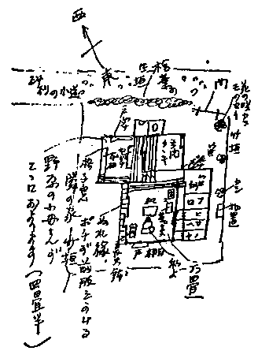

一月八日
〔巣鴨拘置所の顕治宛 目白より（封書）〕第二信 きょうは風がきついけれどもいい天気。二三日あっちこっちしていて、こうやって机に向ってゆっくりこれを書くのがいい心持です。きのうはあれから気分でもわるくなりませんでしたか？ 熱が出たりしなかったでしょうか。割合いい顔つきをしていらしたので安心です。
きのうお話した生活の変化のこと（自注１）について、もうすこしくわしく私のプランを申します。二日に書いた手紙には、びっくりした気持がきっとつよく出ているでしょう。フームと、びっくりしないで、びっくりしたから。
経済の方面では、大体御承知のとおりです。補充の方も何とか工夫がつくでしょう。書くものが変っても、随筆でもなんでも名を別にしても同一人であってはいけず、「情を知ってのせたものは」云々とあるから、文筆上の仕事では不可能ですが。家もおひささんも当分このままです。お話した店の方が形つくと（自注２）、それによって私も戸塚辺へうつるかもしれない。二人の子供たちと七十八のお婆さんときりで、親たちが店へかかりっきれば、店へ通うとして余り頼りないから近くにいてくれたら安心だとおっかさんが云っており、私は又精神的健康法の上からどこまでも
夕方島田の方へ手紙をかきお話した件について、主としてあなたの御意見として申しあげました。その方が御諒解になりやすいでしょうから。どうかそのおつもりで。
私の机の上はこの頃あなたのまだ御存じないものが一つふえました。それは花瓶です。この頃インベやきの紅茶セットなどよく出はじめたが、その焼で水差しの形で七八寸の高さ。これは珍しいでしょう？ 音楽評論社で原稿料の代りにくれたの。たくさん水仙をいけてあります。私のさし当って一番おしまいの稿料がこういう形でのこされたのは興味があります。それにこの位大きい瓶がほしくていたところだからなお更気に入って大よろこびです。昔、私は小さい花を一二輪机の上におくのがすきであったが、この頃は花の蔭という風に左手の机の奥に房々とたっぷり花のあるのが好き。私の
どうかお元気に。乾くから喉をわるくなさらないように。おなかはもう痛まないのでしょうか。では又。皆からよろしく。
（自注１）生活の変化のこと――この年一月から翌年の夏頃まで内務省検閲課の干渉によって中野重治・百合子の作品発表が禁止された。
（自注２）店の方が形つくと――窪川夫妻がコーヒーの店を出そうとしていて、百合子もその仲間に入っているつもりでいた。
（自注２）店の方が形つくと――窪川夫妻がコーヒーの店を出そうとしていて、百合子もその仲間に入っているつもりでいた。
一月十二日
〔巣鴨拘置所の顕治宛 目白より（中村研一筆「朝」の絵はがき）〕一月十二日、岩波の『六法全書』本年（昭一二）版は皆うり切れてしまい、新しい法規を入れたのはもう二三ヵ月後に出ますそうです。どうせ新しいのならその方がよいと思いお待ち願います。『二葉亭四迷全集』の一二は、創作です。待っているのは五六七八になりましょう。これもまだすこし間がある。一筆そのおしらせを。
一応うまいのは分るが、という絵が何と多いのでしょうね。うまさに於てこれも場中に光っていた方の部です。
一月二十二日
〔巣鴨拘置所の顕治宛 駒込林町より（山と水辺と村の風景の絵はがき）〕一月二十二日、あしたは日曜日でこの天気では雪になるでしょうか、雪は可愛いから降ってもいいことね。月のない代りに雪の夜にでもなったら、又異った眺めでうれしいと思います。あしたは防空演習だけれども午後は神田へ行って、およろこびのしるしとしていいものを買って頂きます。その中にはドンキホーテもプルタークもある国民文庫刊行会のシリーズです。夢二のこの絵はどこか瀬戸内海らしくて島田のどこかに似ているようです。
一月二十五日
〔巣鴨拘置所の顕治宛 目白より（封書）〕稲ちゃんのところへ、ひさが手つだいに行っていて、ひっそりとした午後三時。右手の薄青い紗のカーテンを透して午後の斜光が明るくさしている。机の上へ父の元買った小さいマジョリカの花瓶（中世には薬瓶としてつかわれたもの）をおいて、黄色いバラを二輪活けて、これを書いて居ます。きょうはすこしゼイタクをしてバラの花を二輪ぐらい買ったってよい。日曜日だけれどもラジオもやかましくなくていい。本当にこの辺はピアノもラジオもやかましくなくてその点では助ります。今の時刻、あなたもきっとこの午後の光線を
私は独りで明るさと静かさとあなたの傍にいる感情の中で、一寸した道楽をやって居ります。それは一つの算術です。日記の一番終りをあけて見る。1938年の十二月三十一日は土曜日です。本年の元旦は土曜日であった。すると来年の元旦は日曜日で来年の一月二十三日は月曜日ということになる。ハハ。これはよろしい。では二十三日に出かけられる。ここで一日ずつあとへくって見ると、六年前のきょうは月曜日だったことが思い出されます。そして来年は七年目で又月曜日。つまらない、しかし私には一寸面白い算術。
一月二十五日の午後。
きょうも又晴れている。非常におだやかな天気。おとといのバラは八分開いて微かによい匂いを放っている。本を送る包みを二ヶこしらえて上へあがってこの手紙をつづけます。きのうは体の工合のよさそうなお顔付を見て本当にうれしくいい心持でした。便通は腹の調子を告げるばかりでなく全身の工合を語るから、それが苦情すくなければ何よりです。
きのうは割合いろいろ聞いて頂けて、さっぱりした安心した気持です。あれから真直家へかえって、すっかりおなかをすかして、おそばをたべて一休みしに二階へあがろうとしたら、ひとが来て五時すぎてしまった。そのうち、ひさ、戸塚へゆく時間で出かけいよいよ二階へ上ったら到頭十時まで一息に眠ってしまいました。ひさがかえる音で下へおりて、三十分ばかりいて、又あがって、二三時間おきていて又眠りつづけました。きょう、おだやかな天気を
きのうも簡単にお話したとおり、私は当分このままの生活をつづけます。今家賃は33円です。がやはりこの周囲でももすこしやすい家でもあれば代ってもよい位の考えです。家賃だけを切りはなして考えても交通が不便では私の生活に全く無意味だから。この頃のタクシーの価はあなたの御存じの時分より倍は高くなりました。銀座から目白まで雨だと一円以下では来ません。夜淋しすぎるところに住んだり林町のように
 このありがたさは痛切であって、恐らく私が年をとり生活の波浪を
このありがたさは痛切であって、恐らく私が年をとり生活の波浪を明日あたりお話した籍のことについてもうすこしとりまとまったことを調べて手続をすすめましょう。そして、来月には、はっきりとした私の勉強のプランについてきいて頂きましょう。よくプランを立てて一年に五百枚ぐらい――一冊の本の分量だけの仕事は必ずやってゆく決心です。どんな時でもそのときにしておくべき仕事というものは文学の上に必ず在るのですから。断片的でない勉強をまとめます。これまでは仕事即ち職業としての外との相互関係から比較的短かったから。暮に書いた「今日の文学の展望」百枚はこの種のものとして一番長かったが、どういうことになるか。ゲラのままです、目下のところ。これももっと手を入れたい。散漫なような手紙ですが、これで。猶々お大切に。おひささんがおかかをえらい音を出してかいている。では又
一月三十一日夕
〔巣鴨拘置所の顕治宛 目白より（封書）〕きょうはすこし気分をかえるためにこんな紙に書きます。半ペラはいつもこの色をつかうので。
ロンドンから雑誌のようなものは二十日ほどで来ます。あなたのお手紙が十七日にかかれていてもここへつくのは二十八日。何と面白いでしょう。
二十八日には建築士会の中條精一郎君記念事業会から、父の肖像（薄肉彫・ブロンズ直径三尺近いもの北村四海氏作）をおくられました。建築士会へは中條文庫資金一万二千三百円也が寄附されました。全額は一万五千円ばかり集った由です。三十日は二年目の父の命日で、雨のなかを青山墓地へゆき、花のどっさり飾られているお墓に参りました。この前の手紙で書いたように、私はこの頃いやまして父が困難に対して快活な精神を失わなかった資質の価値を尊敬している心持なので、お墓詣りも特別な心持で行ったのですけれども、石に中條家之墓と書いてあるのを見ると、父によりそっていろいろと喋ったり、肩を叩いて笑いあったりするような気持も違ったものになってしまいます。父の墓というものが欲しい。そういう気がしました。かえりに太郎も加えて同勢五人、銀座の松喜という牛肉をたべさせる家で夕飯をたべました。この店にしたのにも曰くがあるのでね、父がここの肉を
あなたも雪はお好きでしょう？ けさはね、雪がすっかり消えてしまわないうちにと、家を出て裏の
今、パール・バックの「母の肖像」というのをよんで居ります。そしていろいろバックの心持（書いている）を考えます。心持の性質について考えます。訳者の筆致の影響もあるが、バックの表情にあってかたまっているものが、やはり作者としての感情の底にがっちり構えているという感じ。そしてしたしめないところが生じている。それにしてもこのバックやスメドレイや、アンナ・ストロングなどは
私は又伝記の仕事を継続し、語学を役に立て、小説をつづけ、段々勉強に順がついて来ましたからどうか御安心下さい。非常にいそがしくやっていたのが、急にそういういそがしさはなくなったので、神経が新しい事情のテムポに適応するために時間がかかりました。いろいろの気持も。内外ともなかなか複雑ですからね何しろ。
一月二日に第一信。八日に第二。十二日第三。十六日第四。二十五日第五、そしてきょうの第六信。一月二日には、私が錬金術師でいやなことからも、
お大切に。木綿の二月十日
〔巣鴨拘置所の顕治宛 伊豆熱川温泉つちやより（つちや旅館の絵はがき）〕二月十日 九日の午前九時五十二分で立ち午後の二時すぎこっちへ着きました。網代からバスで伊東まで、そこで又のりかえてバスがいかにも伊豆らしい柔かい枯草山や海やを左手に眺めて海岸の上を走り、二時間ばかりで温泉につきます。ごろた石の坂道で歩くのには工合よろしくないが部屋からすぐ海上に大島が見え温く、昨夜は十時前からけさ十時まで眠ってしまいました。大いに眠ってかえるつもりです。粉雪がちらついている。寿江子がわきでタバコをのんでいる。お大切に。
この写真はこの家のよさがわかりません。私たちのいるのは正面玄関の向って左手の二階。手拭のかかっている室の右どなりです。左の別棟がお湯。小さい仕切った室があって大助りです。山のダイダイの木に黄色い実がなっていて、光井の村の景色を思い出します。梅は
。二月十二日
〔巣鴨拘置所の顕治宛 熱川温泉つちや別館より（封書）〕二月十二日 晴 第七信
この手紙は、伊豆の東海岸のいかにも晴れた日光を受けながら、つちやという宿の八畳の室のカリンのテーブルの上で書いて居ます。
八日には、元気そうにしていらしったので安心でした。あの風邪流行の中で鼻かぜですませたのはお手柄お手柄。あのときお話の大島の着物、インバネスのこと。あなた何か混同していらっしゃるのではないかしら記憶の中で。もう一度前後のことをよく思い合わせて思い出して御覧なさいませ。ひさのお使いは無駄足だったのですから。
ところで、二月二日に書いて下すった第三信、九日の朝立つときに着いたというのは実に大出来です。昨年のうちに、やはりこの位の日数でついてうれしかったことがあったけれども。あけてよんで、国府津などにも持って行った例のベルリン製の紙トランクに入れて又こっち迄持って来、今はやはりこの紙の左において書いている。
本の御注文のこと、これはお話でも分ったからかえったらお送りいたします。二葉亭は私が特に入用でもないから、やっぱり来た毎にお送りしましょう。中村光夫も二葉亭論のときはいくらか見られたが昨今はどうも。書き下し長篇小説も実際には従来の意味での通俗小説めいたものになってしまっています。阿部さんの幸福もその一つであるが、作者は漱石を狙って「それから」や「こゝろ」を念頭において
こっちの暮しはきょうであしかけ四日目。九日にはね、午後〇時何分かに網代について、すぐそこからバスで伊東下田行が出かかっているのだが熱川の宿はどこがよいのか知らない。赤帽にきいたら福島屋が一番いい、電話をかけといて上げましょう、電話料二十銭。二十銭わたしてバスにのったら、伊東まで相当ある。伊東は乾いたようなあまりに風趣のない町に見えた。伊東から又下田行で熱川まで一時間余。すっかりで二時間余です。山の間の坂道の左手に熱川温泉入口とアーチが出来ているところを、ハイヤーでぽんぽんはずみ乍ら七八丁下った狭苦しいところに福島屋あり、途中番頭曰ク生憎満員でお部屋がありませんがともかくお迎えして云々。上って見ると夜具部屋のようなところしかない。そこで宿に電話で交渉させて、坂の途中にあったつちや別館の九号という室におさまったわけです。海からはすこしはなれているが、大島が目の前に見え、左右は山の岬が出ていて、畑の真中の木の櫓から下の宿の温泉が噴き出して夜も昼も白い煙を
私は海の上に島を眺めていたことがないから一日のうち、時間と雲の工合によって遠くの大島が模糊と水色に横わって居たり、急に夕日で紫色に浮立って見ているうちに、右手のところに断崖があらわれ、やがて島の埠頭らしいところが一点水際でキラキラ光り出したりする光景のうつりかわりが面白い。夕刻は、今そうやって細かい家並まで目に入っていた島が、自動車を一二台見送って再びそっちを見ると、もうすっかり
きのうはバスで二時間ばかりかかって下田へ行って見ました。実のお吉で食っている。吉田松陰先生の住んでいた家というのは蓮台寺温泉の中の狭い小路の横です。普通の田舎家の土間のある家でごく小さい。子弟をあつめて講義したという、ベン天島というのも小さい。下田の町からはずれた柿崎というところ。ハリスのいた寺、お吉がカゴで通った玉泉寺という寺へあがる海岸です。黒船が二つの島の間に碇泊して天地を驚倒させたという二つの島のへだたりを見ると、当時の黒船の小ささがわかって実に面白かった。バスの女車掌さんが皆説明して呉れる。伊豆が金山で有名で幕府（徳川）の経済をまかなっていたとか、運上山というのが見えたりして。伊豆はなかなか幕末の舞台でしたから。曾我兄弟の父河津氏の所領がその名をもっていたりする。
寿江子は今散歩に出かけました。私はきのうごろた石坂でせっかく買った新しい下駄をわってしまって困った。きのうは相当にゆすぶられましたからきょうは一日しずかにしているつもりです。今大島の真上に一つの雲のかたまりが止っていて、三原山の煙が一寸ねじくれ乍ら真直のぼって、その雲との間に柱のように見えます。私がこうしていてもあなたがかぜも引いていらっしゃらないと思うと本当に気が楽です。
二月十七日
〔巣鴨拘置所の顕治宛 目白より（封書）〕二月十七日 第八信
これはもう東京。ひどい風が雨を吹きつけていて、ガラスのところから眺めると、目白の表通りにある三本の大きい私たちは十五日の午後に熱川を立って夕方東京にかえりました。十三日の私の誕生日はよい天気で、寿江子はスケッチに出かけ、私は宿でゆっくり本をよみ。次の日は矢張りひどい雨ふりで、いかにも暖い海岸での春のはじまりの雨というたっぷりした降りかたでした。寿江子は私のわきでスケッチをして居り、鼻歌まじりで一心に集注した可愛い顔つきで雨にぬれて色あざやかな外の風景を描いて居り、私はドーデエの『月曜物語』を、特別な興味と関心とで読んで居り、午後じゅう、ほんの一寸しか互に喋らず、しかも静かに充実した精神の活動が室に満ちて居り、本当に本当にいい心持でした。十三日とこの日とで私はすっかり疲れがぬけたようになり、もみくしゃな顔がしっとりとしたようになりました。其故、きょうこんな荒々しい天候でも私は休まった神経のおだやかさ、きめの濃やかさというようなものを感じ、気持よい活気を感じて居ります。
本当にありがとう。私は誕生日へのあなたからのおくりものとして、この休みを休んで来たから、その甲斐があってうれしいと思います。
お体の方はずっと順調ですか。きょう、夏ごろ南江堂の書棚を苦しい切迫した気持でさがしてお送りした本どもがかえって来たのを見て、私は思わず、ああ、これは大事にとっとかなけりゃ、と云いました。全くそうでしょう、ねえ。それから一つ私は悟りをひらいて来たことをお話ししましょう。この前熱川で書いた手紙にも其について書いたが、私はこれまでの何年かの間、自分が何かをああ美味しい！ とたべた
十六日には新響の定期演奏会をききました。朝吹という若い夫人（テニスの朝吹の一族）ピアノを弾き、なかなかよかった。女のひとでこの位量感があり、変化もある演奏をするのは珍しい。熱心に聴いていい心持につかれました。林町では咲枝が風邪で臥てしまっているので、きのうは午後から太郎をつれ戸塚へまわって達坊とおかあさんとを誘い、家で七時まで遊んでそれから私は音楽をききに出かけたわけ。
留守の間おひささんは戸塚へ手つだいに行っていて、一日に一遍ずつ見まわりに来て居ました。
ドウデエは昔「サフォ」がはじめで、いくつかの作品をよんだが、『月曜物語』は短篇集として様々の感想をおこさせる作品集です。短篇というものについてもメリメと比較し、モウパッサンと比較し、チェホフに比べたりすると、例えばモウパッサンの「脂肪の塊」などとドウデエの短篇とでは、同じ時期の人生の断面を其々にとらえていても捉えかたがいかにもちがう。ドウデエの思い出に、原稿が一枚かけると、小さい男の児がそれをチョコチョコととなりの部屋にいるお母さんのところへ運ぶ（浄書に）光景があり、そんな風にものを書くということを昔私はびっくりして覚えています。深刻な矛盾の中に当人が楽しそうにしている姿というものは独特の見ものですね。この小さい男の児が、今はもういい爺さんでクロア・ド・フューの仲間で活躍しているのだから面白い。父ドウデエの作品がこのように一家の歴史のすすむ酵母を既に語っている、そこが又面白く思われる。
一緒に送りかえされて来た購求の書下し長篇小説の一冊を眺め、私は胸の中に
雨が上りかけて、空の西の方が光って来ました。それでも寒いこと。手が大層つめたくて、変な字になる。近日お目にかかりに行きますが、どうか風邪を呉々おひきにならないように。
二月二十七日
〔巣鴨拘置所の顕治宛 目白より（封書）〕二月二十七日 第九信
きょうは第四信をありがとう。この位こまやかな手紙を書いて下さるのであったら、体の工合もずっと順調でいらっしゃるにちがいないと安心です。私の誕生日について本当にありがとう。十三日をどう暮したかということは熱川からの手紙或はかえってから差上げた手紙でもうおわかりになって居ますでしょう。別に何というお祝ではなかったが、十三日はたっぷりとしたそして落着きのあるいい日でした。暮から私はやはり随分
いつかあなたが、私におくりものとしての言葉をやろうと思うが、豊富すぎて表現しにくいという意味を云っていらしたことがあった。私は私の希望するものをみんなあなたから頂くよろこびと、絶えず其等を貰っていて私がたっぷりしているというみのった感じと、事々に生活の感動をそこへ響き合わしてゆく心持とでは、充分に充分に輝やかしい迄に慾張りです。この点での私たちの慾張りは一つの人間的美にまで近づいている。こまかいものから大きく深いものに到る迄、私はあなたからとっている。この間もね、隆二さんにあなたから誕生日のおくりものとして熱川への小休みを貰ったと云ってやったら、本当にいいおくりものを貰ってよかったとよろこんでくれました。
ところできのうは本当に悲観してね。何しろ私が帰ったのは十六日で、二十日がすんだらお目にかかりに出かけようと思っていた。そうしたら二十一日に関鑑子さんのお父さんが亡くなられたことを知り、二十四日の御葬式の日までお通夜その他で暮しました。
さて、二十四日にその葬儀が終り、二十五日は疲れ休みで、丸善へジョーンズの発音辞典を買いがてら許可をとりにゆき、きのう二十六日に行くつもりだったらほんの一寸のことでおくれて、到頭あした迄のびてしまいました。ああ悲観した、フウ！ と云っていたところ今朝お手紙で、随分うれしかった。
葬式が団子坂のお寺だったので、かえりに林町へよったら、国男へ本を送って下すったのが丁度届きました。テーブルのあのひとの席にちゃんと飾っておいて、わきから首をのばして開けるのを待って見たら、あれはいい本です。欲しいと思っていたし、国男の常識をひろくするによい本だから、およみなさい、きっとおよみなさいと申しました。この著者の『数学教育史』も面白いでしょう。寿江子についてもありがとう。私はこの子をすこしたすけてやって音楽史の仕事をまとめさせてやろうという計画があります。音楽史らしいものは殆どないのだから。島田へ送る本のこと、承知いたしました。
住居のことなど、なかなか動けません。栄さんと共同にやることは不可能ときまりましたし林町の裏は、私として、寿江子の家を無いようにして自分が住むということは出来ませんし。格別な智慧も出て居りません。
この頃の暮しを利用して体を丈夫にしようとしてお客でもないときは必ず十二時前に寝るようにして居ります。朝もしたがって早く徹夜は今こそ全廃です。熱川からかえってから皆元気そうになったとほめてくれます。
三月一日夜
〔巣鴨拘置所の顕治宛 目白より（封書）〕三月一日 第十信。
きのうも今日も夕方から風が出たが、いかにも春めいた日でした。うちのひさはすっかりきのうは久しぶりでお会いして、あなたの着物の召しようがくつろいでいたのが目についた。三月に入ると火の気のないところの大気は本当にちがってきますね。やがて夕暮が美しい薄明になって来る、そしてエハガキの色どりが奇妙に鮮やかに
きのうは、うちの話が中途でポツンときれてしまいましたから、先ずそれをつづけましょう。前便で大抵書いたと思いますが、家はなかなか簡単にかわれません。アパートなども一応考えるが、謂わば往来を区切ったようなものでね、ドアをあける。それっきりではこまります。雑多な人間のいることも種々不便です。アパートは考えられず、林町の離れは前の手紙に書いたようなわけ。夏まではともかくここに居ます。交通のことやいろいろの点を考えるとなかなか動けません。それに、この頃の生活は沈潜して勉強出来るし又するべきときだから、毎日を変に落付きのわるいものにしてしまうことは本質的に非能率ですから。それに私はやっぱりこの辺を大変愛しているのだと思います、ちっともうつりたくない。ですから家のことは当分御心配なさらないで下さい。依然として、この小さいながらもわれらの窓に灯火は輝きつづけてゆくから。
これから当分南風が吹く日が多いが、皮膚のゆるみで風邪をおひきにならないで下さい。寿江子はこの三四日風邪で
私は誕生日のおくりものに頂いた小旅行のおかげで、本当にこのごろは工合よくなり、無駄のない日を暮して居ります。だが、私はどうも一日に二つの仕事をふりわけにやってゆくことは出来ないたちだから、一二ヵ月何か生活のためにしなければならないことをやって、あと二三ヵ月は別のものにうちこむという風にやって行ったら、工合よく行きそうです。そういう風にゆけたら、そとからこまごまと切られないで、十分気を入れてやれて、随分うれしい。
きょうの手紙はどっちかというとゆったりした気持のものだからついでに書きますが、あなたは眼というものの微妙さをおどろき直すような感動でお感じになったことがあるでしょうか。私はきのう深く其を感じて来ました。こんな小さい瞳の中にあなた全体が入るのですもの。瞳から入って心にそっくり活きている。何というおどろくべき仕組みでしょう。眼ほど謂わば宇宙的な部分は人間の体のどの部分にもないと思う。眼のむさぼり、眼の食慾、眼のよろこび 眼から眼へ流れるものは
すこし又熱ぽいかもしれないが時候が今ですから気になさらず、どうか呉々お大事に。
三月八日
〔巣鴨拘置所の顕治宛 目白より（封書）〕三月八日 第十一信
この間三四日何と暖たかだったでしょう。東中野のところに在る三越の青年寮の大きい桜は、八重だのにもう七分通り咲いてしまいましたって。それが又きのうきょうの陽気で、さぞ途方にくれていることでしょう。机の上に、三日のおひな様のとき戸塚の花やで買って来た見事なアネモネがさしてあって、それは一昨日あたり今にも紫の粉を私はずっと工合よく保っていて、しかも相当うれしいことには、きのう歯の医者へ行ってしらべて貰ったら比較的良質の歯だそうです。いろいろ大した手当は不用で、左の下の奥が親知らずを入れて二本だめになっている、それを多分抜くでしょう。あと一つ右の上に過敏になっている箇所があって、それを手入れするぎり。お茶の水の文部省附属の方へ行きました。父もよく通っていた。そこはどんな人でも一度ずつ手当の費用を払い、すべての専門部があって安心です。世にも歯の手入れは辛いから、フーフー思っていて、きのうは大決心で行って、却って大安心しました。どうか御安心下さい。私がこんなに丸っこくて、頭脳的にやや酷使の気味で、それで糖尿的でもないし、
夜ねる前に歯をみがくことの効果を信じる次第です。この頃は一日に八時間位の労働です。いろいろ視力をつからさないように注意をして。（春は目がつかれる）面白いことに出会いました。それはイギリスの中世の伝説の一つですが、或時、アーサ王が悪者の魔法をつかう騎士につかまってしまった。その悪者はアーサに謎を出した。すべての女が最も望むものは何か。その本当の返答が出来なければ国土を皆とってしまうという。アーサは苦労したがこれぞと思う答がないとき、或森の中で、醜さきわまりない女に出逢うと、それが答えを教えて呉れた。曰ク、すべての女の最も望むことは自分の意志を持つということですよ。
その答えでアーサは悪い騎士に勝ち、そのみっともない女は、その礼に美しい騎士を良人としてアーサから獲る。するとそれでその女にかけられていた魔法の半分がとけて、女は可愛らしい若い婦人の姿のままで一日の半分は居られる。良人である騎士に、夜美しい方がよいか、昼間うつくしい方がよいか、ときくと、騎士は初め、夜の間美しい方がいいという。でも、女としては昼間きれいで皆の間にいられる方がたのしいのだというと、男はその女の望みを叶えてやって、夜こわい方でもよいということにすると、それが最後の鍵で、女はすっかり魔法から解かれ、美しいまま生涯を暮せた、という話。
私は大変面白く思いました。七世紀から十一世紀位までの社会でつくられた物語の中で、人間力以上の人物であるアーサが解けない謎が、女の真の心持の要求しているものであるという点、しかもおそろしい魔力が、女に対する男の真の親切な思いやりでのみ、終に解けるとされているところ、大変に面白い。その頃の婦人の生活一般、男の理想と現実の両面が象徴されていて、いかにも面白く思いました。こういう物語は、今の世の中の少年少女にも教訓になるようなものですね。国男などには大いに有益です、ひとつきかしてやろうかしら。
この間うち隆二さんしきりによき結婚生活、特に芸術家の結婚生活について書いてよこします。貧乏だもので、おでことおでこをつき合わしているような夫婦が多すぎると。そして、真の夫婦というものは互により高い一人を求め合う面で結ばれているものだし、又一人で歩いてゆかねばならぬ、まじり合ってしまってはいけないとしきりに云って居る。何で感じたのでしょう。清少納言や何かひとりで暮していたことを書いて、ローマン的心持らしい。いろいろと微笑されます。勿論いい夫婦というに足りる夫婦は大変に尠い。それだけ互を人間として尊重し評価し愛して同体となっているのは尠いけれども、このひとにはまだ多くの、而も最も人間感情の微妙端巌なところが実感されていない。同時に、私はこの頃、深く深く、人間が一生のうちに、そういうところに近づき触れてゆける結び合いにめぐり合えるということの稀有さを、ひろい背景と考え合わせて感じ極まっているので、何だか無理もないようにも思えます。
それにしても生活というものは何とリズミカルで、変化するに応じてそれぞれの味い、豊富なものでしょう。あなたはいつか栄さんの良人に、いやな勤めの味を自分も知っていると云っていらっしゃいましたね。この頃私には其がわかります。いろいろ事情も条件もちがうけれども、感情においては判ります。私としては新しい境遇によって得た新しい収穫です。なかなかためになります。益
根が深くなる。この人生に於て愛するに足るあらゆるものを愛す心がいよいよ鋭く水々しくされる。この三四年の間に、私が経て来た生活とその収穫の経緯は一本の道の上ではあるが、芸術家の生涯にとっては重大で、現在の事情も或意味ではこれまでの様々な経験が与えたと違った一つの意味ふかいものを私に与えるらしい様子です。生活の全面的な関係だけが可能にする発育のモメントというものがある。正直に生きてそれにぶつかり得ることが既に一つの幸福であり、そこから何かましなものを学べることは、何という滋味でしょう。私は一箇の人間として、
三月十一日
〔巣鴨拘置所の顕治宛 目白より（封書）〕三月十一日夜 第十二信
三月三日の、丁度私たちが戸塚のうちで火曜日から三日ばかり（きのう迄）風邪になって床につきましたが、雪を見たら却ってさっぱりしてしまった。何にしろ不順ですね。ずっと同じ御工合でしょうか。
さて、私が小説について苦々しさがほとばしるといきなり書いて、本当にあれは唐突でした。何にしろ生き方のからくりの悪臭で皆相当当っているものだから。何を書くかより以前に何者であるかということ、について貴方もいつか
あの小説とは別のこととして、勉強ぶりについていろいろ楽しい期待をもって下さること、よくわかりますし、私も実にその点では云いようのない位、自分にもたのしみです。そのことでは私は自分の最大の貪慾と勤勉とを発露させます。そして長年の友達たちというものもありがたい、誰も皆そういうたのしみは持っていて様々の形で期待して呉れます。私にとって一番こわいのは自分が、わるい作家になるということです。窮
健ちゃんがそろそろ語学をはじめるらしいが本当にいいことです。語学の実力は小さいときからやったものにはかなわない。いざとなると私の英語がいきかえって来るのを見ても。達ちゃんの舞踊の如きも同じで、歯の手入れ、音楽、語学は子供からです。
鶴さん又盲腸で臥ている由。清三郎さん大元気です。おひさ君本当にやがて一年東京に暮すことになります。早いものね。さち子さんがお手紙をもって来て見せてくれました。桜草がきれいらしいこと。十五日にはてっちゃん御夫妻が初見参です。あなたのところへ二人で行ったかえりによってくれたのだそうですが、その日は私が留守でしたから。お手紙がついたとの話でした。地図と本つきましたか？ 近々『六法』その他お送りします。又月曜日位にお目にかかりにゆきますが呉々お大切に。どてらとネマキの小包はつきました。あれも歯医者のように匂いますね。では又。
歯をぬいたせいかしら、いやにふわりとした腕の工合で妙です。
三月十七日
〔巣鴨拘置所の顕治宛 目白より（封書）〕三月十七日 第十三信
十四日には元気そうな御様子でいい心持でした。庭へ出られるようにおなりになったのは何とうれしいでしょう。往来から見ると壁のあたりに樹も見えないが、花なんかやっぱりあるのでしょうね。ヨーロッパと東京にこの頃肺気腫の患者が殖えて来る傾向なのでしらべたら、アスファルトの微細な粉がいつか肺を刺戟して、そういう病にかかりやすくなるのだそうです。一日に地べたを踏むことがない人、いつもアスファルト道しか歩かない人は、一生のうちよほど体を参らすらしい。ひどいものですね。郊外に住むということが益贅沢の一種になるわけです。先ずお父さんの御様子から。昨日お母さんからお手紙が来ました。実にいいあんばいに熱もすっかりなく、医者（秋本ですが）も大丈夫と云ってびっくりしている由。食事は朝牛乳一合、おひるおかゆ一杯お汁、おろし大根とさしみ。夕
島田の方はお医者様が何人か出征して、五ヵ村に秋本さん一人です。その医者で御なおりになったのですから、実に万歳ですね。私は殆どびっくりするほどであるし又しんから嬉しい。あなた方の体質はこういう型なのですね。私の方は父ゆずりで
あちらでも遠いところをと云って居らっしゃるしするから、急に行くことはやめます。そして四月になって一段落をつけて、一寸御様子を見て来るかもしれません。野原の方も冨美ちゃんが三月二十七・八日頃女学校の入学試験です。入ったら本を二三冊と万年筆をお祝いにやろうと思って居ります。あちらももう一周忌です。何かお供えの品をお送りしようと考え中です。
一昨夜やっと大観堂へ出かけました、宿題を果すために。そしたら、お金をお送りになっているのが一寸見当らず。ともかく『真実一路』と本庄氏の『日本社会史』を店からお送りします。土屋氏の本は手元になく、本庄氏の『農村社会史』という方は大観堂目録にない様子です。近日中に行ってもう一度しらべます。
丸善の方もちゃんと命じました。松山高校へも出しました。私のやりかたは
今村さんの亡くなったことはいつか一寸お話ししたと思いますが覚えちがいであったかしら。友達たちはあのひとのために実によくつくしてやりました。それから九州の兄の家へかえってそこでも自分が思っていたよりはよく扱われていたが、遂に亡くなりました。詩は集に入っているののほか、雑誌にのったのも、大体はわかっているし、とってあるようです。今野さんの詩もやはりまとめてとってあります。あのひとは兄さんの家庭があるだけで、あのひとのあとで困っている家族はないのです。
エドガア・スノウの本（自注３）が半年かかって到着しました。見せてあげたいと思います。きょうの手紙は大変家事むきのものになりました。これから二三時間仕事をして、それからもらった切符で前進座を見ます。皆ここのひとは
（自注３）エドガア・スノウの本――エドガー・スノウ『中国の赤い星』。
三月二十四日
〔巣鴨拘置所の顕治宛 目白より（封書）〕三月二十日 第十四信。
今夜は何という春めいた晩でしょう。この頃は、昼間は落付かない風が吹いていやだが、夜になるといかにも和らいだ空気ですね。灯をうけて紙に向ってさっきから仕事をしている。紙の上にペンの音が響き、ずっと遠いところを電車の音もしているが、人声はどこにも聞えず、大変心持がよい。明るさの中に何か微粒子が動いているようで、手紙を書かずに居られません。一寸ペンをもったまま傍をふり向き、この夜とこの一種の静かさの裡で顔を見たい。見えてはいるのですけれどもね。そこに在るのだが、私が顔をもってゆくと空気が動いて、心が自分の優しさに困惑する。
これからこういう夜がつづいて、ますますいろいろ勉強したり、考えたり、書いたりしたくなることでしょう。本当に静か。きのうの晩、栄さん夫妻あてのお手紙をみせてくれました。相変らずピーピー暮しだろうとは図星故、大いに笑いました。でもあすこは栄さんがああいう生活的な人柄だし、ピーピーながらも抑揚をもって毎日をすごして居ります。
話が唐突に飛ぶけれども、しゃべりつづけていなければならないというのは、何といやでしょうね。何もしゃべらず、ただ見ていたい、見て、見て、見ていたい。そう思う。尤も
明日あたり『六法全書』『国勢図会』などお送りしましょう。ああ、こんなにしてあれこれといってみて、いいたいことはこのどれでもないというようなのは、おかしい。そして、苦しい。
自分ごとみんなまるめて、一つの
きょうは三月二十三日の午すこし過です。雨上りの曇天であるが、窓をあけていると盛にどこからか雀の
きのうは又、知っている人に割引で岩波の斎藤の『中辞典』を買って届けて貰い、うれしかった。なかなかいい字引です。活字が第一やたらに小さくなくていい。そして豊富にあつめてあって、こんなのと、オックスフォードと、市河の古語があれば、まあ大抵の役には立つのでしょう。非常な勢でやっています、早くすきなことがやりたいから。
それから、かねがねの宿題の返事がやっときました。松山高校内菊池用達組販売部という紫のゴム印をおして。鉛筆をなめなめ書いた字で、先ず「お葉書正に拝見いたしました」云々と、女の字で書いている。今も菊池の由です。「以前の帳簿は保存してありますけれども本店主人及店員の主なる人は、目下戦地へ行って居ります為、金額は不分明に御座います。それで宮本顕治様のお名前はよく覚えて居ります。お払未納の分をお心にかけられお申越しでありますが」何程でもよろしいと申すわけです。いくら位だったか覚えていらっしゃらないでしょうね。よほど前には三円いくらといっていらしたが。五円位やっておきましょうか？ 越智という人のあとは四人目でお
私は林町のうしろなどへ行かないでよかった。実によかった。よろこんでいます。ここにこうしていてこそ新しい事情の新しい収穫がくっきりと身につくのです。それをひしひしと感じて居ります。
沈丁花という花の薫り、そこにも匂いますか？ この辺は夜など静かな往来いっぱいに漂っています。では又。春先の風邪を御用心。
三月二十九日
〔巣鴨拘置所の顕治宛 目白より（封書）〕三月二十九日 第十五信。
午前九時前の朝の光をうけて、あなたに手紙を書くというのは、大変珍らしいことでしょう。昨晩は十一時頃あなたのところでは、今朝はどんなお
金曜日は、出かけにうすら寒かったので、ああやってお目にかかったときはコートを着ていたが、ずっと広っぱの水たまり道を歩いているうちにすっかり暖くなってしまって、鋪道へ出たら、街路樹の支柱へハンドバッグなどのせて、コートを脱ぎたたんで持ってかえりました。そしたら、女学校の上級生であった時分、女子大へ一寸通っていた時分のことをはっきり思い出した、朝雨がふってかえりに晴れている。すると、私共はその頃和服で袴の上にバンドをつけて通っていたから、
土曜日は茂輔氏の『あらがね』（小山出版）の会でいろんな人の顔といろんなテーブルスピーチをききました。高見順君「テーブルスピーチというものをやります」という冒頭。
日曜日には、わが家として特筆大書すべきことがありました。子供たちが皆一年だけ進級したので（達枝は来年だが）そのお祝いをしてやることにしてあった。子供は大楽しみをするからあまり前もって云って、何かさしつかえると実に相すまないから前晩までふせておいて、日曜日は栄さん、本間さんの細君、ひさ、私もちょいちょい手伝って、お釜二つに五目ずしをつくりました。細長い台を二つタテに並べたところへ、高女四、高等二年六年三年三年と並んで、賑やかに食べること、食べること。私は前掛をかけて首をまげて見物していて、「一寸ゆっくり、沢山たべなけりゃだめだよ」とか「お腹ギューギューならバンドおゆるめ」とか云っている。「もうさっきゆるめちゃいました」健造は総代だったって。新しい服がすこし大きいので首が細く見えるのもいかにも進級風景です。健造新らしい服のせいか膝にハンカチをひろげて食べている。別に何とも私は云わなかったが、この子の性質が出ている。ハンケチなんかかけないでいいし、思いつきもしない方がいい。年よりがいるとちがうのかしらなどと思って眺めました。女の子二人はもう大きくもあるのだが、男の児等とちがっている。稲ちゃんも私も女びいきのくせに男の児の方がすきで、面白い。男の児みたいに面白い女の児がざらにいるようにならなければ嘘だと沁々思います。男の児はどれも、どんぐりでも、何かくっきりした
夜、又あとから寿江子、さち子来てたべて、総計十五六人が出入りして、私はすっかりくたびれました。いい心持に堪能して。子供らをたべさせたりするのは実にいい気保養です。これからたまにやることにきめた。
きのうは、雨であったが一仕事してから慶応病院へ古田中という母の従妹に当る夫人の見舞いに出かけ、途中三越へまわって貴方御注文の羽織紐を買おうとしたら28日でやすみ。８の日はああいうところは休日です。近所の店で買いました 春らしい色をしている、胸の前に一寸下げて下さい。私もふだんのを一つ買った。赤い縞のついているの。
きょうはこれからずーっとやって、午後は栄さんのところで例のノエ式をかけて貰おうかなど考えて居ります。背中がつかれているから。まるでトンネル掘りの土工が、そらもう一シャベルとはり合をつけてやるように、せっせせっせとかかっているので、頭より背中がくたびれる。しかし生活が与える新しい経験というようなものは実に面白い。
冨美ちゃんの試験は26,7日で終ったわけですがどうだったろうかしら。体が腺病質なので。東京の小学校では、体によって肝油をやっています（金を払ってですが）。あっちではそういうことはしない。三十日すぎたらきいてあげて見ましょう。
新協で朝鮮の伝説春香伝をやっている。「若い人」（映画）の女主人公をやって好評であった市川春代が春香にとび入り、赤木蘭子を対手の男にしてトムさんレヴューばりです。まだ見ない。近いうちに行きたいと思って居ります。原泉、病気をおして春香のおふくろさんをやって居ます。どうかお元気で。きょうもこれで余り暖くもないようですね。又近いうちにいろいろと書きます。
四月五日朝
〔巣鴨拘置所の顕治宛 目白より（封書）〕四月四日 第十六信
落付かない天候ですが、ずっとお体の調子はつづいて平らかですか。けさおきて、下へ行ったら、例のところで、冨美ちゃんは、
ひさの弟も中学をうけて、一・二番だったが落ちたそうです。それに姉がお嫁に行くので、そうなると、実家に手がなくて、かえらなければなりそうもない。それで、当人も大いに悲観している。こまったよゥと
支那の文明批評家で林語堂という人がものを書いていたのを一寸よんだら、欧州の作家を引用して気焔をあげている中に、昔からの支那の椅子は威儀を正して見せるためであって、体をくつろがす目的でない。そんなのは嘘偽であるから、自分はティーテーブルでも何でもへ足をあげて楽にすることにしていると、勇気
『漱石全集』の中に、初頭のロマンティックな「幻影の楯」、「カミロット行」（これはむずかしい漢字）というような作品を覚えていらっしゃるかしら。漱石は時代の面白さを反映していて、そういう外国のロマンティックな騎士物語の中では、火のような女を愛して、興味を傾けて描いている。焔の如き彼女の思いをも支持して描いている。ところが、リアリスティックな日本の女を描くと、終始一貫心
桜が咲いて、風だの雨だのがある。花に風というと皆は今日思わず笑うが、特に関東地方では全く、花は風にもまれるために咲くようですね。フィリップという作家の祖母は乞食だったそうです。フィリップはそういう祖母をもったもう一人の大作家と余り年代がちがわなかった、ちっとも知らなかったけれども。では又。お大切に。私は七日頃に行こうと思って居ります、お目にかかりによ、島田ではなく。
四月十日
〔巣鴨拘置所の顕治宛 目白より（封書）〕四月十日 第十七信
七日には妙なべそかき顔をお目にかけてすみませんでした。全くの愛情と正当さから云われたことだのに、あんな顔になってしまって、さぞ当惑なさり、おいやだったでしょう。御免なさい。あの日は、前日からいろいろと何年も前の日や夜のことを思っていて、感情がそのように傾き、心持が皮膚をむき出していたところへ、本のことや何か、大変苦しく感じた上だったので、思わず、そっちの感じがこみ上って。何年めかに私のべそをかいた顔を見せて、やっぱりあの
お話のことは、その本質の深さや正しさや意味の含蓄が、非常によく分りました。
せき立てられるようにして聴いたり喋ったりしていた時とは比較にならずよくかみこなしてわかって来ました。私としては主を従にして考えたつもりではなく、確にあわてたこともあり、且、永続的な条件に対して何か備えたいと考えられたからでした。主を主とするために、と考えた。だが、そう云っていてはきりがなくなると云われ、将来の自分の時間というものを勝手に都合よく予約ずみのように考えていたことが、誤っていたと思います。私の事情として、今二つに分けて考えるのが
登山の初心者はこれをやって、そしておっこちたのでしょう。貴方のこわい顔でそこ、そことさされ、その地点の性質もよく見きわめたし、足がかりの刻みつけかたも、分っていたところと一層ウム、成程と身に
私たちの経済については、すっかり貴方の仰云るとおりにしてやってゆきます。そしてすぐ又つづきの仕事に着手しますが、もう十日ばかりは辛棒して下さい。ひとの好意に対する私の義務というものもあり又そのひとが他に負うている責任もあり、それだけはさっぱりと果すのが本当だと思いますから。
貴方に指されて、わかり、わかろうとする誠実さをもっているというのが、せめても私のとりえであるけれども、私とすればちっとも威張れたことではない。人間の出来ということについても考える。随分身も心もしめて、いるのだけれども。そして、そう考えると涙がこぼれる。出来が粗末なところのある人間だと考えると、大変悲しい。いつでも。最も重要なことが、人生について、芸術について見とおせるような実力のあるものになりたいと思います。
この間、私は何かつべこべ云ったようで心持がわるいけれども、あの折の心持で、何だかすっかり主を従にしていると思われているのではあるまいかと、びっくりした心配な心持になったので、あれこれ並べたのです。でも、考えて見れば、それはぎりぎりのところでは、当っている観察なのですが。勿論今はそのことも分っているのです。
丸善へ行ってきいたら、分類目録はつくれないのだそうです。只今のところ。為替がどんどん代るし、本の種類のよしあしもかわるので。しかたがないから『学鐙』と一緒に『アナウンスメント』をお送りして貰うことにします。『大尉の娘』は東大久保の家で見つけ出しました。プーシュキンの全集とゴーゴリ、チェホフなどあります。順々にお使いになれます。
他の本、今明日うちに届くからお送りします。生活の細々した日常のことは、ちゃんとした筋がとおっていれば、それに準じておのずから整理され、純一されてゆくものですから、どうか御心配なく。まさか私も、小道具で舞台を見られるものにして貰ってゆく役者ではないから、その点は本当に御心がかりなく。
手紙をかきながら涙をこぼしたりして。人生の過程の様々の瞬間について考える。小さなような、而も深い深い有機性をもっている
四月十八日
〔巣鴨拘置所の顕治宛 目白より（封書）〕四月十八日 第十八信
さて、この間九日に手紙を書いて、きょうは九日目。手紙を、あれを終ってからさっぱりとして湯上りのようにあなたに書きたいと思って、きのうも一昨日も、ああ書きたいと食慾のように感じながら辛棒した。この手紙はそれで、今、私への
それでも、私はやっぱりやり通してしまって、一種の満足があります。丁度家の掃除をせっせとやってやれいい心持と感じているような工合で、大して自慢するようなたちのものではないけれども、やっぱり一つのことを仕終ったという快さはあります。貴方に云われたいろいろのことを非常によく身に泌みているので、決して洒々といい心持がっているのではないから、この一寸した満足感を喋るのだけ
この次お目にかかる時は、もう私はちゃんとした勉強にかかっています。気をひかしたりしないで、貴方に喋れるのは何といい心持でしょう。
今のところ、ひさもいつかえるか（国へ）わからず、ずっと落付いて居ります。
その後お体はどうでしょう、順調ですか。ひどい風の吹く季節もすぎ、きょうは荒っぽい天候だが、東の窓を机からふりかえって見ると、濃い鼠色の嵐雲の前に西日をうけた八重桜の花が枝もたわわに揺れて美しさと激しさの混りあった光景です。欅の若芽も美しく北窓から見える。今年私たちは恒例のピクニックもしなかったら、この頃健坊たちがしきりにどっかへ行こうよと云うので、多分来週の日曜日にはどこかへ奥武蔵辺へつれて行ってやることになるでしょう。
親たちと私とは一昨日春陽展を上野で見ました。木村荘八、中川一政、石井鶴三、梅原龍三郎の諸氏の画境について、実に何とも云えぬ印象をうけて来ました。中川一政の昔の画集に巣鴨の昔のそこの附近を描いたものがあったりして独特の味をもっていたが、この数年尾崎士郎や芙美子女史の芝居絵のような插画を描きまくっているうちに、画技は衰え、しかも文筆の上で妙なポーズをかためたのが却って画家として他に語る方法を可能ならしめたこととなり、実に熱意もなければ愛もない画を出している。鶴三はレビューを油で描くのはよいとして、その見かた描きかた、「こんなのもやりますと云っているようだね」という評が適切です。これを見ても、私はそう云っていてはきりがなくなる、と云われた貴方の言葉を思い出し
いつか、麦遷と
何か色の絵はがきを送って上げたいと思って、上野では暫く見たがろくなのがないからやめてしまいました。
ところで、改造の本ですが、あれは品切れで（本やは絶版と云ったが）一寸手に入らないので、改めて古本屋にたのむことにいたします。三笠のは配本を中絶したので大変おそくなってしまいましたが、古いのお送りいたします。
今六時がうつのに、まだ明るい。
この手紙はまとまりのわるいようなものになりましたが、まだすこし気が立ったところがあるので、あしからず。そちらからはなかなか来ないこと。それだのに九日間かかず、それを知っていて、却ってごたごたやっている間に又のめのめ書くということが出来なかったのです。こういう心持も貴方はよくわかって下さると信じます。では又御機嫌よく
四月二十三日
〔巣鴨拘置所の顕治宛 目白より（封書）〕四月二十三日 第二十信
きょうは小雨が降っている。静かな明るい雨。いろいろな緑の色が雨に映っているような雨です。きのうは、外へ出て広い空地の方へ行ったら小さい雨粒が一つポツリと額に当って、降らないうちにと大いそぎで、黄色い鼻緒の草履で歩いた。それでも家へついても大丈夫だったけれども。
昨夜は、本当に楽々としていい心持で眠りました。そちらはいかがでした？ あの小さいところが開いて、そこから溢れて私をつつんだ心持が、私の心と体とにずっと今ものこっていて、何とも云えず安らかないい心持です。私たちは互に顔を見合わせたとき、いつでもきっと、この前会ったときからのはっきりした心持のつながりの上で、合わせばすぐぴったり合う切りくちで、互に顔と顔とを合わせる。これは本当にありがたいことだと思います。きのうはうれしかった。けさ夢のなかで、私のてのひらがまざまざと頬の上を撫でて、近くある眼とその手ざわりに感動して、優しい呻り声をあげて目を醒しました。そしたら静かに雨が降っている。きょうはそういう工合の日。
さて、私はいよいよ伝記の仕事にとりかかります。大変面白いものにします。いろいろな角度をこの評伝のなかに反映させ、最も豊富な人生と文学との流れの美しさで貫こうというつもりです。
芸術の仕事は、勿論目前に読まれることが大事だが、読まれないからと云って何も変るものではないし、私は芸術の仕事にきのうきょうとりかかっているのでもないから、張り合いを失うということもそう大してないと思う。逆説的に云えば複雑な形で、大層大きい期待と張り合とがあるようなものです。だから、大変だから一層本気で暮さなければということの実質がここにあるのだと思うわけです。
ずっと昭和文学史補遺のようなものを、年々まとめて書いておくことも大事であると考えて居ります。昨年の末から書いた現代文学の展望のつづきとそれ以後の作品の現実について。これは有益なことであるから必ずやるつもりです。
文学としての諸潮流のありよう、或はあらざる有様もその変遷もなかなか面白い。
昨夜一寸『婦人公論』を見たら、ラジウムのキューリー夫人の伝をその娘の一人が書いているのをよみました。キューリー夫人が、女としてどんな幸福な妻であったかということ、その豊富な夫妻の共感共働が貧窮の灰色をさえ光らせているのを見て、感じるところが実に深かった。世の中には見事な生涯を送る夫婦というものが、いろいろの形でどっさりあるでしょうが、キューリー夫妻は、その傑作であったと思う。今のある種の若い人々にこれをよませると、ともかくそれだけ熱中出来る目的があったのだから幸福ですわ、というでしょうね。目的のないこと、才能のないこと、それを自覚しているというのが賢さの一モードであるから。同じ『婦公』に出ていて面白く感じたことは、現代の若い婦人への注文でいろんな先輩が、誰でも云うことをそれぞれ部分的に云っているが、今日の若い人々のリアリズムが、生活上負けた形でのリアリズムであることを指して居るのが一人もなかった。
その結果から生じている現象だけをとりあげていて、それがいけない、と云っている。実生活でその人々自身負けているリアリストで、ただ人間的理想というか、或る道義感というか、そんなものでだけ注文をつけている。自分が生活の経験を重ねるにつれて、現実にまける度がつよくなるにつれて、反動として青年に純粋なものを求める人々の感情をこの頃深く観察します。丁度中村武羅夫氏の純文学論のようなもので、自分が書くものはああいうもののために、芸術作品を云々するとひどく息まいて来る。人生の一波一波をその身で凌いで、いるところでものを云い、書きするということ、芸術家のとことんの力はこれできまるようなものですね。その抜き手のためには何とつよい腕と肺活量がいることでしょう。
松本正雄というひとと鉄兵とがバックの短篇を訳したのを六芸社から送ってくれました。主として、はじめのひとがやったらしい。読んだらお送りして見ましょう。茂輔さんの『あらがね』も送って見ましょうか。スノウの本はすこしお待ち下さい。
寝汗せは例外として出るのでしょうね。どうか呉々お大事に。これから夏にかけて、又十分気をつけましょうね。私の盲腸は、はと麦と玄米と黒豆とを
四月三十日
〔巣鴨拘置所の顕治宛 目白より（封書）〕四月三十日 第二十一信
さあさあと水道を出して洗濯ものをゆすいでいる音がしている。風呂場では水道の栓が来ていないから流し元でやっている。風の音が裏の電車の響を運んで来る。そしてすっかり障子を閉めていても、裏の北窓から見える青い空と気の遠くなるような欅の若葉の青々とした色と重みとがこの紙の上までさして来ているような心持。本当に初夏になりました。お体はいかがですか。やはり時々は寝汗が出るようでしょうか。どうか御大切に。リンゴをよく召上れ。よくすっかりきのうは祭日で歌子さんが休みなので、少々慰問のため、裏の武蔵野電車で二十分ばかり行った大泉の野原へ栄さんと三人で午後から歩きに出かけました。赤松とくぬぎ欅の雑木林の多い、いかにも高原風な風趣のあるところです。風致地区になっているので、やたらに家も畑もつくらせず、自然の草道が切りひらかれた雑木林の間に遠く消えている。その見とおしが心をひきつけるのであすこへ行って見たいとつい歩く。そういうところで、景色の北方めいた荒さその中に流れている優しさが、実に私の好みに合うところです。上り屋敷から22銭でそこへ行ける。よいところを見つけ出したものだと大満足です。しかしここは大人のしかも音楽を好くような人間の或種の人を魅するのであって、太郎などは駄目。第一お猿がいないし
太郎親子は一ヵ月余国府津で暮しました。そしてかえって来て太郎を幼稚園につれて行ったら、アアちゃんの手をぎっしりつかまえて一言もきかず。門のところで大いに泣いたそうです。幼稚園には先生がいます。ところが太郎にとって先生というのはこれまでの生涯に医者しかない、白いおべべの先生と云う言葉のために、欲しいお菓子もやめさせられたのです。幼稚園へ行って見たら先生がいてしかも白いものを着ていて、見馴れぬ小さい子供たちが口々に先生先生と云っている。太郎の満身に汗が出た心持も分る。大いに同情いたします。しかし私は大変おばちゃん根性をもっていてむっちりしていて、而も勇気のある、リズムのある少年太郎を大いに待望しているのだが、どうも。子供は子供自身のものをもって生れて来るから仕方がない。ヴェトウヴェンはオットウという甥をもっていて熱愛した。甥はぐれて、生涯伯父に厄介をかけました。が、その手紙に曰く、伯父上あなたは実に立派で実に偉大な人間の愛情をも持って私に対して下すった。けれども、私の生れつきに対してあなたは余り正しすぎ立派すぎ美しすぎ、自分に迚もその真似は出来ないと思うことから私はよけいに下らないわるいものになった。もっと下らない平凡な伯父であったら、私は平凡ではあってももうすこし世間並に暮したでしょう云々。勿論これは成り立たない弱者の
寿江子はこの間私と行った熱川に２円の家（一ヵ月）をかりました。明日あたりそちらへ行くでしょう。この頃インシュリンの注射液は輸入統制をうけて居り、重い傷のために必要で病院でも代用品です。寿江子の糖がすこし多いので、暫くあちらで暮すつもりらしい。国男はよい折に車を小さいのにしておいたと云って居ります。ガソリン券というものをわたされました。ああいう小さいのは一日つかえますが、アメリカの馬力の大きい車パッカードその他は夜になるとガソリンがなくなります。バスやタクシーの少なくなる不便を電車の長時間の運転で補われる由です。ここに住んでいてよかったと思います。省線の価値は大したものですから。達ちゃん達もこれまでのようにはトラックが動かせますまい。紙がなくなったので今日はこれだけ。私は今文学史補遺的仕事をして居ります。半期ずつまとめての通観です。では又
五月九日
〔巣鴨拘置所の顕治宛 山口県熊毛郡島田村より（封書）〕五月九日
島田の家の表通りに近い方の二階の机でこれを書きはじめました。風が出て、曇天。鶏のコーココと云っている声や雀の
お母さんは又いつ私に来て貰わなくてはならないか知れないから、今度は来ないでもよいと折かえして電報をおよこしになったけれども、やっぱり顔を見れば来て貰ってよかったと大層およろこびで何よりでした。私は六日のふじ（午後三時）で立って、七日の朝八時すぎつきました。非常にこんでいて、寝台もとれなかったので、くたびれて、広島からのりかえてすいた車にのったら眠くて眠くて柳井線は眠って通り、フト 田 という字が見えるので、岩田へ来たかと、逆によみ直したら島田なのでびっくりして、ふくらがしたままの空気枕をつかんでトランクを車の外へすてるように出して降りました。ふーふーとなって、それでも可笑しくて、皆に吹聴したけれども、そう皆は可笑しそうでないので、又可笑しかった。
御父さんは赤紙が来たとき、よかったと仰云った由。きのうは、出発の前、組合の人々が来て、女連は台処を手つだい、店と次の間とをぶっこ抜きにして天井へすっかり旗をクリスマスのように張りめぐらし、送別に来た人に御馳走とお酒を出します。父上を奥へお置きしては亢奮していけまいと母さんは、二階へお上げすると仰云ってでしたが、八日は朝から父上御機嫌がわるく、人々が集りはじめたら益
怒っていらっしゃる。それで不図気付いて、「お父さんここで見ていらっしゃりたいのでしょう？」と私がきいたら合点をなさる。二階を指して手をお振りになる。それでこそと、お母さんも「ホウホウ、そいじゃここで見ていたいちうのだったか」とそこにずっとお床をおいたままで、ずっと混雑の有様をきげんよく見ていらっしゃいました。午後一時頃、土蔵の前のところで家内だけ、父上、お母さん、私、隆、達だけで小旗をもった写真をとりました。よくお父さん暫くでも椅子におかけになれました。お見うけしたところ、やはり大分御疲労です。ずっとおやせになっています。それでも、頬っぺたに薄すり血色があって、心臓のお苦しくならない限り、おとなしくて居られます。心臓の苦しいというのは、心悸亢進するらしいのです。脈が非常に速くなり、百以上。そして結滞もするらしい。そういうときは鎮静する迄お苦しみだそうです。きのうも夜あたりそういう風におなりなさるまいかと大分心配したが、いいあんばいに平静におねむりになりました。達治さんは元気で出かけました。けれども、何も先のことが判っているわけではないから漠然としたところもあって、きのうは島田のステーションの端から端まで溢れるような見送りをうけて出て行ったら、後から私は涙がこぼれそうでたまらなかった。東京からクレオソート丸を千粒ほど、キニーネを二百粒、クリームとなっている一寸した消毒薬を三チューブ買って来て持たせました。急に腹巻をきのうこしらえて、それもおなかに巻きつけてやりました。下じめも十五ばかり新しくつくってもって行かせました。七日の朝ついたら、何もしてない風で、お母さんは、何か薬ども持たしてやりたいが、と云っていらしたところだったので、少し持って行ってようございました。私は体に気をつけるようにとしか云いようがなかった。それにどういう生活があるのか分らないから、性的な悪疾についてはよくよく注意するようにと話したら、これは大変達ちゃんも思いがけないようで、しかも後々まで重大な意味のある注意だとよろこんでいました。誰しも戦さに出ると云えば玉や劔のことしか考えず、そのことのほかに終生を毒するものがあることを一寸考えない。そのため、外見は完全で大変なものをもってかえって、子や孫までえらい目を見る。一言でもそのことを注意出来てお互によかったと思います。手紙でもかけず、又お母さんの思いつきになることでもないから。八日午後二時四十何分かの汽車で広島まで行って、昨夜は宿やにとまるのだそうです。きょう（九日）午前九時に入隊。それからのことは分りません。隆治さんがきのうは柳井まで送りました。同年兵が今度は何人も出かけるそうで達治さんの乗る汽車にも沢山のって居りました。もし私のいるうち宇品からでも出るようでしたら、お母さんのお伴をして送りにゆきましょう。
こちらのガソリンは一ヵ月千キロ平均のマイル数に対して、一日五ガロンつまり一五〇ガロンです。それでどうにかやって行ける由。バスなどは往復回数を減らして居ります。運賃ももとより高くなったが、トラックがどっさり徴発されてこちらにのこっているのは尠いので仕事は沢山あるそうです。従って、商売はやってゆける。どちらかと云えばよくやってゆける風です。けれども隆ちゃんが入営すると、一人も男手がなくなるから、自動車は休車にしておく計画だそうです。一人の日給が人夫で二円―二円五十銭で、仲士と運転手とをおけば少くとも百二十円はかかり、それではやって行けないとのお話です。又、雇人だけでは又別にいろいろお困りらしいし。こちらの物価は二三割上ってはいるが、東京程多角的に生活に迫って来ないようすで、こちらの景気はどうですか、ときくと、誰も一様にぼんやりと、大してわるいことはないと云う返事です。隆治さんの入営はまだ検査が、この二十日故未定ですが、今年は早く入営することになりそうな風です。すこしは稼げるときに、すっかり働き手をなくするので、お母さんもお辛い様子で、きのうも別に涙をおこぼしにはならなかったが、いろいろ仰云る言葉からまことに同情を禁じ得ません。そういう場合になれば、私たちも出来るだけのことは
野原の方は、あのお墓のある地域を覚えていらっしゃるでしょう？ あの辺から（すこし手前から）ずっと海辺に近くまで何か海軍の方の大工場が立つのだそうです。七円であった地価が二十円となりました。そして、あの家の裏に十二間道路が出来るそうです。従って、野原の地面も予定の
私はこちらに十四五日頃までいるつもりです。目白はひさとその友達で留守番をして居ります。きのうは組合のひとが出発のあとで一杯やる、そのお給仕をしました。明日は恵比寿講とかがある由。どういうのかよくまだ分らず。何か組合仲間だけのもので三ヵ月に一度ずつあるらしい。お店には今様々の肥料が一杯つまっています。では又、お体はずっと順調でしょう？ 呉々もお大切に。
五月十五日
〔巣鴨拘置所の顕治宛 山口県島田より（封書）〕五月十四日 島田からの第二信 第二十三位？
きょうは南がきつく吹いている日です。アンテナが鳴っている。隆治さんは明け方の三時三十何分かの汽車で広島にいる達治さんの面会に出かけている。野原の先に普賢様というのがあって、そのお祭が今日だそうです。貴方も覚えていらっしゃるかしら。いろいろの見世物などが来たのはこのお祭り？ この間から仲仕に来ているリューさんという十八かの男は（これは朝鮮の人ではないけれども、そう呼ぶだけで字が分らない）大いにはり切りボーイとなってお祭りに出かけています。この男のおなかには切腹のあとがあります。親子げんかをして切腹したのに誰もとりあわなんだと笑っている。父上は今うとうと中。母上と多賀ちゃんとはお店で、高山の息子が出征するために送る旗を田中さんという人に書いて貰ったのをメリンスにはりつける仕事中。私は二階ですこし妙な顔つきでこれを書いている。というのは、十二日からひどく下痢をはじめて十三日一杯えらい目を見て今日はどうやらフラフラおきている、という有様です。原因はどうも、何とかいう家から端午餅をよこした。そのとり粉がわるかったらしく前の河村さんでも三人やっている。よそでもやっている。私が
この前の手紙で、十日に恵比寿講がある話をしました。あの晩は組合の人だけで、達ちゃんの世話になったお礼だと云って、十何種かの御馳走を拵え、お酒を出し、大いにもてなされました。私もお母さんのお尻にくっついていろいろやった。組合というのは十軒ずつなのですね。何とかいう理髪屋の爺さん、覚えていらっしゃるでしょうか？ 妙にからんだ、もののわかったようなことを云うくだまき男。それが最後までのこっていた。
十二日には、朝六時五十五分の汽車で広島にゆきました。お母さんのお伴をして。広島の第二高等小学校に駐屯していて、十五日頃には渡支するというので出かけたのです。達ちゃんは石津隊の本部付の側車です。これは、ソクシャというのだそうです。世間でサイドカーというもの。伝令づきの由。それに中隊長三人のうち二人は、同年次であった由、又伍長、軍曹などいずれも達ちゃんの教育を受けた初年兵であったそうで、いろいろ便宜の由。御二人は大安心ですし、何より結構です。十二日はその小学校の校庭で昼頃まで兵隊がいろいろやるのを見物し、連隊長の訓示というものも拝聴しました。それから分宿している箇人の家へ行って一休み。午後は六時頃までいろいろ不足の品を買いものして夕飯は軍曹殿と達ちゃんの食べるのを見物して、十一時三十五分で広島を立ち、こちらに二時ごろかえりつきました。お母さんは御自分の目で、軍装のととのった姿を御覧になったし、元気な様子を御覧になり仕度も兵としては相当手落ちなくととのえたので大分御安心でようございます。
きのうは、じっと寝たまま、多賀ちゃんといろいろ話し、野原の家のこと、こちらのことなど話し、こちらの方も二人の男がいなくなればどうしても多賀ちゃんにいて貰わねばならず、多賀ちゃんとしては富雄さんが出たらあとの暮しをどうしようという心配がある。そこで、今は又養鶏がよくなっているから（支那卵が入らぬ）鶏を五十なり百なり飼い、やがてあすこへ何か出来たら人をおいてそれであちらの暮しは自転してゆくようにし、多賀ちゃんはとにかくどちらかが還る迄ここで手伝って貰うこととし、その代り今十円の給料を十五円にして、十円野原へやるとしても五円のうちは自分のものとしてためられるよう、それは私が当分持って出すことにきめました。お母さんとしては十五円はお出しになりたくないそうですから。私としてもその方が安心でよい。貴方もこの方法には賛成して下さるでしょう。そして、こちらの家計は、お店はやって行けることだし、負債は殆ど全くないのだし、銀行へ行っても大分丁寧な挨拶をお受けになるそうですから、決して心配はいりません。このことだけは安心してよい。話のときは、永年の生活の習慣から、他の半面ばかりを出す癖になって居られますが。二人の息子を戦争に出す母の心の苦しさは深いものであるから、どうやら暮しが根拠を保っているのが、せめてものことです。私たちとしても、何とかして力に及ぶことをするだけで、志を受けていただける範囲であるのは幸です。この十数年間の努力というものがどんなであったかとお察しいたす次第です。
お父さんは、ちっとも落胆もしておられません。あなたが六日にお出しになった電報は、昨十三日の午後につきました。いつぞやからお話しの、いつか払った六円若干の金の送り先は、もう覚えてはいらっしゃらないそうです。
広島という市は、戦争で次第に繁栄して来た都市です。独特な性格をもって居ります、その町の商人たちの気分が。島田というところも潤いのないところですね。かけ引きを主として暮す生活が人間を変化させてゆく力は非常に深刻なものです。では又。島田からの手紙はこれでおしまい。
五月二十日
〔巣鴨拘置所の顕治宛 目白より（封書）〕五月二十日 第二十四信
やっと晴れましたね。青葉がすっかり重みと厚みとを増して、初夏の色になりました。十八日には、どうせ濡れついでに、あれからすぐ丸善へゆきました。そして mao の本をきいたところ、どこの支店にもなし。いつかついでに注文をしておいて貰うことにしておきました。けれども、これは大変時間的には当にならないのです。為替の関係で。そのときフォックスという英国評論家の『小説と民衆』という本を買いました。一九三五年以後の英文学、評論の変化を示しているものです。しかし、一寸序文を見たが、小説というものの存在意義を随分初歩的なところから主張して物を云いはじめていて、英文学における批評や評論の過去の性質というものを考えさせます。英文学における評論の伝統というものをすこし知りたく思いました。テイヌがフランス人であったということだけで、その面ではフランス文学の方が昔からすこし先を行っているのではないでしょうか。牧野さんの本はお送りいたしましたが、スノウのも、私は大いによい妻としての心を発揮してあなたに先にお見せすることにして送りました。折角御注文のがないから、その代りに。十分その代りとなります。
十八日にはかえりに林町へよりました。久しぶりで太郎と遊び、国男にも会いました。このひとは、この間どっかの二階からころがり落ちて肋骨を痛め、名倉に通っていました。そしたら偶然糖尿になっていることを発見されて、すこし悄気ている。でも私はいいことだよいいことだよと云いました。すこしはそれでこわがって酒を減らせばいいのです。この前はもうすこしで片目つぶしそうな怪我をするし。
寿江子は熱川で山羊を飼っていると手紙が来ました。二十五日ごろ又一寸かえって来る由。
十九日は戸塚へ行っていろいろ話し、新宿のムーランルージュへつれられて行った。ここはいろいろ今日の社会相を笑いの中に反映していて面白かった。
鈴木さんのところへは明日行きます。そして万端相談いたしますから、どうぞそのおつもりで。
きょうは十時すこしすぎに、徐州陥落のサイレンが街じゅうに響きわたりました。達ちゃんの船はもう支那の近くにいるのでしょうが、どこにいるのかしら。ちょくちょく思いやります。私がそんなことを思いながらこれを書いている家の門には軒並みの旗が立っていて、物干しにはあなたの冬着が、名を書いたほそい紙片をヒラヒラさせながら干されている。
私は仕事に対する欲望が潮のようにさしのぼって来ているので、すこし肝のたった馬のような調子です。
『タイムズ』の文芸附録が今度スコットランドの現代文学の
五月二十三日
〔巣鴨拘置所の顕治宛 目白より（封書）〕五月二十二日 第二十五信
きのうの朝、下へおりて行ってテーブルの上を見ると、三月十四日とした封緘がおいてある。三月十四日、三月十四日 本当に久しぶり。そして、これを書くために私からのいくつかの手紙をよみ返して下すったということもありがとう。でも、この貴方の手紙は、或大きいことに心をとられていて、その心の一端をここへ向けて書かれているという調子があらわれていて、なかなか微妙です。そういう点も意味ふかい印象です。
私に下すった宿題は、力こぶを入れた答えをさし上げますよ、近日中に。この作品は仰云るとおり今日の生活の態度気分の上で少なからぬ意味をもっているものです。しかも純正なる批評をうけていないものです。大体この作者はその出発第一歩から、まともな批評をおそれるに及ばない、という条件から出ているので、独特な特徴をもっている。「僕の書くものが厳密に云えばなってないのを知っていますよ、しかしそれを突いて来る者はないじゃないですか」こう私に向って云った度胸のひとです。突いて来る者があっても判るものにしか判らず、その数は少いから平気なのです。まあこういう表現はこの位にしておいて、芸術上の問題としていずれ書きます。
泉子さんの体はいいあんばいにそれ程大したことはないそうですが、これまでの柏木の家は日当りわるく不健康なので世田ヶ谷へこしました。トマトの苗やなんか買って大いにやっている由。重治さんは市の失業救済の方からの口を見つけて日給一円三十銭で毎日通勤してナチの社会政策の翻訳をして居ります。世田ヶ谷から通うのは大変でしょう。
鶴さんの盲腸はおさまりました。私はあれを見ると自分の盲腸にも腹が立って、しきりにはと麦の煎薬をのみ、この頃はすこしましです。この間島田であんな無理をしたが、出なかったから。それに三共でうり出しているモクソールという注射液が大変によいそうで、これからすこしこの注射をやります、但注射なのでね。誰かにして貰わなければなりません。
栄さん夫妻、相かわらず、
伝記が豊富な題目に溢れているのは全くです。実に豊富です。そしてそれをすっかり活かし切るようなものが書けるということの歓びは、決して単に箇人の才能とか学識とかの問題に止まらない。
御注文の本のリストの整理は、忘れずにやって置きます。
松山の方のことは島田からの手紙でもお
いずれ本人から手紙を上げるでしょうが雅子さんが近々結婚しそうです。対手のひとはまだ私の面識のない人です。細かい家庭のことも知りません。しかしそれで落付ければよいし当人はうれしそうにして自然な軟らかさを体に現しているからいいのでしょう。戸台さんも或は結婚するかもしれない。今年は結婚年のように皆が結婚するので、私はお祝いに忙しい次第です。
生活のやりかたについて私の分ったことをこのお手紙の中でも悦んでいて下すって大変うれしゅうございます。私は本来決して便宜的な人間ではない。又、食うため云々を、素朴に買いかぶるほど稚くもありません。土台、食うためになった作家なのじゃないのだから。世態と日常とは益
各面から書生生活に腰を据えなければならないのです。歌舞伎座が立ちゆかず、やすい芝居をするようになるそうです。築地はハムレットを千田がやっている。ひさは姉が結婚して、農繁期になるのに田舎では雇う人手もないというので一・二ヵ月かえります。その代りにひさの友達で栄さんという子が来ます。この子とひさと二人で島田に行っていた間留守番をして居りました。ひさとか栄とかかちあう名はあるものね。但この栄はずっとしぼんで素質の小さい栄ですが。では又。この頃真白い紙はタイプライタアの紙しかない、何故かと思います。皆スジ入り。お大切に。六月四日
（消印） 〔巣鴨拘置所の顕治宛 目白より（はがき）〕このハガキは差入についての走りがき。
※［＃丸一、U+3280、332-4］帯は夏だけもてばよいつもりです。あの方が軽くてすこしはよいかと思います。※［＃丸二、U+3281、332-4］二枚の単衣のうち、紺の方は、些かおしゃれの分です。もう一枚の方がいくら洗ってもよい分。二日にそのことを忘れて申しませんでしたから。紺はそちらで洗わぬこと。※［＃丸三、U+3282、332-6］ああいう下にはくものはいかがなものでしょう、暑くるしくあるまいとも思いますが、試みに。手紙はこれとは別。
六月五日
〔巣鴨拘置所の顕治宛 目白より（封書）〕六月四日（白い紙特にこの紙は書きよい、タイプライター用ですが。） 第二十六信
さっき十二時のサイレンが鳴ったところ。（この辺のサイレンは、学習院前の小学校で鳴ります。防空演習のときも）テーブルの上の寒暖計は八十度。つよい風。この二階はいきなり硝子で、それをあければフーフー吹きまくって勉強出来ず、しめれば温室的な欠点がある。すだれや何かでいろいろ加工してある次第です。下で寿江子の咳払いがきこえる。ひさはきょう国へ一時かえりました。代りとして栄さんというひさの友達が来ていてくれます。栄だのひさだのって、縁があるのね、とこの間は大きい栄さんと大いに笑いました。二日の日には、原っぱを横切って通りに出て、一寸林町へよって、上野の松坂やへ出かけて下着などを買いかえると、いねちゃんが待っていて、久しぶりに夕飯を一緒にたべ、いろいろ喋り十二時頃かえりました。あすこもずっと女中さんなしです。それでも幸、体も丈夫でやっています。私の留守にひさすっかり冬ものを乾しておいたので、昨日は貴方への小包を送り出してしまうと半日、入れかえをやりくたびれた。毛のものなど今年の冬はこれまでのようにないから虫にくわせまいとして。夕方ひさと栄、新宿に出かけ、寿江もいず、のろのろとして風呂をたいて入った。十時ごろから身の上相談のような訪問あり。今日はすっかり落付いて楽しく机に向って居ります。
ところで、私はいつぞやの（四月七日の日の）貴方の私へのおくりもののねうちをこの頃一層改めて深く理解し、本当にあれは云って貰ってよかったことであると思って居ります。何故ならば、島田からかえって来てから、私は勉強にかかって文学的覚書をかきはじめて居るのですが、こまかに本気にとりかかっていると、自分がこういう勉強をみっしりやりつづけなければ本当の現実的発育というものはおくれるという事実が、明瞭に明瞭に分りました。そして、こういう細かい周密な勉強をして見ると、ひとしお芸術というものに深く歩み入る云うに云えぬ深い味いが身にしみ、逆にそういう感覚を喪失することの致命性が分るのです。而も、喪失は、誰を見ても決して一時には起らずいつとはなしに、日常の裡にジリリジリリとどこかへめり込む如く生じて来る。三年、五年の後の相異はどのようでしょう。
この間の小説の話も一言には表現し切れぬ多くのものがあると思われます。根本的な欠点は、時代から時代の推移があらわれている自然な一人物をとらえて来て（現実の中から）その主人公の人生への善意を描こうとしているのではなくて、或意図のもとに、歴史の血脈を否定して、志村と対立するものとして創り出した駿介を、作者があらかじめ枠をつくり各コマを区切った局面と心理との間へ、無理を押し切ってつめこんでいるところに、一般の読者を満足させなかったものがあったのは当然でしょう。
駿介が志村に反撥した時代、自分のからから動き出した原因、それらは極めて曖昧であり、現実に駿介のような存在は、尠いでしょう。作者は用心ぶかく駿介が耕す畑やなんか持っている条件を、そういう条件を皆持っていやしないという批評もあろうが、と予防しているが、どうしても、駿介が近頃文学にも流行のインテリゲンツィア無用風のタイプから、どうぬき出ているのか分らない。田舎の生活のこまごましたことはしらべてある。だからそのくっきりしたところが、真実のテーマである人間の動きの拵えものとの間にギャップをつくり、あの作品の不自然な観念と現実的細部との間のギャップの見えないものには、人間の非現実性を覆う作用を営んでいると思う。人間の本当の生活というものの考えかたも変です。田舎の現実と云う点でも、例えば駿介の親父のようなのは或意味で哲人であるし、周囲の村人たちが、大学を中途でやめて来ている駿介に、皆があんなに抱擁的であるのは実際から遠い。もっと辛辣です。もっといろいろ痛くない腹をさぐる眼ざしをします。あなたもよくよく御承知のように。
人間の善意というものは、どのように形をかえてでも流れ出ずるもので、その美しさと活々とした力とは水のようです。
二日に、徳さんにも夏みかんだの何だのを御馳走した気でいたら三十一日に帰京したというハガキを貰い、きょう午後見えました。やつれてはいるが元気です。
ひさの代りに来ている栄さんという娘は、おひささんより他人の家で苦労しているので、仕事というものの事務的な処理をわきまえていて、几帳面なところがあって、よいところがあります。これは随分の見つけものです。この次お目にかかる迄に一つ考えておいて頂きたいことがあります。敷布団のことです。もうそれも相当になったでしょうが、夏のうちにとりかえてはどうでしょう、そして頭の方の
六月十二日
〔巣鴨拘置所の顕治宛 山口県島田より（封書）〕第二十七信。
今裏の鶏舎のところでお母さんと徳山の岩本の小母さんとが、ごみを焚していらっしゃる。駅のところでブレーキをきしませながら貨車が停車しました。この頃は貨物自動車の数が著しく減ったので、家の前通りは随分しずかです。夜中に耳についた貨車の軋りなどがこんな昼間によくきこえて来る。この汽車が蒸気を吐く音やギギーときしってしずかにとまる音には一種独特の淋しさがありますね。去年四月にきたときもそう感じたが。
うちは、きょう初七日（自注４）でやっと少し落付きました。今までは全く手紙をかきに二階に上っていることが出来なかった。お葬式は喪主があなたでしたから私の用も多かったわけでした。万事とどこおりなく終りました。御父上の御経過から申しあげます。
一週間程前（六月六日の）すこし心臓が苦しくおなりになったので、医者をよび注射をしてすこし氷でひやしていらした由です。それから又よくおなりになったが、すこし熱があるから薬をというのでそれだけずっとつづけていらした。六日は朝も昼も御飯をよく召上り、午後三時頃、多賀ちゃんがうちにいて、お母さんはつい近くの川へ洗濯に出かけていらした。そしたら「ヤイ」とおっしゃるので多賀ちゃんがお菓子ですかといいながら行ったら、大変汗を出していらっしゃる。「えろうありますか」ときいたら「えらい」といわれるので、「おばさん呼んで来ますから待っちょりませ」といったら、「待っちょる、待っちょる」とおっしゃった由です。川まで御存知の距離です。二人で戻って来たら、早もう息もおありにならない風で、二つばかり大きい息をおつきになったきりで万事休したそうです。医者は、従ってそのあとで呼ばれたわけですが、もちろん手の下しようがなかった。
お母さんは、どうも食がちいと行けすぎると思うちょったと云っていらっしゃいます。おかゆなどもう一つと云って召上ったそうです。それにすこし話がおできになった由。「隆ちゃんも出征したらどうなろうかいの」とお母さんがおっしゃったら、「どうにかなる」と云っていらしたそうです。すこしの間仲なおりというような御様子だったのでしょう。私は八日の九時前にこちらに着きました。その日の午後二時に、三軒のお寺から坊さんが四人来て七条の
翌日はお骨上げ。やはり降ったり照ったりでしたが、お母さんと女のひと三人がゆきました。私は留守居。おかえりになった夜、坊さんが来て読経し、その坊さんとお母さん、隆ちゃん、私とリンさんという若衆とでお墓へお納めしました。場所は新しくきりひらいたところで、普通にゆく道とは別の、家からいうと先の方の右手の急な崖をのぼって墓地へ出る小路を知っておいででしょうか。その道から頂上へ出たすぐ右手のところです。お父さんの御骨は隆ちゃんがゴム長靴はいて背負ってかえってきました。私はこういうやり方をはじめて見たし、日頃からあまり仰々しい儀式のよそよそしさを感じているので非常に心を動かされました。すべてのやりかたに愛情がこもっている。坐って、紋附を着て、雰囲気をつくっている感傷というものはない。いい心持でした。
夜は昨夜まで八時頃から十時頃まで、山本の近さんがカンカンカンカン木魚を叩いて二十人位集ってナムアミダをやって、沢山お酒をのんで、御馳走にあずかりました。あたりの田圃で今は地べたが湧き立つように蛙が鳴いています。電燈の光のあつい家の中では、ナモアミダブ、ナモアミダブといろいろな顔と声が合唱して、茶色と黒とで描いた一つの風俗画でした。御仏壇に紋附を召したお父さんのお写真が飾られているが、皆がナムアミダをやっている最中お母さんが思い出したようにナムアミダ、ナムアミダとお数珠をもんでいらっしゃる様子をみるといかにもところの慣習にしたがっていらっしゃるのがわかり、その退屈さを無意識に辛抱していらっしゃるのが分ります。落付かないで、居心地が納らないでいらっしゃる。これは結構なことです。健康ないきいきした心が動いていてナムアミから溢れているのは何よりです。
あなたのお送りになったものは九日の午後につきました。こんなに心配せんでいいのに！ とおよろこびでした。お礼の印刷物をきのう七十枚ばかり発送しました。あなたのところへも御自分の名で刷られたものがやがて届きましょう。
さいわい、この四月五月でいろいろの整理がすっかりつき、家屋、自動車、煙草その他すべて達治さんとお母さんの名儀になっているそうです。名目上の相続をあなたがなさったわけです。すこし落付きになったら達治さんの分家届けをして、戸主の分だけ分けるようにしましょう。お父さんの年金は六月六日迄の分、恩給は半額（これは扶助）うけとれます。三百いくらかの簡易保険を戻します。墓地の入費などは不明ですが、今度の当座の入費と御
お母さんが、この数年来ずっと店をやっていらしたおかげで、いろいろ生活に変動が生じても一本の筋はずっと徹っているから、その点は実にようございます。只これからすこし暇がおできになる。その暇が、これからのお母さんに心持の上で影響することが大きいから、危険はそこにあります。よく内容づけないといろいろよくない。よくない可能は内外にみえる。何とかしてせいぜいすこしは面白い本をよむ習慣を追々につけていらっしゃるようにしたいと思って居ります。商売の性質にうるおいがない。幼い子供がいない。まわりに大したものがいない。しっかりしなければならない事情はお母さんに幾重にもかかって居りますから。
私は今日からすこし落付くのですから、やがて御香奠がえしの買物のお伴などもして三十五日までいることになるでしょう。きのうは広島のＴさんが又金銭上のしくじりをやったらしく、行方不明だとかで小母さんは只今そちらです。そっちももしかしたら何か御相談がいるかもしれませんし。
達ちゃんは元気で炭鉱のある、そして有名な石仏のある大同の兵舎にいるそうです。日本人の商人も居り、茶わん一ヶ八十銭の由、カフェーもバーもある由。慰問袋をこしらえてやります。又次便でいろいろ。お金が不自由におなりにならないでしょうか。もう少しの間もたせて下さい。お体をお大切に。私は大丈夫きょうからすこし沢山眠りますから。盲腸も大丈夫です。では又。
（自注４）きょう初七日――六月六日、七年間病床にあった顕治の父親が死去した。
（自注５）大建造物――野原の海岸沿いの畑地を広大につぶして、海軍工廠が建設された。
（自注５）大建造物――野原の海岸沿いの畑地を広大につぶして、海軍工廠が建設された。
六月十四日
〔巣鴨拘置所の顕治宛 山口県島田より（はがき）〕六月十四日
きょうはひどい雨です。二階の裏の障子をあけて見ると、段々になった石垣や田のところにいくつも滝が出来ている。うちには雨洩りうけのバケツたらいなど出しかけてある。その後お母さんもずっと御元気です。私はなるたけ三十五日が終る迄こちらに居るつもりで居ります。六月六日からかぞえると七月九日か十日です。達ちゃんから又五日づけのたよりあり、これも無事です。電報昨日着、非常におよろこびでした。六月十五日
〔巣鴨拘置所の顕治宛 山口県島田より（封書）〕六月十五日 第二十八信 島田からの第二信
けさ、長いお手紙が着きました。私がゆっくりおきて、下へ行ったら「顕治が手紙おこしましたで、すっかり、ように心持よう書いておこしました」と云っていらっしゃいました、私も拝見しました。家じゅうがよんで、時には、あの電報など伝さんという人（古くから出入りしていた人ですって）にまでお見せになりました。お母さんもずっと御元気です。きのうのように大荒れに雨が降ると、ああきょうのような日でなかってよかったと云っていらっしゃる。永い間の御病気でしたし、かねて御覚悟のあったことだし、せめて隆ちゃんがいてよかったし、お苦しくなくてよかったし、お心のこりはないわけです。でも急にひまがお出来になって、今はあれこれとあとの始末でおいそがしいが、私としてはそのお暇が可哀そうです。良人というものは、他の何人によってもかえられないものを持っている、母としての面は発露されても妻としての面の心持はおのずから別であるから、私は又その点を深くお察しいたします。ましてお父さんはああいう方で、妻としてのお母さんの思い出は実に激しいものがあるのですから。
ハガキに書いたように、私は三十五日がすむまでいることにしました。お母さんがその方をお望みですから。どうせおよろこばしたくて来ているのに二週間早くかえって心のこりをおさせするにも及ばないことです。お金をお送りいたしました。
きのうはこっちはひどい大雨で、トンネルがくずれたり列車不通になったりしました。うちは、店へもし川水が上ったら大きなものを動かせないから心配しましたがそれはまぬかれた。けれども夕方下松へトラックで行った隆ちゃんがひどくビッコを引いてかえって来た。高山の石油のドラムカン（大きい円いの）をつんで行って、仲仕が荒れなのでついて来ず、雨ぐつがすべって左の足の
壺井繁治さんからは中村やのおまんじゅうを、手塚さんからは五円お供えを送って下さいました。それぞれお礼を出しました。三十五日には、おかたみ分けをなさるそうですが、お父さんは永年臥たきりでいらして着物もないので、おかたみ分けには新しいものをお買いになります。貴方に20、私にも20、多賀ちゃんにもその位、富雄さん10、克子さん10、という予算で、何か下さるそうです。あなたにはそのほかお父さんの立派な羽二重の紋付を下すってあります、こちらにとっておいて頂きますが。あなたのは秋にセルを買うことにしてあります。
私はちゃんとした夏帯がないから買って下さるそうです。外のときでないから私もよろこんで頂きましょう。
お母さんは欠かさず毎日御墓参になります、そして烏がちゃんとまっちょると云ってお土産をもっていらっしゃる。ちょっとしたお菓子や何か。こちらでは烏がお供えを
達ちゃんには、近日慰問袋を送ります。広島へおかたみ分けを買いに出たときに。
私はお母さんと条約をむすんでひる間は多く二階にいて読むか書くかすることにしました。夕方は下へ来て私の仕事の風呂タキをやります。それから夜は皆と喋る。そういう習慣にします。そしてゆっくり居ります。今はスノウをよんでいる。やりかけの仕事をおいて来たから。こっちでこれをよみ終るつもりです。四六一頁あるから丁度よい。ゆうべみんなで話していたとき貴方の小さかったときの話がしきりに出ました。貴方が小さくて、何かじぶくって泣くとお母さんが、もうやめいなと云うと、虫が泣かすんじゃああーんと泣いたという話、こういう伝説を御存知ですか？ お祖母様が御秘蔵で、おおええええ顕治が泣くんじゃない虫が泣かすんだ、のうと仰云るのを覚えていて云ったのですって。私たちのように可愛がられて育った子供たちは、皆それぞれ伝説がありますね。私はあなたの赤坊のときの写真や小学生のときの写真や松山へ行っていたときの写真や、松山へはじめて行くとき着て行った
下で隆ちゃんが体の動かせない人と思えない大声で何か喋っている。今年の麦はわやです。雨が苅入時に降り人手不足で、沢山が畑で黒くくさっています。昔裏の田をつくったことがあるのですってね。稲苅りなさいましたか？ しめっぽいからお体を呉々大切に、本当にいろいろ着る物を送っておいてよかったと思って居ります。では又
六月十九日
〔巣鴨拘置所の顕治宛 山口県島田より（封書）〕六月十五日 第二十九信 第三信（島田から）
西洋の人たちは一日のうち何時間、こうやって新鮮な意志の輝きや青春の真の美しさを吸いこむ読書は、何とうれしいでしょう。おりおり感動のあまり頁の上を手で思わずなでながら読んでいます。
十六日 一昨日から昨日の雨は、山陽線の岡山よりすこし手前のところで土砂崩壊による列車テンプクを起し、二重衝突が起って修学旅行に出かけた小学生を多く殺しました。きょうはすっかり晴れて、うちでは満帆を張りひろげたように白い洗濯物を干し、畑ではくさりかけている麦の手入れと始末に大わらわです。
隆治さんはきょうもう仕事に出ました。私はタバコを売ったり、電話をきいたりする。こっちの電話は略語と専門語とがあるのでなかなかむつかしい。アクセントがちがうから、地名がはっきりしなくて。
今午後の二時頃。お母さんとたくさん洗濯をした多賀ちゃんとは下で昼寝。きょうは面白くて四十三頁もよみました。
十七日 きょうはさわやかな上天気です。家じゅうのぼろや、ぼろでないものを出しかけて洗ったり、干したり、はたいたりしています。私も頭をプラトークで包んで、二階の掃除をし、東の日の一杯当るところへ夜具を皆ほしたところです。稲子さんから御香奠を送って下さった。明日は二七日です。早いものだと思う。前の河村さんの長男は工場に通って旋盤ですが、足の踵が三四年前から痛んで、この頃はひどくなっている由。どうもカリエスらしいのでレントゲンで見て貰うことをすすめ、きょうあたり徳山の病院へ行ったでしょう。達ちゃんの折と今度のこととで、近所の人々に顔なじみができてすこしは話をする人々もふえました。河村さんのところでは娘さんは二年ばかり前に結婚して（写真師）一人子供があり、二人目がこの間生れて程なく死にました。今、兎をたくさん飼っています。兎は湿気に弱い由。達ちゃんのとき生れた兎の仔を、うちの猫の玉がとって自分の仔に食わしたことがあります。うちの玉は七年とかいます。あなたも御存じかしら。
明日は自転車坊さんが来ます。これはお母さんの命名。野原のお寺に二十三四の役僧がいて、この人は自転車にのって来るからです。
今十二時半。エー、キャンレー、キャンレー、ああキャンレー、キャンレー、キャンレーと呼んで通る。毎日、晴天だと今頃。これはキャンデーのことです。氷菓子だそうです。この辺の子供は、東北地方のようにとうもろこしや枝豆はたべないのですってね。こういうものをたべる由。
十八日 きょうも晴れて東からすこし肌寒い風が吹いてくる。きのうのラジオで東京は平年よりずっと冷える由。工合はいかがですか。冷えをお腹に引込まないようにくれぐれ願います。
きのうは夕方御飯のとき（この頃は大てい七時すぎ。日が長いので）お母さんが大助さんの生れた家（自注６）へ炭を届けさせるついでに、螢の工合をきかせ、どっさり出るという報告で、私を螢狩りにつれていって下さいました。八時に内藤のタクシーを呼んで、お母さん、多賀子、私、河村さんの細君と総領息子と金物やの娘がのり、助手台へうちの倫公が、すすはきに使いそうな笹っ葉をくくりつけた竹をもってのった。そして、うちのすぐそばのふみ切りからもう一つ大きいのを越して、その次の一寸したのを越して四ツ目のすこし手前、桜がずっと生えている手前の辺の橋のところへ降りました。その黒川さんという家が一軒ぽつんと樹かげにみえ、あの辺は大変陰気です。汽車が暗い山と山との間に火の粉を散らし、おそろしい音を立てて、いかにも「火車的」に通るのも恐ろしい。その次の踏切でつい二日ばかり前人がひかれたりしてなお更。
この辺の夜の景色など覚えていらっしゃるかしら。螢は二十日ばかりおくれているそうで、大してもいなかったが、私ははじめてあんな冴えた大きい螢の光りをみたし、数をみました。私が糸で縫った紙袋にそれでも四五匹とって、かえり路は家まで二十丁余歩いてかえりました。なかなか印象的な散歩でした。多賀ちゃんが、夜の黒い大木がこわいこわいというのが面白かった。たしかに圧迫的です。私は子供の頃、開成山の暗い夜、竹やぶのわきを通るのがこわくて、おぶさっている背中でしっかり目をつぶっていた。多賀ちゃんが田舎でありながら、狭い小さい町暮しの感覚をもって成長していることを面白く感じました。
読書はなかなか有益です。歴史の細部に亙っての特性が、実に感じられ、思索を深く長くひろい規模に刺戟される。私はこのおかげで大分ものが判りました。毎日四十頁前後きっとよんでいる。文学の問題としても種々面白いヒントがあります。下では自転車坊さんのおときのために、ステッキになりそうな筍を煮ています。
私は明日あたり野原にゆき、珍らしく泊ってくるつもりです。そしてついでに虹ヶ浜や室積やを見て来ます。高いところにあるあなたの小学校も。何とかいう小学の先生（うるさい程ほめちょる、と多賀ちゃんがいう）は今室積で代書をしていられる由。もちろん訪問のために室積にゆくのではありませんが。――
大いに熱中して読んでいる私の様子、やがておなかをかき出して、いきなり着物をぬいでノミをつかまえようとする私。ノミは多くの場合私より
この手紙は一先ずこれで終り。あとは野原その他の様子になります。今光井から電話らしかったが、何かしら。明日ゆけなくなるのかしら。
むらのある気候ですからくれぐれお大切に。この手紙は
（自注６）大助さんの生れた家――難波大助の生家。
六月二十日
〔巣鴨拘置所の顕治宛 山口県熊毛郡光井村より（封書）〕六月二十日（一九三八年）山口県光井村にて 第三十信
野原の家の奥座敷で、東の方の庭に向って障子も縁側の硝子戸もあけ、机を出してこれを書いています。きのう十一時すこし過のバスでこちらへ来ました。途中でドラムカンの
こちらの家は去年の春だったか、台所と風呂場をすっかり改造して便利になっています。昔からの台所のところ、御飯たべる板の間、覚えていらっしゃるでしょう。あの土間のつき当りのところを（
丁度ポンプのところから（油しぼりの小屋のこっちの端）隣りの大工さんに土地が売られて居り、油しぼり小舎も大工さんのものです。今は麦の苅ったのと板とが薪木とつみこんである。
大工さんは、表の倉のところ、あの古い二階から風呂のあった小舎をこめて百坪ばかり1100で買って子供の小さいの二人と細君とで、一寸見るとキャンプ生活みたいな暮しかたをやっています。それでも菊を大変上手につくる由。今は朝顔の鉢が沢山あります、おじさまの御秘蔵であったシャボテンのこちゃこちゃした小さい鉢はやっぱり棚の上や庭にあります。
こちらの家は静かで落付いて、本当に仕事がしたい気になること。一寸、いつかゆっくり来て、ものを書いて、折々は海辺へでも出て見たいようですが、もう間もなく例の建造物が出来、人口は五万になるそうですから、迚もそんなしずかな空気はなくなるでしょう。うちの裏の一番はずれのすぐそばに十二間道路が出来るそうです。表は三尺とかへずられて八間通りになりますそうです。そして、自動車は柳井室積間を疾走し、新都市計画が実現されるわけです。野原の土地の買上げは終結して、お寺で調印したそうです。
きょうお墓詣りをして見たら、買い上げられた土地というのは、お墓へゆくあの細い畑の間の道の中程に、右手に入るうねった枝路があったでしょう？ あのすこし先からだそうです。お墓のはるか手前からです。昔は綿が植えられ、やがて田になったこのところどころにはねつるべの井戸をもった畑も、間もなく高い塀にかこまれてしまうわけです。田の中をこいでもよいという条件で、農民たちは最後の田植の準備中です。牛をつかって黒い雨合羽に笠をかぶって一生懸命雨の中を働いて居ります。売価では、新しく元の面積はとても手に入らぬそうです。
奥の間の次に（六畳）月三円で小学校の十九歳の女教師が間がりをしています。大変に若くて、きのうは、この四月同期で卒業して就職した友達が来て、いろいろ可憐なお喋りをしていたかと思うと、すぐいかにも若い娘二人の眠っている寝息がきこえて来ました。やがて一人が大きい声で「手をあげて」とねごとを云いました。こちらの蚊帖の中で私は思わず破顔いたしました。すこし話の内容がちがうだけで、ひさと栄（うちの若い人たちよ）とがかたまっているのと似た感じで、何だか可愛いの。勤めにまだ馴れず辛いことが多いらしい。「けど誰にも云えやせんやろ、だから親には何でも云うの、書くと気がすっぱりするさかい書いてしまっちょるの」と云ったりしています。この人がいるし、隣の大工さんは、二階の方をすこし直してぴったりくっついて住んでいるし、決してこちらは淋しくありません。田布施の先にオゴー？ というところがありますか？ そこの娘さんの由です。
永くなりすぎそうだからこれでおやめ。明日はふっても照っても室積へゆきます。そしてあさっては島田へかえります。きっとあっちもすこしお淋しいでしょうから。しかしそれにお馴れなさるようにとも思ってすこしはこちらにも泊るのです。そちらでも雨が降って居りますか？ こちらからのたよりにも、小さい事実というか出来事というか一杯つめられていますね。達ちゃんは無事です又便りあり。
六月二十五日
〔巣鴨拘置所の顕治宛 山口県島田より（封書）〕六月二十一日 第三十一信 光井
午後四時。やっときょうは晴天です。裏からとって来た矢車草の碧い花が机の上のコップにさしてある。この辺の花の色は実に鮮やかで、野生の月見草、小町草、その他本当に自然の濃いはっきりした日光の美しさを思わせる色をしている。この辺の家や墓地にはいろんな花がつくられている。島田には花を作っているような家は殆どない。机の上にすこしばかり樹の青っぽい蔭がさしていて、一寸何だか夏休みの或日のようです。そして、すこし、郷愁にかかっている。原っぱのところにずっと見える塀や、工場のような建物や、そこにある一つの顔に郷愁を感じて居ます。私は七月十三日頃にかえります。近頃三十八日以上四十日も留守をしたことはありません。随分珍しい。
きょうは野原の海岸へ初めて出ました。ここは虹ヶ浜とちがって、松林が二重になっているのね。そして手前の古い松林のところはいかにもねころぶに心持よそうです。浜へ出て、舟へこしかけて、叔母さまと二人黒い洋傘をさして沖を眺めていました。浜そのものは虹ヶ浜の方が清潔であるし広いし遠浅でようございますね。この頃は浜防風のとうがたって、丸い
ここには小さなカニがいますね。今庭のカタ木の古い
六月二十二日
一時四十分のバスでかえりました。この頃はガソリンの倹約で朝十一時十何分かの室積行が一時四十分野原を通り、あとは夕方の六時すぎ。間で二度下島田へかようだけです。農繁期なのでバスは行きかえり殆ど一人。あちこちで田植最中です。野原附近の買われた土地は、島田川のそばまでで、三十万坪だそうです。都市計画はこの前柳井と書いたでしょう？ あれは間違いで徳山室積間です。二十三日
隆治さんが昨夕びっこをひきひきかえって来た。左脚の上へねぶとが出来ていて痛い。「ひとが、横根でもふみ出したのかと思いよる」とふくれていましたが夕刻秋本へ行って切って貰って来た。寝冷えもしていて、きょうは両方で休み（仕事もないので）私共三人は（母上・多賀子、私）徳山まで出かけました。三十五日のおかえしと慰問袋へ入れるもののために。十二時頃から雨になって、母様だけ下松でおり、あんパンやらマンジュウやらの手配をなさり、五時頃かえり、それから又お墓へお詣りなさいました。雨が降っても何でも四十九日までは毎日参るべきだとのことで、なかなか大変でいらっしゃいます。私は折々御一緒にゆきますが。二十四日
達ちゃんから航空便で手紙が来ました。父上のおなくなりになったことを知らせたのへの返事です。やさしい心持やこれまで尽すべきことを皆つくして来た安心とが溢れた手紙でいい手紙でした。あなたからの電報をよんで（文句をうつして隆ちゃんがやりました）感動した心持をもつたえて居ります。こうして、皆遺憾ない心持で貫かれているのは本当に何よりです。午前中かかって慰問袋をこしらえました。航空便でやろうとしたらそれは駄目な由。いつ着くことやら。出動準備中だそうです。
隆ちゃんまださっぱりせず床についています。疲れも出たらしい。私もすこしあやしいので、今はお母さんの羽織を拝借して着ています。午後からは久しぶりで親密な読書にかえります。
福岡に（入りぐち）おりをという寺があって中気のための名灸がある由、いつか昔、あなたがすすめてお母さんを出して上げたのに、次の朝行かずに戻っていらしたという故事のあるところ、あすこへおつれ申そうかと云っているところです。お母さんには御丈夫な上にも丈夫でいていただかねばなりませんから。おなかはこの気候でも大丈夫でしょうか、呉々お大切に。近ければ一寸かえるのに。では又ね
六月二十七日
〔巣鴨拘置所の顕治宛 山口県島田より（封書）〕六月二十六日 第三十二信
さっきから机の上やトランクのところやあっちこっちさがして、がっかりして坐って下から持って来たこのペンで書きはじめました。ペン先を紙に少し包んで持って来たのが、この間野原へ行くとき机の上を片づけ、何かと一緒にまぎれてすててしまったらしい。御愛用の金Ｇがこの頃益大切になって来たので箱から分けて来て却ってバカをしてしまいました。さて、十八日づけのお手紙をありがとう。お体のことについて書かれているところが消してある。あなたが何か書きかけたのを消していろいろ気をつけるとかいてだけある。それは、大変私の想像を刺戟しているのですが、どうなのかしら実際のところは？ 本当に大丈夫でしょうか。少しよろしくないがいろいろ気をつけているというわけでしょうか、そうとしか考えられないので気がかりな次第です。どうぞどうぞお大事に。呉々いろいろとお気をつけて下さい。
きょう野原の叔母さん富ちゃんと一緒に広島へゆかれました。金談のため。お手紙にあることは、口があきる程申しますが、もう云われて聞くという段階は一家がその気分から失っています。小父さんが株でなけりゃいけんと云われてはじまったのだそうだから。それに、ごくひくい常識というか何というか、ああいう人々には、例えば私が金を大儲けしている上で、そんなことは下らんと云えばフウムと首をかしげるが、私たちのような生きかたをしているものが云ったって、それは道理だがと現実にはききません。実験をしばしばやってそういう結論に到達しています。
隆ちゃんはおできと風邪で床に三日ばかりついていたが今日はもう働きに出て居ります。このひとは律気者でよく働いて、やさしい心をもっています。
達ちゃんへの手紙に書いてやることよく承知いたしました。出かけるとき繰返し申しましたが又云ってやりましょう。酒は既に身についているし相当遊びもする。遊びを知っているんだから心得もあるようです。しかし念には念を入れて申してやりましょう。
先刻大畑の何とか云う、富田のおじさんの娘さんの旦那さんで小学教員兼醤油屋の主人が見えました。スマ子さんの御主人です。貴方によろしくとのことでした。大いに反産（産業組合）をやったがあきまへんわいと云って笑っていました。ここいらでも八ヵ村が共同で駅の先に大きい倉をもって醤油の共同醸造をやりはじめていますそうです。肥料・米、やはり扱っています。どことかで近江商人に会って話したら近江辺ではこの子は
私の読書は半分よりすこし先に進みました。実に有益です。いろいろと考えを導かれ、それを押しひろげ特色を比較し合い実にためになっています。この何日間がこのおかげで無内容でなくなります。
「生活の探求」は今日の文部省の教育映画となるそうです。
私の生活のやりかたについても種々考え、出来るだけ単純化そうと思って居ります。主観的に書生らしい気持でいても、客観的にそうでなくて、安部のおじいさんみたいに、今日は、ハイ（とアパートの戸をあけるや否や）ポカポカ。グー、ではこれも困りますからね。格式とかそのほか下らぬものはもとより問題の外だが、そういう方面の格もあってね。滑稽ならぬ滑稽が生じます。なかなかおいそれとゆきません。御賢察下さい。考慮中です。いずれにせよこの夏じゅうは今の家をかわりません。こちらでこれだけ暮し、又急にあれこれしては、余り仕事が中断されていやですから。
この頃の文学は本質の発展がとまって、心理的な
よく暮したいと思います。熱心に、人間としての確信をもって生きる生きかたをしたいと思います。そのためには、本当に下らない日常の居場所（心と身との）その他についてさえ益
敏感と健康な清潔さが必要です。それの可能な条件を少しずつでもより多くと生きてゆくことが中心的な努力であるようです。お体を本当にお大事に。お願い申します。私はすこし盲腸があやしいが微かなことですから気をつければ大丈夫です。御飯ばかりたべるから用心にオリザニンものんで居りますし。お風呂をたく匂いがする。さあ行ってやって来よう、では又ね
六月三十日
〔巣鴨拘置所の顕治宛 山口県島田より（封書）〕六月二十七日 第三十三信
昨夜野原の小母さんがおそく広島から戻って島田の方へ泊られたので、多賀ちゃんは夜番にあっちへかえりました。昨夕からきょうおひるもお母さんと二人で台所をやっています。（夕方には多賀ちゃんがかえる）二人で喋りながら、あの台所で洗いものをしたりお鍋を洗ったり雑巾がけをしたりしている。今午後一時。店へ誰か来ている。私は勉強しに二階へ。この机（低い四角い赤っぽい木の）はあなたが野原の小父さんにお貰いになったのですってね。随分私の役にも立って居ります。お母さんは私がずっといたので大変よかったとおよろこびです。妻の心持としてのお母さんの気持の通じるのは今のところ私一人ですものね。そして、それこそお母さんとして一番切実なものであるわけですから。お二人は結局深く結びついた御夫婦であったと思います。お父さんは実にお母さんを愛していらした。カンシャクはどんなに起してもね。お母さんのお気持ではカンシャクで苦しい思いをしたのも、けんかしたのも、とび出したのも、やはりお父さんいらしてのことというつきぬ思い出があるのです。私には実に実によくわかる。お母さんも本当によい可愛い女房であると思います。若い女のひとたちが良人に死なれて殉死する気持がよくわかると云っていらっしゃる。こういう心持のキメのこまやかさというものは、決して通り一遍のおかみさんの感情ではありません。そして私はそういういろいろの瑞々しい活々とした感情の故に、おかあさんを一層一層可愛く身に近く、同じように熱い血をもっている女性として愛します。そういう心持を底にもっていながら、日常はこれまでと些も変らないように店をやり昔の世話をやき、体を畳に倒して私が可笑しいことを云うと笑っていらっしゃる。何といいでしょう！ お母さんもまことに横溢的なところがあります。私はいろいろの点で仕合わせです。私の母も一通りの女ではなかったが、お母さんは全くちがったタイプで、現在の我々にふさわしい多くの美点をもって、やはり我々をよろこばせて下さる。
六月二十八日
きょうはお母さんはお店のテーブルのところで、月末のかけとりの下拵え。書き出しをこしらえていらっしゃる。外では麦のとりいれの最後でモーターの音がしきりにしてモミをとっています。私は本が面白くて我を忘れて沢山よんだ。西北地方の回教徒についての部分は、ニュース映画でばかり見ていて、はっきりしなかった待遇ぶりをすっかり明かにして実にためになりました。回教徒のモスクが東京のどこかに新たに建てられて、その教徒のための学校が別につくられたのですものね。いろいろ面白い。
今度は、栄さん、戸塚の夫妻、てっちゃん、さち子さん、重治さん、徳さん、本橋さんそのほかからいろいろお供えをいただきました。お礼はちゃんと例の刷りものを出しておきましたから御安心下さい。
暑いこと。お体はどうですか。熱が出たりしないでしょうか。大分気にかかります。
二十九日
隆ちゃんが車庫でタイアのパンクしたのを直している。七十何円かであったものが、この頃は百三十何円とかだそうです。大切に大切につかっている。一日のトラックの賃が（一日かしきり）三十五円だそうです。三十日
お母さんは只今徳山へ買ものにお出かけです。この間私たちがお伴をして行ったとき御昨夜のニュースで、東京が大雨だと知り、こちらは一昨日から晴天つづきで、只夜ひやっこい東風が吹くだけだったので、いかにも東京から遠くはなれていることを感じました。きょうはお母さんも汗をおかきでしょうから早く湯をわかして私は髪を洗います。椿の実をつぶしたので。昔うちで椿の油をしぼったってね。徳さんが手紙をくれました。支那語をものにして来たので、面白い翻訳をしたそうです。いいものを身につけましたね。私の有益な読書は面白さにひかれて予定以上に進み、もう今日あすで終ります。沢山の真面目な話題があります。
日本のアパートというのは、宿やのようなものね、ちっとも室即ち一軒の独立性がない。いくらでも管理人が留守にあける。同潤会でもそうらしい様子です。アパートメントとしての性質をはっきりもっているところは、一種の高級アパートメントで、これ又至って臭気がつよい。庶民的でなくて、飽きの来るセット式ハイカラーさが
今月もきょうで終り。二日に四七日があり十日が五七日で御法事があります。百ヵ日まではこれで一段落ということになりましょう。今月の手紙はこれで終りにいたします。お体を呉々お大事に。誰でもこう急に暑くなると閉口ですから。隆ちゃんは午前中珍しく家にいます。では又
七月七日
〔巣鴨拘置所の顕治宛 山口県島田より（封書）〕七月四日 第三十四信
毎年こんなに東海道山陽本線が梅雨期に度々不通になったでしょうか、ラジオのニュースをきいているとびっくりするほど今年はあっちこっち不通です。「雨並に水に関するニュース」という題で放送している。六日
きょうはお父さんおかくれになってから丁度一ヵ月目になります。出征する人、送る人ぞろぞろと前の通りを通っている。隆ちゃん達は昨夜十二時すぎ室積から電話がかかって徳山から氷をつんで行ったのが、今午後三時前まだ戻らず。何でもサバが大漁で急に仕事が次々と出来ているのでしょう。夜中でも唄をうたいながら出かけて行った、二階から下りて行って、「熱いお茶でも飲まそうか？」ときいたら「イイエよろしうあります」と云って、そして歌を小声でうたい乍ら出かけて行きました。如何にも若い者らしくて云うに云えない美しさがありました。きょうも暑い。きのうと先刻まで、私は徳山から買って来た巻紙と封筒とで三十五日の忌あけの礼手紙を書きました。もうこちらに居るのも一週間ほどになりました。あともう一通手紙を書くと島田からの分は終り。
お体はどうかしら。大丈夫ですか？ 凌ぎにくくむしている。余りむすので一層大汗をかこうと
たか子氏の「南部鉄瓶工」をよんで実に感じるところあり。文学の批評が作品の世界に十分ふれて語らなくなってから、生活そのものが何と盲目に流されて行くことでしょう。強力に流されつつ文学がフラフラついてその旗をふりつつ、歴史は更に複雑な多難な方へと内容づけられて行っている。自身の経験の裡からでなければ成長しないとしても、その経験たるや実に独特の細部をもって居り且つ深刻です。日本の文学が世界の文学の中に占める意味の深さを考えます。現実は古きもの新しきものが実に高度に結合されている。林語堂『我が国わが民族』の著者（これもかえったらお送りして見ましょう）が、自分の方の生活とこっちの生活を比べてこっちが一定の方向への一枝石だと云っているのも面白うございます。
私はこの間うちの勉強から非常に興味あるヒントを得て、大変貴方と喋って見たい。文学としては農民文学の問題ですが。現代の日本の農民文学というものは、和田伝の「沃土」などではどんな価値ある題材をとり落しているかというような点です。昔研究された条件より実に大飛躍をして居る農村の性質＝大河内さんの工業化や組合化の有様、世界の有様と比べてそれを眺め渡した姿など。借金を背負っているということは、例えばＴさんの暮しについておよこしになったような方向へも行き得るのでね。一代をそれで終ることが珍しくはないのです。
借金と云えば、この間うちのいろいろな借金の束を見せていただいて私たちは「これだけあれば家宝ですよ」と大笑いしました。お母さんは借金なしという生活はこの四月以来初めてだと云っていらっしゃいました。この四月以来ですって。三十何年間の話ですね。
ああ今やっと隆ちゃんたちが戻って来た。お母さんが「お父さんの命日にお前」何とか、心配したことを話していらっしゃるらしい。私も下りて見ましょう、おやこれからお昼らしい、カチャカチャ茶わんの音がする。「百合子はん一寸来て見てつかわせ」何だろうと行って見ると室積では
七月十二日
〔巣鴨拘置所の顕治宛 山口県島田より（封書）〕七月十二日 第三十五信
島田からおしまいの手紙を書きます十日にはお父様の三十五日が無事に終りました。八日の午後から徳山の岩本のおばさんがカヅ子という六つのお婆ちゃん子をつれて来られ、九日は夜の十一時頃までかかっていろいろの仕度をしました。十日は十時から式がはじまり、井村氏、山崎のおじさま、室積の河野とかいうところの細君、野原の母娘などで十二時頃式と御膳がすみ、お墓詣り寺詣りとすませ、夜すっかりひまになりました。
三十五日がすんで本当に安心いたしましたし肩の荷が下りたようです。いてようございました。昨日は、皆が骨休めのため虹ヶ浜で一日のんびりしました。松林の間に六畳ばかりの離れの形の掛茶屋が出来て、そこを一日一円から、かす。あなたが家をかりていらした、あの前あたりのところです。その時分には、そういう設備はなかったのですってね、この二三年来のことだそうです。そこへ行くとゴザと座布団をもって来る。お茶その他も出来るのだそうですがきのうはまだ備っていなかったので、通りの方の氷店からお茶やお菓子をとって、もって行ったお握りをたべ、十一時頃から七時すぎまで海風にふかれて、松の香を吸っていい心持、様々の思いで午後を過しました。そろそろ海水浴をしている人たちもあり。午後四時頃まで実に晴れ渡って、沖を宇部へ通う曳船が重く並んで通るのが見え、水無瀬島の方もよく見え、いい景色でした。水無瀬島と野原の浜とをつなぐ工事が起されるとかいうが、あれがすっかり囲われて重油が流れ出したらこちらの海も今日のように清澄ではなくなりましょう。松も枯れるでしょう。
十五夜らしいので、一つ浜の月見をしようと思ってね、大いに愉しんでいたのに、夕刻から風が荒く曇り出し、どうかしらどうかしらと云っている間にポツリポツリ当って来たので、それやれと仕度をして駅へ出たらひどい夕立が降り出しました。
小やみに八時十二分かの汽車にのったら島田へつくと、白い埃がたまってぬれてもいない。スーと暗がりから隆ちゃんが出て来て、皆が下げて持っているお重箱の空や何かを自転車にのせて行ってくれました。そのとき私は何ともいえずいい気持がして同時に、お母さんのお気持が判りました。達ちゃん、隆ちゃん、うちは皆男の子たちで、大きくつよく立派に成人している息子たちにかこまれている母の感情の中には、微妙にたよっているところがある。愛情のうちに、母が娘に対するのとは異ったたよりがある。それに馴れていらっしゃるから、私のようにそういう便利なく生活するに馴れているものから見ると甘えるように、男でなくては、と云っていらっしゃる。だから二人ともいないときっとどんなにかお淋しいでしょう。娘二人いなくなったのとはちがってお淋しいでしょう。娘であって見れば力にしろ人間としての質量にしろ、母さんが優るとも劣りはなさらないのですから。
女だって、男の子を家庭で見るように大まかに見て育てればすこしはましになるのにね。女は女で、こせつくようにと女がするのだから可笑しい。着物や何か誰のために何のためにそうしなければならないのか一向意味が判らないのに、あれではいけない、これではいけない。うちなんかそういう点では普通よりいく分ましなのでしょうが、どうもびっくりする。他は推して知るべしです。
それでも今度は一ヵ月以上いたので、外出したと云えば野原徳山虹ヶ浜だけでお墓へちょいちょい位ですが、どこの家がどのお婆さんの家ということなどすこしは分って面白うございます。ここでは私もお客からやっと家の者らしくなり、台処へでも何でも勝手に歩きまわれるし、ものの在りどころもすこし見当がついたし塩の売りかたをも判ったし、雑巾がけもやるし、居心地よく楽になりました。
今下で兼重さんが来ている。野原のおばさんも来て、克子さんが大阪でお嫁にゆくことになり（汽車会社の設計につとめている技手か何か）その結納の百円がいるので、明晩私が大阪で二時間ほど途中下車し克子さんにわたしてやるために、相談をしていらっしゃる。山崎の小父さんも昨日は珍しく虹ヶ浜へ一緒にいらして愉快そうでした。峯雄さんが出征し、進さんというのが額の真中に玉が入っていて出せないらしい。頭が折々気分わるいという位だそうですが、妙な工合に骨をくぼませてでも入りこんでいると見え手術が危険のため全快出来ぬらしい。左の指が二本やられて指はついているが曲らぬ由。一番末の息子は十九歳の由、のんべえの由。
岩本さん（新）というひとは右腕をやられ、これも腕はついているが、水平以上にあがらぬ由です。
私は明朝九時五十何分かにここを立ち七時に大阪へおりて十時にのりつぎ、十四日朝かえります。十五日にはお目にかかりに出ます。夏布団があげてないので気にかかって居る。白揚社のカタログ十二年七月のをこちらへ送って来ているが、本年のはないらしい様子ですね。あすこで今ダーウィンの全集を出しはじめた。面白い仕事であると思います、訳さえよければ。ダーウィンとファブルとの感情的いきさつも小説的ですね、ダーウィンがゆとりのあるイギリスの医者の息子で、イギリス流の気質でああいう体系的傾向を示したのに対して、コルシカの中学の貧乏教師をやったファブルが、フランス南方人のガンコさで反撥して、一生反撥していたところ、興味がある。文章をファブルがああいう擬人法で書いたのにもダーウィンの文章への明言された反撥がある。だが、今日第三者の目から見た場合、科学的な著作或は科学者の文章としてやはりダーウィンが上であります。いつか書いたかしら、ダーウィンという人は文章がいつの間にか牛の
七月十五日
〔巣鴨拘置所の顕治宛 山口県徳山駅より（「徳山市毛利公邸桜の一部」の絵はがき）〕十五日朝五時。今徳山駅でのりかえ六時十八分を待っているところ。売店があいたので一寸これをかきます。東海道が大雨で二日不通でしたからひどいこみようでした。東京駅では入場券を売らず、めいめい荷物をもって、ひどい押し合いでのります。十時にのれず、十時半に立って四時二十何分かにここよ。
七月十五日
〔巣鴨拘置所の顕治宛 目白より（はがき）〕布団を受とりに参りますから又いつかのように、そちらに示すハガキをお出し下さい。そのハガキをもって受とれるように、どうぞ。
十五日
七月十六日
〔巣鴨拘置所の顕治宛 目白より（封書）〕七月十六日 第三十六信
久しぶりにテーブルに向ってこれを書き出します。南の方から涼しい夜風が入って来て、すこし雨っぽい。どこかでホホホホと高く笑っている女の声がする。よく響くその声を自分で意識していることがはっきりと感じられて、変に華やかそうで却って空虚な感じを与える。さて、私はきょうまだ一種の揺れている心持です。あながち長い間汽車にゆすられて来たからではなく。パチンコのゴム紐をつよく遠くひっぱればひっぱるほど、ひどい勢ではね戻って来るでしょう？ 私の心持は、それに似た工合だったから。熱烈にとびかえり、ぴったりとよっても、まだその緊張の
きのう一寸話の間で感じたのですが、島田の方が今日負債をもっていないという事実を、殆ど感じとして納得お出来になれない程のようですね。全くそれは無理ないかもしれません。あなたが物心おつきになってからはずっと激しい生活のつづきだったのですものね。この間島田からの手紙で書いたように、三十何年ぶりかなのだそうですもの。貴方にとって未知である条件が現在の島田の生活に生じている次第です。あの家の最悪の時期は一九三一年か二年、自動車を買う迄で、それからは二人の若い人たちが其々自分たちで車を使えることと、父上が御病気で、母さんが店を主としてやりくって手堅く内輪にやりつづけていらしたため、追々返済の時期に入り、昨年二月に大口の片が四年かかった揚句（交渉に）片づいてからは本年の四月を最後に全部かたがついたのだそうです。私たちの志もその役に些かは立ちましたそうです。今返すのは五十円ぐらいで折合うの一つだけだそうです。お父さんがそういう安心の裡で生涯をお終りになったということは、御当人のどんな安心であり又家のものの安心であるか、お母さんが、「おとうはんはフのええおひと」と仰云るわけがあるのです。ですからお母さんはお淋しいし生活も決して安心してはいられないながら、元から比べれば、これ程安気なことはなかったという現状でいらっしゃるのです。
店の肥料は田舎の経済事情の推移と、うちがかけとりの面倒さから貸をしないのとで本年などは、あの家はじまって以来の閑散さだそうです。トラックが毎日二つ一つは欠かさず仕事をしている。隆ちゃんが正月までやって、あとはお母さんのお手でやれる左官材料米塩タバコすこしの肥料という風にしていらっしゃれば、生活は少額の扶助料とともに、不安という程のことはおありなさいません。何とでもやって行くからこっちは心配しないでと仰云いますが、私たちの気持として何だかお母さんお一人放ってはおけないから多賀ちゃんの給料￥15だけもつことにしたわけです。あなたはですから本当にそう
今度は納得ゆきましたろうか。私が十五年も開成山に行かないでいるので庭から山々の宏大な眺望の代りに、放送局の塔を眺めることになると云われてもフウムと感服するが、どうも実感として来ない。きっとそうなのですね。世間一般の時期も過去の六七年間は、今日では不可能のことを可能ならせていたのです。
私は、あなたがどうもそんなことがあるかしらといいたげな表情をなさるので、はっきり納得して、その点では安心して頂きたいと思います。あちらの経済生活はあなたの配慮を求めずにやってゆけます。お母さんのお気持も、世間並の修辞をぬきにして申せば、やはりそうです。折々貴方の表現にしたがえば時候のかわり目にいろいろお思いになり、ごたごたとなって平凡らしい綿々が生じたとしても。
毎日はあちらに現実あるものの上で経って行っているのです。そのことでも、申すまでもなく御安心下さい。私たちが弟を二人もっていたということは、偶然のうちの最も幸福の一つです。お母さんが今日安心していらっしゃる程度を、私は貴方に感じさせてあげたいと思います。今日から明日の問題をとりあげれば、それは無いことではなくて、無いのが有るようになったことから生じるのです。すべて。これも又微妙です。
こうやって書いていて蚊やりをつけていないのに気になるほどの蚊がいない。今年は蚊の尠い夏でしょうか、この間の大雨で流されてしまって減ったのでしょうか。
この間の大雨の被害四億の由。東海道阪神の被害のひどさは汽車から見て実におどろきました。舞子のところ住吉のところなど、線路のところへ山が岩と松とをのせて流れ出したようで砂土の丘が出来ている。
六甲の
布引のダムに山から流れた木や岩がつまってそれがあふれ（布引貯水池が決潰した水）大惨害となったのだそうです。六甲を植林せず、ゴルフリンクや何々ガーデンと土一升金一升にやったばちの由。急行は最徐行で通り、復旧の困難さがよく分りました。ひろい範囲ですし、仕事が人の手でやるしかない種類なので。
浴衣あれを着ていらっしゃるうちに白い絣と薄いものとをのりをつけてお送りします、隆ちゃんは浴衣にのりのついたのが嫌いだそうです。貴方は召しましたね。その方がさっぱりするから。夏のかけもの月曜にお送りします、ボタンたっぷりつけました。どうかおなかを呉々大事に願います。去年から見ると然し何という好成績でしょう！ では又近々に又
七月二十三日
〔巣鴨拘置所の顕治宛 目白より（封書）〕七月二十三日 第三十七信
やっと盛夏らしい空気と日光になりました。暑くてもカラリとして風があると爽快です。三四日前のむしあつかったこと、まるでジェラチンの膜の中に入っているように苦しかった。机の向きをかえて、エハガキに描かれているのとは正反対の方の窓に机を向けました。梧桐の繁った梢が窓の前にさし出ていて、薄い緑色のレースのカーテンが風に帆のようにふくらみます。そちらは、いかがでしょう。暑さはこたえるでしょうね。おなかはどんな調子でしょうか。
昨年のことを思えば、今年はたすかりますけれども、なかなか気がかりです。どうか呉々もお大切に。食事の前に、薄い食塩水で、口をよくゆすぐ（うがいをする）という仕事をずっとやっていらっしゃいますか？ この間、そちらからの本を見ていたら、そういうことが、腸の注意の条にありました。よんでいらっしゃることは必定ですが不図、忘れていらっしゃりはしまいかという気がした。特に大してわるくないときには。もし実行していらっしゃれば何よりですが、念のために。
こちらは、ひどく疲れが出たというのでもないが、暑いなかを用事で歩く日がつづいて、ヤレと落着こうとしたら、二十日の夜十時頃から、うちの栄さんが俄におなかが痛いと、うなって苦しみはじめ、その夜は二時頃まで医者さわぎをしました。何でもない暑気当りですが、日頃体が丈夫でないので、心配した。ずっと臥たきりで、きょうやっと床の上におきている。昨日、Ｓさんという、おなじみのもと慶応の看護婦をしていた人が偶然遊びに来て、すこし泊って行って呉れることになったので、大助り。寿江子も引きつづいてこっちにいて、この数日は、片方に病人、片っぽに半病人で、私もフーとなっていましたが、きょうはましです。
オリンピックも中止と決定しましたね。文展をやるとか、やらぬとか、云っていて、又これは、いかなる情勢の下においても開催すると、文部大臣の決定が語られています。加納のお爺さんがオリンピックを日本でひらくために、外国へ行って、かえりの船の中で病死し年や何か、父を思い出させるので（気分も）、新聞の写真を冷淡に眺めることは出来なかった。そのオリンピックが中止になったか、フムやむを得ぬ、とお爺さんは一寸唇の隅を引き下げていることでしょう。オリムピック準備で、三年間の契約で来ていたドイツ人など、つまり失業ね。紡績女工のみならんや、です。
八月号の『改造』に、文芸春秋の芥川賞をとった火野葦平が、三百枚ばかり、戦地の日記「麦と兵隊」をよせています。これから読むところ。楽しみと一種の情愛を感じます。林や尾崎さんのルポルタージュとは、おのずから異った期待を与える。『中央公論』は、やはり従軍している上田広の作品をのせています（きょうの広告）こちらは、支那娘と支那軍閥を描いた小説らしい。尾崎士郎まがいの線とうねりで、「糞尿譚」をかいた作者が、上官の推薦文とともに日記を発表していて、『新文学』によっていた上田広氏が、どんな仕上げで小説をかいているか、なかなか興味がある。作者それぞれがもっている、微妙な条件と心理に迄ふれての面白さがあります。暇があるから書いたのではなくて、いつ死ぬかもしれないと思ってこまかに書いているところ、なかなか人間の生活と文学との、深い、深いきずなを思わせます。読んだら感想をおきかせしましょう。日露戦争のときには田山花袋や国木田が記者として行き、鴎外には陣中の長詩や何かがあり、一方藤村が、『破戒』の自費出版のために一家離散させた。三十年後、文学の領域はひろがっている。同時に、一家離散的面も複雑になって来ている。全体ひっくるめて、文学の収穫は豊富となり、増大しているのです。文学の全線ののびていることは、逆に中間のたるみのひどさをもおのずからひき出しているわけです。自分の力でうごかず、うごかされる部分が。この、線のたるんだ部分に、しゃがんで首をうごかして空の雲の走る方向を見上げている
そちらからの本の中に、『直哉全集』の第一巻があったので、初めていくつかの短篇をよみました。「菜の花と小娘」など、ある美しさ、人間らしいつや、明瞭さをもっているし、作者が、よく女の子ののびのびとして弾力あるしなやかさを、理解していることがわかる。だが、この完成の境地は、全く高踏的で謂わば陶器的な美観ですね。過されている青年期というものも、今日の青年はどんな気持でよむでしょう！
犬が鳴いて、「ミヤモトサン、ミヤモトサン」と呼ぶ声がした。（午後二時）寿江子が、「ハイ」と云って行って電報をもって来た。電報？ 何だろう、あけて見て、「キンシカイジョ（自注７）」とよみ、凝っと紫インクでタイプされたその一行と名前とを見ていると、あなたの声と身ぶりとで、「さあ、おいで」と云われている心持になりました。きょうは土曜日なのが、何と残念でしょう。御苦労様、本当に御苦労さま。あしかけ五年ぶりです。このほんの短い一行にこめられている内容を考え、電報を書いていらっしゃるときの気持を考え、さっぱりした浴衣でも、うしろから着せかけて上げたいようです。よく電報をくだすったことね、ありがとう。では、この手紙も普通に近く着くことになりましたわね。はじまりの方は、半月ばかりかかるものとして書いていたのだが。
月曜日には出かけます、ここからは池袋へ出てバスで、全体二十五分ぐらいでゆけるから。今日何か一寸してあげることは出来ないかしら。仕方がないから、色鉛筆の花をさしあげます。では月曜ね
（自注７）「キンシカイジョ」――一九三四年十二月未決におくられてから四年めに、接見禁止、書信の禁止が解除された。予審終結の結果である。顕治は事実を公開の公判廷で陳述することを主張して白紙のまま予審終結をした。
七月二十六日夜
〔巣鴨拘置所の顕治宛 目白より（封書）〕七月二十六日 第三十八信
やっぱり手紙を書かないわけにはゆかない。猶書かずにはいられないようなところもありますね。ブロッターにつかうために細く截った吸取紙をこの紙の上にのせています。ブロッティッングペイパアも元のようなのはそこいらの文房具店にない様です。いねちゃんの「くれない」という小説が中公から本になりますが、この表紙も注文通りの紙があるかないか判りませんからと、きのう話していました。小さい印刷やに紙がわたりません。鉛の字母が一本一厘だったのが八厘です。どしどし潰れている。本は益
大切なものとなって行くわけですが。――きょう、私が出かけようとして腰を上げかけている徳さんと話していると、隣りの大家さんから電話ですと云って来た。Ｓさん（看護婦であったひと）が出ると、それをかけてよこしたのは寿江子で、十五分ばかり前に出かけたのにくっついて犬が駅の前へ行ったら犬狩りにつかまってしまった、おまわりさんにたのんで命乞いをしたから連れに来てくれという由。うちの小道のつき当りに一軒家があります。そこは実にちょくちょく代って、この一年半の間にも三四人代った、その一軒が引越しのとき一匹犬をすてて行った、小さい犬ではない雄で白いところに黒いブチがあって、よく
Ｓさんが来ていて呉れるのは二十日から栄さんが体をわるくして（胃腸）床についている。偶然来て泊って手伝っていてくれるのです。皆暑気当りの気味ですね。いね公もやったし大きい栄さんもちょいちょい熱を出す。それには原因があって、繁治さんがこの半月ばかり前から勤めになりました。大河内の科学主義工業の調査の方です。80円。京橋へ通う。朝八時ですから六時頃おきる。妻君はそれですこし参るらしい様子です。泉子さんは赤ちゃんが出来たのと呼吸器の障害とで新協が東宝で今度やる「火山灰地」には出演不能。泉子さんを休ませる会がいろんなひとの骨折りで出来そうです。芝居の方のひとの肉体的労働というものは実に大きい。安英さんの体を見たってびっくりする。どうして持つだろうかと。すこし休んで丈夫な子を生まねばなりません。これから子供を育てるのは元のひどさと又ちがう。謂わばわれわれの貧乏が貧乏としてしかうつらないようなぐるりの有様だから。子供をしゃんと育てて行くにむずかしいわけです。スフ時代の子供ですからね。
重治さんもずっと通っているらしい様子です。てっちゃんはお祖父さんが明治のごく初め、浦塩へ役人として行ったその時代の日記を整理して一部八月の『中央公論』に発表しました。このお祖父さんというのが千葉の佐倉の堀田の何かひっぱりがあり、脱藩した形式で塾をひらいていて、西周だの西村の祖父だのが何か習ったらしい。西村の家は堀田ですから。いつかその話が出て、フームというようなわけでした。そう云えば、このお祖父さん（西村）の『日本道徳論』というのが昨年であったか岩波文庫として出ました。お気づきでしたろうか？ 面白いものね。
おひさは今夏蚕が三眠からおきたところで田舎で大働きをやっている様子です。早くかえって来たいと云っているが。
うちのことは島田からの手紙で書いたようにまだはっきりきめられません。けれども島田へ四十日近く行っていた経験で、私がそちらにつれて動くことが多くなれば家を一軒もっていることは全く無意味です。林町の離れは、ぐるりがぐるりであり、又いろいろ大局的に、教育的に影響がよろしくない。たださえ私が金持という伝説が偏見とさえなって流布しているのですから。
生活の本質の成長というための努力は、時には一見まことに些細なような点でさえ相対的には大切なことがあります。うちのことなど単に便宜上だけのことでないから、いつぞやあなたも一寸仰云ったように、よく考えてきめたいと思います。親しいひとたちは今のような風に生活して行けないかしらと云うが。いっそのことそこの塀のそとへキャンプでも張ってしまいましょうか（
 ）
）島田の方へわざわざあの本（文芸百科辞典の）送って下さって本当にありがとうございました。送って下すったのが着いたとき私はもう立ってしまっていて、フセンがついてこちらへ届きました。ざっと読んだことがある。けれども又読みかえそうという気になりました。しんから歴史をとらえた大きい感情、深い湧き出ずるものをもった文学をこの頃は渇き欲します。実に欲する。稀薄な空気の中で酸素が欲しいように欲しい。金子しげりというような女史たちが、男のズボンの折りかえしが無駄でありというような決議をする世相。「島崎藤村」「菊池寛」（小島政二郎）というような題で小説が出る流行。文学の歴史も、作家そのものが文学思潮的に稚くて、わからず知らなかった時代（例えば明治初期）と、作家の努力が作品と現実が引き込む必然からどうよけようかという点に払われる時代とは大変な相異ですね。
今夜は栄さんもすこしましだし。大して暑くないし、久しぶりで夜机に向っていい心持です。島田のつかれが抜けないうちごたついていたから。
本のリストはもう一度しらべてお送りいたしますが、いつか一度は、まとめてお送りしたことがあったと覚えて居りますが、どうだったかしら。これと一緒にハガキを書いてアグネスの本注文して見ます。ドイツ語のはあるが、私には駄目。だが、この頃はフランス語とドイツ語少々よめないとつまりません。すこし読みなれたら私流によめるのではないかとも思います。イルマさん（是也の細君）ならいい先生だろうが豪徳寺ではね。鶴さん外語のドイツ語の夏期講習に通っています、感心です。除村さんは親切にやると露語をうけている人が云っていた。これから火野氏の「麦と兵隊」をよむ。ではまた。あした雨でないと布団をもってゆくのだけれども。寝冷えをなさらないようにね
八月四日夜
〔巣鴨拘置所の顕治宛 目白より（封書）〕八月四日 第三十九信
昨夜から書きかけていた手紙があったのだが、それはやめてしまって別にはじめます。きょうのことは、本当にわるうございました。いろいろとさぞおいやだろうとすみません。ユリは、もとよりあなたの体のことは実に実に思っているのだけれども、又一方ではそれよりほかのこともわかっているつもりです。だから、時によっては、その心痛をどんなに努力してもちこたえるかということは、この一年半の経験でよくわかって頂いていると思います。体のことについて世俗的な女房風なはからいをやろうというようなこせついた魂胆はなく、単純にかんちがい納得ちがいをしたのです。そして、自分でそう合点したので却っていやに手とり早いようなことをやって、やっぱり女房並にアンポンであるようで本当に辛い。あなたとして仰云るとおり勘弁するもしないもないとしか云いようがないでしょうが。きょうはかえりに悄気てかえった。悄気て風の吹く原っぱのところをかえって来た。今も悄気がぬけない。あした顔を見たらぬけるかしら。あしたもしあなたのいやさも増していたらと閉口した心持です。ちゃんとあなたのなさる通りにと思ってわざわざ訊いて頓馬をするなんて何て頓馬でしょう。ここではこまかく申しませんが、自分の心に対して辛辣な気持をもちます。頓馬をされてあとであやまられるなどということは馬鹿らしいことであり、下らなく腹立たしいが、どうか堪えて下さい。用事についての話しかた、私としての念の押しかたの呼吸、要点が痛切にわかりましたから、これからは決してそういう混乱はいたしません。残念でたまらないところがある。――○――
本のリストらしいものを同封します。これについても大して威張れない工合ですが。
大判の大学ノートに線をひいて、日づけ、書名、状態をかきこむようにしました。そして差入の紙や何か入れてある大箱へはり紙と一緒に入れておいて、すっかりちゃんとやります。注文の部、こちらから入れた部、かえって来た部（購求のものもそのときしるしをして）と三つに分けて書いたら、其々わかりやすいでしょう。これからはその帖面をもち出します。
――○――
いろいろとお喋りしたかったのだけれども、今夜はそんな元気がないから、又。
屋外燈管制が今夕からはじまって、電車は、ものの読めない暗さで走っているそうです。竜頭蛇尾ということには謂わば芸術的に云ってさえ美がない。だから全く全く恐れ入って小さくなっている。
一九三七年五月十四日づけ ＊購求
『ゲエテとトルストイ』┐『大地』 │読了のもの
『外遊断想』 ┘
『日本統計図表』 ┐
『近世日本農村経済史論』│注文
丸善目録 ┘
スタンダール・独歩（＊ともに不許）
六月五日づけ
＊『戦略・戦術論』 ┐＊『エッケルマンとの対話』│
＊『絵のない絵本』 │購求読了
＊『蒙古』 │
＊『軍縮読本』 │
＊『ロシア語四週間』 ┘
『文芸年鑑』 ┐
『プーシュキン全集』┘差入
六月十六日（巣鴨へ引越しての第一信）
ドウデンの『図解字典』（中野から）七月二十七日づけ
原博士『肺病予防療養教則―かくの如く養生すべし』不如丘『療養三百六十五日』
新潮『結核征服』
長崎書店『療養夜話―胃腸病の新療法』
八月十六日づけ
○この手紙に本のことはなかった○この間に手紙なし
十月四日づけ
南江堂『結核及びその療法』読了『ダイヤモンド』九月一日（注文）
十一月二日づけ
ユリの古い本読了（『貧しき人々の群』『一つの芽生』等）『秋風帖』
十一月十八日づけ
『日本風俗画大成』二冊（了）「フランス通信」┐
「東西雑記帳」 ┘購求
十一月二十五日づけ
『その後に来るもの』 ┐『支那は生存し得るか』┘購求
十一月三十日づけ
「朝日」「毎日」年鑑購求十二月二日づけ
『二葉亭全集』目録 差入ピリンガム『支那論』 購求
一九三八年の分
『真実一路』（すみ、かえる）＊『科学的精神と数学』（林町へ）
＊『生活の探求』
国勢図会―地図┐
ロシア語の本 ┘差入すみ
本庄『日本社会経済史』 ┐
土屋『近世日本農村経済史論』┘注文。但品切れ、今はいいとのこと。
以上のほか手帳から注文の書きぬき
『岩波六法全書』（差入ズミ）牧野『日本刑法』上下（差入ズミ）
『監獄法概論』（差入ズミ、不許、宅下げ）
『日本経済統計図表』三巻の中の一冊（品切れ）
三笠書房『発達史日本講座』内容見本（出版中絶につきとりやめ）
『大尉の娘』（プーシュキン原文）スミ
中央公論社『支那経済と社会』（ウィットフォーゲル上巻）（売切れ、古心がけた）
学芸社『支那農業経済論』（スミ、かえり）
The March toward the Unity 品切れ、注文した。
『東洋歴史地図』（八月三日発送）
『牧野英一記念論文集』中 鈴木義男氏論文ケイサイの分。（しらべ中）
『敗走千里』（八月五日送）
送品目録 ＊は購求
＊『支那事変実記』『神々は渇く』（不許）
＊『山谿に生くる人々』
『リカアドウ』
＊『冬物語』
Red star over China 不許
＊『批評精神』
＊『フランス、イスパニア読本』
『二葉亭四迷全集』第六巻迄
『三井王国』
『一般哲学史』
『古代日本人の世界観』
『内科的緊急処置』
『虫様突起内科的治療』
『療養新道』
『家庭療養全書』
『胃腸病の新療法』その他医療に関するもの
『デヴィッドの生立』
時局関係のもの数冊（『支那は生存し得るか』その他）
『聖女ジョウン』
『戦争』
『経済学及び課税の原理』
『支那経済地理概論』
『アメリカ読本』
『日本文学評論』二冊
＊志賀直哉 第一
『雪国』
＊『緑の館』
『中條精一郎』
『母の肖像』
『フランクリン自伝』
＊『シェクスピアその世界観と芸術』
＊『リアリズム』
『出版年鑑』
『蒙古』
『軍縮読本』
『絵のない絵本』
八月六日朝
〔巣鴨拘置所の顕治宛 目白より（封書）〕第四十信 私が誤って納めた金（自注８）について、貴方の意志でなかったという点を表明して頂きたいと思います。土台私が払うべきものではなかったのでしたからお手数ですが、どうぞ。
裁判ノ執行ニ対スル異議
被告人 宮本顕治
右者兵役法違反被告事件ニ付
昭和 年 月 日（ここへ地方で判決の云いわたしのあった年と月。日はなくてもよい）
御庁ニ於テ罰金弐拾円ニ処スル旨ノ言渡ヲ相受ケ候処昭和十三年八月四日東京刑事地方裁判所検事局ヨリ被告人妻ユリニ対シ右罰金ノ納付方請求有之、妻ユリハ誤ッテ之ヲ納付シタル次第ニ有之候（領収証書番号第一〇五九号）従ッテ右罰金ハ被告人ニ於テ納付シタルモノニ無之候間右執行ノ御取消相成度此段異議申立候也
昭和 年 月 日（ここへ地方で判決の云いわたしのあった年と月。日はなくてもよい）
御庁ニ於テ罰金弐拾円ニ処スル旨ノ言渡ヲ相受ケ候処昭和十三年八月四日東京刑事地方裁判所検事局ヨリ被告人妻ユリニ対シ右罰金ノ納付方請求有之、妻ユリハ誤ッテ之ヲ納付シタル次第ニ有之候（領収証書番号第一〇五九号）従ッテ右罰金ハ被告人ニ於テ納付シタルモノニ無之候間右執行ノ御取消相成度此段異議申立候也
昭和 年 月 日
東京拘置所在監
右 宮本顕治
東京刑事地方裁判所
御中
こういう手紙をすみませんがお出しになって下さい。事後でも貴方のお払いになったものではないのだから、被告人としてやっぱり手紙をお出しになる立場がおありの由です。私が頓馬で面倒なことをおさせして本当にすみません。
とりいそぎ、要点だけ。
（自注８）誤って納めた金――一九三五年ごろから係争中であった兵役法違反事件が一方的に決定して、百合子に罰金二十円を支払うよう通達してきた。
八月八日夜
〔巣鴨拘置所の顕治宛 目白より（封書）〕第四十一信 三四日やせるような思いをして夜も余り眠れないような気持だったので、きょうはかえるとパンをたべて夕刻まですっかり眠りこんでしまった。
良人というものは妻の愚かさによっても良人としての自分を痛感させられる場合がある。一生のうちに何度かあるものなのでしょうか。親の愚かさよりつれ合いのおろかさは何倍かしのぎにくい。そう思って辛かった。それでも貴方がそうやって平らかにうけて下すったから本当に有難く思います。あなたのいやさをこちらからまざまざと察してその原因が自分であることを承認しなければならないというのはどんなに苦しいでしょう。こういう心持は貴方はきっと一度も御存じないでしょうね。私はこういう経験に際してはギリギリのところ迄自分を追いつめて見るから汗と一緒にひとりでに涙が流れました。
今年の夏は私たちの暮しには珍しい夏ですね。毎日でなくていいと仰云るけれども私は八月中は毎日行こうかと思って居ります。あなたの風入れになるばかりでなく、毎日きまった距離をきまった時間に歩くのが或は私の体にもいいのではないかという気がして居るから。その上、少くとも私には大変にくつろぎになり、たっぷりさになり、生活のめのつんだ成長の感じで、この一月からの緊張したものが健康にほぐされてゆく工合です。毎日会えるようになって私は自分が肩を楽にしているのにびっくりしました。ああやっぱりこんなに体をかたくしていたのかと思いました。十八九の頃からともかく自分の書くもので生活して来た人間が、その道をとざされたということは決して容易なことではない。神経にもつよく影響します。私は神経衰弱にならぬときめているから、それにはかからないが、知らず知らずの間に不自然な緊張があって、自分の勉強的仕事をやってゆくにも、おのずからたのしむ風のゆとりが欠けて極めて微妙な焦立ちが底に流れていた。書いていながら不図それを感じ、二重にいやでした。（島田へゆく前）思索のたのしさ、対象により深く深くとはいり込んでゆくたのしさで、体をふりながらわきめもふらず進んでゆくようなところがなく、何だか息が短くて
そしたら、この頃そういうごく微妙な部分でらくになって、いくらか均衡をとり戻した自覚があります。だからこの調子で八月は暑さも暑いし、すこしゆったり顔を眺め、物干にほされるあなたの着物をたたんだりして滋養を
これらのいろいろの感じは皆新しい。こういう感じが来ようと知らなかったし格別それを期待していなかった。知らなかったわけです。
私たちが生活するようになってから、私は
これは小川かしら。きれいな水のたっぷりある、草の葉をそよがせて流れる川の音のような工合ね。息がしやすいような空気がここにはある。静かにその音をきいていると、時の経つのを忘れ飽きることがない。ああ、だがこれは決してただ単調に流れているのではない。一寸、こっちへ手を出して。ね、あすこにあんな
美しさと勁さとを増して高まって来る音響の裡に私たちは包みこまれ、そして、こういう感覚の中で、あなたは去年の苦しかった夏、私にあてて肉体の衰弱が強くなると逆に日常的便宜性に関しない大きな平安の心持が強く起きて来るのは面白い経験だったと書いて下すったのでしょう。（本の整理のために去年の手紙をよみかえし十月から十一月へとユリの旧作をよみ返して下すった非常に深い心持の意味を更につよく感じ、この前の手紙にもそれを書きたかったのでした。けれども、一方であんなへまをして八月十日午後
〔巣鴨拘置所の顕治宛 目白より（封書）〕八月十日 第四十二信
お手紙ありがとう。今朝拝見しました。そして、読んで或おどろきを感じ、それから様々の感想を刺戟されました。私はこんな立腹の調子の微塵も感じられぬ手紙、最も深い親切だけが漲って感じられる手紙を期待しては居ませんでした。あんなことを云っていらしたから少くとも、もっと所謂こわいものを覚悟していた。十分それにふさわしいのであるから。一通り読み、更に読みかえし、私はこの手紙の中に云われていることが、全く根本的なものにふれ又機微にふれている大切なことであるのをわかるばかりでなく、それを云っているあなたの態度から二重に感じるもの、教えられるものが非常に深い。
この間、本の整理のために去年の間にいただいたいくつかの手紙をよみかえしたときにも、私は何か自分が感情的になってせまくとりつめたような気持で受けたことも、あなたの側からは、ひろい生活的見透しに立って云われている場合であったことを再び発見して居りました。例えば去年の初めここへ家をもった前後のことなど。
きょうお手紙を読んで、私は貴方が元より天性にある資質であるが、その規模というか大きさというかを一層深め拡げていらっしゃることを痛感しました。弱点をそのままうのみにして許す寛大さと云われるようなものでない寛大さについて、私はこれまでも一度ならず身にしみて感じて来ています。それでも、この手紙には、何とも云えぬこせつかなさ、不動な正当さ、いつ読んでも、読む人間が人間としての成長を願っている者なら、尽きぬ教訓となるものが、単に言葉としてではなく、独特の温さの感銘を伴って湛えられている。私がこの感動を特にとり立てて云うのは、貴方の内にこのようにして豊富にされつつある或る力が、日常のどのようなところから蓄積されて来ているかということを考えずには居られず、それに思い到ることで、云われていることが益
その真の価値で心にはいって来るためです。相手を傷つけず、しかもその最も急所にふれての忠言を与え得るというのは、或る人間的達成の水準以上にあって初めて可能です。私などはこの点だけ見ても実にまだまだです。客観的な正当さと、自分が怒ったり毒汁を吐いたりする権利とをごっちゃにしたりする。
私はこの前の手紙で書いたように、本当に自分の腕にかぶりついているようなところのある気持でこの手紙をひらき、そして読むのだから、ここから射し出す明るさとあったかさとに何とも云えない気がする。
人間と人間との間に「純粋」な感情交渉があり得るなどということは全く仰云るとおり無いことです。だからこそ、価値あるものの価値と本質とを守ることが不可欠になる。愛情にしろ、最も複雑な、固有な、調和と共感と努力とが統一されているからこそ、かけ換えというもののない献身の諧調に達する。お手紙の中のその数行は、愛情について云っても、謂わば現実的相貌にふれてのこととして、意味ふかく、私の捕えられる一番複雑な内容において拝見した次第です。
私たちの生活の成長ということについて考えます。いつしか段々といくつかの段階を経て、私たちの生活も、今はよく云い現すことは出来ないが、ただ仲よいとか、睦じいとかという程度の時代を過ぎましたね。自分の生活は独特だからとこの間仰云った、私の生涯もその独特さと結びついてやはり独特なものとなって来ている。縫い合わされて、その糸はこちらに出て来、この糸はそちらに出ていて、分けられない。例えば自分の弱点についても、先は、貴方に対して恥しかったり、残念だったり、極りわるかったりした。貴方にそれにふれて云われるとき、向い合って座らされるような気になった。
段々、今はそうでなくなっている。私の弱点さえも、私があなたから離れることのないものであるごとく貴方にくっついているものだと感じている。それについてすまないと思う。どんなに手荒に貴方が療治をしようとも、貴方の一部なのだから、一生懸命に手をかし、率先して最大の努力をつくす気持です。こういう云い表しかたは不十分なのだけれども、いくらかわかって下さるでしょう？
私は貴方の Better Half になるということは恐らく決してないだろうが、然し仮令 Weaker half であるにしろ、その向上と発展とのために現実に生涯が賭されているのであってみれば、私たちは少くとも腐って動かない部分をもっているのでないことだけはたしかです。「雑沓」について書いていらっしゃること、思わず笑ってしまった。あれはね、まさか私だってそれを云った人だって「カッコつき」の大傑作と思っては居りません。貴方に読んで頂けないものについて、私はいくらかでも知らせたいと思う、すこしはましということを知らせたいと思う。それで、その意味で、そういう表現で云われた言葉もつたえるわけ。達成だなんかと思っているものですか。この手紙全体の終りに近く云われていれば、細かく反覆しないでもよいと思って、これだけにします。私が日々行くことは、初めはよく分らなかったねうちをもたらしますから、私は一つの丸い
八月十四日
〔巣鴨拘置所の顕治宛 目白より（封書）〕第四十三信 二百十日でも近づいたような風の吹きかただこと。栄さん宛に送っていらした手紙の本のリストもすっかり帳面にかきこんで、そちらでお買いになったものをぬいて、みると注文は凡そ
一九三五年（十年度）一八〇冊内一七〇読了。
一九三六年（十一年度）七〇冊のうち五〇冊返送。別に医療に関するもの十冊位送る。
一九三七年（十二年度）主として医療のもの一〇冊位。
一九三八年（十三年度）この年から購求が主となったので、御注文は大体古本でさがす分となりこれは凡そ一〇冊位です。
三六・七年とも雑誌はずっと見ていらしたから、それを一年に三〇―四〇冊として数えると次のようです。一九三五―一九三七年末迄凡そ三〇〇位読了。
一九三五―一九三七年末迄注文凡そ三三〇冊位。
このほか、そちらで折々購求してお読みになった単行本を入れると、凡そ三五〇―四〇〇冊となるのではないでしょうか。一九三五年は一ヵ月凡そ十四五冊以上読まれて居ります。この密度は永年つづくものではなく、つづいたらば必ず烈しい神経衰弱になったでしょう。私の経験で、読めて読めてしかたがない、又読みたくて読みたくてしかたがなく、御飯の間も手ばなしたくないようで、ハハーンと我から
どうかことしもあまり読書はつめてなさらないで下さい。読みすぎは実にわるいから。呉々おねがいいたします。今年から来年にかけてもう一息丈夫になって下さらねばなりません。読むことを制御できたその力で恢復していらしたのだから。本当に大切です。この分は本のしらべだけ。参考におなりになるかと思って咲枝宛のと栄さん宛のとの中からの抜き書を同封いたします。
日本人に近眼と乱視の多い理由を、日頃から文字のタテヨコの混乱が影響しているのではないかと思います。一日のうちにヨコをよみ（外国語）そしてタテをよむ。そういうのは果して害がないかしら。あなたは折角眼がよくっていらっしゃるから、わるくしたら惜しいと思います。中国の若者も眼鏡が
一九三五年十一月十六日（咲枝宛より抜書）
私の勉強の眼目は（一）現在についての具体的知識、（二）社会経済史、（三）新しい科学の三つの源泉である近代古典（スミス、リカアドオ、哲学のヘーゲル、フォイエルバッハ、ラ・メトリイ、残りではサン・シモン、オーエン等）（四）軍事科学、（五）文学、芸術、（六）語学ですが、この一年度は大体各部門の概括的展望を心がけ、不十分ながらある程度まで目標どおり進み得ました。大体総数一七〇位で、内（一）及び（二）が五〇（三）一五（四）七（五）五〇その他歴史伝記が二〇雑誌五〇位です。
十一月二十二日（壺井栄あてより抜萃）
今年の十二月で読書の第二年度に入るので次年度の予定の大要を書いておきます〔中略〕
私の勉強の眼目は（一）現在についての具体的知識、（二）社会経済史、（三）新しい科学の三つの源泉である近代古典（スミス、リカアドオ、哲学のヘーゲル、フォイエルバッハ、ラ・メトリイ、残りではサン・シモン、オーエン等）（四）軍事科学、（五）文学、芸術、（六）語学ですが、この一年度は大体各部門の概括的展望を心がけ、不十分ながらある程度まで目標どおり進み得ました。大体総数一七〇位で、内（一）及び（二）が五〇（三）一五（四）七（五）五〇その他歴史伝記が二〇雑誌五〇位です。
十一月二十二日（壺井栄あてより抜萃）
今年の十二月で読書の第二年度に入るので次年度の予定の大要を書いておきます〔中略〕
（一）相変らず統計類を利用しながら日本産業、日本農業、法制等（法学全集等もつかいましょう）
（二）『明治維新史』および以後の軍事、憲政、経済史『明治文化全集』朝日の明治大正史等も利用しましょう。
（三）（イ）価値論を中心としてスミス、リカアド、（ロ）ヘーゲルをやってフォイエルバッハおよびフランス唯物論、（ハ）十七世紀以後の啓蒙思想家。
（四）ナポレオン以後の戦争史、クラウゼウィッツの再読、陸軍省の操典等、地図と対照してやります。
（五）文学、芸術では読み落してある近代的古典をやりましょう。
〔中略〕時間の振りあいの度合いを仮に比率で表せば、（一）（二）が四、（三）が三、（四）が二、（五）が一の割合です。
八月十九日
〔巣鴨拘置所の顕治宛 目白より（封書 速達）〕八月十九日 第四十三信
きのうは、出てから池袋の駅でプラットフォームを間違えて、長いこと来ない方向の電車を待っていました。やっと気がついて別の方へ行って有楽町まで行って、用をすまして伊東屋であなたからの手紙を整理するためのスクラップを買って雨の降る人ごみの中を歩いていたら、ずーっと思いつめていたいろいろの考えの波の間から、段々にわかるよ、わかるんだよ、と笑って云っていらした貴方のいかにも確信のゆるがない顔や声や眼と、自分が赤くのぼせて貴方から視線を引きはがすことが出来ない気持、もっともっと云いたいことで喉がつまったような気分でふくれて立っていた様子とが対比的に浮んで来て、独特のユーモアを感じ、思わず胸の中を一抹の微笑が流れた。そしたら大変気分がひらけて来てすこし楽になった。昨夜は小さい蚊帳の外からさす電燈の灯を眺めながら、五時頃まで目がさめていました。さっき坂井さんがそちらに行くとよって呉れたところです。栄さんの（うちの）兄が入営が早くなり十月頃なのでいろいろ相談と云って出かけ、家じゅうに私一人。貴方に向って坐っている私一人。
きのう、私の云いたいことが後にどっさりのこされたようになったにはいくつかの原因があると思います。
根本的にあなたの示された点はわかっているつもりです。私のルーズな点と云われることについても私は弁解しようとは思いません。自分があらゆる点で統一された張りで生活したいと希望しているとき、その及ばない点がある場合、何故それがそうあるかと究明する必要はあっても、貴方に向ってああこうと説明するには及ばないことですから。
私が俄に頬っぺたがカッとしたようなのは、（一）ユリにもそういう性格が云々ということ、（二）あちらの一家族という方へユリの在り場所を力点づけてあなたが仰云った点、（三）ユリがいろいろ考えているからだが、もしそれがなければ云々。これらのことが私の心の中へ工合よくおさまらなかったわけでした。特に第二のことが。
広い意味での環境として、ああいう家庭生活があるということ。而もユリの近くにあるということ、それは事実です。私がある時期そのうちに育ったこと、今日も或面での接触があるのだから、常にそれを客観的な見とおしで洞察し、まきこまれず、積極的な歴史性として作用してゆくだけの努力が当然要求されているというのも全くのことであると思います。そういうところで私が厳しさを欠いているということ、つまりそれが自分の生活感情のうちにあるルーズさとして、あなたが云われることも、私は自分の生活の成長のため、昨今は他から殆ど一滴もない養液として、ありがたく頂きます。
元より、ユリのそういうやわな面とあちらの生活のありようとの間には、連関がないことはない。ひろく、微妙な意味で。然しながら、その点を見きわめ、又とり出して見ることで、ユリというものをあの程度に、あっちの方へ力点づけた在りようで云われることは、当っていたでしょうか。
書きはじめて、これはユリのこの十年の成果として文学史的価値を与えようと決心している長篇小説は、複雑な内容をもっていて、一口には云えませんが、ある一家族の歴史的推移を扱う場面の最も骨格をなすテーマは、父親である男がその人間的美質や技能にかかわらず、自分の属す社会の故に、極めて卑俗な生活面を持ったことを発見して、次代の者である娘が、父への愛、悲しさ、残念さの故に一層より合理的なものへの献身に進んでゆくことが、一つの歴史の性格として把えられています、そのほかいくつかの愛と呼ばれていて愛でない人間関係の究明とともに。
丁度二月の初めのひどい雪の日、
ユリ子がああいう心持でああいう生活をしているのに（貴方との面です）、俺には云えないと云って詩を私にのこして亡くなった。私たちの生活そのものが、偽善的な意味でなしに、その人の人間らしい面にふれて、その良心の
我々の生活の意味の大切さ、与えるところの無形の深さを、重い責任とともに痛感しました。（このことはこれまで一度も書きませんでしたね）技術家並に経営者としての錯綜した社会性についていつかあなたも書いていらしたその通りです。だから、この上なく愛しながら一緒に生活出来なかった。
今の人は、時代の性質に応じて、質はずっと低下して居り、形式上現代の徳義を破らなければ安心していられる。或生活面のテクニックでは先行者の技術を学びとっているわけですから。
人間が真面目に成長を努力すれば、条件としてその過去の在りようを十分にはっきりさせなければならない。その場合、主観的に語られる方と客観的に評価される方とあり、例えば私が最初の小説を書く頃から、自分の環境的なものに疑いをもっていたこと、追々一方の社会的経済的生活が膨大になるにつれて、そのギャップが甚しくなり、自分は一生懸命にその中から健全な新しい要素として生育しようとして来たという主観的な自覚は、それだけで肯定され得るものではない。客観的な達成から見られて、その主観的なものも評価されなければなりません。
客観的に不十分であり、怠慢があると云われることを、決して私はこわがってもいず、又あくせくして陳弁これつとめようともしない。けれども、客観的に在るところまでは、その線をはっきり自他ともに確保した上で、更により高い進展のために一層努力されるわけでしょう。こう書けば、そんなことはわかっているよとお笑いになるかもしれず、又、それがなければ土台出ない話だとユリの頓馬ぶりをお感じになるかもしれないと思う。けれども、お前もその一族という風に焦点をおいて云われると私は辛い。堪えがたいようなところがあるのです。
いつかよっぽど前の手紙に、ユリは毎年どこかへ行って暮したのだろうから云々とあったとき、生活の細部というものはわかり難いものだと思ったことがありました。私は二十歳位から折々家族と暮したが、何年も一緒に暮したことはなかった。この三・四年ぐらいちょいちょいすこし長く暮したことはなかった。
今度のことで、私がルーズな結果になったのは、親密さの余りというより、見きっていたところがあった。あっちの生活、自分の生活、その間に本当の血脈は通っていない、それをつよくつよく感じていたために、或意味での不親切があり、それが、自分の生活感情に或点での究明追求の放棄となって作用していたと思います。ルーズさを十分認めるとして、私にはそういうように思われている。近似性や類は友を呼ぶ風なものであったとはどうしても思われない。
月曜日にお会いして話が出たとき、私はいろいろを尤もと思い、念を押して、仰云ることはすぐやることにしているが、この次までには結果はもって来られないからと云ったとき貴方はゆとりをもって、「ああそれはそうだよ、考え甲斐のあることだからよく考えてやるといい」と云って下すった。
二日の後に、そのつづきの気持で行って、あなたの方の気持のテンポと呼吸が揃わなかった上、何か私をもひきくるめて感じていやな心持らしいようでもあり、私としては云いつくせないことがどっさりのこった感じだった次第です。
あちらの家へ行くことは月に二度ぐらいです、大体。狭い言葉のつかいかたでごくそばの日常的接触としての環境というような風に云われて、ぴったりしないということもおわかりでしょう？
私はあなたに、私と家族との間にある心持の実際のありようと、私が客観的にルーズとなった内部の事情とをわかって頂きたいと思います。隆ちゃんやお母さんの御生活に、暖い近さを感じている反面には、そういう質的な不一致が一方に感じられているからでもあるのです。
私が只いろいろ考えているからというだけで或一貫性を生じ得るのではないと思う。頭だけの問題では決してない。最も複雑微妙な生活的蓄積の上での決定的な選択と評価とが心と体とを貫き流れているからこそ、好きという一言に、全生活の歴史の方向がかかっているのだと信じます。性格としては同じだが考えがあるからなどというような根の浅いものではない。考えなら或は変るかもしれないではないでしょうか。それは体質的近似があるように心理的な多くの共通性をも与えているだろうから、一般的に似たところがないとは云えません。それを警戒しなければならないということもわかる。けれども、似ているからぐずぐずになっているのでは絶対にありません。
今度その解決にとりかかっている問題は、私という人間の鍛煉のためにも多く役立つことですから、いい加減にせず、具体的に、あの子にも人間生活の正しさをわからせられるようにやりたいと思います。不毛の土地であるという先入観をすてて誠意をもって当って見ます。
どうかこの手紙をよく読んで、私がしつこく云っている点が、私の生活の感情のうちでどれ程生々しく大切に思われているかということをうけとって下さい。そして、その点について納得が行ったら笑いながらでもいいからわかったよという返事を下さい。或一定の土台以上の標準からと知っていても私のような妻としては、やはりわかったわかったと云って欲しいこともあるものです。この感情は貴方に向ってこそ全幅に求め披瀝してよいものだと信じます。では又、
八月十九日
〔巣鴨拘置所の顕治宛 目白より（封書）〕一九三五年八月十日 栄さん宛
 『ゴオゴリ全集』（第二巻まで入れていずれも不許）大観堂円本目録
『ゴオゴリ全集』（第二巻まで入れていずれも不許）大観堂円本目録古典社の『古本年鑑』
一誠堂目録『大思想全集』カタログ『ヘーゲル伝』
『ヘーゲル哲学解説』（岩波）
一九三五年九月十四日 栄宛
『自然科学史』一九三五年十一月九日 栄さん宛
北隆館月報図書月報春陽堂月報春秋社月報鉄塔書院
白水社月報
白揚社月報『日本経済統計図表』（有沢）
『世界経済統計図表』
『日本憲政史』尾佐竹猛『経済学史』高橋
？『経済学史』小泉信三『ヘーゲル哲学体系』ローゼンクランツ
『ヘーゲル哲学解説』白揚社
『クーノーフィッシャー』白揚社
『ヘーゲル哲学概論』岩波
『ヘーゲル哲学解説』クローナー
『小論理学』
『精神現象論』岩波
『大論理学』『大独日辞典』登張
竹越『日本経済史』十一、十二、十。一九三五年十二月七日 栄さん宛
『日本国勢図会』十年版『リカアドウ』『ヘーゲル伝』
『日本財政論』大内
「日本財政論」阿部
『日本戦時経済論』
『トラスト カルテル シンジケート』
『流通論』上下 福田『非常時国民全集』中 陸軍篇 海軍篇 海外発展篇
『帝国憲法講義』佐藤丑次郎
『憲法総論』山崎又次郎
『帝国憲法逐条講義』上杉『日本刑法』改訂版 牧野『刑法概論』島田
『刑法基礎理論』島田
『国際外交録』 中央公論
『日本外交秘録』『わが七十年を語る』林権助『世界経済問題研究』
『日本資本主義発達史』（講座・不許）早稲田『国民の日本史』中「幕末史」「維新史」
『経済学史の史的研究』渡辺
『価値学説史』第一巻「正統派経済学」波多野
『リカアドの価値論及び其の批判史』堀
『英国経済学史論』ロッシャー
『英国経済学史』プライス
『地代思想史』高畠
ハイム『「ヘーゲル」と其の時代』
改造社『経済学全集』中「欧州経済学史」「各国経済学史」
スタンダール『ナポレオン』
『孫子』桜井忠温『軍事科学講座』文芸春秋社
栄さん宛の手紙からは以上全部で凡そ七十冊、チェックした分だけは送ったもので、僅か二十六冊ほどです。そのうち不許が講座を一冊として三。
――○――
市ヶ谷からの第一信から昨年一杯までの注文された本の総数は大体二百十。そのうち送られた分は凡そ百二十冊ばかりです。
――○――
これは本の調べについてだけの分。手紙は別に。
八月二十二日
〔巣鴨拘置所の顕治宛 目白より（封書）〕八月二十二日 月曜の夜 第四十四信
光子さんが三ヵ月に亙る岩手と北海道の絵の旅からかえって来て、きのうから泊っています。今風呂に入っている。私は二階。雨がひどく一しきり降ってやんで虫の声がしている。そこのまわりの腰ぐらいの高さある草むらの中でどんなにこういう虫の声がしているかしら。虫の声はそこへも聴えているかしら。眼をあいて横になっていらっしゃる耳にきこえているだろうかしら。
きょうは、まるで電話が途中で切れて、もうつながらないままボックスを出て来るような気持でしたね。こういうのは、又こういうのでいかにも困る。私としてこう云いたかったのだとか、或は、貴方のおっしゃる意味はこうだったのだという、考えて分ること、考えて筋の立つこと、そういうことが話しのこされたのとは又異います。何という独特な舌ざわりでしょう！
私たちの話は細かいところまでふれつつ、その細部を
ああいう話しは、私たちにとって欠かされないものだけれども、どうしても一定の時間がいります。単
一言に云って、私たちは新しい事情にまだよく馴れず、その条件をつかいこなしていないと云えるのではないでしょうか。
急にあれもこれもとたたまり、一つのテーマについて、そのテーマの展開法では数倍の時間が必要な話しかたを、不可能な短時間のうちにしようとしているのではないでしょうか。この話しかたの内奥には、頻繁に会い、話せるために一層細部までを結び合わそうとする互の意識しない自然な烈しい慾求が働いていて、逆にそのとき毎にのこした部分を生じ、のこされた部分は一種の苦しさ焦慮めいたものになってたまって来る。客観的には時間の不足が原因であるのに、気分の満たされないものが、何か互の気持の内に
私は余り苦しいから、しきりに考えます。私たちの間で話されていることについてのお互の根本的な理解で、
毎日でも会えるということの中には、斯様なものがいかにも潜んでいます。
貴方はどんなにお感じでしょう。恐らく私より大してましなことはあるまいと思われます。いつも真直に幅ひろい視線で私の上に注がれている眼を、その暖かさは失わず、然し或微かな身ぶりと共にお伏せになる表情を、私は平気で見ていられません。かえっても、その表情と身ぶりとが私につきます。いそがしい交通機関の波の間に、いろんな用向や人との応対や笑いの間にさえ、その身ぶりは私の心をひっぱりつづける。
視線が合えば、互の切りくちがすっかり合ったよろこび。そのよろこびでどんな苦しさも凌げて来ました。その確信には無限の力がある。そしてそれも感覚として来るものだから、きょうのように電話が切れた感じは、やはり感覚として全面の訴えをもつのです。小さい言葉の端々、電話の切れるすぐ前にきこえた言葉の一つ一つにこだわることは、貴方にもすまないことであるから（そこで止る意志ではなかったのだから）私も、それに執さない修業を致します。大局から、我々の
私は思うに、やっぱり深くこまかく而して大きいことは、ああいうときに話しきれず、手紙に書き、又書いて頂くしかないのではないかと考えられます。会うときはその材料の上に立って大体の結論にふれて話し、そこで生じた次のテーマは、それとして又書いてつくしてゆくという風に。システマティックにやらなければ不便でつかれるのではないでしょうか。私はいくじないことかもしれないが、あなたを見て聴く言葉は
話しかたと時間との関係であるのが大部分だとお思いになったら、どうか一工夫しましょう。
さもなくて、私に対する貴方の意に満たなさから湧いているものの諸変化、ニュアンスであるとしたなら、貴方にもそんなに感覚的な居心地わるさを与えた自分の受けるものとして、私は自分の苦しさを云いたてることは出来ないと思います。私たちは、私たちの生活における神経の生理によく通暁して、例えば私がここでこの苦しい頭を一つおまじないさえして貰えたらと思っている。そういうものの裏がえった神経の作用にあやつられないようにしなければならないとも思います。きょうはこの間からの事について書くわけだったのですが、電話の切られかたが余り苦しかったから、ほかのことが書けない。それでこの手紙となった次第です。
きょうは、いろいろをぬきにしてすこし工合がおわるそうでしたが、いかがですか？ あなたの横になっていらっしゃる布団の傍に坐って、永く永く何といろいろのことを話したいでしょう！ 何とあなたの笑顔を見たいでしょう！ 何と「ユリばかばか」と云われたいでしょう！ これは私の飢渇です。
八月二十五日
〔巣鴨拘置所の顕治宛 目白より（封書）〕八月二十四日 第四十五信
きょうは心も軽く鼻歌まじりに栄さんを督励して本箱を置換えたりベッドを直したりして、又元のエハガキのような位置におちつきました。この間うちから落付いて勉強したくなっていてそれにもかかわらずいろいろまとまらなかったが、きょうからは楽になったところがあって、そろそろはじめます。当分引越さないときまったからには、地震のとき二階の廊下が本棚の重みで抜け落ちたりするといけないから、本棚を二つ重ね（あの重ね本棚の小さい方）下の四畳半において材木屋へ行ってモミの五分板二枚一・七〇也買って来て、ベッドに入れました。「乳房」という小説の書けたときこのピアレスのベッドは買ったもので、年数でいえば、詩を書く友達が亡くなったときだからまる三年ぐらいですが、スプリングがすこし弱って来て、背骨によくないといけないので板を並べてスプリングをあてにしないことにしたわけです。追々暑さもなくなるから又この机とベッドとをよく使って勉強しましょう。私たちの生活にあっては、勉強・仕事なしでは感情そのものの重量さえもちこたえ難いということを最近痛感しました。苦しいことがあると益
仕事に身をうち込むということを、よく伝記や何かで割合あっさりと書く習慣があるが、人間が苦しいとき愈自分の仕事の価値を知り、それに深く結びつくのは、その人間がそれまでの過去において、既に相当までその道での苦労を重ねているということですね。苦しいとき自分を救うものとして自分の仕事を自覚し得るということ、救うに足るだけの技術、方向をつかんでいるということ、このことはなかなか大した生活の蓄積であると、おのずから感服するところがあります。お話の本のリストの追加分を同封いたします。封緘の紙質がわるくなってインクがしみて書きにくがっていらっしゃいますが、この紙にしろわるくなりました。これは伊東屋の昔からあるＤＡＷＮというので同じ三十五銭でずっとよかった。原稿紙は二年ほど前三十八銭（100枚）が四十五銭にあがり（昨年）只今は六十銭で、しかも品切れ。このペン先は三倍近くなりました。では又、手紙はゆっくり別に。あなたも昨夜はどこか軽々した気持でいらしたでしょう？
一九三四年十二月 百合子宛 第一信から注文
『世界国勢年鑑』『世界地図』『満鮮』『我等若し戦わば』『我等の陸海軍』『明治維新研究』
『蹇蹇録』スミス『国富論』リカード『経済学原理』？『地代論』
『近代民主政治』『将来の哲学の根本問題』『史的に見たる宇宙観の変遷』ランゲ『唯物論史』『ヘーゲル哲学解釈』
？『種の起原』
ブランデス『十九世紀文学主潮史』『世界文学講座総論編』英・独・仏・露ジイド『ドストエフスキー論』テイヌ『文学史の方法』『従兄ポンス』『従妹ベット』『知られざる傑作』？『二都物語』
『カラマゾフ兄弟』
『罪と罰』
ゴーゴリの『外套』？『検察官』
？『ハイネ全集』
『ウイルヘルム・テル』
独歩（不許）藤村漱石有三の『波』広津和郎野上『国定忠治』『日本合戦譚』大仏『由井正雪』
白柳の『西園寺公望伝』
『海舟夜話』『野口英世』『新版義士銘々伝』
『チャールス・ダーウィン』『科学者と詩人』『ゲーテとの対話』『この人を見よ』『プルターク英雄伝』
『ミル自伝』――○――
一九三五年五月九日迄の百合宛の分より
『帝国農業年鑑』『日本農業年報』
『我国近世の農村問題』
『経済年鑑』『世界経済年鑑』
『近世日本農村経済史論』『日本資本主義発達史講座』（不許）『世界経済図表』『日本経済図表』
『日本憲政史』？『近世外交史』
『政治思想史』
『現代独裁政治論』
『法窓漫筆』『法窓雑話』
『法窓夜話』（不許）『裁判異譚』
『世界大戦後のヨーロッパ』『爆弾上のヨーロッパ』
『世界大戦原因の研究』『石油問題』『列強対満工作史』？『日本社会経済史』
『景気論』
『日本独占産業物語』
『日本開化小史』『日本工業史』『日本商業史』『経済学史の基礎概念』
『労働価値説の擁護』
『芸術経済論』（ラスキン）
『その後のものにも』
『日本外交秘録』『リットン報告書』（不許）プーシュキン『スペードの女王』『吹雪』宇野『文学の眺望』谷川『文学の展望』『ツシマ』
『ソーニャ・コヴァレフスカヤ』？『広辞林』
『漢和字典』
『英和』？『和英』『世界経済年報』ヴァルガ
『日本経済批判』ヴァルガ『日本経済年報』第二輯『軍備増税・公債』ダニロフ『軍備と国民経済』
『世界経済年報』
？『帝国主義論』
『風車小屋だより』デヴィッド『日本陸軍史』『明治文化全集』中
「自由民権篇」百合、五月十日頃より留守。咲枝、栄宛につづく。
一九三六年五月―十二月 百合子宛
東京堂月報一ヵ年予約のこと堀『リカアドウ』『わが七十年を語る』『猟人日記』『散文詩』『栄養食と治病食』『内科読本』『国民保健読本』一九三七年 百合宛
『プーシュキン全集』丸善目録？『日本統計図表』
スタンダール『赤と黒』（不許）『ダイヤモンド』九月一日号太陽燈療法に関する本『盲腸炎の内科的処置』ユリの古い作品『胃腸病の新療法』『結核及その療法』『文芸年鑑』（一九三四・六・七）『出版年鑑』一九三八年（×はさがし中）
新版『岩波六法全書』牧野『日本刑法』上下『監獄法概論』（不許）『大尉の娘』（原文）×ウイットフォーゲル『支那の経済と社会』
×『支那農業経済論』
×The March toward the Unity.
『東洋歴史地図』鈴木氏論文（牧野記念）ナシ
×『文芸年鑑』三五年度
スノウの『ファーイースタン・フロント』
アグネス・スメドレイの話
ストロング Soviet constitution
『英語研究』九月号『支那事変実記』十二輯『戦争と二人の婦人』×『法制上の女子』
×『法律に於ける女子の権利と義務』
大体以上のようです。
八月二十九日
〔巣鴨拘置所の顕治宛 目白より（封書）〕八月二十八日 第四十七信
いろいろのことを書きましたが、もうすこし文学についてのお喋りがしたい。賀川豊彦の作品に似た作品というあなたの批評を、この間鶴さんに話したら「フームそうか俺の狙いも相当だね」という意味を云って居ました。谷川さんは『朝日』で、説得力のある文学だとか、教養のための文学だとか云っていて、私はニヤニヤを禁じ得なかった。谷川さんの悧口さと識見の不安定さで、何だかどうもと
「探求」の作者も亦大なる横向きなので、私はそれをよんで、大笑しました。
『改造』八月に、火野葦平の「麦と兵隊」という長い報告文学日記がのりました。報道班で働いている人です、「糞尿譚」で芥川賞をとった人です。
新日本文化の会宛にその原稿が送られて来て、そこには『改造』関係のものがいるので（中山省三郎だともいう話）すぐ『改造』がのせた。『中公』であわてているのを知って情報部か何かにつとめ日本青年外交協会という（原勝が主になっている）ところで働いているのがそれならと上田広の「鮑慶郷」という小説を世話をしてのせた。
「麦と兵隊」はあくどいこしらえもののあとに出たものですから、それだけで人を引きつける本当さを買わせます。いろいろの現象の、とりあげられている範囲の現象は誇張なく熱心にこまかく記されています。所謂現地報告が昨秋の流行となって、さまざまのいい加減なものを見せた。石川達三は腕達者なところを一つ
上田さんは、兵火の間にも文学を手ばなさず、いつ死ぬかもしれないからこそ小説をかくという気分で「鮑慶郷」を書いている。その気組みは本気さで人を真面目にします。しかし、文学と生活との関係で考えたとき、その場でそのときその人しか書けぬものを書かず、題材的に描写的にごくありふれたものを、そして生活から或意味で遊離したものを、その必死のなかで書くということは、文学というものの理解の点で重大な疑念を生じさせます。小説にまとめるだけが第一の文学的価値でない。更につき進んで、どういう心理的経過によって、ルポルタージュをかくべき『新文学』によっていた人が、そういう、
二十二人の作家が来るべき漢口陥落記録のために出発する由です。内務省情報部や何かのあっせんだそうです。女の人では吉屋、林が加ります。菊池寛から片岡、武田麟太郎、瀧井孝作も釣竿を片づけて出かける由。
私は書きかけていた文学的覚書をつづけます。一月にゲラになってそのままある百二十枚ばかりのと合わせてこの二・三年間の文学の鳥瞰図が出来ます。この位まとめると、さらに改良すべき点、勉強を深めるべき点が一層はっきり眺め渡せて有益です。私そのものを、じかに読んでいる貴方というこわく、かけがえなき読者のために、私は最善の努力をつくしますよ。では又。
九月四日
〔巣鴨拘置所の顕治宛 目白より（封書）〕九月三日夜（土） 第四十八信
嵐のあとがまだすっかり直らなくて、街燈がついていない。そこここの板塀が倒れたまま。樹木もかしいだままです。そこへ何日ぶりかの月が澄んだ空に出ている。葉っぱを、すっかり嵐に疲れた、あらされた地べたの上に、一片の月は輝いて、涼しい風も吹いているけれども、きょうの夕刊では、目下南洋から本ものの
――○――
さて、九月一日づけのお手紙をありがとう。この間、お目にかかったとき改まった心持で特にお礼を云ったように、この八月一ヵ月は、実に一重二重のねうちをもって、私のためには有益でした。段々の話のうちに、貴方が去年の正月ごろのことを細かにお
あの二時間ほどの時間は、云いつくせない内容で私の皮をひんむいた。単に処置の問題でない影響を与えられました。その苦しさと憎悪とが、きびしく自分のこれまでの態度というものを顧る方向に向けられた。謂わば、何の気もなしいつの間にか張り出していた
貴方がおっしゃることがわかったと思っていた去年の正月あたりの事も、この情態で一層くっきりと、人間交渉の丸彫りの姿、小説にかけるだけの生々しさで（現実性で）再び浮んで来て、頭で、そういうことになると、わかったという領域から、今更ながらそれが見えていやだという感情にまで進みました。
この庇のふっとんだ感じは、私の生涯にとって、真に大切なことであったと思う。こういう、身にこたえた教訓、思い知らされた思いは、これまでに一度あります、或る春。愛情というものの確的な質と行為の本質を見失うと、死んでも死に切れぬ目に会うということを知らされた経験。これは生涯の教訓となっている。私の一生にとっては一夜のうちに死し、而して辛うじて甦ったような経験でした。質は違うが、今度私が感じた庇のふっとんだ感じは、今の段階の私にとって、やはりこれからの何年間、或は全将来への警告となったものです。
あなたは、いい気になることの危さとしてそれを云っていらっしゃる。いい気になっている、と云われたとしたら、きっと私は熱心に、いや、そうだとは思われない、どうしてそういい気になんかなっていられるか、と云うに違いない。（これまで何通かの手紙は、きっと貴方に、八分は腹に入るが、二分がどうもひっかかっている感じであったろうと思います。二分のひっかかりが、ここのことです）いい気になっていると云われて、成程ね、とそれが肯ける程、謂わば簡単明瞭な自惚れや、いい気になり得る諸条件があるなら、却ってその害悪も浅いようなものでしょう。生活の諸条件は、主観的にも客観的にも我ながらいいようなところはない。自分の気で精一杯努力しているつもりでいる。それで、一度頓悟して見れば、ふっとぶ庇があったというのは、どういうことでしょうか。私はその点をこの間うちからずっとずっと考えつづけた。そして、もしこの点に鼻をこすりつけるようにされる機会がなかったらどうだったろうと考えて、甚しい恐怖を感じた次第です。私は一応、世間の目やすで見て（文学上も）仕事の質量・日常生活、指をささせぬ生活で張りとおして来ている。努力をおしまない、という自覚がある。決してひっこまないぞという自覚がある。漱石流にこの心理を図解すると、つまり遠心的傾向こういう工合だったと思う。そういうものの一形態として内省も行われ得ます。ここから、私の云う庇というか、張り出しがいつの間にかついて来ると或は来たと思う。その張り出しの性質として、張り出しの尖端での感覚は緊張している。だが、張り出しの下に何を巣食わせているかということに周密な眼くばりがない。対外的な接触面での押しの自覚がつよいから。
貴方はいつか、私の日常生活に、どこか押し切っていないところがあるのじゃないかと、文学上の仕事に連関して云って下すったことがあります。覚えていらっしゃるでしょうか。
私は当時それを当時の心理なりに解釈して、よく会得されなかった。今は、この云われている押しというものは性質上、内向的なものであり、沈潜力の意味、自分の見きわめ方のギリギリ加減ということとしてわかり、そうすると、貴方の直感が健全なものにふれていることが、わかります。
正直に心持を云って、私は自分がただ一人の女、作家というばかりではないということを常に心におき、全く心を傾け力一杯やって来た。それが客観的に一般にうけ入れられ、正当に評価されるようになったことはよろこばしく、又社会生活の当然であるが、その間に、いつか一方では庇も出来ていたというわけになります。或性格の美点とか長所というものが、或関係の下ではマイナスの面をも示し、作用する一例であると思う。勿論、自分のお人よしを甘く買っているような、欠点としか云いようのないものも加っているのであるが。
初めはいやでギューと首をつかまえられたような工合で面を向けたことを、観るうちに、感じるうちに、凡そ一年の自分の
この発見では、私は貴方がこれまで書いて下すったどの言葉よりも、
今度のことで私は四つの心をそのむき出しの姿で目撃したのであって、自身をも全くつき放して見ることが出来ました。
私は、自分たちの生活の形というものを、今あるよりほかの形で描くというようなことはしたことがなかった。これが必然なら最上に活かそうとだけ思って来た。今もそれに変りはないが、今度の経験で、自分がいつも貴方と一緒に日常を暮せたら、もうすこしはましになったろう、いつともしれず、庇なんかつかず、つよいきれいな力で洗われていただろうと思い、無限の思いに打たれました。いろんな、目にもとまらぬような細かい事々、気持、貴方というものを心の本尊にして外に対して護っている心持、そんなことからさえ、或意味では庇が育つ。それと全く反対の日々夜々を考えると、貴方が忠言者と仰云る、そういうことさえ気づかず、おのずから流れるように或ものが自分に浸透することを考えると、（ここで考えられる理想化もあって、）なかなかに堪えがたき心地ぞする次第です。日常的な打ち合わせ、そういう程度ではない。
生活の形態の問題でないこと、自分の芸術家としてのリアリズムの問題であること。いろいろわかる。そして、貴方が一応わかるが云々というように使っていらっしゃる微妙な表現――まだ一分、或は二分が、何か本質的に疎通しきっていないという感覚から出る表現の価値を、非常に感覚上の同感をもって理解するわけです。
この解毒剤のせいで、私は大変すーっとして本当の落付いた勇気に満ちて居るから、どうかおよろこび下さい。この手紙だって、そういう一種の雨あがりの明るい静かな爽やかさが漂っているだろうと思います。
これから私は毎日午後すこし早めにそちらへ行って、かえって来てゆっくり休んで、夜は
「傑作」云々のこと。あの作はあの作として傑作だがという程度で稲ちゃんが云ったことです。おべっかとしてだけ云う人もあった時期だからと思いついて一言。褒められるという恥辱が存在することは判って居ります。
この手紙は、決してあなたの心に、一応わかったがね、という味はのこさぬものと信じます。われわれの生活の深いよろこびと感謝とをもって。
九月十一日
〔巣鴨拘置所の顕治宛 目白より（封書）〕九月十一日（日） 第四十八信
きのう、目白で省線を下り、駅前の市場の中にある郵便局で早速中村善男（自注９）という名を電話帳で調べたが出ていない。恵風園という方でしらべたがやっぱり出ていない。では仕方がない、月曜慶応に行こう。そう思ってうちへかえって来ました。中野さんが来ると云っていたから、来ていまいかと急いだのだったが、来ない。茶の間でパンをたべ茶をのんで休んでいたが（二階のベッドで）段々じっとしていられない心持になった。自分がそんなに病気なのかしら――。どうも納得されない。一年でも二年でも会わず養生しなければならない。そんなことなんてあるもんか！ そんな病気をしているなんて承知出来ない。病人の仲間入りをして、朝から晩まで病人ばっかりの中に生活するなんて、そんなことは夕飯になっても中野さんが来ないので、すこし腹が立って（約束していたのだから）いるうち、あした日曜日でまる一日何だか分らない苦しい気持でいるのは下らない、安田さん（自注10）に診察して貰おうと思いついた。すぐ電話をかけたら、九時すぎにかえる由。出かけました。体の工合は、先にも
全体くたびれが出ているだけだから、ゆっくり休んだらいいですよ、大丈夫とのことで、大変うれしかった。何でもないと判って、こんなにうれしいとは、これまで想像もつかなかった位です。注射の反応の程度は、都会生活をしている人の平均以下です。
御心配をかけてすみませんでしたが、どうぞ、この私のうれしさをたっぷりわけて下さい。そして、一年でも二年でもと云われて動顛した気持は私として忘られないお
血圧の高くないこともうれしい。私は
本当にうれしい。よろこんで、有難がって、せっせと早寝をして疲れをぬいてしまいます。
それから、これは万一の場合のために今からかたくお願いしておきますが、私がもしそういう病気になっても、どうぞサナトリアムに入れることだけは、かんべんして下さい。普通の病院は、いろんな種類の病人がいる。経過もまちまち。生死もまちまち。だが、サナトリアムというところは、或危急をもちこす必要でもあるのでない限り、同種の病人だけいて、而も一種の雰囲気をもっていて、迚もやり切れるものでない。精神的に快癒がおくれる。そう感じます。二三のところを見てのことですが。だから、どうぞお願いをしておきます。私はこれでも度胸を据えれば立派な病人になれる人間ですから、一律的なサナトリアム世界へは御免です。本当にそれを考えただけで、いくらだって早寝をし得ます。
叱られた子供のような滑稽な手紙ですが、私は本当にうれしい。よかったわねえ。安田さんは湯治にゆけというが、私は却ってこちらで早寝してキチンと食事して十分疲れをなおす自信があります。生活の日常にそういう癖をつけなければ何にもなりませんもの。では安心の御通知として
（自注９）中村善男――一九三八年の夏ころ微熱を出して、寝汗をかくようになった。夏だのに、どうしてこんなにヌルリとつめたい汗をかいて目がさめるのかと思っていたら、それが寝汗だということがわかった。顕治は面会のときその状態を知って、結核専門の中村善男氏の診察をうけ、きびしい療養をして、そのために一年や二年面会できなくなっても治療しなければならないと言った。
（自注10］安田さん――安田徳太郎医学博士。
（自注10］安田さん――安田徳太郎医学博士。
九月十三日
〔巣鴨拘置所の顕治宛 目白より（封書）〕九月十三日 第四十九信
今かえって、お茶をのんで、二階に上って来たところ。この頃はおとなり（大家さん）で倒れた塀を直すためにずっと大工が入っていて、昼間はずっとカンナ、ノミ、さて、十日の午後のお手紙をありがとう。私がお会いしたあとお書きになったのらしいと思いました。
心配していただいてすみません。時あればユリが早寝早起きをするようになるだろうと、そのときがいかにも来たとしか考えられません。云われているとおり、今の条件で体を悪くしては何とも申しわけがない。これまでは、
盲腸が折々つれたり、左脚の痛むの（これは内からの土産）がいやだから、七月二十日頃から
抑
モクソールを云い出したのは、疲労感があって、それがたまる感じだったからでしたが、八月の中頃以後（下旬ね）折々熱を感じてとって見て七度二三分まで出て、つかれの故と思い、注射が直すだろうと思っていた。それがひっこみ切りにならず。疲労の感じは増して来て、胸にひろびろと力のあるいい気持が失われ、座っていると、いつか胸と腹とを落している。それは、今もそうです。それに右の肩が千糖の検査は昨夜もやる必要があると思いました。これは慶応です。林町の者が浅野さんという人にかかってやっている。そのひとにたのみます。これは早速やります。もしかしたら明日やります。一日がかりの仕事故。それで何もなかったら、もうたしかに疲れだけです。
こちらが健康喪失などしたら遺憾どころではないということは全くです。何か腹立たしささえもって、早く寝ろとあなたがお思いになる気持が、まざまざとわかります。二食のこと。これもちゃんと三度にして食餌の選びかたも気をつけますから、どうぞ御安心下さい。
現実に私がすっかりしゃんと丈夫にならなければ、安心して下さいというのも礼儀のようですみませんが。
この手紙（あなたの）、しばらく無一文状態も加って、とあり。私は実に切ない切ない気がする。云っても仕方がないが、私は健康の当時の事情とそのこととの結びつきを考えると、いや、あなたの体を考えると、そのことに焦点が一度は必ず行って実にやり切れない気がします。小さい小さい一つのプラス、それがチビチビと全体をかえるときがある。そういう時だったのに、と思う。そして、私が会うたびに、「あっちお金ちゃんとしてあるだろうか、御弁当は？」ときくと、「ああ百合ちゃんの云った通り、ちゃんとしてあるわ、安心して大丈夫よ」と答えていた丸い罪のない顔を思い泛べ、今更攻められず、攻められぬこともやり切れぬ、そういう気持です。あなたにこの切なさ、おわかりですか？ 私があの窓から笠を指にひっかけてのび上って、そういつもいつも訊いていた、殆ど真先にきいていた。そして、そう答えられて気を休めていた、その気持。そして今その気持を思い出す気持。察して下さいますか。
手紙に時刻を書かなくなったのは、きょうお話したとおり。このインペイ法はよんでいて笑い出してしまいました。あなたは実によくない悪弊だと思っていらしたと見え、蔽うの下（代り）に弊をかいていらっしゃるから。インペイ法とは、わるいと思ってインペイするのでしょう？ 私はそんなにわるいと思う内容での夜ふかし（只喋るとか遊ぶとか）はしないという腹でいて（コレ迄のことよ）インペイはしなかったわ。只夜中の二時や三時に、先のように一種の楽しみに手紙かいたりしなかったからだと思います。私はそうこまごま頭をつかう質ではないわ。
早朝の出かけのこと、ありがとう。ありがとう。そのように考えて下すったのを有難く思い、あのすこしずるそうなあなたの笑い顔をなつかしみます。でもラッシュ・アワーとかちあってひどい混雑だろうとすこし心配です。木曜日に試みて又方法をきめましょう。早いのは、ようございますね。ずっと歩ける距離なら本当に申し分なしだのに、片道だけでもね。もうすこし涼しくなって汗ばまなくなったら近く行ける道の探検をして見ましょう。ラッシュ・アワアのこみかたは言語に絶しますから。
前後して、この次（つづけて書く）が、九月一日づけのお手紙への補足だのその他になりました。枚数が多すぎるから、これで一寸区切って。
九月十四日
〔巣鴨拘置所の顕治宛 目白より（封書）〕九月十四日 第五十信
前の手紙にお約束の体温をかくのを忘れたから一寸。
夜は八時半ごろ
十二日朝五・八 ひる六・三 夕六・七 夜七・一
十三日朝五・七 ひる六・二 夕六・八 夜七・一
十四日朝五・八 ひる六・三
昨夕お客で、その若い女のひとたちを送りがてら管制の往来へ出て、駅前で林町へ電話をかけ、検尿のやりかたを国男さんにききました。管制でも月があるので助かります。闇夜だと、女は歩けませんね。十二日朝五・八 ひる六・三 夕六・七 夜七・一
十三日朝五・七 ひる六・二 夕六・八 夜七・一
十四日朝五・八 ひる六・三
検尿は朝、昼、夕と各食前、及食後二時間をとり、更に全体一日総量を計り出してその中から試験管二本とって調べるのですって。今朝から早速着手して居りますが、殆ど無意識に処理されていることを、それだけキチリキチリやるのは、やはり一つの仕事になるから妙なものです。
私としては、そして又病気としても結核より糖の方がいやです。どうも出ていそうもない、そう思います、欲目でなく。糖の出る尿の独特なトロリとした重さがないから。勿論わかりませんけれども。
ところでこの手紙は今朝から二つ目。そのわけは、一つを書き終りかけたら不図気がついてテーブルの奥の半ペラ原稿紙をあけ第四十八信として、三十一日の夜更けに書いたまま出さずにいた手紙を見つけ出したからです。とんちんかんのようになったので、初めの分はおやめで、これを書き直しはじめたわけ。あなたが九月六日に書いて下すった返事に、二十八日の（文学のことを書いた分でしょう）二つ目と三日に書いたのとを読んで下すった感想があり、三日のは切手三つはった分で、大切なのだったと思う。それの番号はどうついていたでしょう。
三十一日の夜のあの大嵐でこわくて眠れなかったので起き出して書いたらしい、短く。あなたももしや目をさましてこの凄じい風雨をきいていらっしゃるかしらと書いています。カーテンのないガラスのひろい空白にこの稲妻や雨はどんな夜の眺めでしょうとも書いている。
あの晩は家がゆさゆさゆれて眠れなかったから出すのを忘れたのか、三日の手紙にもっとこまかに内容を書きのばしたので、これは出さなかったのか。そこがはっきり覚えていません。三日の手紙四十八信として居りましたか？ こんど教えて下さい。この出さなかった分で、特に伝えたいことはないけれども。あなたが、
瞼からウロコの落ちたこまかな有様については三日にかき、それを貴方も
一般の生活の混乱が著しいときこそ、益
自分を甘やかさず、事情を甘く見ず、自身の到達している箇所の動的性質をはっきり知って、押しをゆるめぬということ。本当にそうです。友情というもののもつニュアンスにしろ、やはりその時期の事情を反映するから、その微妙に変化しつつある現実を見ずにもたれかかっていればやはり共倒れですものね。しゃんとしたことを云う何のよりどころが貴様にある、そういう居直りが横行しているのだから。私が、幸にして、鼓舞と叱責とに値するということは有難いことです。
この間うちからのことで深く感じたことですが、私の生涯にとって、あなたの暖く、しかも決していい加減のところでは引込めない手の力が、実にどれ程の価値をもっていることでしょう。私は正直に告白して、やっぱり自分にしぶとさがあると感じ、おそろしく思いました。あなたが私の手紙の或ものに対して執拗に、一応わかるがと、反面にまだまだと主張していらした間、ものの見かたと云いかたに、やはり私の固執（正当化）が作用して居り、それは、何かしぶとさに感じられます。愚昧さから来る頑固ではなくてね。骨節のつよいという言葉にすぐ置きかえては、やはり
私がそういうシンを知ったのは、大したことです。私はつよい人間は好きであるが、しぶといの等は大きらいですから。自分の内にそんな大きらいのものの破片を見るだけ眼を据えられたということは、これからのために並々ならぬ収穫です。しぶとさは人間の発育の
どういう事情からにしろ、糸の切れたタコの状態があって、それが客観的に賞讚されないものであるということは、よくよく肝に銘ずべきと思う。この間の日曜も重治さんと文学談をやって、現代文学の大目付という言葉が出された。何か私にはピーンと響くものがあり、思わず力をこめ、居る、というだけが大目付ではない、どうしている、ということできまることだ、と自分に云いきかすように云ったことでした。
全く、この間、私がいやがって右や左へかわそうとする首根っこを、柔かく、而もしっかりつかまえられて、逃げも出来ず、くさいきたないものへ眼を向けさせられ、鼻面をすりつけられたこと、忘られない。涙をこぼしながら、ウムウムと、そのきたなさやなにか承認しなければならなかった、その味も忘られない。その後の爽やかなすがすがしさ、涙顔ではあるが、本当に納得行って心地よく笑い、首ねっこを抑えていた手に一層の愛着を覚える、そういうようなうれしさも忘られない。
――○――
いろいろこの頃の気持は、そういうようです。その気持で二科を見に行って、いい加減なのでいかにも詰りませんでした。この春国展、春陽会を見たりしたときより遙につまらなかった。自分の境地というものをつきつめている画家さえ、二科にはいない。鍋井などという人もボヤッとしている。つまらなそうにしている。うち興じている人さえなく、これに比べれば国展の梅原龍三郎の二つの絵など、多くの疑問は与えながら、今猶絵としてまざまざと印象をのこしています。今度の二科は出たら何一つのこらず、あなたにせめて一枚エハガキをお送りしたいと思いましたが、それさえなかった。
二科は琉球流行でね。いろんな人が藤田嗣治その他琉球の
婦人画家が殖えて来ていること。婦人画家の裸婦には鑑賞によけいなものがないから非常に清純で卑俗でないこと。
――○――
芸術家が、現象的でなくなるには、何という大した修業がいることでしょう。二科の画でも火野氏の作品でも、樹の一本一本を描き、リアルに描き、だがその樹の生えている山や林の地形と土質にはふれられない。本質というものはさながら実在しないように扱われている。だからリアリティーとは云いかねること。これが芸術上一般の通念となるために歴史はえらく揉みとおされるわけなのでしょう。芸術家にとって日常生活のリアリズムの深化のかくべからざる所以はいかに深く遠いかと思う。それについて最近一つ勉強したことがあり。いずれ別にお目にかけます。志賀直哉の「暗夜行路」後篇についてです。「二人の婦人」はオハナシね。壺井さんの「大根の葉」（文芸）好評で、稲子さんも私も鼻が高うございます。
九月十五日
〔巣鴨拘置所の顕治宛 目白より（封書）〕九月十五日 第五十信
万歳！ 万歳！ いかにもうれしくて、明日の朝お話出来るときまで待たれない。糖はちっともありません。ちっともありませんよ、と調べたのを却って不思議そうに慶応の医者が云いました。糖が出ていやしまいかということは、どんなにかいやだった。菌が活動中というのよりいやだった。糖尿というのは、いやな、こわい病気ですよ、頭がメキメキと駄目になる病です。逆に、過労（脳の）からもかかる。記憶力はなくなる、根気はなくなる、文学的な本気の仕事は殆ど不可能になる（非常によく直さないと）私はこれ迄一番いやなのは気違い、それから糖尿。そう思っていた。自覚があるので辛いのは糖尿。その位おぞけをふるっていたのだから、試験管を八本抱えて、けさお目にかかっていて、決して平然ではなかったのです。だから、うれしい。念のために、又背中、胸よく見て貰いました。「今のところ異状はあると云えませんね」つまり、自然な警告なわけです。私は、今度はこれ迄のように、夢中で何かやっていて、いきなり病気につかまったのではなく（肝臓のとき、盲腸のとき）ジリジリおどかされて、こんな気持は生れて初めてでした。おそれろ、おそれろということなのね、きっと。図にのるな、ということでしょう。
だから、早ねをして、早おきをして、秋の朝風の吹く原っぱを歩いて、あなたにお早うをして、そして、午後はすこしずつ勉強をやって（熱が出なくなってから）夜の客はことわって、すっかり体をつくり直します。朝おきの気持は、煙草のけむの匂わない部屋の空気のようなもので、身についたら、ねボウはいやで、きっとたまらなくなるのでしょう。
うれしいから、子供のように、心の中で、
けさ、智恵子さん（自注11）について、あなたが一寸お云いになった言葉、もし良さんがあの半言表現してくれる態度の人物であったら、智恵子さんは、同じ命が持てなくても、どれ程のよろこびをもって生きることが出来たでしょう。私は妻という（しての）気持から、あなたとしては極めて自然に云われた数言を、耳へしみこませ、わが懐の奥ふかく
だから、私は自身の不注意などの原因で弱くなったりしてはすまない、一層そう思います。糖を出していなかったり、虫にくわれていないことは、せめてもの申しわけです。ああ、ああ、何とほっとしたでしょう！ このしるしをつづけて雨だれみたいに並べたい位。私は病気がきらいなの。自分が病気なのは一等きらいです。臥て、動けなくているなんて。ましてこの頃。いいお灸と申すべし。ちゃんちゃんといろいろしらべて本当によかった。
御心配をかけたことをすまないしするが、今はうれしくて、手をつないでピンつくピンつく跳ねまわりたいようです。これからも益
食事にも気をつけ、現実的に合理性を発揮します。ああ、こんなうれしさは何と珍しいでしょう。お赤飯たいていい位だと思う。では又別の手紙でいろいろ。
（自注11］智恵子さん――杉山智恵子、杉本良吉の妻。
九月十八日朝
〔巣鴨拘置所の顕治宛 目白より（封書）〕九月十六日 第五十二信。
きのう、きょう、朝出かけは裏の上り屋敷から池袋まで出ることにして見ました。省線駅の段々がなくて、これは大変に楽です。駅の段々が意識に上ったのは初めてでした。昔、詩人の細君（自注12）が、弱くてよくそのことを云っていて、信濃町を辛がっていたが、きのう上り下りをして見て、本当にそれがわかりました。体力というようなものはどこを標準にしてよいか分らないようなもののようだが、実に微妙にちがうものですね。びっくりする。びっくりすると云えば、朝起きは、何と昼間がゆっくり永いでしょう！ 私は昼間が決してきらいでない。読むにも書くにも。静かな昼間、（お客が来る心配の絶対にないというときの）落付き心地には、飽きない愉しさがあり、充実がありうれしい。そういう静かな光の満ちたような昼間がこれから続いたら、きっと新しい力で勉強が励まれるでしょう。
目白の駅を下りたら十時すこし過で、あの野っぱらの真中できいた空襲警報のつづき。飛行機が編成で上空に来て、戸山ヶ原の方へ去ると、こっちでは、二千米ぐらいのところで、一機が一機を追うように「盛にやっている」（これは角の果物やの若い衆の表現。）私も立ち止ってそれを仰ぎ見て、その若い男に訊きました。「どっちが敵機なんでしょうね」「サア迚も見えませんね、白い布の尾をふき流して居りますそうですが」暫く立って見ていたら「あすこへバク弾を落したよ」と、
今夜で防空演習もすみます。
Ａ・Ｋさんの小説が久しぶりに『文芸』に出た。小さい作品であり、云々するほどでないと云えるかもしれないけれども、作者も昔からの友人たちも、特別な心でこの作は見ました。△氏という△大の△△さん門下の哲学の人が、あのひとの作品をよんで、何とかしてこのひとを助けて立派な作家にしてやりたいと思って結婚を申し込んだ。私などが外国にいたとき。
Ａ・Ｋさんは、自分から進んで結婚の対手をさがし出す人でもないし、間違ってでも
七八年結婚生活をしたわけですが、その△さんというひとは、（ここまで書いていると、玄関が勢いよくガラリとあいて、その音に合わしてはあとがしずか。あらあら健造さんがお使いに来ました。あした智恵子さんのお見舞に誘った返事をもって。丁度又空襲ケイホーの間なので、健ちゃんと物ほしにのってすこし飛行機を見て、本棚のところへ来たらそこの岩波文庫のうらの目次をくっている。「なんなの？」「南総里見八犬伝買ったんだよ」「ふーん」と私はびっくりして「わかる？」「わからないとこ母ちゃんにきく……でも余りわかんないから新八犬伝を買うんだ」そして下へ来て豆たべながら「あれ書いたひと、めくらになったんだね。でもどうしても書こうと思って、妻に話してかかすけれど、妻は小さいとき学校へ上んなかったから字を知らないのを教えて書かしたんだね」「ああ。でもそれは馬琴のつまじゃない。息子の嫁さんだよ」「ふーん」豆の小さい包みを下げて靴音たかく帰ってゆきました。健造は九歳か。十かしら。少年の面白さたっぷりです。何て男の子は面白いだろう。太郎はどんな子になるだろう。自分の子に男の子を考えると何だか笑えてくることがある。あなたにこの興味がおわかりになる？ 自分たちの子というものを。健造が、妻ということばを云うときその響は大層
さてつづき、良人であった人は芸術家の生活というものの急所がわからず、勉強な女大学生（受動的な）のように考えていたらしくて、この次この本よめ、この次これ、そう云われても作家になっている人なんだから、よかれあしかれ内面の必然があって、ハイハイよめないときもあり、そういうのが、女って結局しかたがないものだ、という結論を引出すことになったらしい。八九年の後、この春離婚して、そして、この作品をまとめた。フランスの婦人作家列伝ていうのを見たら、すこしましな仕事している人って皆、普通の意味での結婚生活やっていないって書いてあったんで、何だか元気がついちゃったようで、と遠慮深く云っていました。フランスでまでもそう？ 私はこの頃こういう話は、もとよりも切ない心でききます。ものでも書こうという女は、その性格が妙なところが一応書く力となっているのもあるが、友人たちをみれば、やはり感じること深く、愛することの深いところから書いている。そういう女が、結婚生活、家庭生活で両立せず、様々に傷つくのは、本当に辛い。まだまだ、女が人間らしい積極さから行動しても、結果は受け身にあらわれ、数え立てられる世の中だから、女の生活をいとしく思うことが深くなるにつれ、自分の娘というものを、女親には娘がようございますわ、という気分で見られなくなって来るのですね。少年を見て感ある所以です。
きょうは、かえって髪を洗いました。それでも大丈夫。十二時半に昼飯前六度三分。
何と、じき枚数が重なるのでしょう。一日のうち頭の中を通ることは果してイクバクでしょう！ このごろは、貴方への手紙しかものを書かない。糖の出ない安心はこのように心を活溌にさせています。現金で極りわるい位。
〔一枚目欄外に〕
この頃、大きいたっぷりした封筒が実にない。そのために手紙出しおくれて、しかも、こんなので
〔十一枚目欄外に〕
体温表
十三日の夜九時頃七・一
十四日
朝 7.30 五・七
昼 12.00 六・三
夜 9.00 七・一
十五日
朝 7.00 五・八
昼 六・四
夜 9.00 六・八（これは初めて六度代になった夜）
十六日
朝 7.00 五・七
昼 六・三
夜 9.00 六・六
十七日
朝 7.00 五・六
昼は外出でとぶ
夜 10.00 六・七
十八日
朝 7.15 五・六
この頃、大きいたっぷりした封筒が実にない。そのために手紙出しおくれて、しかも、こんなので
〔十一枚目欄外に〕
体温表
十三日の夜九時頃七・一
十四日
朝 7.30 五・七
昼 12.00 六・三
夜 9.00 七・一
十五日
朝 7.00 五・八
昼 六・四
夜 9.00 六・八（これは初めて六度代になった夜）
十六日
朝 7.00 五・七
昼 六・三
夜 9.00 六・六
十七日
朝 7.00 五・六
昼は外出でとぶ
夜 10.00 六・七
十八日
朝 7.15 五・六
（自注12］詩人の細君――今野大力の妻。
九月十八日
〔巣鴨拘置所の顕治宛 目白より（封書）〕九月十六日 第五十三信
文学についての話。つづきアンナ・ストロングがね、三年ほど前に書いた自伝があります。徳さんが貸して呉れました。I Change Worlds という題。自分の
「理性とは行動を、あとから理屈づけるものである」云々。そういう調子でこの書若し諸君の人生指標となれば幸、と云った前書きがあり、さて、「自分は、アジアの奥の故郷から、西へ西へと追われた部族の出である」と云って本文に入っている。
第一書房からバックをうけて、あの売行を保とうとして出されたミッチェル女史の『風と共に去りぬ』Gone with the Wind。『タイムズ』の文芸附録に、本やが Going, Going! と増版を広告していますが、日本ではそれ程の売ゆきを示さず。（三冊で略六円になる本）これは面白いと思う。第一、南北戦争というものは日本の文化にヨーロッパ程感情のつながりを持っていない。第二に、現今ヨーロッパの文学は、大戦以来引つづいてジョイスの「ユリシーズ」風、ハックスレイの「双曲線」風の心理分析、潜在意識分析文学の時代から一歩動いて来て、一方ではロマンスの大復活流行、一方に新たなリアリズムへの努力が擡頭している。これは、昨今の世の中から実にわかりますね。ロマンスが特に歴史的背景をもつものに傾いているということもわかる。「風と共に」は前者の風潮にのっているものです。だからあっちで売れる。『タイムズ』の推セン書の中に今週文学ではロマンスが（名は忘れた）あり、次の週は一匹一片の男（？）と云うようなリアリスムの作品が推されている有様。『タイムズ』の文芸附録でさえ、という現実の力の面白さがある。
――○――
志賀直哉の「暗夜行路」は、昨年終りの部分が出来て、前・後、完結しました。前篇、昔の茶色の本でお読みになりはしなかったかしら。
この間後篇を読み、漠然と、わからないと思うところをもっていたのが、私自身の最近のいくつかの経験や自省によって、その点わかったところがあって、それが話したい。特に語りたい心持がするのは、私が最近経過した内部的な大掃除みたいなもの、或は嵐のようなもののおかげで、すこし古葉が落ちて、ものがはっきり見えはじめた部分があって、そのおかげで、漠然納得ゆかない気持でうけていたものを、はっきり捕え分析し得るようになった。そこが意味深長で、きいて欲しいわけなのです。
「暗夜行路」の主人公謙作が京都で鳥毛立屏風の絵にあるような女（この絵覚えていらっしゃるかしら。大どかな、素直な、気品ある若い女です。裾を左手ですこしかかげているような、元禄風の）を見そめて、そのちゃんとした娘と結婚して、生活しはじめる。その妻である女は、挙止、言葉づかいよさの諸点が現実の作者の妻である婦人を、まざまざ読者に思い浮ばすように描かれている。夫婦の生活は苦労なく、例のこの作者らしい雰囲気で、友人と花をやって遊んだりし、その間、妻が札を間違えたのを、或る
良人はそれを過ちとして、女の或場合の災難として、腕力的にかなわない災難として許す。
この点もどうもわからなかった。花の札を妻が間違えることにさえ、ずるいのかと心持わるくするのなら、こういう場合災難として見るしかなくたって、そのような災難を生じるサーカムスタンスをもつことにもっともっと苦しい思いをする筈だし、根本的に云って、そういう条件での災難と云い得るだろうか、原っぱで五人に囲まれた、そういうのでもないのに。どうも腹に入らぬ。
主人公は、これで自分たちが不幸にされては余り下らぬ、そう思い、ひっかかっている気分を直しに大山へ旅行して、そこで所謂自然の療法をうけ、やがてそれにこだわらぬ気持までひろがる。そこで終り。
そういう苦しみを夫婦で凌ぐのに、景色の変った山へのぼって暮して、それで転換するのも何だか腑に落ちぬ。
谷川さんその他、夫婦愛の醍醐味として讚えているが、わからない。根本に分らない。それでこの間、菊子さんが来たとき、それを話しました（弟子だから）。すると、「暗夜行路」は自伝風な作と思われているが、実際はそうでない。架空のものの由。
「じゃ、猶変だ。だって一般に自伝的なものとしているでしょう？ その作品の中に、誰がみたって奥さんそっくりと思える人が描かれ、そういうことがあれば、そうかと思う」「奥さんは再婚の方ですから、先生の心にある或気持から、考えられたんじゃないんですか」「そういうの、わるいと思う。だって、現実の気持のそれを、ああいう形で、あんな重大な、妻のああいういきさつに描いて卒業するなんて！」
作家のエゴイズム以前にある男のエゴイズム、それを感じていない作者。菊子さんもそれには異論なかった。
人間のいきさつ、心持、それを人並より潔癖であるとされている作者でも、環境とその自省の鈍磨、いい痛棒のくらわし手がないと、こういう極めて人間の真髄的な箇所で、潔癖の反対になる。そういう致命的な鈍りが生じていることを志賀さんは知っているだろうか。
この頃のチミモーリョウの
〔一枚目欄外に〕
「奥さん、そんなの読んで黙っていられるかしら」
よまないのですって。一度何かよんでコリてから。
石坂洋次郎論の「若い人」の中で江波という娘を見る評者の甘さから、ケンカをやる戸塚の夫婦の生活と、何たる相異でしょう。
〔十三枚目欄外に〕
前便のタテの封筒がいかにもいや。東京堂と丸善とへ出かけるから、そこで何か見つけて、それから出すことにします。
「奥さん、そんなの読んで黙っていられるかしら」
よまないのですって。一度何かよんでコリてから。
石坂洋次郎論の「若い人」の中で江波という娘を見る評者の甘さから、ケンカをやる戸塚の夫婦の生活と、何たる相異でしょう。
〔十三枚目欄外に〕
前便のタテの封筒がいかにもいや。東京堂と丸善とへ出かけるから、そこで何か見つけて、それから出すことにします。
九月十九日朝
〔巣鴨拘置所の顕治宛 目白より（封書）〕九月十八日 第五十四信。
〔前略〕昨日あれから戸塚へまわりました。おなかペコペコで御飯をたべ、終ったら鶴さんがやって来て、やはり御飯をたべ、そちらの噂やいろんな話。『朝日』朝刊に石坂洋次郎が長篇をかくことになって四五日前作者の言葉なども公表された。そしたら、けさ突然、坪田譲治「家に子供あり」というのに変更されている。何かあった。「若い人」がいけないということになったのだろう。この間内務省の懇談会で、またたびもの、出かけようというとき鶴さん一寸一緒に新宿へ出ようと云い、私はおみやげのバタ、稲ちゃんは
病人さん（自注13）は、けさあなたから親切な手紙を貰ったとよろこび、私たち二つの顔を見たらいかにも嬉しそうでしたが、
病気はこわい。いやだ。しんから病気はしまいと思います。この間の手紙で、私が本気で云っていたこと、サナトリアムはいやだということ、あなたはそれについて返事をまだ下さらないが、本当にはっきり覚えて承知していらして下さい。ね。盲腸で切るとかそんな或時期だけのは入院が勿論いいが。
日本の療養所（市の）は、まだ実に低いところにあり、病人の箇々体質、病状などこまかに扱わず、病気と精神力との関係など全く無視されている。そのために例えば、八度熱があればどの注射、しなければならない、いやでも。そして、智恵子さんなどのように重態になったりする。その他の療養所では南湖院その他菌のあるものは入れないのだって。何のために建ててあるのでしょう？ では病気を享楽するひとのためにあるというにすぎない。ブラブラ人の社交場にすぎない。（富士見などのように）ああ丈夫でいること丈夫でいること！
息のつまったような気持で出て、空気が吸いたくて神楽坂まで歩いて田原屋で御飯をたべました。それから歩いて稲ちゃん死んだユーゼニ・ダビの「北ホテル」という作品の話を熱心にして、（その作品のよさと思われている弱さについて。弱さにとどまっているこの作者の勤労者性について）矢来下からバスにのって、かえりました。
ダビについての感想は「くれない」の作者としての感想として特に面白かった、というのは、私はこの愛する作品については、いろいろの感想があるのです。作品が十分の構成をもっていないということ、構成のないということは、この作者のどの作にも或共通したところであるが、事件、心理のいきさつを、よって来っている現実としてつかんで整理しきらず、はじから現象に即したように描いてゆくため、構成がなくなり、語りつくされない部分が出て来る、そんな気がつよくしていたので、ダビの「北ホテル」の感想は二重に心をあつめてききました。買っておよみ下さい。婦人の作家が、その生涯のうちに、皆が、いくつか、どんな形でか、この作品のようなものを書かなければならず、書いているということ。そういう点からもこの作品は或本質的な意義、価値をもっているもの故、もっと十分書きつくせない事情のあるのが、惜しゅうございます。
俊子さんの昔の作や「伸子」や「小鬼の歌」の夫婦の生活や「乳房」やそして「くれない」や同じ作者の「わかれ」という短篇などと合わせよみ、考えると、女の生活をうち貫いて流れている歴史の波濤の高さが胸にひびくようですね。きょうは久しぶりで林町へ出かけます、うちにいる栄さんは、兄が入営で一日いないから。
（自注13］病人さん――杉山智恵子。
九月二十三日
〔巣鴨拘置所の顕治宛 目白より（封書）〕九月十九日 第五十五信（封筒の糊がわるくて張り直しをしました。）
きょうは、大変に珍しいところから手紙を書いて居ます。林町。食堂のテーブル。午前十一時すこし前。きのう林町へ来て見たらお客がいて、いろいろゆっくり話したかったので泊り、けさ国男さんが出かけてから、南の縁側ですこし日向ぼっこをしながら本をよみ、食堂へ来てこれをかき出しました。
話というのはね、あのひとの生活ぶりについてこの間から考えていたこと。咲のいないときすっかり遠慮のない表現で一度話したいと思っていたので。
私が早寝早起きを励行しているというのにはすっかりびっくりして、敬意を表しました。その実、本人は（私は）まだそれが習慣として身につくところまで行っていないから、まるで早ね早おきに使われて、夕飯を終ると宵の口から眠る時間を気にして滑稽しごく。しかし私はひとが笑ってもこれはやります。どうしてもやります。このねうちの感じかたは、或は貴方がお考えになるより深いのではないでしょうか。
咲枝、太郎は二十六日ごろかえって来る由。太郎すっかり田舎言葉で「いがねえか」など尻上りに云っている由。
この間私に国府津へでも行くか？ とおっしゃったとき、二日ばかりも、とお云いになった。二日、という区切りかた、二日いたから？ 一ヵ月もと云われず、二日もと云われた方、笑えるようなところがあって、しかも私にはいい心持でした。ゆく行かないにかかわらず。
国男さん、
きのうの朝までは前便に書いたと思いますが
ひる十一時四十分 六・四 夕午後五時半 六・三 夜九時 六・六
食事 十二時半 食六時半 就眠九時四十分
今朝起きたの七時半。食事 十二時半 食六時半 就眠九時四十分
七時四十分 五・八 ひる十一時十五分 六・五 夕六時 六・六 夜 六・五
食八時すこし過 十二時半 六時半 九時半
きょうはおひるをたべて目白へかえります。渡辺町へまわろうとしたら留守故。食八時すこし過 十二時半 六時半 九時半
十日間の温度表を見ると、段々頂上が下って来ると共に最低との開きも減り、面白い。十五日以来から最高が六度七八分ですね。今月の初めごろ、すこし熱っぽい生理的な理由もあったけれど。
○『プラクティカル・エンサイクロペディア』昨日丸善から送りました。英語のドウデンは中身はすっかり同じです。ドイツ語のは二冊か三冊あるのですってね。英語は一冊にまとめられていて、やっぱり初めに人間老幼男女、つんぼの女などあり。ですからおやめにしました。フィリップ・ギブスの『国境を横切りて』（アクロス・ザ・フロンティア）というのがあり、買いたいようでもあったが、おやめ。四五ヵ月前七円五十銭であった本がダラの変化で昨日は十二円八十銭です。大変なかわりかた。このような金で外国旅行をやるのは気骨が折れて彌生子さん夫妻も大変でしょう。もっとも旦那さんの方は外務省からですが。ケンブリッジとオックスフォードで能の講演をする由です。ギリシア文学の知識で、この人は欧州人にわかる方法で世阿弥を説明するのでしょう。ギリシア古典悲劇の様式と、能とはその独唱とコーラスと身振り的舞踊において非常に共通している。観念ではなく、様式で。ギリシアのは、合唱で、主人公の運命に対する哲学、客観的観察（判断）とでもいうようなものを表現している風です。
そんな、私も常識としているところをもっと広く、且つこまかに話すのでしょう。息子が交換学生として行っているイタリーにもゆき、ギリシアもまわって来て、かえりはアメリカを通る由。朝四時ごろＪＯＡＫから国際放送をしたりして活動です。
九月二十一日に、つづきをかいて出そうとしたところ、羽織紐のことについて、ちがったように書いておいたので、きょう、二十三日書き直し。
今、貴方へのフランネルねまきとおこしの小包をこしらえて、出させてやって、羽織をはおって二階へ上って来たところ。今年はじめての羽織です。秋のうつりかわりは春から夏へのときとはちがって、こちらでも心元ない。夜着のこと、先にもそういうことがあったので又さっきかえる前、確めて訊いて見たら、十月に入らなければ入れない。どういうのかくわしく判らないが、そうです。十月に入らなければ衣類のセルも夜着も入らない。肌寒い方へ向うときは、こういうことで何だか落付きませんね。早く十月になってしまえばいいと思う。フランネルや羽織で、調子をとっていらして下さい。二十日には、そこからのかえり、雨中を渡辺町へまわり、買物に一緒に出かけ、かえりかけたら漱石の未亡人というひとに出会いました。古風なひさし髪に一糸乱れず結び上げ、りゅうとしたお召、縫いのある黒地の帯、小柄だががっちりとみが入った
 ァイオリンの修業にドイツに出かけました。いんちき士が、お伴にくっついて行こう魂ァイオリンは、天才の問題と大変遠いし、技術の到達点にしろ少年自身絶望するようなものであった。金はある、子供である。ベルリンにはヴィクトリアという日本人の税関と称するカフェーがある（西洋のカフェーは或とりひき場）。ヨーロッパ戦後である。一九二九年に私がベルリンの国立銀行の広間の人ごみの裡にいたら、ちらりといかにも見たような顔が視線にうつった。漱石そっくりの道具立てと輪廓とで、而もその内容なく、背のどちらかというと低い背広の体の上にその特徴ある顔で、じっとこちらを見て佇んでいる、言葉をかけるほど互に知っていない、だが、お互に誰かということを知りあっている、そういう眼ざしで。漱石そっくりで漱石ではない息子の顔立ちは、
ァイオリンの修業にドイツに出かけました。いんちき士が、お伴にくっついて行こう魂ァイオリンは、天才の問題と大変遠いし、技術の到達点にしろ少年自身絶望するようなものであった。金はある、子供である。ベルリンにはヴィクトリアという日本人の税関と称するカフェーがある（西洋のカフェーは或とりひき場）。ヨーロッパ戦後である。一九二九年に私がベルリンの国立銀行の広間の人ごみの裡にいたら、ちらりといかにも見たような顔が視線にうつった。漱石そっくりの道具立てと輪廓とで、而もその内容なく、背のどちらかというと低い背広の体の上にその特徴ある顔で、じっとこちらを見て佇んでいる、言葉をかけるほど互に知っていない、だが、お互に誰かということを知りあっている、そういう眼ざしで。漱石そっくりで漱石ではない息子の顔立ちは、（ああ、いやな匂い！ 午後二時すぎるとお隣りで煉炭風呂に火をつける。煉炭のガスはきつくてトタンの煙突が一年でくさる程有毒で、実にいや）
二十二日には、かえりに三越へまわり、あなたの夜具のことを致しました。ステープル・ファイバアというのは何と重くて、変にプリンプリンとしていて、ひやっこいのでしょう。そういうのでなくて木綿七分、スフ三分という布地があったからよかったけれど。綿も白一号というのはなくて白二号。二流品だけ。ウンと上げて儲けるつもりで問屋がいたところ、価格の統制で、儲けられないので、よいのはひっこめて二流品をのみ出している。買う方がたまらぬ。
多くのことが、こういう調子ですね、家賃のことをはじめ。絹ぐるみで生活する人々は決してこまりません、いかにたかくても正絹もある、真綿もある。
夕刻の七時からさち子さん夫婦のおよばれでお茶の会。戸塚の夫妻、壺井さん夫妻。私たち（というのは二人の名のお招待が来ましたから）、その他の友人三名。八重洲園。佐藤俊次というのが良人の名です。自然、鶴さん、繁治さん、私たちが喋り、いろいろ面白かった。かえりに数奇やばしのそばの寿司をたべて、山の手電車の一方の坐席にズラリとピクニックのように並んでかえりました。
――○――
朝、真先にお早うを云うのはなかなかようございますね。私の早起きの習慣は、こういう御褒美つきで奨励されているわけです。
これから、いつも二十三日に花を買おう、私たちの花を買おう、そういう気持がそちらも持っていらしたということ、面白いこと。
今年のあなたのお誕生日には何をしましょう。折々たのしみにして今から考えています。去年私たちの五年の記念にあなたが書いて下すった字で私の本のための
そう云えば実録文学の山治君、段々妙な実録で「池田成彬」というシナリオをかいたりするが、この間「坂本龍馬の妻」という脚本を書いた。お龍という女。女に生れて貴方にめぐり合えないなら、男なんかに生れたくはございません、などという云いまわしは粗末であるが、洒落た女の機微をつかまえているようだのに、このお龍さん、第一幕では不二洋子の劔劇に似て居り、幕切れは、或種の神がかりであるというのは、何と笑止千万でしょう。
「
午後の計温が示されていないと云っていらしたのは十七日（土）でしょう？ 戸塚と病人見舞いに行った日でしょう、あのときは午後はとばしました。林町へまわったときは計温しましたから。
二十日。この日もかえりに渡辺町であったから十一時半ごろの分はとらず。
朝七時二十分五・四 夕方五時半六・五 夜九時半六・五
食事七時三十分 六 就眠 一〇二十一日
朝七時半 五・五 ひる十一時半六・三 夕五時半六・六（夕飯六時）
食事 七・四〇 十二時 夜八時半六・三朝は七時から七時十五分すぎまでの間に床から出ます。それから身じまいして、計温して、食事して、仕度して、家を出るのは八時十五分過までのうちです。原っぱを通って、受付へ行って、多勢待っていなければいつも大抵九時十五分前ごろ、待合にかけます。これはおきまりの時間表で、ずるとしても五分から十分の間です。土曜月曜はこの刻限から二時間前後待って本を読んでいるわけ。この次の月曜は一奮発してすこし早くして見ましょう。この切手お気がつきましたか？ 民間機をつくるためだそうで、国男のくれたのを見本に。おかぜを呉々大事に願います
九月二十五日夜
〔巣鴨拘置所の顕治宛 目白より（封書）〕九月二十五日 第五十六信
きょうは可笑しい借家人物語を二つ。きのうひるから殆ど二ヵ月ぶりで栄さんのところに向って出かけました。七月中旬ごろからマアちゃんが工合わるくしているし、繁さん勤めはじめたし、細君はいそがしかったし、病人のベッドのわきで喋るのもいやであったから、お互に。
マアちゃんよくなった。それに、私は、ああ二日つづきの休み日なんて大したことない、実に大したことない。こういう休日が愉しく充実するために私にはどうしたって必要な顔と声と笑いとがあるのに！ とふくれていて、思い立って栄さんのうちに向って出発した。
小滝橋へ出るまで、下落合駅のところを道普請していて、すこし広い道が東中野から聖母病院の坂まで貫通しかけています。工事のはじまったのはもう古い。事変で久しく放ぽり出されてセメント樽がコロがっていた。再び着手して、もうすこしで完成。新道へ出るところ（旧道から）「ひどくゆれますから御注意下さい」と婦人車掌が呼んで、赤坊おぶっている女の人に「お子さんのおつむり御注意下さい」それ程。うっかり舌でも出したらかみ切ってしまいそう。小滝通りでおりて、坂をあがって行く。トタンやの店に張紙あり。
「風水害で破損した箇所修繕のためブリキトタン御入用の方は、もより交番より許可証お貰いの上おいで下さい」云々。秋の日にそういう字が照っている。もすこし行ったら「十月一日より商店法実施、皆サンお買物は十時まで！ 演習十九日、二十六日」と立看板が立っている。
青年学校義務制（十四年から）のための青年調査の注意がケイ示されている。
そういう街頭の光景を眺めて、横丁へ入って行ったら、見たことのある爺さん、袢テンすがたで荷車に何か積んでいる、壺井さんの家の石段々の下で。おや、と思い格子のところへ行って見たら、まあ、引越しのところです。
「なんて、あやういところへ来たんだろう」
「あしたのいまだったら、どうしても運送やさんが、くり合わせつかなくて。」栄さん単衣一枚、手拭をかぶって、せっせとお握りを握っている。繁さん、真面目のような、我ながらびっくりしたような顔で、口を
大家さん、株式暴落まではクリスチアンで（細君）栄さんが「怒っても子供にああいうやさしい声でものが云っていられるって、どういうんだろう」と、足かけ四年感服していたが、去年あたり破産に瀕したら、人生の波の方が真率で、その細君をきわめて人間らしいものに戻しました。大家さんのおかみさんらしいものに戻した。新しい家が九分迄かりられそうになると、わけのわからぬわけで駄目。ははアと心付いて、新しい家は急にきめてしまった由です。
お人形、時計、そんなものを持って、折からの雨中、傘を並べて新居へ行ったら、天井も床もしっかりしているので「ああ、これで安心した」と大笑いしました。「天井も菱形じゃないからいい」と私が云って又笑った。
中野区昭和通一ノ一三です。
――○――
けさ八時前に御飯たべていたら、大家の女中さんが来て台所で何か云っている。大工さんをよこしますそうです。大工が来て、世話焼の七十何歳とかの爺サンも来て、玄関のカマチと四隅の柱、台所、湯殿のカマチと直すという。応接室の建ましは断念と見えたり。何しろ縁側がない家だから、大雨だと外の羽目から雨がしみて、室内の欄間の壁が大きい地図のようなカビを出している。「どうもこれじゃ応接間をつけたところで……」と留守の間に云っていた由です。一寸ついている竹の袖垣をその形ごとはずし、ジャッキでギューと持ち上げて四本の柱の根つぎをし、あっちこっち家が真直になったために壁が落ちて、夕刻は大工の方はおしまいというスピードでした。
何という日本の家の便利さ（！）でしょう。何たる
――○――
今何をよんでいらっしゃるかしら。私は体に力が湧いて来た感じです。大事にして、来月からはすこし仕事はじめます。こういう力のある健康感、ぱっちりみのいった感じ。うれしい。胸のはり出すような。二十三日に出した手紙に計温かいたから、これにはやめます。九月九日からつけはじめ、十月九日で終る。二十三日の最高六・四、二十四日六・六、二十五日六・五です。こまかにはこの次に。
どうか風邪をお大切に。この夏ぶりかえさずにお過しになれたのを、本当によろこばしく思っているのですから。さあ、あしたは早く行こう。ではこれでおやめ、ね
九月二十九日
〔巣鴨拘置所の顕治宛 目白より（封書）〕九月二十七日 第五十七信。
五時頃、昨日開成山からかえって来た林町一族がやって来るというところ。只今茶の間に火を入れてテーブルの前に坐ってふと思い立ってかきはじめます。林町では食堂のテーブルでよくかいた。こちらでは茶の間では小包をたくさんこしらえたが、めったに手紙はかかず。
考えて見たらこの茶の間のたたずまいは詳しく御存じないわけね。南にぬれ縁のついた長い六畳でね、私はつき当りの襖を背（戸棚）にしていつもテーブルをひかえて坐っている。入る方の（私に向って）左手に、例の私たちの箪笥があり、それと並んで例の茶ダンスがあり、茶ダンスのわきの柱に父が一九三五年の二月十三日の上落合の家で私の誕生日のためにプレゼントとして呉れた精工舎の質素な柱時計がかかっている。その柱から一間が襖で、襖のあっちに北に肱かけ窓のある三畳。三畳から廊下が茶ダンスの裏を通っていて風呂場。奥が台所。台所を通っている廊下が、カギの手に六畳の入口へまわって来ていて、それはまた鍵の手に玄関を入ったところまでのびているという工合です。
テーブルは、山田のおばあさんがお祝いに呉れた黒いカリンを出してつかって居ります。（どうしたでしょうねあのお婆さん。お祝を貰ったときにはお返しが出来なかったから、その年の暮には娘さんに十五円ばかりの羽織地、お婆さんに毛糸のフカフカのチャンチャンを上げ、大変よろこばれて私もうれしかったけれども。）テーブルの左に例の長火鉢。私はまるで子供がままごとをして、おうちの形をこしらえるように、前をテーブル、左手を長火鉢にかこまれて、居心地よく納っていると申す塩梅です。
○おなか大したことなくてようございましたね。お風呂で、さぞだるかったでしょうね。きょうは、妙に私の耳が鳴るというか、圧力が鼓膜に加っている感じで何だかヴェトーヴェン式でいやな心持であったが、かえって用のない人に会っていたらめまいがして、あと床についたら、カゼの気味でした。ゆたんぽをあて背中をぬくめたらすっかりいろんなことが直りました。いつ引いたのでしょう。可笑しいこと。〔中略〕
きのうは、何と云ったらよい日だったでしょう。とにかく外出からかえって来て、実にひとりなのが苦痛でした。外で心にうけて来た衝撃が深く強く、こういうときあなたに話し、相談にのって貰え判断を助けて貰ったら、と呻くように感じました。私のことでも、私たちのことでもないのです。全然家族的なことではない範囲での感情の問題なのですが。
親友として如何に処すべきか。人間及び大所高所からの判断は一つしかないのだが、最も愛する友達が、妻母として大なる傷をうけ、流す血をなかなか正視しがたい心持です。きょうは絶えず考えている。一番しっかりとした愛情で行動したい。そう思って考えている。劬ることで侮蔑にならず、虚偽を虚偽として現実を示すことで、単なる正義感の満足とならぬように。
人間は一度ならず間違います。しかし間違いの種類と程度と間違いかたというものがあります。苦しいことだ。良人としての真実、仕事と生活との統一を求める真実、友人の信頼に対する真実、それらの真実とは何でありましょう。どう行動するのが、真実であるかは判っている筈です。間違いとは、非計画的なものではないでしょうか。計画にしたがって設計された二重の生活を、間違いと云え得ないと思う。それは計画でしょう。我々の友情の内容の深さ、期待や信頼の歴史的な意味というものがわかっていて、自分の存在の意味が分っていて而も出来ることだとは思えない。夫婦とは何でしょう。
抽象的にばかり書いてすみませんが、私の今の心の苦しさは、これだけでも書かずにいられない。辛抱して下さい。芝居のタンカではないが、どっち見てもケチな野郎でござんす風な光景の中で、真心から支持して、生活も仕事も成長するように愛する友のためにも堂々たる良人であるように、誇るに足る友であるようにと切望して来ていた友人を、その本質に於て失った心持は、失いかたが複雑で、主観的でなくて、苦しい。私が留守であった夏、自分から命を断とうと迄苦しい目をしたひとが、再びこれを知ったら、どうのりこえられるだろう。その確信が私につかない。
私が最大の愛情と正当な判断力にしたがって行動出来るよう、支えて下さい。昨夕、そしてきょうは、文字通り私が手をのばしてつかまるあなたの手がいる程です。何たる思いをさせて呉れるのだろう。
しかし夜はやはりちゃんと早く床に入り、よく眠りましたから御心配下さらないように。今夜も勿論同様。但しきょうは熱がすこしあるが、マアこれは致し方なし。
〔欄外に〕
体温表をかいているような気分でない。あとで。きょうは七・二ですから大したことない。十月六日
〔巣鴨拘置所の顕治宛 目白より（封書）〕十月六日 第五十八信
十月の六日に八十二度ということがあるでしょうか。本当に気違い天気ね。おなかが空っぽだから、きっとそんなに温度が高いとはお感じにならないかもしれない。きょうは、あした野原の小母さんがいらしてなさる枕がないし、布団が不足しているし、それらの買物に早いうち日本橋の西川へ行きました。塗った箱枕、うちに一つもない。先にお母さんがおいでになったとき買ったが、度々のひっこしでどうかなってしまっていて。それから朝御飯に一寸あがる佃煮などを買い、伊東やへよって、今度は私たちのために例の大型の封筒を見つけ出し。そして電車でかえりましたが、私はそちらにもよく着てゆく紺の絣を着てフーフー。それでも、早くから新しい袷を縫って十月になるのを待ちかねていたような御婦人たちは暑そうに袷を着て、自分の衣更えの気分を味って居ります。西洋の
帰ってお昼をたべていたらさち子さんがよりました。初めてだったのね。余り前から行くことを云っていたので、初めてのように感じて居りませんでした。
どだい、そちらを訪ねるということが最初だったそうです。二人で責任をもって暮して行くように、と二度も仰云った、と云っていました。その言葉を、あの人に特におっしゃったこと、その言葉にふくまれている貴方としての感想、いずれも私によく通じました。全く、その言葉は幾度云われてもよく、又いく度か自分から自分たちは責任をもって互に互のために生きているだろうかと反省してよい点です。体温の本、一般動物についてですってね。何だか滑稽で思わず笑った。でも、そういう方面の本の探し手としては適任が見つかってようございました。どうせ医者になるならヤブにならぬようと云って下さった、と。私たち勿論ヤブでない医者が友人にあったらどんなに便利でしょう。経済（中央大学）にいた人の由です。中途転業。だからなかなか骨の由です。学生の中でもとっちゃん学生なわけです。
こう書いているうちにも、玄関風呂場は、カベのぬり更えで大乱脈。この間、土台をジャッキでギューと上げて、ストンとおとして根太をついだ話いたしましたろう？ そのとき壁は無惨な体たらくとなりました。やっとけさから塗り直しにかかったところです。茶の間の雨のしみたところやちょいちょいとある。何しろ家主さんは不可抗な事情に到って直して呉れるのですから。なかなか微妙なものです。こちらの家へ来て話すとき職人たちは借家人の心持の側に立って、何でもなるたけよくやりましょうという風に話す。その職人が竹垣一つのむこうに行って話すのをきいていると、ナアニちょっくら云々と。心理をとらえている。仰々しく云ったのでは職人としての仕事がなくなってしまうかもしれません。
野原の小母さんは明朝七時十分着です。けさの九時五十何分かに島田を立って。
明日は、お迎に行って、一寸休んで、淀橋へ行って、時間と疲れがくり合わされれば、午後にでもそちらへ行けたら、と思って居ります。今ごろ、むし暑い汽車の中で、くたびれて、心配して、行く先が不案内で、恐らく汗と涙とごっちゃに、大してきれいでもないハンカチで拭きながら岡山あたりを揺られていらっしゃる様子が目に浮びます。東京見物は冨美ちゃんが卒業祝に、と云ったりしていたのに、計らずものことですね。
マア、ことが一落着したらすこし息を入れていらっしゃればようございます。Ｔさん、妙テケレンなプラチナの指環はめてるのを私が目につけ、あんなのはくさいと小母さんに申したのは本年の五月でした。とり合わずにいらしったっけが。
きのう話していて、女の生活って本当に大変なものね。息子や亭主のことでみんな苦労して、と私が云ったとき、あなたも笑っていらしたけれど、ちらりと、あら、勘ちがいをしていらっしゃるという感じがしました。その笑いの中に。私は苦労という言葉で表現されるようなものは、細君として受けて居りませんし、苦労が苦労としか結実しないような苦労もしていません。私たちの生活とはきりはなして云ったことでした。何だかばか念を押すようで可笑しいかもしれないけれど。
或一つの事件について、一人の人間は、ああこういうことをするようでは心底あらわれたり、と思い、ある一人は、それは性格的な欠陥だと思うけれど、と一部分のことのようにうけるという相異は実に微妙且つ心理の分水嶺をなしますね。或ものは、性格の欠陥と見きわめつけば益
決定的に判断する傾きになり、一方は、それは特定の方面にもっている欠カンであってと、欠陥が根本的にどんな作用を及ぼすかということは場合場合によってちがうという風に観る。漱石の「三四郎」に、ピティー アキン トゥ ラヴという言葉をどう訳すかという場面がある。可哀そうだは可愛いってことよと
卑劣さということの解釈も亦そういう点の理解の相異によって相異して来るのですね。或特別な性格がその性格としてそうしか考えられず、やったことは低いには低くても卑劣と云い切れるものでないという風になるらしい。元来そんなの変だ、というのと、あのひとは元来そうなのだから、ということでは、ちがった標準に立っているわけです。面白いものね。
弱い、そして主我的な人は、自分の痛いところを
こういう女の情合のありようと、Ｈにしろ、Ｂにしろ、Ｉにしろ、今日妻としてはどのように生きて居り、往年の翼（人間としての）はいかに
年齢が加って、社会的な体面のようなものが出来ると、ゴミ袋はいつしか尨大なものになって、つまりはゴミ袋をどうやらころがしてゆくのが日々の実体みたいなところを生じる人さえあるのだから。
私は襟を正して夫婦とはおそろしいものであると感じます。愛というものはどうやら際限がないらしい。それが愛であればあるほど。どっちみち愛によって生き又死ぬと云えるところがあるのだが、世俗的には身をほろぼすが如く見えつつ生きる道と、外面的には生きつつ実は身をほろぼす道との間に横わる各ニュアンスは実に千差万別であって、びっくりします。どんな人でもその人らしい恋愛しか出来ない。そう云うのも本当であるし、それ故に恋愛や夫婦の情合の生活に於ては、そうでない筈の人々も実に経験主義ですね。
明日からは事ム的に体も心も忙しくなることでしょう。だから今こうやって、このような話しを。
私の熱のこと。大分とばしてわるうございました。今でも朝おきて御飯前（七時半ごろ）と夕刻（五時半ごろ）、夜八時半か九時には計ります。二十八日の手紙ではのぼせていて、ばからしいさわぎのように見えたでしょう、御免なさい。いろいろ深く学ぶところがあった（あります）一般的な問題として。
二十五日に書いた手紙で前日までのを書いたでしょう、そう覚えて居ります。二十五日、六日、七日と朝五・四位、夕刻の一番高いときで六・九位でした。二十八、九と最高が七・一でした。三十日、十月一日、二、三、四日と最高が六・八。きのう、きょうは七。そして夜九時頃には六・八分です。
九月九日から表をつけ出したのだからもう三日間で一ヵ月ですが、その波を眺めると、九月十五日から九月二十七日位まで、二週間ばかり非常に平均して六・六から六・八を通り、二十七日以後恐らく又二週間ほど七度をすこし越すのではないでしょうか。どうもそうらしい。そうだとすると、生理的なピリオドを中心としていることになります、大体。神経質体質では八度越す人もある由。やはり夕刻五時頃が一番たかいから、もしこれから一ヵ月平均をとって見るとすれば、その時間だけ統一して見てもようございます。しかし本当のところ、私は一ヵ月の調査で十分な気がしているのです。どうお考えかしら。早寝早おきは、これさえ守って行けば、大変病気はふせげるという確信もつき、それが自分の習慣になったことも感じます。それには早朝の挨拶が何よりの役に立ちました。これはいつまでもつづけます。おもゆにきみのおなかではさぞだるいでしょうね。野菜スープ上っているでしょうか、あの匂いはおきらいですか。大してきらいでなかったら、やはりあがった方がいいのではないでしょうか。出来るだけ種類を増すために。本当にリンゴをすってあげたいこと。では又、小母さんがいらしての様子を。
十月十三日
〔巣鴨拘置所の顕治宛 目白より（封書）〕十月十三日 第五十九信
一ヵ月ぶりの手紙は頂く方も大変珍しい。この間うち、随分お書きにならないなと思っていましたが、心持は全く膝つき合わせているから、或はそういう at Home さで、うちにいて、よそへは手紙書くように、誰彼へ書いていらっしゃるのかもしれないと思って居りました。明るい陽のさしているようなお手紙。この頃は何だか特別に毎朝私の顔や心がいっぱいに心持のいい、云うに云われぬ光りを浴びる心持です。きのうなど、その心持よさ、うれしさ、充実したたっぷりさで感動しながら雨の中を原っぱをぬけました。こういう深い、汲めどもつきぬ感じを与える暖流は、何と宝でしょう。日光のチラチラするような、一寸
こういう爽やかな、優しさと力に溢れたような情感の全身的な水浴を、あなたにも時折はさせて上げているでしょうか。私の人間としての質量が小さくて、もしそういう横溢の中にあなたを包み、新鮮にしてあげることが稀だとしたら、本当にすまないわけですね。
汲めどもつきぬもの、
勉強のこといろいろ有難う。私は小説家ですからという気持は大分減って来ているのですが、昨今感じるところあって、文学というもの（少くとも昨今文学と思われているもの）に対して、一層つよい疑いを抱いています。昔小説をかきはじめた頃、所謂文壇の作家の生活気分や作品やに対して本能的な不調和を感じていた。当時は、私の世界的基準はトルストイでしたが。つくってゆく小説、人間として生きてゆく歩みから出来る文学、その相異をしみじみ感じていたわけです。
昨今の出来事及び本になった小説（およみになれなかった）を再三よみ直し考えて見て、文士になっている感情のありようというものについて感じを新にしました。
今日の文学が健全性を失っていることはおどろくべきであると思う。人間感情の紛糾を、真に解決しよう、真に発展させよう、社会的な本源につきつめて究明してゆこうというより、社会的なものだ、相対的なものだ、という一定の観念の上に立って現実にはごたつく気持の
どんな
健全を求め、そのために努力しているつもりの作家に於てさえそうです。芸術家というものの感受性のありようについて、文士は度しがたい誤りにはまりこんでいる。人間が普通感じることを、一番人間らしい鋭さ、生新さ、溌剌さでピッタリと感じ、その感じを最も綜合的な内容＝社会性の豊かな直感として、最も人間らしい意力によって処理してゆこうとする努力として、感受性を見ていない。本来なら頬の色が変るほど高い意味に於ておどろくべきことを、妙な客観性（と思いちがいしている鈍感さ、或は頭の鈍い形式主義）で、平気で、或は平気そうにうけて、さてそれから細いすこし指のふるえるような手で、それを身からはなしたところで、ああこうとこねて見て、それを小説だとしている。今日小説を書いている人々の何人が、真に愚鈍とその依って来るところに向って憤りを抱いているでしょう。それを少くしようという熱意で書いているでしょう。
紛糾を解決しようとする意志を多くの人が恐怖しています。紛糾に身を浮き沈めさせるそのことがヒューマニズムだと思っている。解決のため、その方向への一歩前進のための献身、その恐怖に堪える精神力は、ヒューマニズムの中に入れない。入れたがらない。日本の文学におけるヒューマニズムの特徴として実に近松が余韻をひっぱっています。日常生活におけるそういう人間的緊張の経験とその価値とを知らないから、多くの人々は北條民雄のように、
私がいつか書いた手紙の中に、自分の文学的技倆の不足を感じる程の生活内容ということをかきました。そのことと、こういう他面での私の所謂文学大きらいとは全く一致しているものなのです。強い羽搏きとつよい線と、しかも微に入り細を
このことは、逆に見れば愈
私の作家的志向は、はっきりして来たことなのだから、腕のためにも仰云るような勉強は大切なことがよく判ります。職人的修錬の腕は元より問題外なのであるから。「麦」については笑ってしまった。だって、読んで見て、樹を見て森を見ぬと私だって書いているのですもの。読まぬうちこそ情愛もたのしい期待も抱かせられたが。然し、読まないだって、と云われれば、それは又別ですが。これについては、私の方が「読んで見たのかい」と或一つの作品についての評価であなたから云われた場合があったから、五分五分ね（こういう表現を評して、返上辛辣とでも申しましょうか）。職業的ルポルタージュへの反撥が過重された評価の原因であるとはわかって居ました。
謙虚についても
すこし話は傍き道に入りますが、例えば貞潔ということ、謙虚ということ、或は克己ということ、それらを世間では、貞潔が必然となるような愛の質の側から、謙虚が結果する自重、人間尊重の側から克己が来たされるより大な生活目的の達成の努力の側からよろこびをもって自然に説かないのは、全く
――○――
就眠・起床、サッパリだったね、には閉口して居ります。サッパリだったかしら、いつもではなくても時折はかいたように思うけれども。計温は、では十月一杯つづけて見ましょう。この前も書いたように、ざっと二週間ぐらい、本月は十日を中心に七度一二分になっています。早ね早おきをはじめて一ヵ月すこしですから、或は十月、十一月にかけてはましになるかもしれず。体癖を知るためにと云われると、だってというよりどころがないから、これ又閉口しておとなしく云うことをきくしかなし。きょうあたりから、では又こまかく計って書きます。就眠、起床もかきます。（小学生の叱られみたいね）
小母さん、可哀想にくすんで居られます。折角いらしたのだから上野、浅草、明治神宮、日比谷、エノケンからデパートまでおともしました。きのうきょうは、もと十条にいた本間さんに来て貰って、布団を新しくして、昨夜からはそれにおよりました。Ｔさんが来たら、しくのもなかったから。
電報をありがとう。やっと電報らしく三時すこしすぎつきました。家のことについて、滑稽な笑話があるのですが、この次に。美しい顔をしてよい身なりをして、女の人って、何て途方もない脳みそをつめているのかとふき出す話。では又ね
十月十六日
〔巣鴨拘置所の顕治宛 目白より（封書）〕十月十六日 第六十信
手の先の冷える雨ですね。こうやって手紙を書こうとすると、はじめてテーブルの木の肌がひやりと感じられます。あなたはお寒くないかしら。もう毛のズボン下着ていらっしゃるかしら。きょうはね、クスリと笑えるような、滑稽な家族的な日です。
きのう、小母さまは、朝のうちＴさんが面会したら、もう午後からでもかえりたくて、あなたが昼間の汽車にしたらいいとおっしゃったというのを、夜でよろしうありますと、八時半のにおきめになりました。何しろ一昨日の朝迎えに行って、ひる頃そちらへ行って夜かえると、すっかりきめていらしたのですから、案外手間どって一昨日は夕刻かえれないのでしびれを切らしていらしたわけです。
八時半に立つというのに、おひるを少々おそうにしたら、はアお夕飯はいりまへん、という胸一杯の有様で、まるで夕方まで身のおきどころのない顔をしてムズムズしていらっしゃる。見ていられない。仕方がないから、では夕方まで映画でも御覧になりますかということになって、雨の中を帝劇へ三人で出かけました。光井のはチラチラするが、こっちのはようあります、というわけです。五時半ごろかえったら、あなたからの電報が来て居りました。
よんでおきかせしたら、余り迷惑そうな、むくれ顔をなすったので、私もすこし子供らしさにむっとして、「これは何も顕治さんが自分のために会いたがっているのではありませんですよ、小母さまがフラフラしていらっしゃるから、それでは将来が不安心だからと思ってなのだから、そんな迷惑そうなお顔をなさるのは妙よ。そういうところがあるから、顕さんは心配しているんです。」
ほんとに、あの位親切に思うちょっての人はほかにありません。それはそう思っていらっしゃる。やっと御気がすこし落付いて、夕飯をたべて、では十九日迄のばすということになりました。私が会って、顕さんの云うちょること手紙で書いてもろうたらようあります。というのはＴさんが反対しましたので。
きょうは、降りこめている。茶の間で、濡れた八ツ手や青木の葉が光っている庭、すっかり雨を吸いこんでしめったとなりの家の羽目の見える硝子障子をしめきって、小母さまは大仏の「由井正雪」を、Ｔちゃんは子母沢の「国定忠治」をよんでいる。私もそのわきでヘッセをよんでいたが、どうもどうも二人の読書の姿にユーモアがあって、ひとりで笑えて来てしかたがない。その神妙さが、何とも云えずユーモラスで、さぞ腹では、あの鍋だの、あの皿だのとそわついていらっしゃるだろうと思うと、可笑しいやら気の毒やら歯痒いやらで、本当に面白い。慰問のため、うちではきいたこともないラジオのレビューというのを午後二時半からやろうというプランを立てたり、私は叱ったりはげましたり、御機嫌をとったりに
今度のことにつけても、人と人とのいきさつというものの面白さ、複雑さをつくづく感じます。小母さまたちは、永年の生活の習わしの結果、目先、その場その場のいきさつ、表面での浅い親切、泣く笑うで気持が刻々動いて行くから、Ｔちゃんのことでも、ハアさて大変、ユリ子はんにたのもう。それ助かった。顕さんにも会えた。ホラいのう。こういうテムポです。じっくりするということはちっともしらずに暮していらっしゃる。顕さんの親切はようわかっちょるが、顔を見て、泣いて笑って、もうすんだお気です。将来の方針ということでも、どうも私が見てもたよりなぁありさまです。勿論、再び元の道にかえそうとは思わず、御自分のわるいこともわかっていらっしゃるが。
だから、ああやって電報下さると、何だか仕方なしなしいるみたいで、自分で自分がわかっていらっしゃらない。私たちに、あなたに何だか頸ねっこをギューと据えられたみたいな気もしていらっしゃる。笑えるけれど、腹も立つ。頼りない。Ｔちゃんがよっぽどしっかり腹を据えないと、ぐらつきます。話題にしろ、小母さまから、金の儲かった話、誰がなんぼある、又はすった話が、ここにいても出る。うちで母子顔をつき合わせていたら、きっと、それで終始するのではないでしょうか。生活の習慣というものは可恐ものです。東京の町を歩くのに、小母さまは、いつも我知らず右手を
十九日までいらっしゃるようになってよいと思います。いやいやいらして、私は気が揉めるが、それでもいいと思う。いやなところを二日も三日もかえりをのばさなければならなかったことも、何かの形でやはり小母さまのお気持に強い印象としてのこされるでしょうから。ああいう思いをした、とお思いになるでしょうから。事がらの重大性がすこしはしみるでしょうから。昔、私がごく小さかったとき、変な菓子があった。多分
あなたが力を入れて身の立つようにと考えてお上げになるのは、本当に深い情愛です。それだけのうちこんだ肩の入れかたを他にして呉れるものは決してない。それはわかっていらっしゃる。ですから、全部無駄になるというようなことは決してないことです。あなたのいろいろのことのなさりようから、私は私として二重三重に学ぶところがあり、感じるところがあります。自分に対して注がれている心のいかに深いかということさえも、一層肝にこたえるようです。
私の朝の出勤。朝の挨拶のプランを考えて下すったことにしろ、一ヵ月も実行して見て、その一つの事が日常にもたらす全体の価値がまざまざとわかって来ている。私はもう自分からもやめないでしょう。
そういう風に、具体的に、生活へ何かをもたらす力について、私は屡
考えます。沢山の賢い人々は判断はする。在る状態について。だが、その中へ現実に一つの流れをいつしかつくってやる力というものは、必ずしも判断力をもっているからと云って持ってはいない。而も、愛は真に活かされるために、常にそういう力を必要としているのです。親子にしろ、夫婦にしろ、友にしろ、広い人間の諸関係で。私も切にそういう力を育てたいと思う。私のそういう力は皆無ではないが、まだ未成熟で、所謂女らしい配慮のゆきとどく範囲から大して遠く出ていないと自分で思われます。御意見はいかがですか？ 私は、自分が女であることに些も不平はないから、女らしい配慮、こまやかな輝やかしく愉しい日常性と共に、そういう推進力を確りもちたいと思う。頼りになるところを増したいと思う。これは、天賦の知恵にも負うところが多いから、果して自分がどの位そういうつやをもって生れているかしらとも考える。
これらは総てたのしい思索です。おみやげの饅頭が腐るとか、くさらないとかさわいでいる間に、私の心の中でこれらのことが動いて、そして貴方に話しかけている。そして、手紙をかきたい書きたい心持になる。雨の音の中で手がつめたいでしょう？ そう云いながら書いている。秋でもなし、まだ初冬とも云えない。こういう雨の日は何というかしら、一寸向き合って坐っている膝の上にものをかけたいようですね。
〔欄外に〕
○今一騒動して来たところ。何しろ退屈らしいからレビューをおきかせしようとしたところ、第一放送をいくらきいてもヴェートーヴェンの第八をやっている。きのうからか、波調をかえた由。やっと今フルエ声をおきかせしている。
十月十七日
〔巣鴨拘置所の顕治宛 目白より（封書）〕十月十七日 第六十一信
きょうはお天気になってようございましたこと。きのうのような雨ではすこし困りました。今年は本当に珍しい御誕生日です。小母さまたちは母子水入らずで、いかにも嬉しそうに十時すぎお出かけ。Ｔちゃんが夏仕度なので壺井さんへ使をやって袷をかりて着せて。入れちがいに、甲府の方の人がよって、立派な黒っぽい去年も一昨年も多勢よって御飯をたべました。その前の年は、登戸の方へ出かけた年。本年は、不思議なことで、小母様母子と私とです。この間うちからつづいて、ごたごたしつづけたので、きょうがこんなにしずかで、菊の匂いをまいて、二人でいられるのが却ってうれしい。お二人があちらはあちらで満足して、出かけていらっしゃるのもいい心持です。
いろいろな年のいろいろな御誕生日がめぐり来りますね。こうして、くつろいで、原っぱの上に濃くおりている夜霧や、その夜霧を劈いて流れている工事場の電燈の光の色やを思い出すのも愉しい。
昨夜は、夕飯がすんだとき、さち子さんが岡山の栗をもって来たので、小母さまがそれをむいて、私もむいて、火鉢の灰にうずめて焼いて、私は初めてやき栗というものをたべました。Ｔは、焼きかたを忘れて、いきなり火に近くおいたので、はじめの分はこげて妙でした。二度目はうまく行った。子供のうち、あなたもよくなすったってね。先へひろってたべてしまうので、Ｔさんがさがして、ないようになったと目をパチクリさせたと大笑いでした。
野原での伝説にはいろいろあるが、顕ちゃんの風呂たきの一条は小父上さまもお話しになったし、小母さんも何遍も何遍も仰云る。昨夜も又出てそれを又私が飽きもしないで、はじめっからおしまいまで話して貰って、初めて聴いたとき同然可笑しがって笑う。大人になっても、きき飽きないお話をもっているというのは、やっぱり仕合わせの一つにちがいありません。
むいた栗ののこりは、今下の火鉢にかかって居ります。ふくませに煮ます。
甲府から来た人の話で、その人は果樹をやっているのですが、本年は高級果物が大変な価上りだったそうです。メロンの上もの、五ヶ入りが米一俵の価でした由。大衆向のものはから駄目で、桜ん坊は前年の半価の由です。
結婚の問題がやっと落着したばかりだそうで、そんな話も出、あちらでは、この頃都会と農村との交流作用が生じている。若い女の人で、町のミッションなどを出たり、教師をしたりしていたようなひとが、村の農家（と云っても中以上であるらしい）の嫁に来て、村育ちの女よりも決心かたく努力的でわき目をふらず働いている。ところが、村の中位の農家の娘は、同じような家に嫁入っても、なんだか落付かなく目をキョロつかせて、気が散ったような結婚生活をしている。村の中で不安な生活を見て都会になら何かいいことがありはしないかと思うからでしょう。ところが都会で本当にそこの生活をして来たひとは、どんな世の中になっても土についていれば最悪の場合でも食うにはことをかかぬという点で腹がすわっている。こういうことは新しい心理であり、いろんな偉い女史たちは、若い娘が都会へ出たがる心持の面からだけ、それを而も比較的表面の動機で判断して云々しているが、逆に町の若い女のひとの心に生じているそういうもの、は見落されています。なかなか多くのものがふくまれている心持です。食うことの安定感のためには、相当の因習にも堪えるというところ。因習に堪えないから、自活すると云って町へ出た時代と比べ、若い女の賢さの質が推移している。しかし、何しろ一粒の米も出来ない土地だからと、どこでも天候の工合で白穂の多い本年の米作について話していました。果樹の前は
町に新しく出来たデパートでは日給三十銭。女学校卒。銘仙の着物を着て通勤せよ。それで娘さんが押しかけている由です。
大都市に近くて、激動を蒙る村や町の生活のうつり変りの激しさ。コロンビアが主題歌をレコードにして売っているお涙頂戴から大して出ていない映画でも故郷の廃家をテーマとしています。
Ｔさんは今度こそ商売をかえるでしょう。私にその商売（以前やっていた）のカラクリを大変さっぱりと話しましたから。ああさっぱりと見栄をなくしてその悪ラツさをひどいもんだと話す気分なら、戻るまいと思います。先頃は私がどう云おうと、決して話を、損する、儲けるという深度以上にはうけつけなかったし、一通り通用する商売をやっている体裁をつくって居ましたから。小母さん、その話をきいて、ホウ、まア何たら、と唇をとがらしておどろいていらっしゃる。
さあこれから乾した布団を入れます。そしてＴちゃんの洗濯物を乾させます。そして夕刻まで本をよみます。義務教育と称する本を。今夜はロールキャベジをこしらえます。招魂社で
では又。日がかげって来たこと。私の体温は六・八が最高でつづいています。（こんなかきかたでは叱られそうですが、きょうはこれで御勘弁下さい）明日お目にかかって。
十月二十一日
〔巣鴨拘置所の顕治宛 目白より（封書）〕十月十七日 第六十二信
夕暮が段々迫って来かかる。テーブルのところがすこしずつ暗くなって来ました。薄い一冊の文庫本をさっき手紙をかき終ってから読みはじめている。教科書類は大事にしてあるので、さし当り手元にあるのを、きょうからとしてよみはじめているところです。この本はなつかしい本です。手ずれて、万年筆の線がところどころにひっぱられている。更にそれから時をおいて、赤い鉛筆の本は何と可愛いものでしょう。
こう書いて、次の頁が書かれるまでに三日経ちました。
十八日には私がそちらから帰ってから、Ｔさんと二人でお出かけで歌舞伎座。浅草のレビューか何か見ていらした（それは前日だった）。二十日にはそちらから三越へまわって、島田のお母さんへのお土産の羽織紐や何かを買ってかえりました。雨が降り出して、それでもどうやら電車で来られて、音羽へさしかかったら、折から野間清治の葬式で、講談社の前は電車一停留場の間だけ、往来の左右まで花輪と人垣、車の連続で、小母さま、一種の見物だと目を大きくしていらっしゃった。人間の心持の活々した面白さと思うが、野間清治が狭心症で急に亡くなった広告が夕刊に出たとき、おや野間が死んだね、と云って何となし笑うような気分が附随し、（十八日の夜で繁治さんのところにいたが）そこにい合わせた人が期せずして同じ気分を受けた。そしてかえって来たら、おひさ君が同じことを云ってやっぱり笑いがついて来た。同じ心持なのです。下らないようだが、人物が人々にいつしか与えている印象の総和的な表現だから、なかなか面白いものだと思う。人間に対する評価というものは、多くの場合こういう風に、はっきりした言葉や表現をとらないものとして（そういう表現を知らない人の心にも）たたまって行くのだから大したものですね。
そんな、花輪の一箇一箇が出来るだけ
Ｔちゃんのカンカン帽があって、それ一つだけがどこにも入らない。Ｔちゃんが目白へかえって来たとき、おや洗面器をもって来たのかしらと思って見た風呂敷包みの恰好そっくりのものを又小母さまがこしらえて、後生大事に膝にのせておかえりです。靖国神社の臨時大祭には（十九日）二百万の人出であったそうで、私が外苑や銀座を御案内したら、銀座の風景は全くふだんとちがっていて、黒紋付を着て、ホオに白粉をつけ、胸に遺家族のマークをつけた若い女のひとなどが、式服の白羽二重の裾からいきなり桃色の綿ネルを出して上ずった眼付で歩いているのに沢山出会いました。機嫌のよくない表情でいる。なかなか目にしみつく情景でした。大抵の女のひとが若い。実に若い。汽車の中にもそういう人々が何人か居りました。顔を見くらべると年よりに似た人が多い。兄とか良人とかを失い、実の親とつれ立って出て来ているのですね。
そういう汽車の中に、小母さまとＴさんが向いあいに席をとり、睦じいような、そうかと思うと小ぜり合いをしてフッと両方で気分のはぐれるような調子で発車を待っている。例えばＴちゃんが洗面器のようなカンカン帽のつつみを見て笑いながら、又来年かついで思い出すさ、というようなことを云うと、小母さまはそれを狭く女のことを思い出すという風にとって何か仰云る。だからお母はんはいやや、すぐそうばかりとる、とＴちゃんが
こんなお天気で広島へよるのも大変でしょう。私のコートをおかししてあるから、いくらかましだが。
出かけていらした甲斐もあり、見物もゆっくりなさり（島田のお母さんよりずっといろいろ見ていらっしゃる）ようございました。お母さんの方には折々これからの機会もありますが。中村やのおまんじゅうを百四十も買ったというのは、恐らく記録ですね。あちらではこれが大変お気に入りなのです。島田へ40、野原へ30、すっかり揃えたら、かえりがのびたので又買い直し。それも思い出でよろしい。
――○――
さて、けさのお手紙ありがとう。私は十三日のあと、十六日、十七日と出しました。追々届くでしょう。「婦人」の筆者のこと。私は判断が全く符合していて愉快でした。
去年の初夏、その作家論を書き、その核心の欠如と、時代の良心の成果としての「女の一生」。それを頂点として「真実一路」では真実そのものの社会的内容を見失ってしまっていること、そして再び、市井の勤直さに逆もどりする危険について書いた。「路傍の石」は一番最後の段階に属す本質をもっているのではないでしょうか。本当に今日の小説家のコースは様々です。だが共通に云われることは昭和の九年以来、あらゆる流派の線が、それ自身下向していることです。そして、しかもその下向が下向として自覚されていないことを特色としている点です。目下生産文学と云われているものにしろね。（「あらがね」の作者、「探求」の作者などによって）。重治の「汽車の
「苦々しさ」云々について云っていて下さること。本当です。ああいう表白の心理的原因としてあげられている点は、その通りだったと思う。ああいう時期のああいう憤りは、単に作家対作家としての感情からだけでない面も大いにあるのだが、やっぱり今日ああいう風な表現の曲線をもたないだろうということを考えると、憤りの本質は全く正当であるが、感情の曲折の心理が焦燥をもっていたことが判る。
私はあなたがこういう点を、きょうの手紙で書いて下すって大変面白いと思う。自分で丁度別のことから同じ点にふれて考えていたところでしたから。私が腹立ちを感じたり、妙だと思ったりするのに、土台狂った目安ということはない。大抵の場合、そういうもの（原因）は客観的にあって、それをうけ入れないことは正しいのです。だが、そういう場合の私の感情の線は、必要以上にうねりを打ったり、敏感さに負けたりする。均衡を破る。何故そうかと云えば、ここに云われているとおり、本質の概括力が弱いところがあるからなのです。これはなかなか微妙、多様に影響致しますからね。
前の手紙で書き、又きょうのそちらからの話の中でもふれられているように、現代文学は
人間及び作家として、ある直感的な力をもっていること、それに従ってゆく力をももっていることは、自分としてありがたい一つのことだと思いますが、幸にして、そういう自然発生的なもちものの限界や、健康な内容づけの方向や方法やを知ることが出来るのは一層の幸福であり、生き甲斐であり、
きょうから生活が又軌道にのりますから、読んだり書いたり、愉しく勤勉にやってゆきます。人間の性格というもの、それへの関係について考えたことがある。でもそれは次の手紙で。日光が出て来た。あした行ける。うれしいと思います。
〔欄外に〕
◎本のこと。『経済学全集』の第五十二は「本邦社会統計論」。五十四は「日本経済統計図表（補）」です。
十月二十三日
〔巣鴨拘置所の顕治宛 目白より（封書）〕十月二十三日 第六十三信
二十一日づけのお手紙、ありがとう。菊は十八日についたのですってね。十六日の土曜日にあげたくて、金曜日にその手つづきをしておいたのでしたが。いかが？ 奇麗ですかしら。私がこの間手紙の中で、生活の中に新しい流れを現実的にもたらす力ということを、今更のように評価し、そういう力の価値を高く感じ直したのは、私の昨今の生活とその周囲とを考えるとき、たった一つのこと、私の早寝早起きの努力が、どれ程重大な全般的効果をひき出しているかということを痛感したからです。たった一つの習慣が全生活の動向を更新する。そう、ここに云われているその通りです。私は初めは単純に、健康のためだけに、早くね、早く起きと云われていると感じていたのですもの。それをずるけさせないために、朝の挨拶を思いつきになった、ちょいと肩をすくめてクスリとするような心持だった。日が経つにつれて、それだけのことが与える生活全体の規律や弾力や内面的な収穫に気付いて来て、フームと感服して、そういう流れを、いつとはなし導き込んで次第に支配的なものに成長させた力について、深い敬意を感じた次第です。
私たちの生活の中で経て来たいろいろのモメントを思いかえして見ると、何とも云えないよろこびが甦ります。私は何と不安なく、信頼にみちた心で、恐怖もなく、あなたから一つの流れを渡ろうとする毎に、さし出された手をつかまえて、今までいくつかの瀬を
こういう生きかた、導きかたと導かれかたとの間には深い諧調が響いていて、味えばその味の忘れ得ない美がある。調和というものの奥ゆきの深さ。心と体とに響いておのずからそれらを新しくしてゆく無限の喜悦。
今日の中で、あなたが私の生活の習慣について考え助力して下さることの意味は、全く益
会得されて来て居ります。この間（二十一日の朝）疲れで顔がはれぼったいようだったのは、宵っぱりの加減ではなく、小母さんたちがマア無事におかえりになって
さて、この間おめにかかったとき、一寸話の中に出たジェネレーションについて。そういう世代的性格の起す現象について。
十三日ごろに書いた手紙では、私としてそのときの判断に立っての感想を語っていたわけですが、あれから後初めて良人である人も来て、その心持というのをききました。自身初めからそういう感情の逸脱の質の低さを十分自覚していて、抵抗出来ず、知られればもう百年目。（親しい友人たちの評価に対しても）双方から身を引いてしまって、せめて苦しさを一身に背負いでもするしかないと思っていた由。
仕様のないものになってしまう、そんなところから追い立てて健康な路へ歩み出させようという努力に根底がおかれていることがわかりました。母親は、こういう子だからと見限ってしまわず、愈
こういう子なのだからと愛情の故に砕身する。それに似ているところがあります。而も夫婦であるということは、永い年月の間に同化している点も生じているのだから、その努力の尽大・多面なことと云ったら。深い危険が横わっていることと云ったら。仕方がないという低いところで元に戻られたのでは、健全な友情を保ってゆく土台を失ったことだから、と大変苦しかった。今日新たに生活を建て直そうとしている足がかりがわかって、私はその努力を真心からの同情と理解とをもって見守ろうと思います。ああいう場合、絶望から虚無的になるのを防ぎ、対手に対して皮肉に辛辣にならず、つきはなしてしまわない、自分たちの生活というものに対する熱心さ、情愛というものを、私は或点感服します。良人である人は、性格として主観的で、自己
本当に、当座のことでなく、前進させたいと思います。そのためにも決して気がゆるせず。
細かくこういうことを書くのは、十三日の手紙などでは、当時私のおかれていた理解の範囲で、只比較でものを云って居りましたから。それを補足したくて。ただああいう対比でだけ今日の状態が在るなら、あなたとしても、私のぐるりに、泥沼ばかりしか御覧になれないわけですから。
――○――
ドイツの哲学に対して正しい社会的見解を示している本の訳者が、その人のいつぞやの、横向き人生態度で、訳文が煩瑣になっているのは実にあらそわれないものだと感じて居ります。原文はたしかにもっと明確であるに違いない。訳者は思想をわがものとしていず、言葉をかきわけていないのだから。立派な古典とその日本訳者とを見比べると、今日ではよくも図々しく「訳した」と腹が立つのが多い。大抵そうだ。これも歴史の相貌の一つでしょう。いつか必ず訳し直されなければなりません。
〔欄外に〕
起床その他ちゃんと書きつけること、お約束を新たにいたします。
起床その他ちゃんと書きつけること、お約束を新たにいたします。
十月二十六日
〔巣鴨拘置所の顕治宛 目白より（封書）〕十月二十六日 第六十四信
ゆうべ夕飯を終って、『日本評論』別冊のスメドレイの「第八路軍とともに」の終りをよんでいるところへ、おひさが一束の手紙をもって来ました。その一番上にあなたからのがのっている。何と珍しいことでしょう、宵のくちのこんな時刻にあなたの手紙が来るとは、私は何だか部屋の敷居のところへ、電燈の光を肩に浴びてあなたの姿が立ったような瞬間の感じにうたれました。夜着くあなたからの手紙。何年もの間、朝しかうけとったことがなかった。朝、新聞とともにテーブルにのっている。私が起きておりて行って、それを見る。その感じと、しーんとした夜、外から真直来るあなたとは、何と違う感じでしょう。びっくりするような生々しいちがいがあります。迚も普通の手紙を見るときの顔付で見ることが出来なかった。肉体的で。二十四日の午後お書きになった手紙です。そういう雰囲気の裡で読まれたので、云われていることは、本当にこわかった。おしまいに来て、御自分でもそのことを云って、すこし笑っていらっしゃるので、私も思わず笑いましたが。尤もなことだから、私は強弁は致しません。でも一寸云いましょうか。あなたへの心持から、私は自分から固執するところがあったとも云ったし、強弁のようなとも云うけれども、それをあなたから、そのままの文字で私に向って使われることは少し辛すぎるところもあるのよ、
面白いでしょう？ 私のゆうべの気持は面白かった。あなたの羽織の袂を自分の肩の辺に感じながら一緒に二階へ上る気持がして、手紙も枕の下へ置きたい程なのだけれど、その中に切ない腹の立つ二つ三つの字があって、薄暗いスタンドの明りの中で、テーブルにのっているその手紙を、ジロジロ枕の上から眺め乍ら、ふくれたような、悲しいような、そして親愛に堪えない心持で眠ってしまった。
どんなにか嫌いだから、実にそんなのは厭だから、そんな嫌いなものに似るようで悪かったという心持から私が云った表現を、それなり二つも三つも、
きょうは久しぶりの晴天ですね。障子の外のテスリに毛布をかけて、乾してある。きょう一日よく乾して、叩いてお送りしましょう。左官屋が大家から来て、あっちこっち壁の手入れをしたので、のり臭い。左官やのおやじ曰く、「こういう工合に光るのは
この間、手紙の終りに一寸書いた隣りの細君の笑話というのはこうです。小母さまのいらした或夕方、「御免下さい。」おとなりの細君が玄関に来た。福島の白河辺の人というふれこみです。良人に死なれて十八九の娘を頭に三四人子供がいる。美人です。だが、私には良人に死なれたという生活の感じが来ない。誰かが世話している、そういう感じ。身ごなしにしろ、万事。その細君が「失礼ですが、お宅のお家賃は、おいくらでしょう。」「三十三円です。」「マア、私のところ、これまで四十二円ですの。こっちの家より二階が一間多いだけぐらいの相違です。」白蟻が畳をくったのですって。いかにも風通りがわるい。云々。その他沢山の苦情をあげて、「マアほんとうにね、ホホ……」と笑って、さて申されるには、「うちの晃博（中学生の息子）に、おとなりの小母さまのところへ行って、こちらととりかえて頂くようにお願いして下さいよって申しましたら、そんなこと云えないって云うんでございますよ。」私は大いに笑ってしまった。ハアハア笑って、「それは仰云れない方があたりまえですね。」と、又笑ってしまった。女子大を出ているという自己紹介です。アメリカに行っていたと。昨今の傑作笑話の一つです。戸塚の夫妻が、生活を新しくするために、一つの家に生活するようにしようとして居て、この附近から武蔵野電車の沿線に家をさがしているが、なかなかありません。細君は二階で、良人は小さい洋間のあるところを見つけて、そこへ城を構えようというプランなのだが。
ところで、こういう風にして書くと、本当によく詰りますね。私は手紙に大きい字を書く方で、しかしそちらへは細かいつもりでも、やっぱりこれよりは大きかった。
漢口の一角へ突入したというので、今夕は提灯行列があるそうです。七時頃から。
七時と云えば、私たちの愛する時計 My rica が、この頃は夏のみならず、秋に入っても一日に数分おくれるようになりました。どういうことなのかしら。昔ながらリボンだけは黒の女もの、留金だけは金をつけられて、毎日チクタクやっているが。私の朝起きてからの大体はこんな割当てです。六時に大抵目をさます。小窓をあける。おひさ君が起き出して掃除はじめるのをきいて床にいる。七時十五分前ごろおりて行って、目を洗って、髪を結って、鼻の頭をパタパタとやって鏡をのぞいて、来信を見る。そして食事。このとき、出かけたあとにたのむ用事を話す。さて、どうお天気は、降るだろうか、そんなことを云いながら着物を着かえて、出かける。これが八時から八時十五分すぎまでの間です。
上り屋敷の田舎びた駅で、この頃は鋼鉄色になりはじめた欅の梢など眺めながら電車を待ってのって、池袋。そこからバスで消防前。野っぱらが日毎に秋枯れて来て、夏は見えなかった小径が黒く朝つゆの間に眺められる景色など印象ぶかく眺めながら休憩所へ着いて、願紙へ書くのが、九時十五分前から九時ごろ。七時半受付とはり出してはありますが、いつかその通りやって大変時間を無駄にした。紙をよこす場所の人は八時でなければ現れず。第一回の呼出しは九時十五分前です。八時に行けば第一回の分に入るが、殆ど一時間待つことになります。
順調に行けば、それからお会いして、うちへ殆ど十時すこし過には帰ります。一寸休んで、おひるにパンをたべて、午後は、勉強か、お客か。用事で巣鴨からじかによそへ廻るか。夕飯六時―六時半。それからこのごろは教課書をよみます。九時前後にお風呂に入り、すぐ二階へあがってしまう。スタンドをつけて暫く横になっていて、落付いてから計温して、眠る。
そういう日程は、余り狂いません。お客にしろ、やはり世間並の時間というものがあって、こちらでいてよろしいと云わなければ、普通のお客で十時までは居りませんから。これまで最もこのプランを狂わすのは、壺井さん、稲ちゃんであったが、そちらもこの頃は生活ぶりを替えてしまったから、大変なちがいです。生活感情というものは実に微妙ですね。皆がやっぱり早寝早起きをしようとするようになる。直接の形ではないが、あなたの奨励法は、ひろく及ぼしました。
『中央公論』で十一月は女流作家短篇特輯を出しました。岡本かの子、円地文子、小山いと子、佐藤俊子、宇野千代子、矢田津世子の諸雄です。昔から時たまこういう催しをやったが、作品の質は、明かに一つの時代を語っていて、すさまじきものは、と申す有様です。恐るべき無内容、貧寒さ、人為性というものが、職業上先生として厚顔に世間に押し出す度胸のつよさと、ひどい対比で現れている。折からアグネスをよんでいて、無量の感じに打たれました。只今毛布について煩悶中。もう一日乾そうかしら、それともこれから送ろうかと。この工合なら明日は晴天らしいけれども。どうかおなかをお大事に。
十月二十八日
〔巣鴨拘置所の顕治宛 目白より（封書）〕十月二十六日 第六十五信
夕飯後の本をよみながら、今読んでいるのはルードウィヒの哲学について書かれている批評。これは実に面白い。非常に明瞭に書かれていて、この間二度目によんだドイツ哲学の内容の分析の行われている本との連続で本当に面白い。吸われるように読んで居ます。前の本の或箇処はこの本で一層はっきりとされるし、この本では直接書かれていない部分は、既によんだものによって与えられている。ここに批評の対象とされている哲学者の堂々めぐりの生涯とその思索、及、そこから出て、やがてそれから脱け出して生長した人々の精神活動の過程、ぬけ出して成長した人々の遺産を更に細君と狩猟などもした三年間の雪国での勉強で具体的に明確にした人の功績。こういう道を眺めると、いろいろ感想が深からざるを得ない。この哲学書の抽象人間や愛に対しての批評は、今日の文学批評の根底におかれるべき性質のものです。この哲学者が「彼自身死ぬほど嫌っていた抽象の王国から、活ける実在への道を発見することが出来なかった」ために、自然と人間とに密着しつつ、その現実的な在りようは理解しなかったという悲劇を、やがては怠慢を、この批評家は、情をもって彼を孤独におき「零落するに委させた」その国の事情に主な原因をみとめているが、今日の読者は、零落に自分をまかせた（貧困と零落とは質のちがうものですから）本人の抑
の生活への態度をやはり考えずにはいません。――○――
この本の筆者の特長についていろいろと面白く思います。彼の卓抜な相棒に対して、この人は普及のための文筆の活動をしたと巻頭に紹介されているが、イギリス人というものの気質の点からやはり興味を動かされる。全く別種であるダーウィンにしろね。こういう傑れた（書き方に於ても）本に活かされているアングロ・サクソンのプラスなるものがあることを感じます。同時に、この筆者が批評の対象とその環境との関係への感じかたも、彼自身の環境的なものを感じさせなくもなくて面白い。
――○――
いつかあなたが、ジャーナリスティックなユリの文筆活動ということを仰云いましたね。云われた精髄が新しい意味でわかりかけて来て居ります。
ああ、ああ、でも用心用心。私が一つわかると、わかったわかったとあなたに一々云って、逆にあなたから、そういうんだから云々と散々にやられるのは大変辛いから（
）（勿論、これは冗談よ）――○――
四十年間の協働。稀有なるめぐり合わせ。又それを可能ならしめた歴史のその時代。地理的事情。自身を素敵な第一ヴァイオリニストに対して幸福な
――○――
私には実に興味つきぬ点がある。それは、こういう偉い人にでも時代の影はさしていると思われる点。例えば「今日真なりと認められているものは偽りの方面を包蔵していて、この方面が後日現れて来ると同様に、今日偽りと認められているものにも矢張り真の方面をもっていて、その方面のおかげで以前には真なりとして通用することが出来たのであること、必然事であると主張されているものは、純粋の偶然事で組立てられたものであって、偶然事と見えるものは必然事を包蔵する容器であること」という表現で、哲学上の対立（動かしがたいもの）とされていた対立を説明しているところを、わたし達の時代は、更にもっと動的な相互作用に於て「単に相対的な」もの以上のものとして把握し得るだけの進歩に恵まれている。ありがたいことだと思う。
だが、この本を訳したひとは、人間の或瞬間に、全く自分の卑俗な便宜で、きっとこういうところを全く死枯させて自身の身のふりかたに役立てようとしたのでしょうね。丁度リアリズムの問題を、不具にしようとして人々が、バルザックについて書かれた手紙を、最低に読み直したように。
――○――
昨今の流行語の一つにこういうのがあります。十九世紀は分析、綜合の世紀であった。しかして今世紀は（ナチの如く）行動の世紀である。
こういう
おや、いつしかもう九時です。そろそろ腰を上げなければ。元ならこんな面白さを中途で切るなんて。巻を離し得ず、夜ふかしをすれば、さすがの私も、今では頂く言葉はもう見当がつきますからね。ではサヨーナラ。
二十七日。
きわめてつながり工合のよい、必然の興味で、家族のことをよみはじめました。これらの四冊の本は一組となっているようなもので、切りはなせないが、普通どの順序で読むのでしょう。空想を第一なのは、明かだが。次は哲学者ルードウィッヒについて、次に哲学について、そしてこの家族から、更に経済の面と、二冊になっている哲学の本へ移るのが一番わかり易いようですね。著作が、全体的な叙述、更にその重要な部分部分についての深め・解説として展開されている過程は、真面目な仕事ぶりというものについて大いに教えるところがあります。所謂ジャーナリスティックな文筆との相違が益
歴然として来る。こういう読書は適当の速度、量、一貫性で、次から次へと成長的にされる時、特に多くの収穫があることを感じます。（偶然の一冊は、何かを与えるにしろ、断片的で終りがちです。）そういう風に読むと、光が気持よく前後左右を照すような愉快があります。二十八日。
きのうに比べてきょうは心軽やかにたのしく原っぱをかえって来ました。御自分で知っていらっしゃるでしょうか？ この頃全体暖く流れているものの中でも特別に――○――
この手紙は、これで一区切りにしましょうね。そして別にきょうお話した、私のまわりについてすこし細かに書きます。自分の気持では、私たちの家として、ここにいらっしゃる生活のように感じていても、やっぱり書いた方が猶はっきりするところもある訳ですもの。
会いに出ていらっしゃるにも、くたびれが感じられますか？ きょうチラリとうかがって心配になった。私のために、毎日、すこし無理なときも歩いていらっしゃるのではないでしょうか。そんなことがあるのではないかしら。あなたが動くのが大儀に感じられるような時まで歩かせなくては、朝起きさえも出来ない程ではないのだから、本当にどうなのでしょう。ぶりかえしの性質をもっていたら、又絶対安静がよいのではないでしょうか。一番わるいときにも、歩かせてしまったのだから、実際にはおそすぎた気配りですが。いつも安心するような返事しかなさらないものだから、つい、それでいいように思う。呉々お大事に。暖い秋日和で、机の上の黄菊が匂うこと。
こんな詰った字をお読みになるの、窮屈のようではないのかしら。
十月二十八日
〔巣鴨拘置所の顕治宛 目白より（封書）〕十月二十八日 第六十六信
さて、この手紙はいろいろ周囲のことを主として。友達と呼び得る範囲につきあっているのは栄さん夫婦、戸塚の夫妻、中野さんたちぐらいです。然し最後の一組は細君が劇関係故いろいろちがうし、何しろ世田ヶ谷故滅多に会わない。うちで御飯をたべるようなこと（互の家で）も一年にかぞえる位しかない。栄さんは、私たちのああいうこまごました本のこと、身のまわりのこと（私などはよごれた着物を洗って迄もらいました）日常生活の家事的なことまで、栄さん一流の智恵をかりてたすけられている、いろんな話も率直に、深い信頼をもって互にしている。文学の話もわかります、この頃はあのひと自身独特な小説をかいている位だから。
でも、文学についてその他について、あちらが受け身である、それは自然の結果。上落合の時代は、私はひとりぼっち家をもっていたから、毎日毎日世話になった。只今ではすこし遠方になりましたし、良人が勤人だから細君としての用が多くて、そうちょくちょくは会いません。一週に一遍ぐらい会わないと、互に気にかかる、そういう塩梅。
戸塚の細君の方は、御存知の通り。いろいろの会や何かの集りでは、女で一緒に出るのはこの人だけ故。尤もこの頃は（二三年来）私よりも文壇や婦人界的会合へ多く顔を出さざるを得ないようになっているらしいが。文学の話にしろ、生活の話にしろ、又私のそれらの点について批評なりして呉れる唯一の親友です。でも互に馴れ合ってはいない。馴れ合わないところに永続的な又正道的な成長力として互に作用出来るのだということを知りあっている。そう云うものの、公平に見れば、随分大目に見ているようなところもあるでしょう。お互にね。私生活について話しを、どっちかというとこれ迄余りしなかった。何かの折、どういう風にしたら一番よいだろうと相談するような場合も、私にはあったが、先方は余りない。良人との心持、生活の内容、それらについて最も率直な言葉をきいたのは、この間が初めてでした。この間は底の底まで吐露しました。あのひとには、よい意味にも、通俗的な意味にも、なかなか勝気なところがあるから、云ったってはじまらないと自分に考えられることは決して口に出さない。自分の生活、自分たちの生活、それははっきり区分をつけています。だから、この間の事にしろ、最初の決心も、次の別な決心も、いずれもあのひとだけの考えで行動されていて、私はその決心をひき出すために何の相談もうけません。
女には、親友というものが、これまでないのが通例です。仕事の単一な目的のための利害で結ばれている人々はあるが。よいことも一緒にするが、わるいことも一緒にやる。そういうのはあるが。互の評価というものを大切に考えていて、その人の積極的な面と方向とを強めあうような努力をこめた女同志の友情というものは殆どなかった。まして作家の間などでは。様々の欠点もあり、弱点もあり、互の低さで見えずにあるところもあるでしょうが、やはり大切な交友です。
この人の良人、又栄さんの良人達に対して、妻同志、女の友達同志は勿論ひっくるめて見てはいるが、女の側から、その人々の生活の範囲として見てもいるし、接触している。例えば、栄さんと鶴さんとが稲ちゃんぬきに別に話しをすることもなし、二人の友達の良人たちが、はっきりした用件のためでなく私のところへ来るというようなこともない。そんな工合です。日常生活では、まぜこぜ風の、長屋風の親しさでない。それぞれに一城一廓をかまえている。
知人と云い得る範囲の中で、比較的近い人々には幾組かの若い夫婦、働いている女のひと（元から知っている人、そうでない人も入れて）健造が小さかったとき、キングコングをして遊んだ戸台の俊一さん等（池さんその他あの一かたまり等）この知人の関係は、Ｔさんが数日の滞在の間にびっくりしていたが、身の上相談（勉強のことその他）が多いことになってしまう。
てっちゃん、徳さん、さあ、これはどのカテゴリーかしら。例外の部ですね。そちらへ頻りに行ってくれるが、こっちへは滅多に姿を見せぬてっちゃん。徳さんは折々よって、今日は元気そうだったとか、やっぱり下痢はやせる、などと云ってくれるが、親しい部にすぐ入らないのは、出て来てまだ十分落付いていず、考えかたが、ちょいちょいどっかに走っていて、よく納得出来ないところがあるから。勿論親切で、くさってはいないが。
数年間の風雪は、弱いかたまりを粉々にふきちらしてしまっているから、偶然何かの会で顔を合わせれば口をきくという程度が、徳直その他。而も、その偶然たるや全く稀です。
文壇的喫茶店での社交風のものは、御承知の如く全然昔から私の生活にない。大体私は社交というものはきらいですね。親類だって。（事がなければ集らないし）
私が自分から出かけるところと云ったら、何と少いでしょう！ 林町（これも折々）、あと栄さん、戸塚。ごくたまに重治さん。
私のように若年のときから、いきなり仕事で世の中に出て行って、様々の箇人関係を通してのし上って来たのでない人間は、而もその分野でその分野の社交に順応しなかったものは、知っているような人はうんと多いが、つき合う範囲は狭いという現象になるのですね。よかれあしかれ、自分の肩をもって何か云ってくれる人間というようなものをもっていない。そんな先輩もいない。身ぐるみ、世の中に突き出ていて、そういう生き方の価値で、数人の友と、私の知らない、而もその辺に満ちている読者、自分に対して抱かれていると感じ、それに対して責任を感じている信頼が生じているわけです。
『東日』や『朝日』『婦人公論』、そういうところが、それぞれ婦人の諸分野での活動家をあつめてグループをこしらえている。そのどれにも入っていません。こういう会では社の親玉が出ます。時によると芸者も呼ぶ。（そういう話をきいた）男の或種の人々（作家）が、或ゴルフのグループに入ると、それが一定の社会的標準となるとよろこぶ。それに似ている。そういうつき合いの面で、私がけむったがられるとしても、其は全く自然で、結構です。
ジャーナリストとは仕事を通しての交渉しかない。現在のような状態だと、従って用事のない記者など一人も現れず。仕事の縁故でずるずるというのはない。尤も、仕事はジャーナリズム関係でも良質の友人があってよいのだが、殆どそういう場合がなかった。
ロシア語の人物は、きょうお話しした通り。間接に、今東京にいず、鵠沼辺に住んでいることなどきいています。これからの将来においても、つき合うことはないでしょう。
これらのことと、この前の手紙で一寸書いた私の一日の時間割とを合わせて見て下さると、きっと生活のこまかいところがいく分はっきりしたと思われます。
野原の人達が今度のことの成行きをよろこんでいることと云ったら！ そちらへも手紙がゆきましたでしょう？ 多賀ちゃん、富雄さん、克子さん、其々から来て、きょう又小母さまから来ました。春立ちかえる家の内と云う有様がうかがわれます。顕兄さんにもよくよくつたえて、と云って来て居ります。県立の学校があるのですってね、そこへ入る由です。富雄さんの気分も一転して明るくなったそうです。東京にすこしいて、今までとちがう雰囲気にふれたのは大層よかったらしく、骨折り甲斐があって何よりです。ではこれで、この手紙はおしまい。
十月三十日
〔巣鴨拘置所の顕治宛 目白より（封書）〕十月三十日 第六十七信
二十八日づけのお手紙をありがとう。これは今朝例によって新聞や何かと一緒に現れました。きょうの手紙はくりかえし拝見しました。特別な注意と吸収とをもって。ここに書かれているいろいろな点は非常によくわかります。所謂こわい手紙風に、感情へのいきなりの感覚ではなしに。
これは、これまで私の頂いた数多いよい手紙の中でも、一層ねうち深いものであり、伝えるものも深く、そして勁い。心からの御礼を申します。
悪質な空気の中での成長のためには、空気のわるさや、それによって窒息してゆく者の姿を描き数えることではなく、現実にそれとの正当なとりくみを行って、健康性を創ってゆかなければならない。そういう意味で、語るところが実に意味深いお手紙です。
私は一度も作家一般におとして自分の将来を云々したことはなかった。人間の真の幸福のため、合理的な叡智の明るさを、少しでもこの世にもたらす芸術家としての自分の生活しか規定したことがない。あらゆる場合と書きものに於て。さもなければ、何のために、一人の芸術家として生きている意味があるのでしょう。だが、そういう主観的な意味づけは、それがあるだけで、希望するものとして現実に存在していると云うことにはならない。例えば、ここに、発端的な時期として示されている期間の私の状態にしろ、当時はそういうことは許されていないのだから、と云われたことを、それなり本気にして、貴方から教えられて、マア何だろう、ひどい嘘つき、と思った。そういう程度だった。本気になどする自分、というところまで及んでいなかった。その点で、発端的と云われるのは当って居ると思います。
それから、これは一寸直接の答えにならないようで、実は大変直接な私の心持の一つ。我々の生活の初まりの時期、私は健全ではあるが生活全体の意味や内容をおぼろげに直覚しているだけの単純さで、あなたと自分というものを、ごく単純化された程度で、肩を並べた感情で感じていた。素朴なよろこびと信頼とに充ちる状態で、おくめんなく一つのものに感じていた。
次の時期に入ると、生活の諸内容が少しずつ分って来るにつれ、貴方への評価が私の内で高くなりまさると同時に、自分の様々の持ちものについて、元のような素朴さで、それなりいい気持で肩を並べたような気でいられなくなった。自分が多くの点で劣っていることを知った。そして、自分の気持では、自分をあなたにひっぱられる必要のあるものを感じる面が生じた。それは甚だ微妙に作用したと思います。主観的には一層努力が自覚されているだけに、つまり自分の努力をそれなりよりどころ（心持の）にしているようなところがあって、あなたからの心付や注意や励しには受け身な敏感さが生じているため、却って、それに対して感情的になり易く、そんなに云ったって、とか、でも、とか、そういう起伏が頻発する心理にあった。自称しぶとさ、は単なる驕慢というようなものとすこし違っていたのです。本質的には、弱さです。そういう微妙な状態の根底には、あなたへの評価、自身の卑下に於て、甘えたものがあった。だから、そういう妙な波のチラチラが起ったと思われます。
現在では、そういう点が大分ましになって来ていると思っている。例えば、あなたがそう仰云るからというような、それに対する従順さのようなもので着手したことが、次第に、自分にとって、自分のものとしてどんな価値があるか明瞭になって来て、成長のためのカルシュームとなって作用している。心理的な妙な凹みが癒って来ている。狭く、前へゆくあなた、ついて行く自分という感情から再び広くなって（広いところへ出て）、昨今では、おくれたり、
この間うちから、私が、生活へ新しい道を示す力の価値についてくりかえし歎賞した意味が、これで猶よく分っていただけたでしょう。あなたへのみの褒め言葉と御礼でなく。そういう智恵をもたらすより大きい目的についても。
こういう状態だから、今の私の激しい知識慾は、成長が必然に感じさせているものであり、今、読んで置く、というようなものでなく、もっと営養食、治療食的な味覚と吸収の快感と発育の希望にかられています。我々にとって意義の深い折だし、私は当分、こういう勉強だけを追いつめてゆくつもりです。ゴミくたのようなあれこれを
なくなっているし。ここで、私は何をかくかという前に、何ものであるかという問いを、自分のものとして自身に向けて、入念に、そして専念に一つ大掃除をやりましょう。私は自分の低さで、あなたに引っぱられるための者として存在しているのではないのですものね。私のよりしゃんと、より豊富に生きようとするそのところでこそ結ばれているのですもの。バタリコ、バタリコ歩くなどはもっての外です。自分の描くものに甘えずに、実質的な成長をとげてゆくことは、絶えざる
初めて手紙を書くようになってから今日まで、恐らく私の書くことの内容、色彩、随分変って来ていることでしょう。様々の高低、様々の揺れ、そして様々の
さっぱりとして、無駄なく、而もよろこびとユーモアとの漲った生活が、照りかえすような手紙が書けるようになりたいこと。そのような強固な悠々さを身につけたいこと。それらを、自分の芸術の新しい美としたいと思います。
本のこと、前の分と一緒に調べて、ないなら改めて注文しましょう。就寝、起床、計温、二十三日からちゃんとやりはじめたから、月末、一まとめにして表にします。
ユリの勉強を祝福しつつ、ポンポコどてらを召して下さい。
十月三十一日夜
〔巣鴨拘置所の顕治宛 目白より（封書）〕十月三十一日 第六十八信
ああひどく曇ってすこし落ちて来た。いそいで帰って来てよかったこと。きょうは朝ラジオで俄雨アリと云ったので、コートを着てつま皮のかかった足駄をはいて出たら、あつくてあつくて。気持わるくて歩いていられないようなので、一旦家へかえって、コートをぬいで、下着をうすくして、それから三省堂、東京堂、丸善、本店をまわって今かえったところ。三省堂の洋書は殆ど無いに等しい有様となりました。お金の制限でやり切れぬらしい。その代りに一杯語学勉強の本を並べて居ります。東京堂へ行って、「地名人名辞典」をきいていたら、見知らない人が丁寧に帽子をとって、失礼ですが「地名辞典」でしたら云々と、国際情報が出している本がよいと教えてくれました。「人名」も清朝末期までのならば Playfair という人のがよくて、それは東洋文庫と文化振興会のライブラリーにありますと教えてくれました。私も「どうもありがとうございます」とお礼を申しましたが、『ジャパン・タイムズ』の、私たちの求めているのはもう売切れで、来月末に再版を出すまで待たなければなりません。予約をしておきました。楽しみにおまち下さい。
それから丸善に行ったが、御注文の分はなにもなし。別に、シドニイ・ウェブ夫妻の書いた本（Longman）版で Soviet Communism: A new civilization? という本がありました。上下二冊。大部なものです。大変売れている。ごく客観的解説であって、ソヴェトとは何ぞやからはじまり、生産者としての人間、消費者としての人間、その他全生活の面にふれている、極めて記述風のものです。こういう本は常識をひろめるに役立つ種類です。興味がおありになるでしょうか。二冊で三十二円いくら。おききしないうちに買わない
仕方がないから本店へ行って見たら、『マーチ オヴ ア ネイション』がありました。ともかく買ってかえって、小包にしましたが、フランコ側の進軍への従軍記事です。文章に魅力があるというのでもない。しかしマアこういうのもある、というようなわけです。全くひどい挑発的な本も出ていました。きっと全部はおよみにならないかもしれませんね。オーストリアの前首相で、ナチの侵入と共に監禁された Kurt Schuschnigg の My Austria という本がありました。これは内容のある面白い本だと思います。大戦後からイタリーとドイツの圧力の下に苦しむオースタリーを書いている。それから、英語で書かれた無名の原稿によって出版された Why Nazi という本がある。非難するためでもなく、ひいきするためでもなく、それがあるままを、と序文にある。イギリス人でその場に列席した法律家が Trial of Radek を書いて居ります。冷静に見ている。何故一般がびっくりする程のことを皆喋ったかということについて、それは国内にいるのこりをうまくのこしておくためであったと見ている。これもつまらなくはないらしいと思います。法律の相異から書いている。改めてアンケートに書いておきました。顔なじみの人がいて、本のとりよせの困難の話をききました。結局ちょいちょい足まめに行って、而して高いことには目をつぶることです。種目をせばめまいとしていると、冊数がすっかり減ってしまう由。『クラッシュ イン パシフィック』は地方の支店をきいてくれるそうです。Japan over Asia は或はあるかもしれずとのことです。
私の方は、日本上代文学や歴史とてらし合わせて、綜合的によんでいるので、なかなか興味があります。順よく進んで居り、これまでより、追々ひろがって行けそうです（読む範囲で）。
白揚社から、新しい方法をとり入れた日本文学史が（源氏前後）まで出ました。きいたことのない筆者の名です。文学を社会の背景から書いている。どんな本かしら。
中央公論の出版目録は直接そちらへ送るように書きました、そう云えば、岩波から『図書』の八月よこしましたろうか。
本間さん（もと十条にいた）が仕立ものをもって来ました。今年はあのひとが戸塚に来たので、どてらの直しや何かたのめて、レコード破りのポンポコになりました。普通の仕立をするところでは、程があるという気持で、なかなかこう徹底してポンポン綿を入れませんから。云っても駄目だから。今年はその点はいくらかましな冬です。
では、今夜は、本屋めぐりの報告で終り。お約束の表を添えて。ではおやすみなさい。早く気候が落付けばいいのにね。
お約束の表 十月二十三日――十月三十一日
起床 計温 就寝 計温午後五―六
23日 午前六時十五分 六・六 九時半 六・四
24日 午前六時二十五分 六・五 九時四十分 六・四
25日 午前六時十分 六・四 九時二十分 六・四
26日 六時四十分 六・四 十時 六・三
27日 六時半 六・五 十時十分 六・三
28日 六時二十分位 六・四 九時四十五分 六・二
29日 七時五分前 六・八 九時四十分 六・五
30日 七時（日曜日） 六・五 十時三十分 六・四
31日 六時四十分 六・六 （今八時二十分。きょうは眠くて風呂もやめて、 もう十分もしたら床に入ります。今六・四）
十一月一日からそちらは八時半からになります。けれども寒中にでもならないうちは、今の時間でつづけて見ようと思います。そうしたら第一のグループに入るわけですから。
十一月六日
〔巣鴨拘置所の顕治宛 目白より（封書）〕十一月六日 第六十九信
きょうは心持よい晴天になりましたね。きのうの夕方の地震相当つよくお感じになったでしょう？ 金華山沖が震源地ですって。はじめの五時すこし過のとき、丁度夕飯をたべていて、段々ゆれ出すので心持わるくなって玄関の外へ出ました。そんなことは珍しかった。しかし時計が止らない、大したことにはなるまい、そう思いながら、やっぱりドキドキしはじめて出ました。二度目のときは七時すぎで、そのときは日比谷の公会堂の二階にいました。おひさ君と並んで。舞台では高田せい子舞踊研究所の発表会で、子供の「桃太郎」をやっている。鬼の踊をやっている。そこへゆれて来てユッサユッサ何千人かを詰めてゆれ出したら、女、子供が多いから忽ち高田せい子の舞踊というのは初めて見ましたが、なかなか大変なものですね。つまり生活の内容、生活を貫いている音楽の感覚と舞踊というものが、溢れるように感じられず、大変考えてこしらえている。或文学的内容はあるのだが、舞踊として、音楽がおのずから肢体を律動せしめるような横溢がない。日本の生活感情の中に音楽のよろこび、表現力が実に欠けている。それがじかに出ている感じでした。
私は、そんなことを次々に感じながら、それらの感じは小波のように感じて、きのうは一晩じゅう、あることを思って居りました。きのうの朝手紙を頂いた。その終りの部分が私につたえる感情を。あの部分は、何とあなたらしいでしょう。心持の篤さ、繊細さ、そして明確さに於て。あの部分は無限のぬくもりと勇気とをつたえます。文字から声が聴え、そして、終りに、「ね、そうだろう」と私の背中に与えられる掌の感じまでこもっている。私たちの生活への愛と思いやりとが心にとまって、くりかえしくりかえしそれを思わずにはいられなかった次第です。
確にここで云われているような場合というものはあるわけです。私は確にばつのわるそうな顔付もしますし、
手紙で率直にならざるを得ないと思います。言葉では時間さえないのだから。そして、生活を大切に思う心持は、そういう点でのひっこみ思案というか拘泥をはねとばして来ているのではないでしょうか。私の気持では、私たちの生活の全感情が公開的な本質だと感じられてもいます。うけとる方にとっての辛さは、やっぱりこんな小さい紙片一枚ということから主として生じるのでしょう。
でも、いいわ。私は余りそういう点ではくよつかないで、生活の条件として大局からつかんで、とにかく掃除だの勉強だのを、元気に、熱心に、美しい単純さでやって行きます。そうすれば結果として、大小様々の辛さみたいなものはとけて、流れて、両岸にはささやかながら花も咲こうというものです。
表のこと。上出来と云って下さって大いにうれしゅうございます。借金の下手な云いわけには、笑って、一言もない。
それから、一日のくらしかたの割あて、ね。勿論あれは正常な一日の大略であって、昨夜みたいにたまにはおそくなったり外出したり、午後じゅう出ていたり、あります。大体会が激減した。一般的に、それから私としての条件的に。作家は腰ぬけでね、雑誌にパタパタものを書かなくなると、気味わるがって、大抵作家の会へも呼ばない（中野も同じ）。だからああいうのが一週に僅か二日で、あと五日は番外つづきというのでもないのです（座談会なども全くなくなっているから）。生活は大変ちがって来ています。この年に入って、グーと急転回しているわけです。
環境についての補足。そうね。静止的に書かれていました。あの糸が流れ入り、この糸が流れ出るという風に描かなかった。この足かけ四年間（九―十三）の推移について。九年はいつかも書いたように一月十五日頃から六月十三日まで不在。十三日は母の死んだ日です。私は心臓に氷嚢を当てていた、その前から。その年は十月頃まで林町に暮しました。それまで東信濃町に住んでいた国男夫婦が林町へうつって来た。父は、それを間違ったと云っていた。国男たちの暮す気分が気に染まないので。ゴタゴタする（けんかではない。生活の気分が）国はラジオをガーガーやる。寿江子はアコーディオンをブーブーやる。迚もやかましくて閉口して、十月頃から私は上落合の家をかりたわけです。あの夏はなかなか忘られない。父が、夜よく涼みに私をつれて行ってくれた。車で、国に運転させて。よく歩けなかった七・八月ごろ。「お前の一番行きたい方は、こっちだろう？」そう云って、よくお
上落合の家は、独りでした。林町から臨時に手つだいをよこして貰ったりして。栄さんに毎日世話になっていたのはこの時分から、翌年の（十年）の十月下旬まででした。上落合の家は、五月の二十日ぐらいまでしか持てなかった。上落合の家へ越した年の十二月初めに、夕刊で、市ヶ谷へいらしたことがわかった。その晩あわてて、着物買ったり何か栄さんとした。あの時分は落付かず。詩人の病気は益
悪くなって来ていたし。仕事としては、バルザックの一寸した研究（リアリズムの解釈の誤った解説に盛につかわれていたから）小説「乳房」その他。この時分はまだ徳さんの現代文化社があったり『文学評論』がともかくあったりした時期。五月から十月下旬まで淀橋。この間に『冬を越す蕾』が出版されたわけです。翌年の三月二十五日？ だったろうか、一応かえる迄に一月三十日に父が没した。その前後のことは別にいろいろの点からかかれていると思います。国が、家の主人となって、例えば戸塚夫妻、中野さん等来てくれても、一つ家に私がいるのがいやと云うのではないが、持ちこむものがいやなのね。一緒に食事するのがいやだと云ったりいろいろで、咲枝は板ばさみだし、私は我慢ならぬ。てっちゃんがかえったのは引越し前の冬だったでしょう。池さんの細君との間が破れたのもこの頃でしょう。
目白へ家をさがした心持は、思い出一しおの故です。Ｓさんはその年の九月ごろだったか公判のために上京して、戸塚の下宿にいました。ちょいちょい出入りしていて、お金にこまり、ぜひ東京にいたいというので、私はすこし助ける意味で、新聞の切ぬきの整理をたのんだり、本のカードの整理をやって貰ったりして、十円までのお金あげていた。もとから智恵子さんを知っていたのだそうですね。そっちはそっちで進行していたわけです。家をうつるとき、あっちへ一緒になる迄、田舎の送金がなくなったからという理由で目白に来て、二月まで二ヵ月いた。二月に職業を見つけてアパートにうつり、それからこの八月結婚するまでズッとアパート。一月の終りか二月の初めごろ既に先の話は破れたのです。対手の人はこの家へ二度ぐらい来ています。その二度目ぐらいのとき、私がいつまでＳ子さんをここにおく気かときいたら、それは本人に云うとか云って、かえるの待っていて、ちょうど稲ちゃんが来ていて、変にきまずくて一座白けていたら、外出から戻ったＳ子さんをつれ出して、話をことわった由。
この人は、それから一遍宮崎龍介の母を訪問したとか云って一寸よった。
これらのほか、若い女のひとたちが何人か新しく環内に入って来ている。ずーっと眺めかえすと、主な糸はやはり三、四本ですね。
てっちゃんの結婚は、てっちゃん流で、友人の誰もよばれず。独特にやっている。旦那さん二階で御勉強、細君は下でコトコト働く。「清子さんの趣味は何？」「サア、働くことでしょうか」そういう工合でやっているし、これからやってゆくでしょう。あの人はそれで落付けるのです。そういう種類で初めて落付ける。そうらしい。家はまだ一度も訪ねず。
徳さんが戻る迄は、歌子さんも折々見えました。この頃はもう安心して、たんのうして、忙しく勤めていて見えませんが。製本して貰う女のひとなども去年の秋ごろからの知人。動坂の家へ遊びに来ていたような親娘のひとたち、まるで会わない。メイソーさん二度ぐらい会ったきり。細君はまだ。コヤさんは結婚したとききましたが（メイソーさんから）やっぱり知らず。会いそうな人が却って会わないのは、いろいろと面白い。母娘さんたち、私は大して会いたくもないが。人々のうつり変りの中で、思い出す毎に切ない気のするのは、詩人の細君が、消息不明なことです。どこかへどんな男かと消えた。可哀相に。何も分らないひとだから。
さて、余り長くなるといけないから、これで一区切り。この頃は大変風邪が
十一月九日
〔巣鴨拘置所の顕治宛 目白より（封書）〕十一月八日 第七十信
智恵子さんがなくなった通知のハガキを貰ったのは六日（日曜日）の午後八時ごろでした。ああ、到頭と思い、すぐ出かけてお通夜をしようと思った。けれども、まざまざと、最後に会ったときの体も心も実に苦しげであった様子、心の底までうちあけたくて、しかも自身の愛情の誇りのためにとりみだすまいとしている懸命さ、その力一杯だった顔が浮んで、私が行ったら、本当に寝ていてももう一ぺん生きて来て、「ね、私到頭死んじゃったのよ」と云いそうで、迚も横えられてあるようなところへ行けなかった。そう一言云ってホッとしたいためにだけでも、もう一遍おき上って来たそうで。この十ヵ月間の溜息をしんからつくために。この七年の間の生活と努力とを、最後までまともな場所へおいて理解するために、彼女は実に
――○――
さて、きのうはあれから東京堂へゆきました。『新支那現勢要覧』は持っていないし、どんな本か見るためだけにはとりよせることも不便という話。（きょう、文楽堂へたのんで見ました。明日持って来れば見て、よかったらすぐお送りしましょう。明日もって来なければ、やはり返品不能の本である由）それから丸善へよって「ドーデン」をきいたら、あったので一冊とり。本店へ行って見たところ、御注文のものは例によってなしです。ただ『移りゆく日本』の著者はリデラーという人で、その人の『世界経済に於ける日本』というパンフレット式のものがあって、かなりひろくよまれた由なのでそれをとりあえずお送りして見ました。内容のたちがそれで凡そわかるでしょうと思って。『移りゆく日本』は、十一、二円の本ですし又すぐなくなるのだから予約しておきました。『印度年鑑』は本年のはもうなし。来年も入るでしょうと云っていました。予約しましょうか。その方が入手たしかです。『わがオーストリア』は売れたと見えてなし。『ナチとは何か』はユダヤ人問題の側から扱っているらしい、著者ユダヤの人です。どうかしら？ この間調べたときはなかった『支那統一のとき』When China unites という本があり、近代の推移から西安事件などにもふれているらしい。興味がおありになりそうでしたら、すこしよく調べましょうか。
きのうはかえって来てから、その小さい本を送り出して、ニューヨークの出版屋へカタログ請求の手紙をかいて、夜は『家族』の最後の部分を読み終りました。非常に爽快なよろこびをもって読み終りました。現実に対する深い洞察から生じている結論、そして確信は、何と人間を鼓舞し、自身の合理性への欲求の自然であることを一層深く
きょうは、午前中、一寸したものを書いて、それから計画していた新しい本にとりかかるため、使を出したりしたら、それがなくて、昨年私たちの生活の満五年の記念のためにあなたが下すった『二巻選集』を、とりよせたことになりました。一巻の方に伝記が集められていて、それをよみはじめました。きょうはこれをよむ。面白い。ところどころでクスリとしたりする。濃い黒い髯のために娘たちがムーア人とあだ名で呼んだこの父親は、若者たちに対して「勉強するように追い立てたばかりではなくて、彼は又我々が勉強しているかどうかを確めた」などとかかれているところを見ると、そして、その答えかたに決してゴマ化しを許さなかったと云われているところをよんだりすると、私の心では特別の微笑がこみ上げざるを得ません。全くよく御承知の通りのわけで、もと、一つ二つ伝記としてよんだことがあっただけ故、矢張り有益です。
今私はこういう計画をもっています。十一月一杯はよく精を出してこの種の読書をつづけてゆき、十二月に入ったらこの一年のしめくくりの意味で、ずっと書こうとしていた今日の文学についての覚え書を書こうと。たのしみにして、今年の初め書いた百枚ほどの「今日の文学」からすこし進歩したものをかきたいと意気ごんでいます。前の分と比べて、自分でどの点がましになっているか意識されるだけ、自覚した努力で書いて見ようと思って居ります。ただ楽に、いわば自然発生的に書くのでなくて、ね。
葉山嘉樹が「幸福」という作品をかき、その中の百姓に「幸福とは結局自分ひとりが、はたにどのようなことがどうあろうと、その日その日をどうやら過していれば幸福ということになる」と云わせているらしい。川端康成がそれを評して「こういう考えはこれまでたくさんの人がもっていたが、文学にこういう形で現れたのは珍しい。だが、幸福とは果してそういうものか。そういう状態で幸福と云い得るか」と疑問を発している。この疑問でさえ、ある感動を与えている有様です。又、暮しの急激な変化は、歴史の転換を感じさせるので、若い作家の間で祖父、父、現在、と三代の推移を描く欲望がある。彼等は、それを短い小説に、家系を主として書いている。ここにも非常に興味ある諸事情が蔵せられているわけです。そういうテーマを何故百五十枚ぐらいのものに、その狭さで扱うかということについて。
ヨーロッパ、アメリカでも、歴史の回転がはげしく感じられているらしく、ドス・パソスはアメリカ「ＵＳＡ」という題の小説を書いている由。イギリスでも各社会層のタイプを描いて現代を示そうとする作品が出かかっている由。あっちの文学がジョイスの心理主義から押し出されて、ロマンティックな方向と新しきリアリスムの方向とをもつことはこの前によんで、手紙にかきましたが、こういう作品は果してどのような実力を内容しているのでしょうね、現実観察に当って。
そう云えば、あなたはもと、「猶太人ジュス」という小説をおよみになりましたろうか？ きっと読んでいらっしゃるでしょうね。その作者ホイヒトワンガーは、ジイドの紀行に反対するものとして実に誠実溢れた旅行記をかきました（一九三七年）。翻訳は売り出されると間もなく引っこめられたが。ドス・パソスは別に『戦争のひま』というような題の旅行記を出しました。紹介批評に、小説家としては幾分表面的な場合もあるだろうがと条件つきに、本の面白さを云っていた。私はこの作家については知りません。
入沢達吉博士が死にました。科学者として、死後に、入沢達吉病歴として四十年間の病歴が書かれていた文書が発見され、幼児脊髄マヒをしたことがあって、（Ｋと同じですね）今もビッコなので、この未だ病原のつきとめられていない不幸のために、解剖に際して必ず脳と脊髄解剖を行うべしと特書してある由。これは科学者らしいいい話です。けさ新聞でよんで心持よかった。この人は昔の留学時代Ｗ・リープクネヒトなどと会ったりしている。では又。おお、おなかが空いた。栄さん、小説を直しに来ると云ってまだ来ない、繁治さんのカゼがわるいのかしら。お礼はつたえました。
十一月十二日夜
〔巣鴨拘置所の顕治宛 目白より（封書）〕十一月十二日 第七十一信
きのうは、そちらからのかえり、二人にくっついて、久しぶりで林町へゆきました。本も入用だし。太郎、途中で眠くなって、トロンコになって、形勢危しと見たおふくろさんは、一生懸命、電車の窓から、「アラ、トラックよ、何のせてるんでしょう」などとやって、やっと歩かせて辿りつきました。咲は、太郎を「悧巧そう」と一度ならず云われたとくりかえしてよろこんでいました。「お愛想かと思ってよく考えるけれど、宮本さんだもの、ねえ、まさかお愛想だけで云いはなさらないから」とホクホクして、父さんが戻るやすぐ報告して居ました。アボちゃん、「あっこおばちゃんの小父ちゃん（あなたは、こういうむずかしい呼名の方なの、そういう云い方で、何か一組として分るのですって。）が、きょう、太郎ちゃん悧巧そうだって仰云ったでしょう。そうじゃこまるわね、本当にお悧巧になりましょうね。」そういう会話をやって居りました。但、お茶をのんでいて、太郎が余り菓子をねだったとき。
夕飯の前、私は大きい鼠になったり熊になったりしました。太郎は猫と兎。こんなにして、這ったり
咲は、盛に喋り、はねくりまわる太郎をテーブルの前から見ていて、小父ちゃんに一目ここが見せて上げたいと云いました。大分甘ったれたところ見せたのですってね。私は、でもそれでいいよいいよと賛成しました。だって、そういう
いろんな話が出て、十時すぎて、バスがあぶないから車で送って貰ってかえりました。（家のに非ず。国はそういう点全く尻重ですから。かえったらもう出ない）。
フランスへは一ヵ月百円のところ、特別の許可でそれより多く送っている由。この頃は、かためて送れず、毎月ですって。こちらの分は全然別口にすれば送れます。あっちの送金にこめることはその点で不可能の由。複雑に社会が動いているから、あっちでもいろいろの心持でしょう。巴里で金持と女子供は皆避難したときは大分特別な経験もしたらしい様子です。
咲のこと、本当に御存じないのねえ。あの人には兄が一人、これが後とり。姉春江、これは河合さんという凸版の親方だった人の息子の細君。一馬という男。これは郵船の船のり。今結婚しかかっている。あとが例の音楽家です。
ところで、世界の波のうちよせ方は様々に波紋を描いて面白いこと。バック女史が、支那を描いたことによってノーベル賞を貰います。カウツキーという人は八十四でアムステルダムで（ウィーンからうつって）死んだ。ローランが大戦のときノーベル賞を受けました。その祝いがスウィスで彼の質素な部屋で行われたとき、彼は、ピアノでヴェトウベンを弾いたそうです。バックは今「アメリカの子」という小説をかいているそうですが、どのようにお祝いをするでしょうか。
私の勉強は今日から哲学のものにうつります。伝記のつづきに、その本に入っていたある序文でイギリスの十五―十八世紀までの歴史的展望をよんで、実に面白かったし有益で、英文学史というものが、やはり、まだ本国でさえ書かれるようには書かれていないと感じました。漱石の十八世紀の英文学研究も又改めて面白く思いました。十七世紀に町人の文化が発生して、写実を主とする肖像画が生れ、文学の性格描写が生じ、音楽でヘンデルのような表題楽が生じたこと、日本の西鶴が十七世紀であるのも面白い。
いろいろと綜合的に感じ、ふと自分はどうして文学ノートを書かないのだろう、書いていけないわけはなしと思いました。ああ勿論それはかの哲学ノートほどのものでありようはなくてもね。日記が文学ノートのような時期があったが、三年前のとき、記念品としてまき上げられてしまった。それが癪にさわったのでそういうものはつけないことにしていたのですが。文学ノートをこれから書いてゆきましょう。これも些細なことではあるが、やはり自分の日々の内容を自身に摂取してゆくことにも役立ちますから。すこし厚い、しっかりしたノートを一冊買って、はじめましょう。ちょいちょいよむが沢山よんでいる。そういうものについてやはり書いておくべきだと思います。こういう一つの小さい実行性についても、私はこの間うち（夏以来）のいろいろなことが、本当にありがたいと思います。勉強してゆくということはしてゆくことであり、仕事してゆくことは仕事をしてゆくことであり。そう云えば、誰だってそれはわかっている、と申しますが。
十日づけのお手紙もありがとう。率直のことも、私にしろ機械的に考えては居りません。私はこのごろ自分として勉強もしているし、気分もはっきりしているので、先達のうちのいろいろのことから、あなたが、私の些事なるが如くあって実は本質的なものという点へ、視線を鋭くお集めになったことも十分よくわかって来ています。だから、そのときその場では、何だか云って見れば痛くない腹をさぐられる式に感じたことさえあった、それが、大局からの問題として、その点に触れられてしかるべきことが納得されましたから、気分的に苦しむことはなくなりました。
本の装幀は五十銭でした。但これは例外のねだんです。本を余りおよみにならないように。この間てっちゃんが、そのことを云って心配していました。あなたの速力では決して読みすぎるように読んでいらっしゃらないのはわかりますが。十六貫五百おありになるって？ きのう咲からききました。「あら？ 知らないの」と笑っていた。今月の二十三日はお休みなのを知っていらっしゃいますか。花の鉢をたのしみにしているのに。お母さんは、私をすこしは甘えさせてやれと仰云らなかったでしょうか、一寸伺います。
お約束 十一月一日―十日
（午後五―六）起床 計温 就寝 計温
１日 六時四十五分 六度六 十時十分前 六・五
２日 七時 六・八 九時 六・六
３日 七時十分前 六・六 十時十五分過 六・六
４日 六時半 六・七 九時十分頃 六・四
５日 六時四十分 六・六 十一時半 六・五
（ター坊のおどり）
６日 七時十分すぎ 六・六 十時 六・六
７日 六時四十分ごろ 七・一 九時半 七・〇
（お葬式のあった日）
８日 六時半 七・一 九時四十分 六・六
９日 七時五分前 七・一 九時二十分 六・八
10日 七時 六・八 十時 六・七
――○――
これだけの余白は勿体ないこと！
『キュリー夫人伝』は、私はまだ読みません。しかしいろいろの条件はあっても（エーヴの美学について）やはり本気で働き、本気で愛し合った二人の卓抜な人間の生活からほとばしる本来の輝きはありましょう。今ちゃんとよむものがあるから、私はそっちの腰かけでよむもの（袋の中。今は『猶太人ジュス』）それから一寸の時間茶の間でよむもの（きのうまでは『近世小説史』）それから机の上の本として、余りあれもこれもと一度におきません。およみになったらこちらへ下さい。そのあとをよみます。おひささんの声アリ、御飯が出来マシタ。今日はさわら（魚よ）とホーレン草をたべます。
十一月十五日
〔巣鴨拘置所の顕治宛 目白より（封書）〕十一月十四日 第七十一信
きょうは何という特別な味いの日でしょう。その下で机の前で勉強をしている。折々云いつくせない光の波が
一つ御紹介いたしたいものがあります。それは一冊の帳面。本の整理のために使っている大学ノートと同じ大判で、紙表紙はおとなしい緑っぽい色です。二本の枝がノートブックという字を上下からかこんで若葉をつけて、背のクロースは調和のよい藍色。そしてタテケイです。平凡だけれどもどことなく生新ですっきりもしている。今日からこれが私の勉強帳になることになりました。これからはずっとよむ本と並べておかれ、いろんなことをかきこみます。勉学に関することを。
オイゲンという先生は、大変な混雑物ですね。こういう混雑を、かくの如くつかみ出してはっきりさせてゆくということは、実に大したことです。ここでは二重に学びます。云われていることの正当さと、云いかたの正当さについて。混雑をどこでとらえてどのように奇妙な撞着のモメントを追究して示すかということについて。だが、これは私の哲学的読書力のギリギリのところですね。決して楽によめるなどという大言は吐けません。十分にはわからないところもある。そうかと思うと、覚えず愉快で机をうつようなところもある。数学の公理理解における観念性のところなど。数学がわからなかったこと（わけ）がよくわかります。ところで、あなたは、数学がお得意でしたろうか、そうでもなかったでしょう？ 数学の教授法の進歩の歴史の中には確に深い意義がひそんでいます。
さて、段々と進んで来て、科学の第三の部類について語られているところに来たら俄に息が楽になった。自然科学に関する知識は何と貧弱でしょう。いつか、狭い部屋暮しの中で『史的に見たる宇宙観の変遷』という文庫本をよんだときにもそう思いましたが。その本からホンの一滴二滴のこったものが、それでもいくらか今思い出されて役に立ちます。
十五日
あなたのところからこの頃の日没の空が見えるでしょうか。きょう上落合のところを栄さんと歩いていたら、重く濁った太陽が、低い地上ではの日没を思い出しました。栄さんのところへは、十七日の用でよったの。先月はごたついていてあなたの御誕生は珍しい家内の顔ぶれでやりました。今月の十七日は、お赤飯をふかさして栄さんのところを（丁度小豆島から妹さんとその娘――小さなの――が来ているから）ユリちゃん小母さんの家へ呼んでおひるをたべます。祝いのばしというのはいいこととなっております、古来。きょうはおしまいごろに交された話（退院後のこと）あのとき、私は何だか先頃来の点のからかったことの微妙なニュアンスが氷解したような感じがしました。点の辛さを、そのこと自体導き出すものは実際にありました。そして、点の辛さは、有益であり、全体として正当なものであり、私は明かにそれによって精神と肉体との健康をましつつあります。ありがたさにかわるところはありません。でも、やっぱり何か微妙な感情の底流、言葉の語調がひそめているもの、そういうものに影響しているものとして、作用していた何かでなかったと云いえない感じがしました。公的に書き、語っていたのよ、ずっとそのことは。きょう、それはよかった、と仰云った一言で、私は本当に本当に気が楽になった。「そんなこと、判っているじゃないの」と云った自分の心持では、もしもそのような点まで模糊とさせているのならば、何のかんばせあってかまみえんなのだから、判り切っていることだという心だったのでした。けれども逆にも考えました。原っぱを心たのしく歩きながら。そういう点まで一応改めて訊ねさせたものが、私のいろんな点に在ったし、在るのだということを。そして、そこには、やはり深い自省が促されるものが在ります。でも、本当に、よかった。
根本的なところでの安心、土台の安心、そういうものが確保されていて、与えられる励し、批評、心づき、それらの与える感じは、その根本への何かの陰翳を伴って向けられる忠言その他とは、おのずから雰囲気を異にするのが当然です。私にとって、何か苦しかった、心持として（妻としての）何か切なさが伴ったのは尤もでした。今こそ申しますが、私は幾度か涙を以て考えました。この三、四年間の自分の努力というものは、どのようにあなたに今日評価されているのだろうか、と。去年そして、その前の年、私はそういう疑問を感じるような、そういう感じの言葉はあなたからどのような形でも頂いていませんでしたから。「予後不良という診断は不幸にも適中した」と書かれた文句をよみかえしよみかえして、二年を経た今日、このような言葉を語らせるのが、自分であろうかと思ったことでした。
この次私に手紙を下さるとき、どうか、あなたの「それはよかった」という一言が、お互にとってどんなによかったか確認した表現を下さい。それは決して手のこんだことはいりません。ユリがこのようによろこんでいる、よかったは何よりだった、それでもう十分です。生活というものは考えるとこわいようね。当然通じているにきまっているとひとりのみこみしていては実に大変なことさえあるのだから。書きながら、あなたがニヤニヤしていらっしゃるのも見えます。「それは成程よかったし、寧ろ当然なことだが、マアそういう点まで一応訊ねさせるものがあったということについて自省を向けているのは、正しいね」と。主観的の善意の具体化ということは、全く云われている通りですから。
自分としては何かしっくりはまりこみきらない切なさを一方に感じつつ、それでも最も正当に最も健全に、あなたの云われている諸点について考え、努力して来たこと（この二・三ヵ月）は、結果としてよろこびをもたらしました。
本当によかった。これから私は文字どおり曇りなき快活さで、いろいろの改良に従ってゆけますから。再び自分を心から抱かれている者として信じることが出来ますから。これは私にとってどれほどのよろこびと勇気の源泉であるか、きっとおわかりにならないでしょうね。あなたは最も真面目な理解をもって、よくよくユリの人生を支配しているその点をわかって下さらなくては。私はどんなことがあろうと、自分の生きかたで護れる限り、この貴重なる源泉の純潔を
私は、きょうも亦、その話をとり出して下すったあなたのうむことないたゆみなさに心から感謝いたします。このすーっとした心持の手紙を書いていると、この間うち書いたいくつかの手紙を思いおこし、そこには一生懸命さと共に一抹の不安、どういうのかしら？ というものが漂っていたことを感じます。
とにかく土台のところでは十分承認されているというこの心持。これによって私は生かされているのだし成長もして行くのです。私の精髄的なものが、ここにこめられている。これで、私は今年の冬も愛らしい、春のような冬、我々の冬として暮して行ける自信にみたされました。もう今から、特別な心で眺めて待っている月の色、一月に入れば、次第次第に輝きをまして、一夜恍惚たる蒼い蒼い光りに溢れる月に向って、一層新たな歓喜の挨拶を送ることが出来ます。
これから段々事務的な用も多くなるでしょうし、あなたの用もおふえになるでしょうが、それにつけても、よかったことね。私はこのうれしさで、勉強もしんから身につき、与えられる助言の実現努力に骨惜しみしない自分を約束しながら、あなたの手を執り、それを胸において、更にわが手を重ねます。
十一月二十一日夜
〔巣鴨拘置所の顕治宛 目白より（封書）〕十一月二十一日 第七十二信
きょうはちっとも風がなくて静かでいい日ですね。表を送るのには、明日手紙書いた方がきりがよいのだけれども、かきたいから。『支那統一の時』本当に御免下さい。私が風邪だったので、渡して二階に上ってねていたので、ポケンの本領発揮してしまった。箱をあけたら（包紙入の）出て来たので、思わず私が「ひさ、これなんだい！」とやったので、小さくなって悄気てしまったが、私はフンマンおさまらず、家にいるとつづけて爆発するから、小包二つ抱えて出て郵便局へ行ってしまった。そういう工合でした。着くわけはなかったのです。さて、島田へは雑誌や本、それに中村屋の、いつかお送りして気にお入りになった豆の菓子お送りしました。おせいぼはもうスタンドにきめてあります。炬燵でゆっくり何か御覧になったり床の中で見たりなさるのに便利なようなの。この頃は、日本趣味のスタンドが出来ていますから、そんなのをお送りしましょう。
てっちゃんには、あの図書の尾崎からと、前に云っていらしてなかった分とを皆書きつけてたのみました。
支那語の字典。あれは不十分だと思われます。画で引けるのでないと、発音がわからない字もあるわけですから。尚文堂のはラジオの支那語講座テキストの裏にまで広告出しているそうですが、大分財政窮迫と見えて、本にはなりません。文求堂のだけで、第一書房のは改版中の由です。『日華』はおなぐさみ迄に、と思ってつけ加えました。あれにしろ半ば無意味ですね、発音が分らないのだもの。
『日ソ』というポケット型の字引もあのとき見ましたが発音はむずかしいと見え、ローマ字でひどいことをやって居りました。支那語も発音はむずかしいのでしょう。よいのが見つかる迄ともかく一時御用立て下さい。
偶然のことからドイツ語の学力大いにある一人の女のひとを知りましたので、あなたのドイツ語向上のために、何かいい字引（文法つきの）を教わることにしました。そのひととは多分二十三日、一水会の展覧会で会い、字引のこともきけるかもしれません。
『仏和』は本日あたりお送りいたします。
岩波総目録のおしまいの本ね、あれはもう出しません。古いのでもないでしょう。しかし私は幸白揚社があの著者の重要著作選集を出しているのを皆もって居りますから、その中にはきっとあるでしょう。「その他」の他がどれなのか分らなくて閉口ですが。もしかしたら誰かもっているかもしれない。
十九日（土）には、待ちぼけでいらっしったのね。十二時迄と思ったのですって。朝、あぶないナと思ったのですが知らす間もないと思っていたらやっぱり。
金曜日は実に面白かった。あれから神田へまわって東京堂へゆき字引などいろいろしらべてフラリと出て専修大学の方向へ行っていたらとある額縁屋の中でチラリと動いた女の姿がどうも光子さんそっくりです。一水会の出品に十五日以後出京とハガキが来ていたし、往来に立って見ていたら、体つき反っぱのところ黒くてやせて、しかし何か美しいところ、まごうかたなしだから入って行って、知らん顔して並んで立っていたら、額ぶちから顔をあげて、アラーとかじりついた。大笑い。それから一緒に家へかえって、御飯たべて、喋って（未来派のこと。絵に、動きをとらえるのはどこでとらえるかというようなこと）。未来派は、一つの物体がその面に反映させているもので、その周囲を語り、或内容を語らせようと試みた。マツァは未来派は技師の世界から生れたもので汽罐車や速力やをとらえようとしていると云っているというので、それは技師の心となど云えないこと、未来派左派が詩で
久しぶりで、方面の違った話をやって全く面白かった。光子さんが絵を出品する前に見て呉れというので、泊っている友達の家へゆきました。（そこがそのドイツ語の女のひとでした）岩松君も二点よこしていたが、夫婦の作品をくらべて、芸術家の夫妻のこわさを痛感しました。光子さんは、昔から丹念にかいて隅々まで描いていたタイプです。岩松さんは、顔なんかばかり興味をもって、しかもその顔から全体が浮ばないように扱っていたが、今度の夫婦の作品は腰の据りかたで一寸おどろきました。光子さんの絵はピアノをひいている若い女なのだが、ちゃんと一つの絵として落付いて居り、ピアノの黒いひろい面をもこなしています。淳さんは去年のように又魚を描いたり、人形二つ描いたり、光子さんの父を描いているが、肖像に於てはバックも体も破タンしています。何か画面で狙って描いていてしかもそれがつかまらない。そういう感じ。光子さんの工場の絵は、昨年の方がよかった。本年のは、技術上は進んでいる大工場ですが、そこは馴れないところなのでお客で、構図を十分考えるゆとりなく、作者（画家）の立場（描く焦点）がない。それに面白いことは、近代設備は、昨年の
音楽でこの位まともな女の人がいたらどんなにいいでしょう。本気で勉強して新しい音楽についての努力しているひとがいたらどんなに楽しいでしょうね。器楽のひと、作曲するひと、そういう人を知りたい。作曲もする人がいますが、これは、何というか一種の人物で、自分を人前に出す欲望のつよさで音楽をやるみたいで、一寸よりつけぬ。それは新協の芝居につける音楽の扱いかたで実にわかる。芝居を生かすんではなくてサアきけと、つぎはぎの模倣物をぶちまけるのだから。しかし、こういう過程も過てやがて音楽もすすむのでしょう、とにかく弾くという技術では日本人の女の子が十七でパリのコンクールで一等をとるようになって来たから。芸術が生れるのはこれからです。
私の勉学は愉快に進んで居ります。今よんでいるものは大変に面白い。哲学のことにしろ、最も要点が押し出されています。経済学の部に入って居ますが、これをしゃんと了れば、大分他のものが分るようになると楽しみです。
光子さんが絵の話で動きのことを云って、計らず私が熱中したのは、動きにおいて捕え描写することが、文学でどのような意味をもっているかということ、その深大さ（トルストイのように「まざまざとした体の動き、声と目の動き」の範囲で、動きをとらえるのでさえあれだけ大したことなのだから）をつくづく感じていたからでした。「歴史的な、即ち絶えず変化するところのもの」ここに大した秘密があるわけですものね、文学上の。武田武志という人がリアリズムのことを云っていて、岸田、志賀のリアリズムに比すべきもの（リアリズム）をもった作家は一人もいない（新しき世代に）と云っているのを見て、リアリズムというものも、まだまだ多難なものだと思いました。こういうリアリティーの点から、再三私はあなたが、無根拠な楽観はしないと云っていらっしゃることを考えて、その生々とした意味を感じます。見るべきものを見るということの全くの当然さというかあたり前さをも感じます。段々自分の心も見えて来る。これは何と面白いでしょう。私はこんなところがあったと思う。根本的なところで、自分はシャンとやったしというところ。ね。滑稽のような、こわいようなものですね。勉学を全く自分の鍛練というか自省のモメントとして大いに考え考えやって居ります。道具と考えるほど大それていないのは、幸です。書きたいというのも術をかけて見たいのとはすこし違うのです。対象を通して勉強したい、その心持です。勉学は却って書きたい気をおこさせ、書きつつ又それをつづけるのは一層味ふかいのです。今のように、せっつかれないときに、はじめてそれが出来ます。今のところ勉学はやめられません。その位面白い。この本は特に面白くて、かめばかむほど味が出る。この前にも一寸かきましたが、物理の問題にしろ、数学にしろ、生きた好奇心を刺戟され、精神のよろこびが察しられて来て、しきりにソーニャ・コ
レフスカヤを思います。彼女はどんなに数学をとらえていたのだろうかと。私は一人、女のひとで数学の才分がすぐれていると云われた人を知っているが、そのひとは大変図式的な頭です。新しく動的関係で発見された方法を、形而上的なやりかたでやる。そういうのが多いのではないかと思い、ソーニャはどんなだったろうと知りとうございます。あの伝記には、そういう最も内奥的なモメントはとりあげられて居ませんものね。だから伝記もさまざまね。伝記の精髄（それぞれの専門において）がぬけた伝記も多いわけです。きのうは、午後から『輝ク』の（時雨女史の会）歳末会があって久しぶりで出席したら私が丈夫そうになったと口々に云われ、何をつけていてそんなに艶がよいのかと云われ、一々朝起き早ねをその原因として申しのべました。どうもありがとう。残念なことにはそれにつけ加えて一々、それは誰が私に仕込みつつあるかということを云えなかったことです。つやがすこしよくなればすぐ目をつけてくれますね。もっとせっせと
では、お約束を果して、この手紙はおしまい。花は二十四日ね。
表
起床 計温 就寝 計温11（金） 六時四十分 林町デ熊ニナッテ居テトラズ 十二時十分 六・七
12 六時四十五分 六・五 九時 六・四
13 七時 六・五 十時十五分 六・三
14 七時十分前 六・六 九時半 六・六
15 六時半 六・七 十時 六・五
16 七時 六・六 かぜ気で午後からずっと床に入ってしまった日 六・六
17 七時 六・五 午後から床の中 六・四
18 六時四十分 六・五 九時四十分 六・五
19 六時半 六・四 十時十分 六・四
20 七時 六・五 十時半 六・五
十六日を中心として本月は熱を出しませんでした。段々いいこと。
この頃はこの仕事も大した苦労でなし。
十一月二十一日
〔巣鴨拘置所の顕治宛 目白より（封書）〕十一月二十一日 第七十三信
さっき手紙を書いたのだけれども、急に大変話しがしたくなりました。夕飯をすまして又二階へ来て栄さんの小説をよみかけているのですが。御飯のときひさと喋っていて、この家にはともかく来年で足かけ三年暮したとか、あなたにお正月の着物を仕度するとか、そんなこと云っていたからかしら。私たちの御秘蔵の大島をおきせしようか、それともあれは春までおいて、別に一組こしらえようか、そんなことを考えているの。久しく新しい着物もあげないから、一つ新しいのを見せてあげようか。御秘蔵はふだん着て膝がぬけてしまうと残念のようでもあるでしょう。あの着物の襟の合わせめのにおい。あの着物にしかないように思われる。
六つばかりのとき父がイギリスにいて、夏虫干しをしたら父のきていた冬着が出ました。父のにおいがする。お父様の匂いがする。暑い暑いのに、それを着て、泣きねいりをしてしまった。大人になると、そういう感情表現を、物狂わしいと見るのは、何という風俗でしょう。非常に不自由を感じます。着物をいじるごとにそれを感じる。
「仕立屋へはやらないよ、どっち道。又綿をポンポコ入れなければ駄目だから」「私がもっと上手だといいけれど」「又本間さんにたのもう、本当にちゃんとはじめなくちゃ駄目だから」ちゃんと始めるというのは、おひさ君の勉強です。
折角私たちの家にいて、一年いて、何もしない只台所している、それではいけない。何かしたい勉強を考えるようにと云っていたら、小学校教員になりたいということになりました。外の職業で、結婚と妊娠とでこまる例を見ているので。女学校を出ているから、尋常の正教員には何とかしてなれるのです。それで、来年の夏までガン張って実力をつけて、着手するということになりました。来年の夏までに、追々おひさ君が代りのひとを見つけることにして。ですから、この頃は時々、私が二階から下りて来て茶の間の柱によりかかって、ひさは長火鉢のところにいて、「あれが八分通り出来たんです」「フーム。割ったの？」などという会話をやります。応用問題の話です。そんな当てが出来て、いろいろ時間のことなど考えて貰っているので、ひさ、小包忘れて小さくなったわけなのです。猶々。
おや、
オイゲン先生の二人の人間からはじまる経済の空中楼閣につれて、ロビンソンの話があるでしょう。あの作品を、漱石は十八世紀の英国文学の評論の中で、当時の最も下等なる側の代表と云ってとりあげています。漱石の下等というのは、それが理想小説でもないし、美的小説でもないし、どの頁をあけて見ても汗の匂いがして、椅子をこしらえたり何かばっかりしているからだそうです。そして、構成のだらだらしたところを突いて、自分の小説構成論を述べて居ります。漱石は散文と詩との対比を、散文は人力車にも電車にものらず、二本の足でコツコツ歩くのが散文であるという風にきめたりしていて、文芸は社会の事情と切りはなせぬとしながら、その文芸の分類法は知・情・意の分立に立脚した四つのカテゴリーに並列的に分けているところ、矛盾が面白く思われます。
「ロビンソン」と「トム・ジョーンズ」と「虚栄の市」がフランス訳になる、「ロビンソン」はジャン・プレヴォストが序文をかくのだってね。どういうのでしょう。
スウェーデンのセルマ・ラゲルレフが八十歳のお誕生を祝われ、国家的祝祭を受ける由。この白髪のお婆さんは、キュリー夫人と何と対蹠的な表情、かまえ、書斎をもっていることでしょう。伝記もうお読みになりましたか。ちょいちょいみただけですが、ここにもこのように生きた人たちがいる。そういう気持もするでしょう？ あの夫妻は、良人の方が柔軟な性格だったらしく見えますね。それにしろ、何とフランス型の科学者でしょう、彼は。フランスの科学はああいうタイプによって口火を切られて、よく国外でその完成を見るのに、キュリーの場合は、夫人がその点での驚歎すべき実行力というか手となっている。
そう云えば、鴎外の『妻への手紙』が杏奴の解説で出ましたね。いつか、愛子夫人が蘆花の家信を自分のと一緒にして出したが、ああ主観的で、あくがつよいばかりだと、第三者は、性格研究のためにでもない限り益をうけることは少い。前田河の『蘆花伝』はその主観性の中に伝記者までたてこもったものらしい。そういう評が何かにありました。近頃岩波で出している新書のうち、あなたはどんなのをお買いになるかしら。私はクリスティーの『奉天三十年』『支那思想と日本』『家計の数学』（これは家計の方に目をひかれたのではなくて、私たちが、キライナモノとされた数学というものを、生きた姿で見直したいから。）サートン『科学史と新ヒューマニズム』『妻への手紙』（鴎外）『戦没学生の手紙』等です。興味があったらポツポツお買いになりませんか。そしてお下りを頂戴。又袋に入れて持って歩いて読みます。『猶太人ジュス』をよみ終り、こういう小説（ローマ皇帝下のドイツの小公国を背景として）をかいた作者の心持、そして「旅行記」をかいた作者の心持、今一人の書記官の死に対して十億マークを全国のユダヤ人に課せられていることなど思い合わせます。
あの袋も、あながち皮がないばかりではないのです。冬になって、私は紺ずくめになってしまいますから、少しは色彩を、と思って。気がついていらしたかしら。いらっしゃらなかったでしょう？ 赤いのや黄色いのがこしらえてあるの。あれは自分で縫えるから。段々お目にかけます。
ひさが上って来る、何だろう、雨戸をしめに来た。光子さんが来て、私は心ひそかに計画をめぐらして居ります。こんどはこの二階からもとの家の二階の見える（屋根だけ）南の景色を描いて貰いたいと。茶の間で、あの足でしめる茶ダンス（覚えていらっしゃるかしら、あなたの芸当）のわきにいるところも描いて欲しいけれども。私は未来派のことやいろいろ彼女のためになるお話をしてやるのだから、又エハガキ一つ位描いたっていいでしょう、そう思っているのです。この我々の家を四方からかいて、並べるとマア凡そわかる、そういうお年玉をあげとうございます。自分の住んでいる家の見とり図なら描いてもさしつかえないのでしょう？

二階の方はよく見えて居りますからかきません。ぐるりはこんなにひろくありません。門から玄関まで三歩です。
夏は下の四畳半へ引越します。これから春までここも、二階も西日がさして眩ゆい。その代り二階は火鉢が寒中しかいりません。さあ又、よまなければ。では又ね、
十一月二十五日夜
〔巣鴨拘置所の顕治宛 目白より（封書）〕十一月二十五日 第七十四信。
きょうはいろいろと複雑な感想もあり、そこから学ぶこともありという心持です。人事の関係について考えて居ます。首尾一貫したものによって動かず、人間の多くは、妙に凸凹したもののひっかかりで互に動いている。そう感じます。自分の気持からだけ動き、袖の下をかいくぐってあちこちするようなやりかたについて、一組の人々に快よからぬ感情もありますが、それには身をまかせず、そこから学び得るものを自身としては学びとろうと思います。月曜日には何とかわかるでしょう。さて、十七日づけのお手紙に答えて。勉強は元より十一月一杯などでやめようとは思って居ません。これは前便にも書いた通り、いかにも面白いし、生々と吸収されるし、ねうちは益
明瞭となって来るし、総合的なものの中核となるし、順につづけて行きます。只今はオイゲン批判の最後の部にかかっています。傍ら書きたいという気持。勉強の一つとして。今の我々の生活の時期をこの頃のようにしてたゆみない計画で経過してゆくことは実に大切なことだと痛感して居ます。知るということは謙遜になる最大の原因ですから。同時に、いろいろの現象の根底にふれ、その動きの関係をつかみ得る唯一の力をも与える。御褒美について、「今はとても未だ未だ也」は、それはそうでしょうと思う。あなたが私に、さアそろそろ御褒美を出してもいいと仰云るのが明日あさってと思うものですか。でも、私はなかなかその点では粘るから、きっとやがて三等賞ぐらいには漕ぎつけるつもりです。どうぞそのときはよろしく。段々目標を遠くなさるのじゃないかしら。あなたは教師としては甘くもないし、喰えない方ですから。全く資質というものはあって無いようなものでもあるのだから、日々の実質で決定されます。あることについての才能というものは、そのことをやる努力の過程を愛し得るか得ないかだというようなことをペシコフが云っていることをいつだったか読みました。これはなかなか掴んでいる。人生を愛すのだって、つまりはその波瀾と悲喜とをいかに経て、人間的一歩をすすめる努力を愛し得るかということです。人への愛だって全くそう思う。どれほどその対手に対しては骨惜しみをしないか、努力をよろこび得るか、それだと思う。抽象的なものは何もない。だから文学者一般であるかないかは、生活そのもので語られると云われていること、それについて退院前後のことがとりあげられる意味は十分に腹に入り、真の自主性ということについて云われていることも今日では、自分の当時の気持の分析の上に立ってのみこめて来ています。受け身に、云われることを成程尤もだと思うのではなくて。あなたが、「それはよかった」と云われたことについて、それを中心に書いた手紙ね。あの手紙について、あなたは、私が又あすこで、生活の動きかたそのもので語られるという現実について鈍い勘しか働かせていないとお思いになったのではないかと思いますが、それはそうではないのです。私は、あのころ、それから後も、主観的には努力を惜しまなかったし、根本的と思われることを守って来ていたつもりだから、それでも猶未熟さからの多くの不足や弱点や観念的なところがあったにしろ、やっぱり一応そのことはあなたも認めて下すって、其故一層生活の日々こそそれを実現するという励ましを願ったのです。その気持は判って下されるでしょう？ 私は、見合って話している間ばかりでなく、いつだってあなたへ視線をおいている。ぴったり、そこを向いています。体ごとそっち向いている。生きたって死んだって、そっち向いている。
つづけて読むものについて、すこし私の考えついたプランがあるからこんど相談にのって頂きます。今のはもう火曜日ごろ終りますから。
きょう私が感覚的な鮮明さで感じたことについて申しましょうか。それは人間にも鉄の
きょう三越からハガキで、この間注文しておいた『私はヒトラーを知った』I knew Hitler が来た知らせをよこしました。あしたあたり届けて来る。そしたらお送りいたします。
書きぬき出来ましたが、スペインは少いこと。支那関係が四十六位のうちあの便覧に出ている著者は十人位。なかでは『支那革命の精神』の著者がよさそうです。（パイパア）ホルクームと読むのだそうです。
明日から二十七日一杯防空演習です。空からいろんなものが降るのですって。きょうは、丁度家にいたので四時に計ったら六度三分です。却って低い位。栄さん、来月の二日ごろ又お目にかかりに行きますって。今もう九時すぎ。これから風呂に入り、床に入ります。では又。風邪をお引きにならないように。
十一月二十八日夕
〔巣鴨拘置所の顕治宛 目白より（封書）〕十一月二十八日 第七十五信
二十五日づけのお手紙をありがとう。先ず早寝のこと。それでも八点下すってありがとう。九時に切りあげることは着手しはじめました。おそくなるのではなくて、するのだということ、これは本当だし、笑ってしまった。こういうことからもいろいろフエンして会得することがあります。したこととなったこととの分別が明瞭を欠くところが大いにあるのですね、私の生活に。すべく意志して、したこと。それから、しまいと思ったがしたこと。後の方をとかくひっくるめてなったとする。貴方にはその区分が明瞭だから、したことを「なった、なった」と云っていて、それは、理由づけにならぬ理由づけで、いかにも非理性的に見える。おかげさまで私にも追々はっきりして来ました。だから、なかなか早寝早おきも意味がある。ただつやがましになる以上に。物事に対する態度が学ばれるから。だから、これからはこうきめます。早く寝ようと思うときには十時を励行する。それから、何か特別の必要でおそくなるときは、（例えば三十日には是非音楽をききにゆきたい。十時にはかえれません）おそくなったのではなくて、確に自分でおそくしたのだから、そうとして次の晩でも早くねる。私には下らない弱気があって、例えば私の体のことでもこんなに考慮し、プランを与え方法を示して下さるのだから、一晩だっておそくならない方がいいという気があって、しかも、それなら断然おそくしないということは出来にくく、たまにおそくなる。すると、これこれでこの日はおそくしましたと云い切らず、ついおそくなっちゃってと云う。大変平凡です。何々なっちゃったということは元来好きでもないのだから、以来、はっきりいたします。下らない会や何かで夜更しをすることはしませんが、これからも時折の音楽会と林町ぐらいは十時をこすことになるでしょう。尤も一ヵ月に二度ぐらいでしょうが。それだけは、あらかじめ御承知下さい。マアよかろう、ということにしておいて下さい。手帳を見ると、九月十日に安田さんのところで診て貰ったのですね。十月・十一月とすこしは飛んだが、つづけた。
勉強はほかの本に気を散らしていないから、大体五六時間から七時間あります、もっともそちらからのかえり、よそによる日は減るが。ちょびちょびでは身につかないし、読む吸収力が加速度に加わらないから、それは気をつけて居ります。オイゲン先生の終りの部につれて（第三篇）十八世紀の啓蒙家たちのこと、文学のことをもこれまでよりややまとまった形で学ぶことが出来て、大変愉快です。「永遠の理性」と考えられた（啓蒙家たちによって）ものの実質が、当時の進化しつつあった一定の層の悟性の理想化であり、その矛盾が、光輝ある発火を妙なところ、ナポレオンのポケットへもって行ったことなど、何と教えることが多いでしょう。
啓蒙家たちのことは、文学におけるヒューマニズムの問題のあったとき、いろいろな人がちょいちょいふれたが、真に彼等の理性の本質にふれたものは記憶にない。それはとりも直さず、それをなし得るだけの現代の理性らしい理性がないということです。オイゲン先生は傍ら十五世紀から十八世紀にかけてのヨーロッパ文学史を展望させつつ、予定通り火曜日頃に終ります。そしたら、この間云っていらしたのにとりかかりましょう。
キュリー夫人。私がエーヴの美学云々と云う表現で感じていたもの。バックとの比較も全くです。本当に科学というものの性質をエーヴはつかんでいず、カソリック風なニュアンスで（殉教風に）母の業績を見ているのでしょうね。おっ母さん自身も、云われている点、ちょいちょい見たときやはりあの一行に目が止って、そうではないのにと思ったところでした。こんどいつか送って頂いて通読しましょう。何はどうともあれ、彼女の一心さは見事な姿です。（今四時。たった六度二分です）
きのうの日曜日は、家にいてずっと読んでいたかったが、丸善へ出かけて行って、すっかり本棚を見て、『スペインの嵐』を見つけて来ました。それから、いつか云っていらした『我々は世界を包む』We cover the world という本も見出しました。これはアメリカの今日代表的な海外通信員十六人の短文を、各国のテーマで扱った通信を集めたものですね、御存じだったかしら。いろんなところでの通信をあつめたもので、中には支那に十年いたという米人記者アーベントの「支那通信」などもあります。ジャーナリズムの部に在るのでついこれまで見えなかったのでした。そっちは見なかったから。それに、予約で入ったのは並べないのね。例えば、さっき一緒にお送りしたヘッドライン・ブックの中の『太平洋における衝突』一つも出してなかった。あしたかあさって、あなたのところへ三冊届くわけです。
『スペインの嵐』『太平洋における衝突』『ヒトラー』と。相当御裕福ね。支那の方では新荷なしです。『支那の発展』というのがあるが内容古い。『支那民族』というのがあったが、それはライプツィッヒ大学で何とかいう人が講義したものの英訳です。いくつかの特長をもっていて、支那語と支那思想の独自性、哲学性などということをオイゲンもじりにやっている。
オイゲン先生は今日、その言句の扱いかたの特色とともに何と再生されていることかと思う。尻尾を頭につっこんだとぐろの形を描いている。ああいう伝統みたいなものがあるのですね。これというようなものはない。雑書ばかり残っている形。ドラゴンがどうしたとかオリエンタル何とか。
ケンブリッジ大学でロイ・パスカルという人が講義した『ナチ独裁』という本がありました。スペインに関しては、やはり新しいものがない。連邦制が提案されてからのことは勿論まだないわけですが。五六冊あったが、どうも『今日のスペイン』にまさるものはなさそうです。二人の婦人記者が書いた従軍記『スペインのノートブック』Red Spainish Note book、『新しきスペインへ向って』Towards the new Spain その他。
この本は、予測（国際関係における）をも語っているが、どうかしら。つまりどの位しっかりしているか、それは疑問です。フランス語のものはこの頃科学関係は来るが、文学も社会事情も、新しいものはないらしい。ましてオースタリーの以後のものなどは来ていません。（これは店員にくっついて歩いて調べて貰った）。ロシア語では工業の本が十冊ほど。あとは古い古い駄小説とデミヤン・ベードヌイがまだ批判されずにいた時分の詩集とが、棚の下の方にくっついていました。英語で『五つの現代劇』というのが訳されていたが、それも何と古いのでしょう！ 十年ほど昔の、しかも或種のものが訳されている。『トゥルビーン家の日々』だの『インガ』だの『パン』だの。もっともっと新しい、健全な、生活を反映したものが出ているのにね。そう云えば、イギリスの期待し得る評論家であったフォックスは三十六七歳だったそうですが、スペインで戦死したのですね。この人や他の二三の人の著作、文学活動が、『タイムス』の文芸フロクの社説で新しき文芸批評の社会的必然を認めさせたのであったのに。戦死したのは去年のことであったそうです。
ドイツの本は昨日はききませんでした。今度いつかそのドイツ語の女の人に相談して見ましょう。本の数々山ほどあれど、ですね。そして、私はこうなると（つまりいく種類の本をも見る必要があると）フランス語とドイツ語がめくらでは閉口。フランス語のはすこしは察しがつくが。ところが語学は仰云るとおり、内容がひっぱってくれなければやり難くて。
丸善から二ヵ所ばかり用事を足して林町へ行って記録を見て来ました。
今日の社会の発展段階にあって、階級が生じている事実は何人の常識にも自明である。現実がそうである以上文学も階級性の上に立たざるを得ない。文学は常に人間のより人間らしい願望を反映するものであるから、今日ではリアリズムがそこまで来ている。そういう意味でのリアリスティックな作家、現実のありようを芸術の中に生かす作家、人類の進歩と幸福とに役立つ作家として活動したい。そう云っている。
根本的に、私はこの間うちからとりあげられている要点（云われた通りを
生活の庇云々ということは、以上の点との心理的関係で見ると、自分というものをあなたと切りはなした感じで張り出しがついて行ったのではない。そういう点で自分があるべきだけ自主的でなかったことには十分自省が及ばず、それなり、主観の上では一生懸命に、自分の義務と思う成長や仕事で押し出して行っていたので、いつしかそこに相対的な関係での庇が出来て（おじぎされるもので、こちらからもおじぎを返すというような関係での。一例として）、いつしかごみもたまったようなところがあり、そのことを云っていたのだと思います。けれども考えて見れば、あの庇云々のことを書いたのは八月下旬で、当時、私は今ほどはっきりと、或点で自分が見落しているもののあったことを、自覚してはいなかったようです。今私にはそれがはっきりわかった。したとか、なったとかいうことの確然たる内容の相異について、初めに書いた、ああいうことにしろ、やっぱり関係があるのです。
私はこのごろいろんなことから、深く感じるのだが、例えばああいう場合、自分の心の中に、もし自分の愛を疑ったりするようなすき間があったり、そして又私に対して抱かれている愛情について不安をもっていたりしたら、きっともっと警戒的で（自身に対して）あったろうと思います。自分の傾けつくしている情、そそがれている心、それらに一点不安をもたず、その裡にこもってしまうようなところがあって、却って受動的な（客観的には）ことになったと思う。そんなこと位で自分たちがどうなるものか。そういうところ。キュリー夫人の科学は云々というのとどっか似ていたと思います。私は決して人生に受け身なたちではない。そのことは確信をもっています。しかしながら、最も積極的な我々の生活に必要なだけの自律性は鍛練され切っていないのだということは認めざるを得ないわけです。遠い航海には、近海航路とちがうつくりの船が入用なのだから。
これまでのところ、つき離して自分を見れば、むらが多いこと。いいところ、よくないところ、はっきりしているところ、曖昧なところ。自然発生的なごたついている。（いたと書きたいところです、お察し下さい。でも当分は遠慮します）こっちから波が来れば相当もつ、だがこっちからは、自分の重みで不安定。そういう風。本当に何と妙でしょう。自分の妻としての心持に関して終始あんなにつよく主張し通していて、二三ヵ月待てと云われると、それをきいたりして。
私がこの間うち何だか苦しかったのは、何だか感情の問題として、どんな気でいるのかとそういう視線が手紙の奥にもあるようで、そこに云われていることとはおのずから別に切なかった。自分の誤っていた点がはっきり判ったとともに、私の自分での一心さと客観的な態度の誤りとの相互的な関係で、私があなたにも見られていることがわかって、誤りが明瞭に誤りとして却ってはっきり見えるようになりました。あなたが視るべきことはちゃんと見ると云っていらっしゃるその言葉の裡には最も深い愛と励しとも、こもっていて、視るべきことは単に私のネゲティブな面ばかりではなく、私の一心さも、努力も進歩も、それが現実にあればやはり広くちゃんと視られているのだという安心の上に立って、大いにやりましょう。私はどんなに貴方によろこばれたいでしょう！ どんなに貴方によろこばれたいと思っているでしょう。では又
十二月五日朝
〔巣鴨拘置所の顕治宛 目白より（封書）〕十二月四日 第七十六信
けさ、栗林さんのところへ電話をかけたら、土曜日に面会したのですってね。大体のお話がきまった由。大変手っとり早く行ったこと。木曜日にあっちこっちして調べて、金曜日には立ち話で、はっきりしない、又ちゃんと会って、それからあなたの都合をきいてと云うことになって居たので、けさ電話できいて、何だか意外でした。しかし勿論それでよかったのですが。あなたに会う方をさきと心せいたのかしら。その電話のつづきに三輪さんにかけて、ともかく一人きまって安心です。しかし私は、これから様々の経験で、さぞいろいろを経過し、私として学ぶところが多いであろうと考えて居ります。私は事柄の処置というような皮相なことではなく、あなたの指図にしたがって万事をやって行って、そのことから深く学ぶところがあるのを期待している次第です。私たちの生活として、それらを経過することによって。
さて、二日づけのお手紙をありがとう。くりかえしよみ、味い、そして又読みかえし、考える。そういう読みかたをします。より高くより高くと見えるにつれて自身の到達点の現実的な在りようがわかることは全くであり、それは勇気とよろこびとを、湧き立たせるものです。でもね、正直なところ、はじめ一通り貪る眼でよんで、はじめの方の私がいつか何かにつれて云ったことの抜き書きされている部分をよんだら、何とも云えない気がしました。そのわけはね、あすこであれらの言葉はユリの愚かな自負心の例であるかのように示され、とり出され、質づけられて居るけれども、私がああいうようなことを一寸でもかいたそのときの気持は、自負からではなかった。自分がともかく一生懸命にやっているそれを一つも見て貰えない、何かで、そのことが知って欲しい、その気持からいくらかでもああいう反映をもったのでした。それ見ろ、どうだ式では全く無くね。少しはましなのよ、そういう心持、すこしはよろこんでもほしい気持。そういう気持からでした。だから「何という水準だろう」という風に受けられていたことは苦しい気がしました。そして、それだから謙虚について書かれていたというに至っては。私は、栗氏のところへ電話をかけに出て、私の前を走って行くポチの姿を眺めながら、のろのろあの線路沿いの道（あすこはちっとも変って居りませんよ、あなたがよくお歩きになった頃の通り）を歩きながら考え、自分の気持の苦しさについても考え、ここには三つのことが錯綜していると感じました。一つは、こんな心持の行き交いにさえも作用する生活の事情ということ。他の一つは、私が、自分の心持から、そんなものまでを、とるに足る何かの評価であるかのようにとりあげたということにあらわれている客観的な、或は本当に評価というに足りる評価との区分の不分明さ。第三には、それが、愚であるとし、低いとしても、何故すらりと、あなたの感情に、よろこばせたさの心として映らなかったろうか、映らせない何が私のあなたへの心持に在ったろうか、そういう内省。第三のことは、他の場合を考え、特にそう思います。あなたはいつも、その人々の程度での善意だの、好意だの、訴えてゆく心持だのに対して、それぞれの程度に応じて、そこにあるものはそれとして汲みとる方ですから。だから、どうして、私のそういう心持は、その心持として通じなかったろう、何がそれを妨げたのだろう。そう思います。或は私は生意気っぽい調子でそれを云っていたのだろうか、と。人の心は微妙であるから、云われている事より、その調子で多く感じるものですものね。今そのときのことは、私に思い出せもしないしするから、今の私の理性では、第二の点を考え、その点で摂取し成長してゆくしかないと思います。自分に一番よく、一番しっかり、一番ましなものを期待されることは、何とうれしく、又大したことかと、かえりには、全体を愛情と自分のバカさに対する一種のユーモアとで、笑う心持で同じ道を戻って来ました。いろんなことがあるわね。片方はよろこばせたくて、片方は差し出されたそのものを見て益
、何という水準だろうと思うというのを考えると、でも、やっぱり書いて居て涙が湧く。作家の変転してゆく諸様相を観察していると、作家というものが、反響に対して敏感であるということから、深刻な地獄に陥って行くのがはっきり見られます。どういう質においても、多くの作家は反響を自分の耳にきいて自分の存在を逆に確めて行くような、病的な傾向をもっているから（不健全な知的分業の結果）、とかく立役者になりたがり、反響の大きい場処に自分をおくことで自身の文学性がつよまり拡大されたように誤解し、時代時代の円天井の移って行っている場処から場処へとくっついて動いて行く。そのことは、この数年来の、真の文学性の喪失と共に一層目立つ特色です。だから、一般に云って、芸術家の対外的関心（その中には様々の虚栄や身振りとともに名声欲も入っている）というものは、作家たちの場合に、ジャーナリズムのわるい面に結びつくと共に、致命的に作用して、名声と共に多く馬脚を現すのです。
自分の場合を考えると、複雑ですね。全然予想も希望も期待もしていなかった（若い若い）ときに、そういうものが（よかれあしかれ）殺到して来て、自身としては寧ろ逆にそれらの一時性、野次馬性、薄情性を痛いように感じ、そういうものが周囲につくろうとする定型をやぶりやぶり生活して来た。しかも、いつも謂わば人目の中に於て。そういうひっくりかえしの形で、それに対しては辛辣に、意地わるに、横紙やぶりにならなければ真に成長出来ないものとして、私に一種の名声とでもいえば云えるようなものがついて来ていたわけです。きびしく云えば、破るという意識のしかたにしろ既にそれが在ることを認めているわけですから、そういう点では何等かの影響を受けていることが云えます。一生懸命に何かをめざして歩いているとき人はその道ばたに、どんなゴミがおちていな
ここまで書いて紙を数えたらもう四枚半すぎてしまっている。ところで、いくつかの課題というようなものの中で、この間云っていらした江古田の人のことを、又書かなければならないのでしょうが、私は、どちらかというと受け身で、又書いて御覧と仰云るから、書きませんという理由もないから書くが、どうも妙だ。やがては足かけ三年も経たこと、細かく思い出せないようなこと、私もその渦中にいたけれども、真の当事者たちは勝手に自分たちの生活を展開させ、それぞれ勝手に子供を生むような今、どうして、このことは、こんなに私たちの生活の中にだけのこって、何となし妨害物めいたものとしてなければならないのでしょう。そして、私は何故、又くりかえし書く、ということ、それ自体に明瞭に嫌厭を感じる（あなたがそうくりかえしくりかえしふれていらっしゃるからには何かがあるに相異ない。しかもそれがはっきり、成程その点がそうかと、書く毎に自分ではっきりして来るというのでないので）のに、書かなければならず、あなたとしてお書かせにならなければならないのか。それはこの間うちから考えられていることです。本当に何なのだろう。不愉快であってはいけないことだろう？ と仰云ったわね。そのことには、単に私が甘くて、名士好な人物に下らなくおだてられた（私として最大限の表現です）のが不愉快であるという以外に、ニュアンスがふと感じられたのでしたが、私のその感じは当っていたでしょうか。もし当っているとすれば、猶いやね。猶書くのがいやね。何故なら、そういうニュアンスに対して何とか書くべき本来の何ものもないのですもの。あのことは、形にあらわして書いて見れば、
自分たちが世話になろうとすることでは、こちらの被害なんか一応考えても見ない。私としていくらかでも被害を蒙ったのは、対人関係の未熟さだが。そういう工合に、喰い下ることが出来るかと思わせた私の生活環境（林町という構え）についても自省するところはあるが。私が、日常生活の微細な点に気を配っていて、例えば会の流れでも、稲ちゃんとか、壺井さんとか、そういうシャペロンなしではぶらついたりせず、悪意や軽薄なゴシップの生じる小さい隙間をもたないようにしてやっているのに。いやね。本当にいやね。悲しいとか切ないとか云うのでなく、明瞭に、余分の胆汁の分泌が自覚されるような「いや」です。あなたもきっとこういう風においやなのでしょうね。機微にふれて云えば、こういういやさは親密な互の触れ合いで、そういう感覚の中では消散されてしまうものであるとわかっているから、こだわりとしてのこっているのが一層いやね。我々のおかれている事情に、どこかで一杯くったようでいやね。
私としては、心からの感情表現として、こうしか云えない。いやな思いをさせてすみませんでしたが、私の当惑という程つよくはないが困った、いやな気持も分って下さるでしょう。早くそんなもの、私たちの間から
――○――
「オイゲン先生反駁」は実に面白かった。そして有益であり、面白さに於ては勉学はじまって以来でした。ああいう風に全面にふれているところに独特の妙味があります。この間教えて頂いた哲学の本にうつる前、同じ一冊の中に入っている住宅についての文章をちょっと読みます。何しろ昨今住宅問題は到るところで話題となって居る始末です。やすい貸家は殆どない。一方『朝日』の広告にしろ、売家ばかりです。ドンドン売り家が出ている。近年なかった現象です。十条の方などでは女工
起床 計温 就眠 計温
21 六・五〇 六・五 十時十五分 六・四
22 六・四〇 六・五 十時十分頃 六・五
23 七・〇〇 六・四 十一時 六・四
24 六・三〇 六・四 十時 六・三
25 六・四五 六・三（この日から四時ごろ）九時四十分 六・三
26 六・五五 六・五 十時 六・四
27 七・一〇 六・三 十時半 六・二
28 六・二〇 六・二 十時五分位前 六・三
29 六・一〇 六・四 十時 六・三
30 七・十五分 六・三 （音楽 原智恵子のピアノ十一時四十分）六・四
原智恵子という人は初めてききました。有島生馬がパトロナイズしている人で、近頃何とかいう映画監督と（パリにいた）結婚した。井上園子のピアノと全く正反対で、音色もテムペラメントも、井上がウィーン風・貴族的・近代アカデミックに対し、原のは所謂箇性的で、音色は極めて鮮明で現実的（やや玄人的スレさえも加えて）、原が意識して井上園子と対比色をつよめていることが、なかなか面白うございました。
十二月十日午後
〔巣鴨拘置所の顕治宛 目白より（封書）〕十二月十日 第七十七信
ベッドの上で一寸一筆。お休みにしないように気をつけていたのに、やっぱり駄目で、どうもすみません。
熱は大してなく、昨夜一番高かったと云っても七度五分でした。今日は六・八位。喉や鼻よりいきなり胸へ来て（今年の流感の特徴です、いやね）湿布さわぎをやると困るので、自重している次第です。予定では月曜にゆきたいが、どうかしら。
もし熱があって、感じが熱っぽかったら気をつけてやめます。
この間うち、右の眼玉の底が妙に張って来るように痛んだので、あら盲になったら私は大変こまる、あなたに触って話すということが出来ないのだもの、と考えていたら、それは風邪の先駆でした。
きょうは太郎の誕生日で、晩食に
けさ、お久さん、火鉢の火を入れに来たとき、真先にお手紙をもって来た。どうもありがとう。本当にありがとう。この手紙は確乎たるものを語っていると共に、大変心持のよいものをも含んでいて、うれしく拝見しました。話すに足る対手である最小限進歩線であるというところを読んで、思わず、そりゃそうだろうと自分に云って笑ってしまった。全くそうだろうとしか云えない。斯うはっきり云われているとズッパリして、快活な勇猛心を励まされます。
今年の暮はね、私は特別な心持で、来年を迎える仕度をして居ります。我々の生涯に様々の歳末がめぐって来たし来るであろうが、今度はその中にあって、やはり特別な心のこもる一つです。心からあなたの健闘を祝し、自身の向上への努力とのために、簡素で、真面目で、しかも明るい希望の射し通した新春を迎えようと思って、仕度をして居ります。自分の心持もややそれに適したまとまりが出来て来たし、経済的な面も処理し、自分で正しいと思えない方面へ文筆的に利用されるよりは、その拒絶の結果が、日常性の中でどのような形体をとって現れようが、それでよいというところに落付いているし、自分の真の成長と発展とのためには、益
ぴったり益集注的に二人の生活というものの裡で吸収、呼吸しなければならないこともその舟がどういう舟とは云い現わせないが、私は、あなたの乗っていらっしゃる船の中へ、一層身を落付けてのり込んだ気持です。よく手元を見ていて、足の構えを見ていて、そこから学び、やがて一人前の漕ぎ仲間となれるように。凝っと見ていて、考えて、会得してやって見てゆく、そこに何とも云えないたのしさとよろこびを感じます。
あなたは今年のお歳暮に百合子論を下さるわけにはゆかないでしょうか。最も真面目な意味で、総括的に、展望的に、そしてきょうの手紙のような立派さで書かれた百合子論は実にほしいと思います。低俗さ（あらゆる面での）を、私は否定しません。否定出来ないことだもの。低俗さがそのものとして現実的に納得批判され、高められるためには、より高い規準こそ必須で、当人は主観的にはそれが分っているつもりで、実はいつしかそのものが低まって来ているような時代的特徴について、私は主観的なものに立っていて、なかなか承認出来ない形であったと思います。科学的であるか、科学的明確さに立って現実を見ているか、それとも主観的な道義感みたいなもので立っているかの相異であって、私にはこれまで多分にあとの要素が作用していたと思う。ここが、なかなか面白いというか、危険なところで、あるところまでは推進的な力として働くが、一程度に達すると後退、固着、固執の方向をとらせるものです。あなたの内的状況と比べて、こういう私のゴタゴタを見るとき、きっとあなたには、どうして一目瞭然、理性がそれを現実の地辷りやくねくやを目撃しないかと、不可解のようにお思いになったろうし、なるでしょうね。道義的な主観性というようなものはエーヴやその母にさえもあった。すべて十分の科学的視野に立たぬものの生活につきまとうものです。
本当に百合子論考えておいて下さい。出来たらどうかおくりものとして下さい。真の納得やハッと分ったというのは、本人がその機運まで迫って来たときでなくては真価を十分発揮しないものですが、私は少くとも半年前よりは多くの摂取的条件を、自身のうちに増していると信じますから。紙のひろさに制限があるのに勝手なお願いのようですが、頂けたらどんなに有益でしょう。
まさ子さんがかえりによってくれました。仰云る通り気をせかずにすっかり直してからゆきます、月曜日はどうだろう、今のところ自信がないけれども。
届けがすんだそうでようございました。徳さんが一人心当りを知らせてくれることになって居ます。出来たらダブルより別の方がよいから、風邪を直してそちらをしらべて見ましょう。
栄さんがお手紙見せてくれました。そういう「大志」は婦人そのものにも日常的には歓迎されないらしい云々とあったので、おや、何だか私がそう思わせたようでわるい、と笑いました。『キュリー夫人伝』についてふれられていたから、あちらにも廻すつもりです。
達治さんは無事。お兄さんからの本もうれしいと手紙が来ました、安心したこと。久しくあちこち動いていた様子です。お母さんからおたよりで、元いた運転手でずっとトラックをやって行くつもりとのお話です。では又。風邪の御用心呉々願います。
十二月十一日
〔巣鴨拘置所の顕治宛 目白より（封書）〕十二月十一日 第七十八信
『革新』という本位田先生この雑誌、はじめ「科学主義工業」から出せと云っていて、あと、そちらで断ったら一万五千円の違約料をとった由。
私の風邪は熱朝六度七分、夕方五時ごろから七度五六分。大したことのないくせに気分がさっぱりせず。さっき佐藤夫妻が見舞に来てくれて、エキホスの湿布を胸にしろということになり、そうすると、冷えるといけないから猶床に入っていなくてはならないから一筆。
明日はこれではあやしい様子です。さっさと熱を出すなら出して、汗かいて、さらりとしてしまえばよいのに。
火曜あたりから怪しかったから、やっぱり一週間かかるつもりかしら。栄さん二十日、さち子一週間、鶴さん無慮一ヵ月以上です。きょうの予定は、湯気を立ててある二階の部屋は出ないで、折々は起きようと思っていましたが、駄目ね。
余りひどく悪くないくせに、臥ているのは却って気がもめる如くです。明月曜はもしかしたら栄さん、午後に行って貰うかもしれません。来てくれれば。咲枝は兄の一馬（カズマ）が、やっとお嫁さん貰うので（35歳）その仕度のため、（郵船のある横浜へ家をもつので）出かけて大さわぎをやっていて、迚もその気にはなれないから。式は十三日。陸軍中将の令嬢の由。
『都』をこの頃とるようにしました。文芸欄で高見順が今日の文学の他力本願主義、後退の跳梁について書いていて、他力本願（題材主義）で、題材のいいのを見つけて、しかもそれに安易に当っている諸作家の態度（生産主義文学、農民文学等）を難じている。高見のことであるから、安易ならざる態度は何かということになると云えないでいるが、今日の文学（一九三八年後半）の特色にふれていないことはない。
文学批評の衰退について、今は「槍騎兵」にかかれていて、真の基本的理論の展開がない、現象主義であってこまると云っている。これはやはり一つの反作用として興味あるあらわれですが、さてその理論となると、忽ちぶつかるものがあって、なかなかの難問題です。どういう意味を目安において、土台の理論と云っているのか明瞭でないが、今日の文学に対しては、先ず作家性と小属吏性との区分から明らかにしてゆかなければならないのだから。外部的にぶつかるものがあるばかりでなく、そのために内部的にぶつかるものを大多数が感じている。ここにデリケートな今日性が在るというわけでしょう。
この間あなたのお手紙にかかれていたジャーナリズムを通して要求にこたえることと、プログラムの有無のこと。念頭にのこって様々に興味ある考えをのばさせます。しゃんとした理論の要求も要するにここのことですから。白米食を全廃せよ、いやそれは保健上有害である。では云々。そういう昨日、今日、うつる提案につれて文学も文学であることを急速にやめている。
本当にプログラムの問題は面白い。私は文学におけるこの問題の正当な健全な発展と、自身の昨今の勉学とを全く骨肉的なものとして理解しているから、その統一的な成長については丁度、まだどういう答えになって出るかはっきりは云えないが、その質は既に決定された或科学的実験をやっている最中のような注視と観察とがあります。益
科学性をたかめ、真実のために没我でなければ、文学のプログラムの真髄はつかめようもない。そこまで到達し難いから、文学の諸問題にしろ、現象主義でいけない、いけないという現象性の範囲に止められてしまっているのであると思います。丁玲に『母親』という小説があって訳されている。どんなのでしょうね。こちらで買って見ましょうか。コヤさんの訳した『馬仲英の逃亡』というのもある。
十二月に入ったら書くことはじめると云っていましたが、本年一杯は読む方専門にしました。現象主義でいけないという限りでは仕方がない。それに、私の大掃除の方も次第に底をつきかけて来ていることが感じられ、それは一方により明確にと進む作用なしでは実際の摂取が行われないから、せっせとよむこと、最も自省的によむこと、只今の時期の自分に百枚書くにまさると感じますから。
そして、今年の一番終りにあなたのお手に入るよう体すっかりちゃんとしたら、私の方からも、総括的な自己省察のトータルをお送りいたします。これまで、私が、いいとか、わるいとか、そういう感情的なものにこだわっていたこと（前便、きのう一寸ふれた）が、この頃よく自覚されて来ているから。いろいろ細かく、心理的にかいて見ましょう。一度ですまず、二通に亙るかもしれない。これらが本年度の私の最も価値ある収穫となるだろうと思って居ります。ではこれでおやめ。もし、あなたも風邪気で咳が出て、胸へ響くようであったら、すぐエキホスの湿布をなさいませ。あなたにはそういう時、特に湿布が大事です。どうぞ呉々もお大切に。弁護士のこと、衣類のこと、本のこと、大体一片ついていて、こうして動けないでも、些かは心平らです、本当によかった。『支那地名人名』は十八日に出る由です。
十二月十二日
〔巣鴨拘置所の顕治宛 目白より（封書）〕十二月十二日
エキホスがきいて胸の気持が楽になり、きょうは例の五時すぎに七度三分。喉も大分ましです。変な声を出して耳の中へ自分の声が響いてこまりますが。寿江子それでもきょうお目にかかりに行って。たまには私がかぜをひくのもよいかもしれない、彼女のために。大変丈夫らしく見えていらっしゃるとさち子さんも云い、寿江子も云い、栄さんも云ったから、本当なのでしょう。うれしいこと。私は毎日よくばった気持で見ているし、細君と友達とではそちらの気分も又おのずからお違いになろうし、私にはなかなかまだよくばった望みがありますが。明日も行けない。繁治さんが時間のくり合わせをつけて何とかして行きたいと、先日から云ってくれて居りますから、誰も別の補充は立てず。但、用事を手紙で申します。
弁護士のこと。別に二人の人がわかりました。一人は小沢茂氏。この人は初め栗林氏と共についていて、後ことわられた人。理由はやはり同一の由です。明治大学出？ か何かの若い人。私に西巣鴨で会ったことがあるという話の由。私は、ではあの人だったかと背の高い若い人が思い浮ぶ範囲です。話らしい話はしたことなし。ことわられたからそれきりになっているが、やる気はあるのだそうです。一般的に云って。
森長英三郎氏。年や学校についてはわかりません。昔武麟や立信がお金のことで立ったとき、扱った人の由。近くは大森の人の御主人の関係でもう終ってかえっている女の人の事件を扱ったそうです。女の人というのは誰のことであるか不明です。もし大森のひとであれば自分で知って居り、又思い出すでしょうから。この人は音羽に住んでいる由です。
どうかお考えおき下さい。大森のひとの経費は、大阪につとめている弟さんが支払うことになって居る由です。
風邪になってしまったので、どちらにもまだ手紙はかいて居りませんから。それも御承知下さい。私は今度は木曜日には行きたいとプランを立てて居りますから。
寿江子の伺って来た本のこと、わかりました。私も興味もって居りました。しらべましょう。文芸附録も『ロンドン』より『ニューヨーク・タイムス』にしようかと考えて居ります。利用する価値は『ニューヨーク』の方があると考えられますから。アメリカは国際翻訳協定に入っていませんし。
いかにもかぜひき女の部屋らしく、きょうは人形だの古風な糸でかがった大きい手毬だの、琉球生の野生虎の尾という植物だのが机の上にあります。ベッドから見て珍しく風変りな光景です。人形は満州へ行った女の人の土産、大きい手まりと、紺色支那やきの
○唇のところに小さい風ホロシが出来。風ホロシが出来ると熱が下るのですって。
その机の下に大アルミニュームの鍋が火鉢にかかっていて、湯気を立てている。半分おき上ってふとんの上に、おなじみの水色のエナメルのスタンド、竹早町以来のを立ててこれをかいて居ります。こんなにベッドにへばりついているところを見ると、やっぱりまだですね。「癒り際に気をつけるように」と仰云ったときいたから自重いたします。
今度のかぜは、私にとっては天井を眺めて、考えつづける時間が生じて非常に仕合わせとなりました。
きのうの手紙に書いた自己省察のトータルは、やはり年のうちに、そちらからの御返事もほしい心持があるので早くかきます。百合子論は私の百合子論のあとで頂くようになってもよいと思って居ります。それも亦よろしいでしょう？
では弁護士の件お考えおき下さい。
栗林氏の方は記録をとりはじめ（写し）たそうです。割合早く仕上るだろうとのことです。おひささんが夕飯をもって来ました。では又。自分がカゼひいてグーグー云っているから、猶そちらが気になるという次第です。自分で自分の看護婦をやって本当にそう思います。
あした繁治さん行けるかしら、どうかしら。きょうは風がなくておだやかでした、どうかお大切に
十二月十三日
〔巣鴨拘置所の顕治宛 目白より（封書）〕十二月十三日 第八十信
きょうはちゃんと着物をつけておき出して机に向って見たところ、頭が丁度そちらからかえって来た座布団、まるでかたくなりましたね、余り綿を入れすぎていて、かたまってしまったのでしょう。あれは去年咲枝がおくりものとしてこしらえ、大いに奮発して綿を入れさせ、哀れや、過ぎたるは及ばざるが如き有様ですね。しかしクッション代りとしては或はよかったのでしょうか。今年のは、大変よい模様でしょう。闊達であって品もよい。
『日本経済年報』の最後（本年度）が来て、なかなか面白うございます。事情をよく説明する引用としてつかわれている本。
斎藤直幹『戦争と戦費』、サヴィツキイ『戦争経済学』もうおよみになった本でしょうか。或は興味がおありになるかと思って。もしおよみになるようでしたら送ろうと思いますが。
きょう机に向ったのは、一種の激しい執筆の欲望を感じたからで、もし出来たら私の総ざらいをかきはじめようとしたのでした。でも、西瓜では駄目ね。
きょうは寿江子一日滞在。お正月はここでしようかというようなことを云って居ります。そうなれば私はやや便利です。今年は、どこか一生懸命な心で我々の正月を考えていて、いつものように全く助手なしでは、時間がおしくなって結局何もやらないでしまうから。私たちのところで正月をしたことはこれまで一度もない。ですから、それもよいでしょう。島田のおうちでも、野原でも、それぞれに今年は正月というものを、特別な感情で迎える仕度をしていらっしゃるだろうと察しられます。
年内に（正月の十日に入営故）隆ちゃんにお祝を送りとうございますね。いろいろにつかえてお金でもよいでしょう？ このこと考えておいて下さいまし。達ちゃんの入営のときは、十円お送りした（達ちゃんに）と覚えて居ります。新しい丈夫な財布を一つ買ってその中にカワセを入れて隆ちゃんに送って上げましょう、ね。達ちゃんは雑誌の他、岩波の『坊っちゃん』『小公子』その他送ったから冬ごもりの本はあります、ハーモニカもあるし。
早く癒そうと随分大切にしているのに、ダラダラと永いこと。それに私は大変珍しい経験をして居ります。これまで盲腸をやったときも何かひどい熱を出したときも、土台は疲れが原因であったと見え、横になっていることにちっとも苦がなかった。夜も昼もよく眠って、夕刻から段々夜になり、本当の眠る時刻が来た刻限に、一種の焦々した心持を感じたりしたことなかった。初めて、今度はそういう気持を経験して、寿江子曰ク、「くたびれでない病気ってそういうものよ。」
そこでいろいろと、考え、私が今まで思って見ることも及ばなかった、そちらでの病床の気持について、新しく感じました。実に大したことであったと思います。いつかいつかのお手紙に「知らないで安心していたこともあろうし、知らないで心配していたこともあろう」とあったのをハッキリ覚えて居ります。前の方が実に多いことですね。それでもすこしは丈夫になっているので、熱もこの位だしするのだろうと思っている。益
病気がきらいです。本年は殆ど病気らしいことはなかった（夏ごろのあやしい工合はともかく）よく気をつけて居りますから、どうぞ御心配なく。栄さんは私へのお歳暮に毛糸のショールをあんでくれました、それをまいて通うように。あなたへのお年玉はまだ秘密。ありふれた、実際的なものではありますが。では又
十二月十五日
〔巣鴨拘置所の顕治宛 目白より（封書）〕十二月十五日 第八十一信
けさ十二日づけのお手紙着。ありがとう。「パニック的な日頃の手紙」というところでは何だか笑ってしまいました。全く相当のものですものね。でも、この風邪のおかげで、私はやっと一歩前進をとげ、パニック的なるものの本質をとらえることが出来るようになっているから、大丈夫だし、或意味では、パニック的なものも将来遠くなく一層高められた調和へ到達し得るでしょう。お見舞本当にありがとう。特に最後の一句は、顔と体とがポーと熱くなるような感じで頂きました。それは、わかって居ます。そういう場面を想像すると、嬉しく、そしてすこし極りがわるい。私は自分の病気については、実に誇れないと思っているから。反対に、位置をかえた互の姿において想像すると、やっぱり平静に思い描くことは出来ない。どんなに私はあらゆる種類の薬をかたむけて、あなたに注ごうと熱中することでしょう。私は決してわるい看護婦ではありませんから。
さて、きのうは、
頭脳活溌というときもありますから。でも、十時以前には、もう迚も風邪ででもなければ床につけず、朝おそくなるまいとするし、夜眠れないのがいやで昼寝せず。この間うちのように日中歩きまわる用の方が多いと、くたびれかたが、机に向っての一日と異って、眠る時間はややすくなめでももつらしい様子です。但、朝すこし眠り足らず寒い気分はかぜのもととわかったから、これから七時にしましょう。それよりダラダラくり下げということはありませんから、御安心下さい。今は、別よ。今は暖く日が入るようになってから、起き出して居りますから。自分でやることについて。その通りです。あの時は全く閉口してしまった。私出歩きつづきでしょう？ すべての小包発送まではいつも全部自分でやって居ります。留守の時間、日に乾す位のことは、お久さんにとってもあたり前の割前ですから。お久君の責任だとは云えもしないで閉口と首をちぢめていた所以です。
住宅問題をよみはじめていること、前の手紙に書きましたが、これも亦、大いに教えます。これは、問題のそもそもの意味、扱いかた、正しい理解において問題はどこに問題をもっているかということについて考えかたを示しているから、大変面白い。プルードンが、何故住宅問題をとりあげるかという、その動機の分析は、有意義です。これから哲学に行き、そして経済の本二冊に進みましょう。
そして、私は外出出来ずにいる間の一つの仕事としてこういう日常の手紙とは別に、この間から思っている一つの研究を書いてお送りします。これまで書いた夏以来の手紙とは、全く違った態度が自分に生じ、やっとこれらの諸課題の扱いかたがわかり、こういう風でなければ結局、底は突き得なかったということも会得されました。それは手紙であって、而も手紙でないようなものになるでしょう。私が自身について眺め得る最深の観察と客観的な追究の可能が自覚されて居ります、かくて、私の思考力は最も真面目に発揮されるであろうし、私たちの結びつきの並々ならぬ意味も活かされるであろうし、各面から、決して成果なくはなかろうと期待いたします。あなたの、こわい、こわくないということも半ば笑い声で、半ば本心で互の間にかわされて来ましたが、こわいことは当然で健全である部分と、私にこわく感じられるということに、或私としての問題もあるのです。そういうこともこまかく考えて見ます。なかなか興味つきぬものがある、心というものについて。又愛情というものについて。くれにふさわしく、私はやっと本式の
これから毎日午前の間、その書きものをやります。窮
私は可笑しくて、この間うちかぜを深めまいとして吸入をやったら、いくら顔が湯気であたたかでも、それに比例して背中がゾーゾーなって、一向よくなかった。妙なことですね、子供のうち吸入というものは何だか泣きたい程ムンムンとあついものであったが。
寿江子、私のやるべき外まわりを引きうけてやってくれるので大助りです。今頃九段をのぼっているでしょう、弁護士のところへ金を届けに。
ああそれから、そちらで〔この後約一行半抹消〕『馬仲英の逃亡』およみになったのですってね。てっちゃんが送ったのですってね。スノウの本には馬一族のことが、展望的に出ていて、丁度、この本に扱われていることがらも大略の輪郭（外交上の意味の点から）見えて居りました。
柳田泉の『世界名著解題』どの位お役に立ち得るかしりませんが送ります。（只今注文中）
十二月一日から十日間の表。どうぞ御勘弁ね。帳面うつせばいいのだが、今すこし面倒ですから。
きのうは、お元気らしいのがはっきりわかっていい心持でした。この間うち、自分が妙になりかかっていた故か、どうもあなたが湯ざめしたような顔つきをしていらっしゃるようで気がかりだったけれども。それをしかも興ざめに通じさせて感じたりするから厄介ね。では益
お元気に。私も安心して引こもって癒します。十二月十五日
〔巣鴨拘置所の顕治宛 目白より（封書）〕第八十二信（Ａ）
さていよいよ総ざらいを始めます。これを、私は真面目な文学上の仕事に向うと同じような態度でやりたいと思う。文学の諸問題にふれてゆく場合、或は小説をかく場合、私たちは一々読者の反応ということについて拘泥しては居ない。描こうとする対象の世界に没入して、最もその真髄的なものを描き出し形象化そうとする。その過程に創作のよろこびを感じる。これはそのような態度で扱って行きたいと思います。自身の内外の中に沈潜する。そしてその推移を辿ります。疑問と答えとを捉えて行ってみよう。自身の愛するものが、直接それによって、どう顔つきを動かすかということにこだわらず。
夏以来いろいろと大切な問題が出ていて、それについて自分は決していい加減な気持や態度や気休め的答えはしていなかったと思う。真面目にふれ、とりあつかって来てはいるのだが、回顧して見ると、まだまだ強力な全面的把握に到っていなかったしその真面目さも部分的であり、トーンにおいては傷心的でもあったと思う。飛行機が着陸しようとするとき段々に下降して来てつと地表に滑走輪をふれるが、弾んで又はなれ、はなれて又ふれて来て、そういう運動をくりかえす。いくつかの問題とそれに対する自分の心持とはいくらかその関係に似ていたところがあるように思われる。或とき触れる、相当つよくふれる、地面に深い跡をのこす。だがやがて又はなれて行っていて、或ところで又ふれる。深浅に差があり、間がとんで、いずれにしても外部的であることに違いはない。真面目さと云っても、どういうものであったろうか。問題の核心と自分の内部とがぴったり一致して生じる落ついた、平らかな、追究的なのびた力ではなかったと思う。不安が真面目にさせる根柢のモーティヴであったと思う。不安で、軽々した気分で扱えもしないし、はぐらかすことなどもとより出来ない。しかも問題を出される真意も、それを受動的に受けて苦しんでいる自身の心の内部をも、よくわかっていなかったと云える。しかも一面では、自分がとかく云われる言葉を感情的にうけること、それを全体とのつり合いの上で感じず、局部的なものを全部的にうけること。その反応のしかた、答えかたも、どうも自分の一番健全なところが張り出され切らないことが苦痛に自覚されていた。
風邪で臥て、天井を眺め、朝から夜まで絶えずそれらの点を考えつづけていた。肉体の妙な不調和で夜もよく眠らない。従ってその間も頭からぬけない。そのうちの一日、栄さんが一つの手紙をもって来てくれた。それを読み、キュリー夫人について書かれ、所謂家庭での点の辛さについて、婦人の能力について諦観的限度を認めていないということ、しかしその大志は婦人自身によっても日常的には歓迎されないらしい、と書かれているところを読んだら、ずっと雲が追っかけ追っかけ走っていた空の底に、全く碧く澄んでいるより高い空の色が見えた感じがして、極りわるい位、くりかえし手にとりあげて読み直した。
果して、自分は大志によって諸問題をとらえ、それを噛みこなしていたろうか。女房的なもの、相対的なもの、互の機嫌に連関して感情的に作用するものとして受けていたところはなかったろうか。自分たちの間に生じる様々の問題は、根柢にあっては常に大志に根ざしているものだということは、何年かの生活とその蓄積とによってわかってはいるのだが、そうわかりつつ、直接の扱いは相対的で、大志によるものという考えかたは或意味でのマンネリズムに堕してはいなかったろうか。さもなければ、ひとにあてて書かれ、一般的に云われているこの言葉が、どうしてこうも新鮮に、ブレークの空のような色で自分をうつのだろう。そして、自身の成長に限界をおかれていないという歓びの感覚が、おどろきの如く感じられるのも、何故であろうか。
それからは、やや焦点がきまって来て、この半歳における自身の受動性について考えられて来た。積極的に打開し、解決しようという努力はあるのだが、それが発揮されなかった諸原因について。自分の手紙につきまとった或る当てのない痛心や卑屈さやについて。ちっとも求められていたものでないそれらのものが、書いた字数の過半を埋めていたことについて。
七月下旬、キンシカイジョケンジという電報が来たとき自分はサーッと門が開いて、そこに手をひろげてサア来ていいよ、という声をきいたように思った。頭からとび込むような気で、謂わば眼をつぶって全感覚をうちまかせて、空気そのものからさえよろこびを吸い込もうとする貪婪さで歩き出した。
抽象的な形で、うれしさがつづいていたと思う。さて、いよいよ「
ところが、現象的には却って思いがけない程昔のこと（自注14）が今とり出され、それについての実際うすれてしまった記憶の喚起が求められ、又、何年間かの生活態度について、急襲的な批判が起って来た。
自身の生きかたがこれまで間違っていたとは思わず、より成長するために新たな刺戟、脱皮が必要に迫っているということを自覚しているところまでは敏感でなかった状態であったから、これは
これには、微妙に生活の又ほかの面からの影響とも交錯していると思う。例えば、自分が今書くものを発表出来ない条件にいること。そのため、そういう自身の立場を一人の人にこそ十分に肯定して欲しいと感じている甘えた心。及び、秋ごろ突発的に身辺に生じた紛糾（友人間のこと）で、友情とか善い意志とか或る認識の到達点への信頼とかいうものが、甚しく崩されたこと。それらの悪気流もからんで、感情的に主観的に傾かせた。
自分たちの生活だけは明るさで貫きたい、その希望は正当であるが、姑息に陥って、鼻息をうかがう的になって、却って雲を湧かせることになったのは興味深く、おそろしいところと思う。
段々と環を狭めて行って、更に考えの一つの核が発見されるようになった。それは、退院後の余り威張れない効果をともなった態度（自注15）という点。
このことがとり出されたとき、何より自分は苦痛の感じで間誤ついて、わるかったという風に思い、言葉に出して弁解の余地はないとも云った。けれども、猶横になっていろいろいろいろ考えて見ると、自分の心持として当時のいきさつがどうしてものみこめない。良人に対してどのように一貫したかということとの連絡で、どうしても単に効果として云われたことを、へいとそれなり自分が承知したとすれば、その不見識というか、もろさというか、それがどうも腑に落ちない。自分は一刻も早くかえりたかったのだろうか？ 決してそうではなかった。父がよくこう云った。お前のすることは間違っていないと思うよ。だが、
条件的なことであったら勿論断っていたに相違ない。あのとき自分がそれをしかたのないことと思ったわけは何であったろうか。後、わざわざその点をきいたとき、曖昧にしていたと云われるが、それは何故だったのだろう。何か誤間化していたのだとも考えられない。
当時の状況を細かく思いおこそうとしていて、不図一つの事実を思いおこし、それが法律上の性質を帯びていて、一定の期間の作用をもつのであったことを思い当った。（きのう、一寸話したこと）そして、そのことを当時きかれたとき、今日の二人の条件とは異っていた（自注16）ので、云い難かったこと、それで云えなかったのだったことを理解した。
何という自分は
自分に腹立たしく思った。続いて、一層深く沈んで、このようなこと総ては、単に、私は何て馬鹿なんでしょうと云って、それに答えられる何か優しい言葉を期待するような種類のことではなくて、自分の生活というものが、一画一画を鮮明につかまれて来ていないからであると思わざるを得なくなった。明確に、コンクリートに各モメントがつかまれていないから、時期的な推移がそれなりに作用して、昔は昔のように遠くなる。時間的に逆行した話題が出ると間誤つく、内容的にまごつく。
この自省は一つの大きい輪を描いて、自分がいくつかの問題の出たこの半年間に、何故受動的であったかということへの自問のところへ戻って来るものです。
私は、これまでのように、自分が箇々の問題にくっついて歩いていたのでは、何の意味もないと思うようになった。ユリ子論が必要と云われる、その意義がのみこめた。そして実にこれからの自身の成長は、独特な条件から最も健全であって、而も不健全に堕す無数の可能にとりまかれている、その中で成長しなければならないという意味で、自分が先ず鮮明にこの数年間の自身とその環境との諸関係を見直さなければならない、誰の御機嫌のためでもなく、道徳的な満足のためでもなく、全く生きて、成長する必要の点から、それをしなければならない。
くどいようであるが、これが、自分論をかくに到った過程です。序説です。人間、作家それぞれにタイプがある。構成的な人間は、飽くまで意力的に構成的に人生に向うべきで、美や輝はその最高の状態においてのみ望むべきであると思う。ソフト・トーン（弱音器）をかけての演奏では本音が出ない。
私は、ユリ子についての話をはじめ、研究をはじめる決心がついたとき、思わず床の中で一種の
（自注14］思いがけない程昔のこと――一九三五年五月から一九三六年春にかけて百合子が市ヶ谷にいた間の顕治に対する差入状態。
（自注15］退院後の余り威張れない効果をともなった態度――戒厳令下の事情という判事の言葉に制約されて、百合子が公判までの三ヵ月ばかり顕治に差入れに行っても面会せず、公然と手紙を書かなかったこと。
（自注16］今日の二人の条件とは異っていた――接見禁止中、書信禁止中は立合看守によって記録される面会の時の話の内容と、双方の手紙がみんな予審判事のもとにまわされた。
（自注15］退院後の余り威張れない効果をともなった態度――戒厳令下の事情という判事の言葉に制約されて、百合子が公判までの三ヵ月ばかり顕治に差入れに行っても面会せず、公然と手紙を書かなかったこと。
（自注16］今日の二人の条件とは異っていた――接見禁止中、書信禁止中は立合看守によって記録される面会の時の話の内容と、双方の手紙がみんな予審判事のもとにまわされた。
十二月十六日
〔巣鴨拘置所の顕治宛 目白より（封書）〕十二月十六日 第八十二信（Ｂ）
成長の跡をさかのぼって考えて見ると、自分の過去において「私は」という一句が、非常に重大な各モメントにあらわれている。子供っていうものは大人のいうことをきくもんです、だって私いやなの。からはじまって、「貧しき人々の群」は、素朴ながら社会的に私はというものを、当時の既成文学の趣向に向って主張したものであったと思う。以来、環境が必然する様々の習俗に対して、矢面に立ちとおしたのは、私はそう思う、思わない、自分の時代においては、この私はこう思うはもっと実践力となっていて、同時に、前時代の青鞜がアナキスティックに女権を主張し、男に対する自分たちを主張した段階からは質的に違っていた。男に対して女の生活を云々するばかりでなく、男の生きかたというものも、人間生活という概括の中に観察の対象となっていた。「伸子」あたりまでは、「私は」の限界性が自覚されず、しかし自然発生的には人間的に大なるプラスの生活力として作用して来たのであった。
「伸子」以後、私というものの内容について吟味する能力が生じ又、私はだけでは全く解決力のない現実の組合わさり工合というものが客観的に見えるようになり、社会的な意味では従前より女というものの歴史的なありよう、その影響が明瞭になり、その意味で、私は、より広汎でリアルな複数、私たちに発展した。一応世俗的にはよい環境と一口に云われる生活の中から、身に合わぬものを主張して、私は、でのびて来た生長過程は一つの重大な特色として、自分の作家、女としての生活に関係していると思う。この刃先は、勤労的な環境の中で育った人が、私というものは自覚せず、つまり私はいやだ、というのではなく、そういうのはいやだ、という風に、いきなり生活条件を感じて育って来ているのとは、精神内容として少なからず違っていると思う。後の人が、スラリと現象をうける代り、又スラリと流されてしまう傾向に対して、前者は、終始を自分の態度として意識して行為する傾向がつよい。広汎な複数的婦人生活の波に加ってからも、その一要素としての私、は決して全然より
生活の諸事情は実に急激に推移して、文学についての考えかた、リアリズムとは何か、ということが考え直されるようになった時代から、複数的私は最も質のよくない分裂をはじめ、その現象は次のことを深く感じさせた。これまでの複数の形は、一つ一つの我が箇人的成長の頂点までギリギリつめよった揚句での飛躍ではなかったこと。寧ろ一つ一つとって見ればしいなであって十分の結実はしていないこと。文学に即して云えば将来事情によっては文学的才能を発揮し得る力を包蔵しているというのではなく、却って、そいう内から破ってゆく独創的な力、新鮮な生活力が多くないために、一つの磁石に鉄屑が吸いよせられるような工合であったこと。しかしながら、日本の文学というひろい面で見れば、或年以後の日本文学史は、動かすべからざる一つの新しい力によって、要求によって貫かれて居り、文学の方向としてそれの正当さは益
つよく理解される。一人一人が作家としてしいなであるということに一層明かに文化の土壌というものが反映しているのであるから。狭い誰彼の身ぶりに向って注がれていた眼は、追々それをはなれて、文学の面での諸問題、生活的な面での諸問題の究明への方向をとり、同時に、云って見れば一般の文学的理論的語彙さえ当時にあってはドンドン変って行って、技術上の練達が益
要求されたため、自身の文学的蓄積の効果は嘗てない程度に有要であった。自分はそれらのものをよく活用して、健全な生活と文学との有機的関係を自身の生活そのもので語ってゆき、書いて行かなければならないと思った。それは自分の一つの義務であると感じた。何故ならば、自分が真に発展的一歩を与えられた文学の時代は、所謂批判を歪んだ利害によって蒙って居り、而も箇人的な諸条件から、生活的に文学的に自身が其に属すれば、一部の低俗な生活、文学の常識は、文学と生活とを貫く健全性そのものの否定的実例として自分をあげるにきまっている。自分より低くとんだ鷲を鶏は笑う。笑う鶏が問題ではない。笑う鶏と笑われる鷲とのいきさつを、秘かな良心の鼓動を感じつつ見守っている者がある。そのおだやかな良心というか、これから飛ぶ稽古をしようとしている若鳥に、或確信を与えることは先に生活をはじめた者の責任であろう。鷲は遂に鷲であることは知らなければならない。愛情の面からもこのことは複雑に考えられた。自分だけに分っている愛、自分だけそれで守られ、それに献身しているとわかって満足している愛の形体は、抑
から歩み出しているのではなかろうか。社会的な歴史的な実質をもつものとして、それは当然生活と仕事との成果のうちに語られねばならず、現実の特殊な条件は日常の表現のミディアムとして自分だけを呈出している形である。自分が真に説得的な文学的活動を行うこと、そして一つの困難をぬける毎に益生活的に強固になりまさりつつ文学的豊饒さを増してゆくこと、そういう現実の其故、或時期、誰彼に対する自分として現れた主張は、ひろめられ、或文学的潮流に対するより健全、理性的な文学本質の呈出としての表現に代り、論敵を目ざさず、第三者としての読者への説得力を増すことに努めるようになった。この文学上の努力は、複数的我のこわれた当初、自分をとらえかけていた一つの危機を切りぬけさせ、私ぬきで正当であるから正当であると云わせ、感じさせる方向におし出した。
文学におけるこういう必要は、生活的な場合にも同じ必要を感じさせ、自身としての一つのプログラムを与えた。あらゆる場合、必要さけ難い以上の壮言は行わず、しかし健全性の根は決してほじくりあげられて枯らさないように。自分はどんなことがあっても作家であって、アクロバットの芸人ではないのであるから。女及び作家として身につけているだけのことは、人間が人間以外のものであり得ないと等しいのだから。
生活の或期間、そのプログラムで一貫した。
ローマの法王庁の或祝祭で、法王が立っている最上の段階まで大理石の数千の段を参詣人が這ってのぼって行って、その裾に接吻する式がある。その中でもしまともに歩いて階段をのぼる者があれば、それが自然であるとしても、目立つということになる。（余談ながら、ルーテルは、この式に列して非常な懐疑にとらわれた由）文学的な仕事も依然として自然発生的な洞察力みたいなものに導かれつつもやや勉強法が分って来て、文学における日本的なものの擡頭の時期は、少しは歴史そのもの
ところで、この時代に入ってから、（ごく近い。一九三六年のごく末から三七年）自分というものの箇的な作用が、従前より一層複雑に現れてきたと考えられる。それまでの努力の結果、生活的にも文学的にも一般的な或承認を獲ることが出来たが、私へかえって来る承認の形は、時代の性格を反映してどこまでも箇的であった。所謂人物論風である。何によってしかるかとは見ない。一人の作家を活かしてゆく力を見ず、生きてゆく作家一人を見る。自力一点ばりに見る。それは一般の目の本質であるが。当人にその誤りと矛盾とが判っているのだが、例えば賛辞への反駁として、そういう見かたは一人の作家の全貌を語らず、又現実を誤っている。人間の成長はかくの如き諸関係で云々と、まともから云えないような事情にある。それは或片腹痛さであり、賞讚に対して批評があり、賞められてうれしくて一層へりくだって励むというのとは、少し違った皮肉が加わらざるを得ない。水準は全く低い。それとの対比で現れるために、当人を高めるより低くつないでおく力がよりつよい。無いよりは増しという最低限度の要求が、文化の枯渇の増大につれて切実にましていること。それに答えてゆくことが、いつしか自身の低下への正当化となること。（これは本年に入ってからの一般的現象）
一箇の作家としての評価というものが、箇人的なものに逆行して行くこと、及びその危険を、ジイドの旅行記批評を書いたとき、おそろしく感じた。（一九三七年正月）ジイドがコンゴ紀行をかいたときの、見せられるものは見ないぞ、私が見るものを見るのだと云って執った態度は、その条件にあっては一つの健全性であった。彼に見せようとされたものは、常にこしらえものであったのだから。彼が目で見た土人の暮しかたが現実であったのだから。然し、二十年の後彼が出かけた旅先の社会条件は、彼のこの箇人主義的な人生態度の枠をこわさざるを得ない力をもっているので、彼は本能的な自己防衛に陥り、現実であるものを見ているくせに、現実として承認出来ず、その裏、裏とかぎ廻って、最も穢い世俗的愛嬌の下に無理解以上の反歴史性をためこんだ。そしてパリにかえって、そのへどを吐いた。歴史はその一方にこのへどを称して、神々のへど（室生さんの題を拝借）とあがめるものがある。そういう心理的な歪みから生じたジイドの今日の全方向は、全く政治的な意味をもってしまった。彼は恐らく意識しているでしょう。
レオン一家の人々の生きかたも同時的に考えられた。心理的な面から。不敏ならざる頭脳が、人生の或モメントに一つぐれて、感情的な我執に陥り、一見理性による現実の追究の如き形をとりつつ、実は心理的骨格は我執の亡者であるということ、その動機で強いがんばりかたで理論化してゆく熱情。そういう人間のタイプは身辺にもあったが。過去の社会からもち来たされている「我」は歴史的混乱の時期に、何たる微妙な現れかたをするものであろう。そのプラスにおいても、マイナスにおいても。
そのような反省はしかしながら、おかれている自身の周囲の諸事情をかえるものではない。文学的生活、日常生活は一層箇別的になって来る方向ばかりで、昨年から本年に入っては、社会的性格の広汎な作家ほど現象的には一層箇別化されざるを得なくなり、文学における健全性が世間的な箇別性で逆に語られているような時期に到達している。そのような消極の形しか持てない、それは各自各様の矛盾をもちつつ文学を文学として守ろうと欲している人々、宇野徳田その他の組から川端に到り更にその後の人々に到る一部分となってまで出ている。今日の生産文学は一定の批評に耐えない本質をもって立っている、それ故立ち得ているという現実の故に沈黙を課せられている少数の者の間にさえ、この箇別化は深刻に浸み出している。各人の事情で。一人は執筆を承諾するが、他の一人は配偶者としての感情からも堪えぬ、というが如く。（ここで一区切り。長くなりすぎるから。今日も熱は六・四分。六・三分。せきも減りました。段々外気にも当りたい気持です。）
十二月十七日
〔巣鴨拘置所の顕治宛 目白より（封書）〕十二月十七日 第八十二信（Ｃ）
生活と文学とにおけるそういう環境は、実に多くの危険と困難とを将来に予想させるが既に今日いくたの障害となって現れていると思う。箇別的な事情というものが強力に作用していて、Ａの事情Ｂの事情、それぞれの事情の間の評価が弱まっている。文学におけるヒューマニズムの理解が、人情の域まで墜落したきりになっているのだから、客観的な意味でそうなることは肯けるが。一方文学が非理性的な観念で一括されようとするのに対して経験の尊重が文学の中につよい底流をなし始めている。具体的なもの、現実的なもの、そこに真の人間の生活が息づいているものを、文学の新しい要素として期待する欲望であり、文学の観念化に対して健全を求めている現れではあるけれども、これしも、経験を客観的に総括する力、その必要への目ざめが十分に伴わないから、経験主義になりやすい。経験そのもののひろい目からの評価、経験してゆく自分というものの在りようについての目は概してつぶられたままの形であると云える。
事情は
切実になって来ている。目前自分として何をやってゆくかということはよく判っているが。作家としての現実の意識は愈科学的にならなければならず、益展望力を強めなければならず、十月からそろそろながら進捗している勉学はこの点で決して中断出来ないものだと思っている。流派の問題ではないのであるから。そして、独善居士にならないためには。文学におけるこの部分の問題は、未だ十分の見とおしを立てきっていない。この状態のまま、もっと勉学し、もっとつきつめていけば、やがておのずから会得されることがあろうと信じる、主として方法的のことでもあるのだから。単に知能的でなく自己を拡大させてゆくこと、これは今日の事情にあっては必須のことであり又多大の現実の困難を伴うことなのだと思われる。さて、ここで自分の心に一つの疑問が生じている。これまでの沢山の手紙のうちで、自分はどのように、以上のような生活と文学との推移、その間における自身の姿というものを伝えていたであろうか、と。今これを書いている気持とは違う。それは自然と思う。何故なら今これを書いている気持は、自身に主として向っているのであるから。ある閃きの様々な色としてでなく、真面目な問題として、地味にどの程度書き得て来ているかと考えると、疑問になる。文学や生活について自分の感想として押し出されていることは、少くないであろうし、一貫したものもそれぞれの断片中に汲みとれるだろうとは思うが、基本的な調子に於て、果してどのようであったろうか。自身の成長のためにこのところは執拗に、意地わるく追究しなければならないと思う。それは手紙は相対的なもので、ましてや生活の条件から、そこには様々の音響が底に響かざるを得ず、日常生活の間では、例えば一寸した廊下でのすれ違いの互の眼差しで語られる心持のニュアンスも、何かの字で、何かのトーンで伝えられようと渇しているために、直接そのものとして表現する趣味まで低まらない限り、全く客観的なことにそのような気分が伴奏することが多い。情緒的なものは、それとしての消長を自然にもっていて、その生活の間である真面目なことをとりあげて話す調子とはどうしても違う。同意を求める感情にしろ、淡白ではあり得ない。非常に深く感性的なものにまで常に触れて行くのである。
だが、自分が漠然感じているこの疑問は、それだけでは解釈され切らない。愛情による身ぶりと共に、何か意識されぬ計画されぬ精神的な媚態がありはしなかったのだろうか。ここは微妙だと思う。微妙なところで生粋なる愛情と界を接し、うちまじり、とけ合っているから、切りはなすのは一つの冒険のようでさえある。このような微分的追究に耐える理性と感覚とを信頼して、初めて表現する勇気をも生じるのだが。
自身の心を強くつよく貫いているよろこばせたい心持、安心させたい心持、自分が愛するものを我が宝と思っている、そのような心で自分をもうけとって欲しく望む心。これが、どのような源泉から出ているか。もとより愛からと云う答えは一般に通用するというより以上実体にふれている。確かに愛から。そして又対手の人生を高く評価していることから生じている。その評価への絶対の信頼によっている。けれども、そのよろこばせたさ、安心させたさが、確信され確保されている真の安心の上に悠々的に発露しているものか、それとも、例えば子供が一つ木にのぼると、勇んで下りて来て、母さん僕木へのぼったよ、と報告せずにはいられない、そういう種類のものか。なかなか興味ある心理だと思う。明かに、自分は愛情に加うるに一目をおいたものをもって対している。非常に一目おいている。それによって、どちらかと云えば極めて従順な心をもっている。しかし、生活の他の一部には、自分として、決して自信なくはない。狙撃的目標として悪く耐えて来ているとは思っていない。これが面白く作用して、大変おとなしく従順であるのに、あるところまで埋ると、何かがんばったようなものが出て来るのではないかと考える。同時に、謙遜な心を十分に認めて欲しさも錯綜して、ある事について語る文調に、内輪な響きより張り出したトーンの方が響き、いつしか一つの精神的な媚態となるのではないだろうか。そして、音響学の原理を考えれば、張り出した響きが出れば出るほど、空間がひろいということになる。一目をおいた気持が決してそれなり通過しない点があると思う。
それから又、自分は本来相当甘えん坊でもある。天真爛漫甘ったれたい。この甘ったれたさと精神の緊張力とは比例的で互のつよさでバランスしている。相互のリズムが交って生活に弾力を与えている。このことも、やはり何かの形で、語りかたに影響を与えるであろうと思う。そのようないろいろの要素をむき出しにそのままぶちまけず、何かに托す習慣になって来ていることが。感情は激しく溢れんと欲する。素朴な動作で。そのような瞬間、そのまま書いたってウワことである。何かつかまえて云わなければならない。感情の表現が、文字でしかないこと。これは我々の生活上実に実に大きい意味をもっている。幸ある表現力をもっている。其故書いて、書けたようにも感じるが、その書きかたにはいつしか文字でしか書けぬ書きかたが働いていて、耳に入る言葉や動作の動物的な要素、感覚を流れ洗うものが減って、感情さえ理づめになり、やがて又そこを破りたい欲望がロマンティックなものとなっても現れるのではないだろうか。
自分はこれから手紙のかきかたについてもっと考えようと思う。もっともっと、意味をつけないお
ひろい、明るい健やかな理性の土台のつよまりが必要である所以。時間的にいろいろの細かいことをはっきり記憶によび醒さないこと、その他が不快を与えたと思うが、自身の心理的なものの根を掘り出して見れば、やっぱり動機は一つ性質のものであった。後からこんぐらかって、むしゃくしゃして、平手打ち式気分で語っているが、例えば初めのうちいい人だとか何とか評価していたには、何かそちらとの親密さを告げられるなりに先入観めいたものとしたところがあったからであると思う。後に実際に即して、その人柄が露出した。初めからそれを洞察しなかったことは、自身の人間を見る目のなまくらさである。人生の或時期の生活のありようで生じた相互の関係の形を、それなりの形で評価の実質のように考え混同することは間違っていることを深く感じる。古い友人といきさつにも之は多い。いろいろのことがある。皮肉になるに及ばず、辛辣になるに及ばず、しかし飽くまで実際のありようを見徹す力が、何と必要であろう。
これらのこと、現在なら生じない条件がある。何故なら先ず第一、その人々の関心をひいた物質的条件がこちらに無くなっているから。今私が金にゆとりあると思っている馬鹿も沢山はないのであるから。そういう意味で、当時の生活の雰囲気が自省される面をもっていることを考える。
――○――
触れるべき点に大体くまなくふれたであろうか。自分としては心持の一番底に足をつけて歩いてまわった感じで、落付いた気分にある。誇張したところは殆どないと思う。どうだろうか。このような調子の総ざらいは、大入袋ではないから景気はよくない。益
質実に、勉学し、仕事をして、二人の生活のそれぞれの時機から学び得るものを十分に吸いとって行くだけしか考えない。もうすこし勉学がすすみ、仕事をやって行ったら、もう一皮という感じで心にある文学のプログラムについての考えもまとまるであろうと思う。仕事をもこめて、勉学、勉学！ そう思う。そう思うと愉しさが湧いて段々ひろがって来て愉快になって、そちらの顔を顧み、笑う心持になる。ユーモアよわき起れ、と思う。ユーモアの湧く位賢明で強健な肺活量のつよい生活。脳髄と肺や心臓のつよい生活。
――○――
よかれあしかれ、これだけ書いて、すこしはさっぱりしました。毎日八枚を、三時間以上ずつかけて書いた。書いて切々と思う。決して大言するのではなく、冷静に客観的に観察して、現象的な範囲での日常の環境は、私の発育のギリギリまで来ていて、即ち小さい着物となって来ていること、奮励一番して、よりひろい合理的な世界へ自分を拡げてゆかなければ、狭い着物でちぢめられることを感じます。そして、その着物がどんなに役に立たないかということについて再三注意して頂いて有難う。これは心からのお礼です。
十二月十八日
〔巣鴨拘置所の顕治宛 目白より（封書）〕十二月十八日 第八十三信
十六日づけのお手紙をありがとう。十四日にお目にかかって、気が安らかになって、落付いて今日まで休養出来ました。まだハナがぐすぐす云ったり折々せきをしたりしているが、もう大丈夫です。こんどは珍しく、風邪気味になったのは六日の火曜でしたからまる二週間と五日煩わされました。私の風邪としては実に長かった。その代りアラ又ぶりかえしたというような癒りかたでもないけれども。ちょいと盲腸がいやな気味で注意中です。全く本年の後半は、苦しかったが収穫は少くありませんでした。自発的に総ざらいをして見る気になったし。「伸子」の終りの部分については、元の目白の家でも一寸ふれられたことがありました。覚えていらっしゃるでしょうか。私は、はっきり記憶して居る。あの作品の書かれた当時理解の限度で、同じ質の枠内での移りを、進歩或は成長という風に自分から解釈しているが、それは本当の発展ではないね。そういう風な表現で云われ、成程と一部わかったが、あの時分にはまだ今日わかっているだけには判っていませんでしたろう。人間の真の発展は脱皮であるから容易でない。一つ枠の中を動いているだけなら（そして、やはり、伸子のようにその動く現象を発展と見る見かたに今日も多くが捉われているから）文学も発展しつつあるというようなことが云い得るでしょうが。脱皮しかかっているときの期待と不安とは殆ど生理的な心持を伴っていて、一種云いつくせない味です。
『文学者』という雑誌が刊行されました。同人としては、伊藤整、板垣直子、春山行夫、丹羽文雄、本多顕彰、徳永直、徳田一穂、岡田三郎、尾崎一雄、尾崎士郎、大鹿卓、和田伝、上泉秀信、田辺茂一、楢崎勤、室生犀星、窪川鶴次郎、福田清人、浅野晃、榊山潤、水野成夫と申す顔ぶれです。『戦争と経費』その他は買ってありません。そちらでも御読みになれば買おうというわけでした。昨夜『馬仲英の逃亡』をよんで（半分ばかり）大変面白く思いました。ああいう科学者の経験というものについて、局部的な経験、現象的な経験というものについて、考えられました。あの限りで自然も人事もよく描かれているけれど。大馬というのは仲英だけの名ではないのだそうです、スノウによれば。馬一族を称す。そして、回教の中に新旧が分裂を生じている。新は南京からの討伐をともに受けた。旧が白ロシア人をやとって市を防衛した例でしょう。探険家にそういう事情がわかっていないらしい風です。でもあの年でああいう旅行に堪えることはうらやましい。きっと盲腸なんか切ってあるのでしょうね。しみじみそう思った。お笑いになるでしょうけれど。
『世界名著解題』は第三巻まで順次出る由です。あれは第一巻。いかがですか。あってよい本の部ですか？
富雄さんに何を送ったらよいかしら。経済事情の推移の分るものがよいでしょうね。考えておきます、暮から正月にかけてよむように送りましょう。
繁治さんはあの日出かけなかった模様です。従って十四日以後はそちら些か御閑散でしたね。
お正月並に外出用の冬着を一組近日中にお送りいたします。お正月に行ったら、どうぞ、それを着て見せて頂戴。栄さんのお年玉というのは、その羽織についている紐です。皆によくお礼は申します。栄さんの編んでくれた毛糸の衿巻というのもお正月になったらお目にかけます。私たちから栄さん夫妻に上げるのは、茶呑茶碗一組（二つ）です。いいでしょう？ 戸塚は例年子供が主で、今年は健ちゃん英語がよめるから何かやさしい文句のついた外国の本をやります。どんなに大人になった気がするでしょうね。智慧のひろさのよろこびがどんなに新鮮でしょう！ 『図書』の西田幾多郎の文章、偉いと云われる半面のああいう稚さ。西田さんには私のような皮むきがないから。可哀そうに。（笑話よ）ではお大切に。今年かぜをお引きにならなければ黄金のメタルものです。
十二月二十一日
〔巣鴨拘置所の顕治宛 目白より（封書）〕きょうは思いがけず昨夜の夜なかから盲腸が痛み出して、さっき慶応のお医者に見て貰ったらこのままにしておいてはあぶない由です。やむを得ず入院いたします。そして西野先生や何かにもう一遍見て貰って切る方がよいときまれば、いつぞやお話したことのあるモテギ先生に手術願います。国男のをやって頂いたからきっと一族共通であるという盲腸の癖もわかっているでしょうから。勿論こんなくされものを持っていない方がよいのですが、手術はこわいと思います。でも手おくれは猶こわいから、マア仕方がない。
昨夜はひとりで閉口し、けさ寿江子を呼び今いろいろやって呉れて居ります。うちにいて、たった一人で気をもむよりはよし。まだ何にもわかりません、何日入っていなければならないかも。もし切るとしたら私はお守りのようにあなたの御加護をたよりますから、どうぞどうぞ効験あらたかであって下さいまし。これは本気です。本当の本気よ。
又何日間かおめにかかれなくなりますがどうぞそちらお大事に。呉々お大切に。あした寿江子様子を申し上げに行って貰います。熱は六度八分ですから大助りです。では一寸一筆。三時ごろまでに病院へゆきます。今二時。
十二月二十四日
〔巣鴨拘置所の顕治宛 慶応義塾大学病院より（封書）〕第八十五信 おなかの傷の上に蒲団がじかにかからないように
かぜのおしまいに盲腸がいやな気持と云っていたのがやはり本ものになりました。
二十日の夜独りで眠れず苦しんで、夜があけるのを待って寿江子に電話をかけ湿布の薬をもって来て貰いましたが、
三時半ごろ雨の中入院して手術にかかったのは五時すぎ。一時間余で、正味は三十何分。
それでも、私にとって生涯の難物だったつきものがこうやってとることが出来て、手術で心臓が妙にもならず本当によかったと思います。早ね早おきの陰徳はかような場合の抵抗力となってあらわれ恐らく元のようにしていたら盲腸そのものはもっと危険になり、手術ももっと困難だったでしょう。
こうやってねていて、あなたがお元気だと思うと何より気が休まる。本当にお手柄です。どうぞその勢でお正月私がおめにかかれる迄益
元気でいらして下さい。普通八日目に抜糸だそうです。私のは只一ヵ所縫ってあるだけで、あとは万全を期してあけてあるそうです。キレイな傷口の由。何日かかるのか只今では未見当ですが大体十五日ぐらいではないかしら。うちへかえるのが一月の六日ごろとすれば早い方ではないかしら。
病院で正月するのは妙のようですが私は却ってああ今年は何たる身心の大掃除！ と感じあの右側の体が常に重くてバスにのるのも歩くのも、働くのも常にいたわりいたわりやっていたのがさっぱり左側と同じになると思うとうれしくて来年は、と勇んで居ります。この気持、わかって下さるでしょう。ときには、本を四五冊下げて歩くのが響いて楽でなかったことさえ屡
だったのですもの。炎症性とか何とか（御研究の知識によって御判断下さい。）一度やったのがかたまってしまうのでなくて再発までずっと同じような病状にある方の盲腸でしたそうです。あの着物いかがでしょう。お気に入ったかしら。
私はここで正月にはおき上れるところまではゆくでしょうから、これまでより更に具体的に条件のそなわった新しい年への期待でたのしく私たちの七年目のお正月を祝します。お雑煮をたべなくたって名を書いた花飾りのある祝箸でたべていいでしょう。そしてあなたの名をかいた箸でたべて十分お祝いしていいわけでしょう？
二十八日までにつくよう速達にいたします。どうか呉々お大切に。私の方は安心して頂いて大丈夫です、この分ならば。ではいい年を迎えましょう、寿江子や林町へ下った手紙、きのうお土産に見せてくれました、この枕の横にあります、皆はずるいから、こういうものをもって来さえすれば大きい顔をしているの。
十二月三十日
〔巣鴨拘置所の顕治宛 慶応大学病院より（封書）〕第八十六信 きょうは初めて椅子にかけて昼飯をたべようとしておき出したところ、二十三日、二十六日、二十八日づけのお手紙をどうもありがとうございました。机のところに置いてちょいちょい飴でもしゃぶるようにとり出してよんで居りました。
この手紙着くのはお正月の一番はじめの分でしょうが、やっぱりおめでとうは早すぎる気がしてまだ書けず。
二十八日には惜しいことでした。寿江子がすっかり容態書をかいて用事をかいて出かけたのですが、十二時すこしすぎそちらへ着きました。そしたら二十八日は午前十一時までだったの。それを気付かず、二十八日をと日ばかり一心に見て来ていたものだから駄目。失敗しちゃったと悄気てかえって来たので、私もがっかりしたし、一番終りの日様子もわからず歳越しをおさせするのはどうも辛抱出来なかったので、もう一遍行って貰い、特別に面会を許可されるよう願いましたがやはりもう人手がなくて駄目で、様子だけはつたえて下さるとのことで書いておいて来たそうです。わかりましたろうか、本当にわるかった。きっと待っていらしたに相違ないのですから。
二十六日に化膿しかけているのではないかという心配がありましたが、二十八日傷からしみ出しているのが
気分は平らかですが、疲労は甚しい。外科的処置は傷がなおりかけると、適当な刺戟で肉も盛上らそうと、もう室内は勿論、すこし歩けと云われます。でもなかなか体が大儀で二三歩歩く位。腰椎をマヒさせたって、やっぱり全身にこたえているし。本当にくたびれかたがひどくて、本は勿論、手紙だってこれが二十四日以来初めてです。ぼんやり仰向いて臥ていて安心したつかれにまかせている。足かけ三年くされものをもっていたのですものね。そして、いつどこで爆発するかという懸念が絶えずあったし、爆発すれば手おくれになる場合が多いのだから、私は白状すれば、思いがけず病気で死ぬとすれば盲腸からの腹膜だと思っていた。ですから私は、いつ、どこで、そういう時に遭っても、あなたへの最後の挨拶の言葉だけはつたえたいと思って、ちゃんと書いて咲枝にずけてあったの、もう二年ほど前から。だってそうでしょう？ こんなに互に熱心に生き、この世でめぐり会えた歓びを感じているのに、うれしかったとも云わずいなくなるなんて、承知出来ないことですもの。
二十一日入院ときまったとき、あなた宛にあの手紙かいて、咲枝に万一私が根治してしまったら「あれ」をそちらへ送るように、そうたのんで、それから又別に私たちの生活の事務的なことすっかり箇条書にして、なかなか二時間が忙しかった。今は、もうそういう「あの手紙」もさし当りは不用になったし、よかった。臥ていると、まだ小さいこんな形の渦が見えるようで、それは生と死とで、短い時間のうちにキリキリと一廻りしたという感じがつよくあります。これは一種特別な感じ。手術をうけたりすると、誰でも感じるのかしら。切迫した何時間、その間にキリキリとこういう形で生と死が廻ったという感じ。
手術が終った二十一日の夜は
すっかり着ているものをはがれて、目かくしをされて、暖い空気の手術室の中で何か堅い台の上にねかされたとき、それは臥かされたよりころがされた感じで、非常に無力な異様な感じでした。今度はいろいろ珍しい経験をいたしました。あなたも手術で入院していらしたことがあるのね。この間うち下すった手紙では、私はいろいろにあなたが闘病の間に行っていらした工夫や努力や不如意の克服やらをはっきりと感じることが出来、深い感想があります。
この手紙のあとは元日に又書きます。
この疲労のために、傷の快癒よりも、全体のろのろと進行している形です。いそぎませんからどうぞ決して御心配なく。血液が清潔であること、糖もタン白も出ていないこと、こういう手術をするとそれらのことが随分仕合わせになります。きょうは九日目ですが本なんか一行もよまずです。急にバタバタ来て、本一つも入れてない。これからポツポツ。この病室は内庭に向って窓があって青空の下に